<!DOCTYPE html>
<html lang="he" dir="rtl" data-css="theme">
<head>
<meta charset="UTF-8">
<meta name="viewport" content="width=device-width, initial-scale=1.0">
<title>היסטוריה - מאגר שאלות בגרות</title>
<link rel="preconnect" href="https://fonts.googleapis.com">
<link rel="preconnect" href="https://fonts.gstatic.com" crossorigin>
<link href="https://fonts.googleapis.com/css2?family=Rubik:wght@400;500;700&family=Frank+Ruhl+Libre:wght@500;700;900&family=Heebo:wght@300;400;500;600;700&display=swap" rel="stylesheet">
<link rel="stylesheet" href="assets/site.css?v=41">
<style id="bh-style">
.bh-wrap{max-width:900px;margin:0 auto;padding:0 16px 2.5rem;display:flex;flex-direction:column;gap:1.1rem}
.bh-how{background:var(--paper-card);border:1px solid var(--paper-line);border-radius:16px;padding:1rem 1.2rem;box-shadow:var(--shadow)}
.bh-how p{margin:0;font-size:1.05rem;line-height:1.7}
/* הנושאים: רשימה ממוספרת לפי סדר הזמן - שני טורים במחשב (1-4 מימין, 5-8 משמאל), טור אחד בטלפון */
.bh-tabs{display:grid;grid-template-columns:1fr 1fr;grid-template-rows:repeat(4,auto);grid-auto-flow:column;gap:0 1.1rem}
.bh-tab{display:flex;align-items:center;gap:.55rem;width:100%;min-height:46px;padding:.4rem .6rem;border:0;border-bottom:1px solid var(--paper-line);border-radius:0;background:none;color:var(--ink);font:inherit;font-size:1rem;font-weight:600;text-align:right;cursor:pointer}
.bh-tab:hover{background:var(--teal-soft,#E4EEEA)}
.bh-tab[aria-selected="true"]{background:var(--ink);border-bottom-color:transparent;border-radius:10px;color:#fff}
.bh-tab:focus-visible{outline:3px solid var(--focus-ring,#FF7A1A);outline-offset:2px}
.bh-no{flex:none;display:inline-grid;place-items:center;width:1.6rem;height:1.6rem;border:1.5px solid var(--teal);border-radius:50%;color:var(--teal);font-size:.85rem;font-weight:700}
.bh-ic{flex:none;font-size:.85rem;line-height:1}
.bh-nm{flex:1;text-wrap:balance}
.bh-count{flex:none;font-size:.85rem;font-weight:500;color:var(--ink-soft);white-space:nowrap}
.bh-tab[aria-selected="true"] .bh-no{border-color:#fff;color:#fff}
.bh-tab[aria-selected="true"] .bh-count{color:#DCE6EC}
@media (max-width:640px){.bh-tabs{grid-template-columns:1fr;grid-template-rows:none;grid-auto-flow:row}}
.bh-panel{display:flex;flex-direction:column;gap:1rem}
.bh-panel[hidden]{display:none}
.bh-panel-title{margin:.3rem 0 0;font-size:1.35rem;color:var(--ink);text-wrap:balance}
.bh-panel-title small{font-size:.9rem;font-weight:500;color:var(--ink-soft)}
.bh-q{background:var(--paper-card);border:1px solid var(--paper-line);border-radius:16px;padding:1.1rem 1.2rem;box-shadow:var(--shadow);display:flex;flex-direction:column;gap:.8rem}
.bh-q-head{display:flex;flex-wrap:wrap;gap:.5rem;align-items:center;justify-content:space-between}
.bh-exam{display:inline-block;padding:.2rem .7rem;border-radius:999px;background:#FFF1D6;color:#7A4A12;font-weight:700;font-size:.95rem}
.bh-qn{font-size:.9rem;color:var(--ink-soft)}
.bh-q p{margin:0;font-size:1.05rem;line-height:1.75}
.bh-intro{display:flex;flex-direction:column;gap:.5rem}
.bh-quote{margin:0;padding:.65rem .9rem;border-inline-start:4px solid var(--teal,#3F6E66);background:var(--teal-soft,#EEF4F2);border-radius:10px;font-family:"Frank Ruhl Libre",serif;font-size:1.08rem;line-height:1.7}
.bh-part{border-top:1px dashed var(--paper-line);padding-top:.75rem;display:flex;flex-direction:column;gap:.55rem}
.bh-part-head{display:flex;align-items:center;gap:.6rem}
.bh-letter{display:inline-flex;align-items:center;justify-content:center;width:2rem;height:2rem;border-radius:50%;background:var(--ink);color:#fff;font-weight:700}
.bh-pts{font-size:.9rem;color:var(--ink-soft)}
.bh-sub{display:flex;flex-direction:column;gap:.4rem}
.bh-subq b{color:var(--teal,#3F6E66)}
.bh-sub textarea.answer{width:100%;min-height:5.5rem;box-sizing:border-box;padding:.7rem;border:1px solid var(--paper-line);border-radius:10px;font:inherit;font-size:1rem;line-height:1.6;background:#FBFCFD;resize:vertical}
.bh-sub textarea.answer:focus-visible{outline:3px solid var(--focus-ring,#FF7A1A);outline-offset:2px}
.bh-key{padding:.6rem .85rem;border-radius:10px;background:#EAF6EF;border:1px solid #2E7D4F;color:#14422A;font-size:.98rem;line-height:1.65}
.bh-key b{display:block;margin-bottom:.2rem}
.bh-key ul{margin:0;padding-inline-start:1.1rem}
.bh-lesson{display:flex;align-items:center;gap:.6rem;padding:.8rem 1rem;border-radius:14px;background:var(--ink);color:#fff;text-decoration:none;font-size:1.05rem;line-height:1.5}
.bh-lesson:hover{filter:brightness(1.15)}
.bh-lesson:focus-visible{outline:3px solid var(--focus-ring,#FF7A1A);outline-offset:2px}
.bh-tools{display:flex;flex-wrap:wrap;gap:.6rem;justify-content:center}
.bh-send{display:flex;flex-direction:column;align-items:center;gap:.6rem;padding:1rem;border:1px dashed var(--paper-line);border-radius:16px;background:var(--paper-card)}
.bh-send p{margin:0;text-align:center}
.bh-send .bm-send-panel{margin:0;width:100%}
.visually-hidden{position:absolute;width:1px;height:1px;overflow:hidden;clip:rect(0,0,0,0);white-space:nowrap}
@media print{.bh-tabs,.bh-tools,.bh-how,.bh-send,.bh-lesson{display:none !important}.bh-panel[hidden]{display:flex !important}.bh-q{box-shadow:none;break-inside:avoid}}

.bh-qtitle{margin:0;font-size:1.15rem;color:var(--ink);text-wrap:balance}
.bh-ctx{color:var(--ink-soft)}
.bh-opt{margin:0;padding:.35rem .7rem;border-radius:10px;background:var(--teal-soft,#EEF4F2);font-weight:700;color:var(--ink)}
.bh-src{margin:0;padding:.5rem .8rem;border-radius:10px;background:#FFF6E3;border:1px solid #E7C98B;color:#4A3208;font-size:.95rem !important;line-height:1.55 !important}
.bh-key .bh-kh{display:block;margin:.45rem 0 .1rem;font-weight:700}
.bh-key .bh-kt{font-size:.9rem;color:#2E7D4F}
.bh-key .bh-kq{display:block;margin:.1rem 0 .35rem;padding-bottom:.3rem;border-bottom:1px dashed #9CC8AE;font-weight:600;font-size:.92rem;color:#2E5E4E}
.bh-key{overflow-wrap:anywhere}
.bh-key p{margin:.2rem 0}
.bh-key li{margin:.15rem 0}
.bh-sub .bh-key{margin-top:.35rem}
.bh-keys-off .bh-key{display:none}
.bh-keynote{display:flex;flex-wrap:wrap;align-items:center;gap:.6rem 1rem;margin:0;padding:.6rem .9rem;border-radius:12px;background:#EAF6EF;border:1px solid #2E7D4F;color:#14422A;font-size:.98rem;line-height:1.6}
.bh-keynote span{flex:1 1 320px}
.bh-keytoggle{flex:none;min-height:40px;padding:.3rem .9rem;border:1.5px solid #2E7D4F;border-radius:10px;background:#fff;color:#14422A;font:inherit;font-weight:700;cursor:pointer}
.bh-keytoggle:focus-visible{outline:3px solid var(--focus-ring,#FF7A1A);outline-offset:2px}
.bh-keynote[hidden]{display:none}
.bh-subq .bh-letter,.bh-ctx .bh-letter{width:1.7rem;height:1.7rem;font-size:.95rem;vertical-align:middle;margin-inline-end:.3rem}
.bh-cite{margin:0;font-size:.88rem !important;color:var(--ink-soft);line-height:1.5 !important}
.bh-src-label{margin:.2rem 0 0;font-weight:700;color:var(--teal,#3F6E66)}
.bh-src-text{margin:0;font-family:"Frank Ruhl Libre",serif;font-size:1.08rem !important;line-height:1.8 !important}
.bh-passage{border:1px solid var(--paper-line);border-radius:12px;background:var(--teal-soft,#EEF4F2)}
.bh-passage>summary{cursor:pointer;padding:.65rem .9rem;font-weight:700;color:var(--ink);list-style-position:inside}
.bh-passage>summary:focus-visible{outline:3px solid var(--focus-ring,#FF7A1A);outline-offset:2px}
.bh-passage[open]>summary{border-bottom:1px dashed var(--paper-line)}
.bh-passage-body{padding:.75rem .95rem;display:flex;flex-direction:column;gap:.6rem;max-height:70vh;overflow:auto}
.bh-fig{margin:0;display:flex;flex-direction:column;align-items:center;gap:.35rem}
.bh-fig img{max-width:100%;height:auto;border:1px solid var(--paper-line);border-radius:10px;background:#fff}
.bh-fig figcaption{font-size:.88rem;color:var(--ink-soft)}
@media print{.bh-passage-body{max-height:none;overflow:visible}.bh-passage:not([open])>.bh-passage-body{display:flex}}
</style>
<script src="assets/a11y.js"></script>
</head>
<body>
<a class="bm-skip-link" href="#main-content">דלג לתוכן הראשי</a>
<nav class="breadcrumbs" aria-label="נתיב ניווט">
  <a href="index.html">הכיתה הדיגיטלית</a><span class="sep">›</span>
  <a href="index.html#tab-ya">כיתה י&quot;א</a><span class="sep">›</span>
  <a href="history-hub.html">היסטוריה</a><span class="sep">›</span>
  <span class="current">מאגר שאלות בגרות</span>
</nav>
<header>
  <div class="eyebrow">היסטוריה · שאלון 29281</div>
  <h1>היסטוריה - מאגר שאלות בגרות</h1>
  <p class="sub">195 שאלות בגרות מכל המועדים שיש להם מחוון (קיץ תשע"ז עד חורף תשפ"ו), בנוסח המלא של השאלון - עם הקטעים, הכרזות והתמונות - מסודרות לפי נושאים.</p>
</header>

<div class="student-bar" id="printHeader">
  <label>שם: <input type="text" id="studentName" placeholder="השם שלכם..." data-bm-persist="history"></label>
  <label>כיתה: <input type="text" id="studentClass" placeholder="למשל: י&quot;א 3" style="width:8rem;" data-bm-persist="history"></label>
</div>
<p class="privacy-note"><span class="icon" aria-hidden="true">💾</span>התשובות נשמרות אוטומטית במכשיר ובדפדפן הנוכחיים.</p>

<main id="main-content" class="bh-wrap">
  <div class="bh-how"><p>בחרו נושא. בכל שאלה רשום מאיזה מועד בגרות היא. כתבו תשובה בתיבה של כל סעיף. כשהשאלה מבוססת על קטע, לחצו על "📄 הקטע שעליו מבוססת השאלה" כדי לקרוא אותו. כרזות, קריקטורות ותמונות מן השאלון מופיעות בתוך השאלה. בסוף הנושא אפשר לשלוח את התשובות למורה.</p></div>
  <p class="bh-keynote" id="bhKeyNote" hidden><span><b>מחוון למורה:</b> מתחת לכל סעיף מופיעה התשובה מתוך המחוון הרשמי של אותו מועד. כשאי אפשר לחלק את התשובה לפי הסעיפים, היא מופיעה בתיבה אחת בסוף השאלה. הנוסח הועתק אוטומטית מקובצי המחוון, ולכן בתשובות שהיו בנויות כטבלה הסדר עלול להשתבש.</span><button type="button" class="bh-keytoggle" id="bhKeyToggle" aria-pressed="false">🙈 הסתרת התשובות</button></p>
  <div class="bh-tabs" role="tablist" aria-label="נושאים">
<button type="button" class="bh-tab" role="tab" id="tab-raayonot" aria-controls="h-raayonot" aria-selected="true" tabindex="0"><span class="bh-no" aria-hidden="true">1</span><span class="bh-ic" aria-hidden="true">💡</span><span class="bh-nm">נאורות, לאומיות וסוציאליזם</span><span class="bh-count">12 שאלות</span></button>
<button type="button" class="bh-tab" role="tab" id="tab-zramim" aria-controls="h-zramim" aria-selected="false" tabindex="-1"><span class="bh-no" aria-hidden="true">2</span><span class="bh-ic" aria-hidden="true">📚</span><span class="bh-nm">השכלה, אמנציפציה וזרמים דתיים</span><span class="bh-count">15 שאלות</span></button>
<button type="button" class="bh-tab" role="tab" id="tab-tziyonut" aria-controls="h-tziyonut" aria-selected="false" tabindex="-1"><span class="bh-no" aria-hidden="true">3</span><span class="bh-ic" aria-hidden="true">✡️</span><span class="bh-nm">הציונות והציונות הדתית</span><span class="bh-count">23 שאלות</span></button>
<button type="button" class="bh-tab" role="tab" id="tab-yishuv" aria-controls="h-yishuv" aria-selected="false" tabindex="-1"><span class="bh-no" aria-hidden="true">4</span><span class="bh-ic" aria-hidden="true">🏡</span><span class="bh-nm">היישוב והמנדט הבריטי</span><span class="bh-count">35 שאלות</span></button>
<button type="button" class="bh-tab" role="tab" id="tab-totali" aria-controls="h-totali" aria-selected="false" tabindex="-1"><span class="bh-no" aria-hidden="true">5</span><span class="bh-ic" aria-hidden="true">⚔️</span><span class="bh-nm">משטרים טוטליטריים ומלחמת העולם השנייה</span><span class="bh-count">25 שאלות</span></button>
<button type="button" class="bh-tab" role="tab" id="tab-shoah" aria-controls="h-shoah" aria-selected="false" tabindex="-1"><span class="bh-no" aria-hidden="true">6</span><span class="bh-ic" aria-hidden="true">🕯️</span><span class="bh-nm">השואה</span><span class="bh-count">25 שאלות</span></button>
<button type="button" class="bh-tab" role="tab" id="tab-medina" aria-controls="h-medina" aria-selected="false" tabindex="-1"><span class="bh-no" aria-hidden="true">7</span><span class="bh-ic" aria-hidden="true">🏛️</span><span class="bh-nm">הקמת המדינה ומלחמות ישראל</span><span class="bh-count">37 שאלות</span></button>
<button type="button" class="bh-tab" role="tab" id="tab-aliya" aria-controls="h-aliya" aria-selected="false" tabindex="-1"><span class="bh-no" aria-hidden="true">8</span><span class="bh-ic" aria-hidden="true">✈️</span><span class="bh-nm">עלייה, קליטה וחברה בישראל</span><span class="bh-count">23 שאלות</span></button>
  </div>
<section class="bh-panel" role="tabpanel" id="h-raayonot" aria-labelledby="tab-raayonot">
<h2 class="bh-panel-title"><span aria-hidden="true">💡</span> נאורות, לאומיות וסוציאליזם <small>12 שאלות</small></h2>
<article class="bh-q" id="h29-26w-11">
<div class="bh-q-head"><span class="bh-exam">📅 בגרות חורף תשפ&quot;ו</span><span class="bh-qn">שאלה 11 בשאלון</span></div>
<details class="bh-passage"><summary><span aria-hidden="true">📄</span> הקטע שעליו מבוססת השאלה · לחצו כדי לקרוא</summary><div class="bh-passage-body">
<p class="bh-ctx">לפניכם קטע מתוך הקונטרס (חוברת) &quot;הציונות באור האמונה&quot;, שחיבר הרב משה שמואל גלזנר – רב הונגרי שהיה אחד ממנהיגי תנועת המזרחי.</p>
<p class="bh-src-label">פסקה 1</p>
<p class="bh-src-text">מאז הופעתה של התנועה הציונית, שעוררה את היהדות מתרדמתה, עסקו רבים בשאלה אם היהודים - שמפוזרים בין האומות – הם אומה בפני עצמה. בשביל הנוכרי, התשובה על כך מובנת מאליה. גם שוליית הסנדלרים [אדם פשוט ונטול השכלה] שנוהג לקלל יהודים, וגם הנוצרי המשכיל, שמחרים את היהודי בצורה עדינה – לשניהם ברור שהיהודי הוא זר, בעל תכונות גזע, נימוסים ומנהגים ייחודיים. ולפיכך, היהודי עבורם הוא כמחט בבשר החי של העמים.</p>
<p class="bh-src-label">פסקה 2</p>
<p class="bh-src-text">אף על פי כן, המתבוללים רואים את עצמם חלק מבני האומה השלטת. הם אינם מאמינים בעתידו של העם היהודי, והם קשורים ליהדות בקשר טקסי בלבד. קשר זה מתבטא בעיקר בביקור ב&quot;טמפל&quot; [בית כנסת שאינו אורתודוקסי] בימים הנוראים. בשאר תחומי החיים הם אינם נבדלים מן הנוצרים. לפיכך הם אינם מבינים מדוע אין הגויים רואים בהם אנשים שווי זכויות. עם המתבוללים אין טעם להתווכח, שכן הם מתנכרים ליהדות והתרחקו ממנה מרחק רב. אין אלא להצטער שהחברה הנוכרית אינה מכבדת את דרכם והיא מייחסת להם תכונות זרות, אף שהם כופרים בהן לחלוטין.</p>
<p class="bh-src-label">פסקה 3</p>
<p class="bh-src-text">בדומה למתבוללים, יש גם יהודים אורתודוקסים המתכחשים ללאומיותם היהודית, שכן הם רואים ביהדות עדה דתית בלבד. ואולם, האמת היא שהעם היהודי הוא לאום בעל שאיפות לאומיות ככל העמים. התורה היא חוקת מדינה ומבוססת על ההנחה של קיום עם במדינתו. ציוויים שונים מבוססים על קיום ארץ משלנו - ארץ־ישראל. עיקר גדול הוא האמונה שנשוב לארץ אבותינו, כי רק שם – בתור עם חופשי – נוכל להתפתח לממלכת כוהנים וגוי קדוש.</p>
<p class="bh-src-label">פסקה 4</p>
<p class="bh-src-text">עם זאת, חששותיהם של רבים מן האורתודוקסים, לנוכח תחיית הרעיון הלאומי, הם חששות מבוססים. גלוי וידוע שבמשך אלפיים שנות הגלות לא הייתה זו אלא התורה שקיימה את ישראל. ההגייה בתורה הייתה האידיאל היחיד של העם. עתה, עם חידוש החיים הלאומיים בארץ־ישראל, תזכה העבודה בכל שטחי הפעילות האנושית להערכה ראויה, ותלמוד התורה יחדל להיות התחום היחיד שבו יהיה אפשר לפעול בשביל היהדות. גם עבודתם של הרופא, האדריכל והאומן – ייחשבו לעבודה יהודית. האם לא יזרמו אל תחומים אלה כל אותם בני הנעורים שישבו עד עכשיו על ספסלי בית המדרש? ותורה מה תהא עליה? ואולם, ירידת שיעור לומדי התלמוד אינה צריכה לעורר חששות. המצב בארץ־ישראל יהיה בריא וטבעי יותר אם רק חלק קטן מן העם יפנה ללימודים תורניים בדרגה הגבוהה, כפי שבהיסטוריה של עם ישראל הופרש שבט לוי - שהיווה כשמונה אחוזים מהעם - כדי להתמסר לתלמוד תורה. שאר השבטים עסקו במקצועות ארציים. העבודה בארץ־ישראל עידנה את הנפש מפני שהיא קידמה את פריחת המולדת, ומצוותה שוות ערך למצוות התפילה ותלמוד התורה בגלות.</p>
<p class="bh-src-label">פסקה 5</p>
<p class="bh-src-text">יש לציין כי חששות דתיים שקיימים היום בנוגע לציונות, היו בכל השלבים של הרחבת זכויותיהם של היהודים בגולה. לאחר שהאומות הגיעו למסקנה שלא ייתכן לשלול מהיהודים את זכויותיהם הטבעיות, וכשהעניקו להם פה ושם זכויות של שווים, היו אלה מורינו החרדים באותו הדור, שהביעו את החששות הדתיים החמורים ביותר, ושהשתמשו בכל האמצעים כדי לעכב תהליך זה. ואולם, סברתי בזמנו כי אף על פי שהאמנציפציה טומנת בחובה סכנה לאמונה השלמה, אין זו סיבה לוותר מרצון על זכויות טבעיות. &quot;דרכיה דרכי נועם&quot;: אין הקדוש ברוך הוא מבקש מן האדם לשתק את שאיפתו להצלחה בגלל איומים על שלמות האמונה. אם כך הדבר בנוגע ליחידים, למה יבקש הקדוש ברוך הוא מעם שלם התכחשות כזו, שכמוה כאיבוד עצמו לדעת? באותה מידה יש כיום אבסורד ברעיון שעלינו, החרדים, להתנגד לציונות בגלל החשש שבארץ־ישראל לא נהיה די אדוקים [דתיים].</p>
<p class="bh-src-label">פסקה 6</p>
<p class="bh-src-text">אוסיף כי חכמינו אומרים על עם ישראל כי &quot;אפילו אם עובדים עבודה זרה, כל זמן שהם בחיבור אחד הנח להם&quot;. כלומר גם אם העם כולו, חס וחלילה, שוכח את עצמו עד כדי כך שהוא עובד עבודה זרה – כל זמן שהוא שומר על אחדותו, מובטח הוא שיחזור אל עצמו. ועתה יש שרוצים בשם התורה לפלג את עם ישראל ולהפריע במעשי התחייה הלאומית? הינכם רוצים לעשות את העם שתי אומות בניגוד לפסוק &quot;ומי כעמך ישראל גוי אחד בארץ&quot;. אי אפשר לחלק את העם, וגם מי שאינם שומרי מצוות הם בני אברהם, יצחק ויעקב. הכול אפשר וצריך להקריב לשם קיומה של תורה, אך לא את עם ישראל עצמו. התורה ניתנה בשביל ישראל, ולא ישראל בשביל התורה.</p>
<p class="bh-cite">(מעובד על פי הרב גלזנר, הציונות באור האמונה, תרגם: נפתלי בן מנחם, תדפיס מ&quot;תורה ומלוכה&quot;, הוצאת מוסד הרב קוק, ירושלים תשכ&quot;א, עמ&#x27; 63–78)</p>
<p class="bh-src-text"></p>
</div></details>
<div class="bh-sub"><p class="bh-subq" id="lbl-h29q-26w-11-1">על פי מה שלמדתם, הציגו מהי מטרתה של הלאומיות.</p>
<textarea class="answer" data-id="h29q-26w-11-1" aria-labelledby="lbl-h29q-26w-11-1" rows="3" placeholder="כתבו כאן את התשובה שלכם..."></textarea></div>
<div class="bh-sub"><p class="bh-subq" id="lbl-h29q-26w-11-2">על פי פסקה 3, הסבירו כיצד הרב גלזנר מבסס את טענתו כי לעם היהודי יש שאיפות לאומיות משלו.</p>
<textarea class="answer" data-id="h29q-26w-11-2" aria-labelledby="lbl-h29q-26w-11-2" rows="3" placeholder="כתבו כאן את התשובה שלכם..."></textarea></div>
<div class="bh-sub"><p class="bh-subq" id="lbl-h29q-26w-11-3">על פי מה שלמדתם, ציינו מאפיין אחד של לאומיות אתנית־היסטורית מלבד דת משותפת.</p>
<textarea class="answer" data-id="h29q-26w-11-3" aria-labelledby="lbl-h29q-26w-11-3" rows="3" placeholder="כתבו כאן את התשובה שלכם..."></textarea></div>
<div class="bh-sub"><p class="bh-subq" id="lbl-h29q-26w-11-4">על פי פסקה 1 או פסקה 4, הסבירו כיצד המאפיין שציינתם בא לידי ביטוי בעם היהודי.</p>
<textarea class="answer" data-id="h29q-26w-11-4" aria-labelledby="lbl-h29q-26w-11-4" rows="3" placeholder="כתבו כאן את התשובה שלכם..."></textarea></div>
<div class="bh-qkey" data-qkey="h29-26w-11" hidden></div>
</article>
<article class="bh-q" id="h29-25s-1">
<div class="bh-q-head"><span class="bh-exam">📅 בגרות קיץ תשפ&quot;ה</span><span class="bh-qn">שאלה 1 בשאלון</span></div>
<h3 class="bh-qtitle">נאורות וסוציאליזם</h3>
<div class="bh-sub"><p class="bh-subq" id="lbl-h29q-25s-1-1">הציגו חידוש רעיוני אחד מתקופת הנאורות, מלבד השוויון, לעומת התפיסה שהייתה מקובלת בימי הביניים.</p>
<textarea class="answer" data-id="h29q-25s-1-1" aria-labelledby="lbl-h29q-25s-1-1" rows="3" placeholder="כתבו כאן את התשובה שלכם..."></textarea></div>
<div class="bh-sub"><p class="bh-subq" id="lbl-h29q-25s-1-2">הסבירו כיצד רעיון השוויון בא לידי ביטוי בסוציאליזם המהפכני או בסוציאליזם הדמוקרטי. בתשובתכם ציינו את סוג הסוציאליזם שעליו כתבתם.</p>
<textarea class="answer" data-id="h29q-25s-1-2" aria-labelledby="lbl-h29q-25s-1-2" rows="3" placeholder="כתבו כאן את התשובה שלכם..."></textarea></div>
<div class="bh-sub"><p class="bh-subq" id="lbl-h29q-25s-1-3">הביעו את דעתכם: האם סוג הסוציאליזם שכתבתם עליו יוצר חברה צודקת? נמקו את תשובתכם על פי עולם הערכים שלכם. בתשובתכם התייחסו גם ליתרון וגם לחיסרון בסוג הסוציאליזם שכתבתם עליו.</p>
<textarea class="answer" data-id="h29q-25s-1-3" aria-labelledby="lbl-h29q-25s-1-3" rows="3" placeholder="כתבו כאן את התשובה שלכם..."></textarea></div>
<div class="bh-qkey" data-qkey="h29-25s-1" hidden></div>
</article>
<article class="bh-q" id="h29-25w-1">
<div class="bh-q-head"><span class="bh-exam">📅 בגרות חורף תשפ&quot;ה</span><span class="bh-qn">שאלה 1 בשאלון</span></div>
<h3 class="bh-qtitle">מהפכת הנאורות</h3>
<div class="bh-sub"><p class="bh-subq" id="lbl-h29q-25w-1-1">הסבירו מדוע כינו הוגי הנאורות את הזכויות לחיים, לחירות, לקניין ולאושר בשם &quot;זכויות טבעיות&quot; (סך הכול – הסבר אחד).</p>
<textarea class="answer" data-id="h29q-25w-1-1" aria-labelledby="lbl-h29q-25w-1-1" rows="3" placeholder="כתבו כאן את התשובה שלכם..."></textarea></div>
<p class="bh-ctx">לפניכם ציטוט מתוך דבריו של ג&#x27;ון סטיוארט מיל, אחד מהוגי הנאורות.</p>
<blockquote class="bh-quote">&quot;השעבוד על פי חוק של מין אחד במין אחר הוא שגוי מעיקרו, ומהווה את אחד המכשולים העיקריים לשיפור מצבו של האדם&quot;.</blockquote>
<p class="bh-cite">(ג&#x27;ון סטיוארט מיל, &quot;שעבוד האישה&quot;, הוצאת רסלינג, 2009, עמ&#x27; 40)</p>
<div class="bh-sub"><p class="bh-subq" id="lbl-h29q-25w-1-2">הסבירו את דעתו של מיל בנוגע לשעבוד האישה בתקופתו.</p>
<textarea class="answer" data-id="h29q-25w-1-2" aria-labelledby="lbl-h29q-25w-1-2" rows="3" placeholder="כתבו כאן את התשובה שלכם..."></textarea></div>
<div class="bh-sub"><p class="bh-subq" id="lbl-h29q-25w-1-3">על פי מה שלמדתם, הסבירו כיצד שעבוד האישה בא לידי ביטוי בתקופת הנאורות.</p>
<textarea class="answer" data-id="h29q-25w-1-3" aria-labelledby="lbl-h29q-25w-1-3" rows="3" placeholder="כתבו כאן את התשובה שלכם..."></textarea></div>
<div class="bh-sub"><p class="bh-subq" id="lbl-h29q-25w-1-4">ציינו והציגו רעיון אחד של הנאורות שבעקבותיו החלו בני התקופה לעסוק בזכויות נשים.</p>
<textarea class="answer" data-id="h29q-25w-1-4" aria-labelledby="lbl-h29q-25w-1-4" rows="3" placeholder="כתבו כאן את התשובה שלכם..."></textarea></div>
<div class="bh-qkey" data-qkey="h29-25w-1" hidden></div>
</article>
<article class="bh-q" id="h29-25w-2">
<div class="bh-q-head"><span class="bh-exam">📅 בגרות חורף תשפ&quot;ה</span><span class="bh-qn">שאלה 2 בשאלון</span></div>
<h3 class="bh-qtitle">הסוציאליזם</h3>
<div class="bh-sub"><p class="bh-subq" id="lbl-h29q-25w-2-1">ציינו נקודת דמיון אחת בין האידאולוגיה של הסוציאליזם המהפכני ובין האידאולוגיה של הסוציאליזם הדמוקרטי.</p>
<textarea class="answer" data-id="h29q-25w-2-1" aria-labelledby="lbl-h29q-25w-2-1" rows="3" placeholder="כתבו כאן את התשובה שלכם..."></textarea></div>
<div class="bh-sub"><p class="bh-subq" id="lbl-h29q-25w-2-2">הציגו את ההבדל בין שתי התנועות בנוגע לדרכי הפעולה להקמת חברה סוציאליסטית.</p>
<textarea class="answer" data-id="h29q-25w-2-2" aria-labelledby="lbl-h29q-25w-2-2" rows="3" placeholder="כתבו כאן את התשובה שלכם..."></textarea></div>
<div class="bh-sub"><p class="bh-subq" id="lbl-h29q-25w-2-3">הציגו את ההבדל ביניהן בנוגע לחברה האידיאלית ששאפו ליצור.</p>
<textarea class="answer" data-id="h29q-25w-2-3" aria-labelledby="lbl-h29q-25w-2-3" rows="3" placeholder="כתבו כאן את התשובה שלכם..."></textarea></div>
<div class="bh-qkey" data-qkey="h29-25w-2" hidden></div>
</article>
<article class="bh-q" id="h29-24s-1">
<div class="bh-q-head"><span class="bh-exam">📅 בגרות קיץ תשפ&quot;ד</span><span class="bh-qn">שאלה 1 בשאלון</span></div>
<h3 class="bh-qtitle">חברה, לאום ומדינה</h3>
<p class="bh-ctx">הוגי הנאורות נדרשו להתמודד עם מציאות שבה בני אדם נאלצים לוותר על חלק מחירויותיהם האישיות לטובת המדינה.</p>
<div class="bh-sub"><p class="bh-subq" id="lbl-h29q-24s-1-1">הציגו את תאוריית “האמנה החברתית&quot; שהציע אחד מהוגי הנאורות.</p>
<textarea class="answer" data-id="h29q-24s-1-1" aria-labelledby="lbl-h29q-24s-1-1" rows="3" placeholder="כתבו כאן את התשובה שלכם..."></textarea></div>
<div class="bh-sub"><p class="bh-subq" id="lbl-h29q-24s-1-2">הציגו הבדל אחד בין לאומיות אתנית־היסטורית לבין לאומיות ליברלית־אזרחית.</p>
<textarea class="answer" data-id="h29q-24s-1-2" aria-labelledby="lbl-h29q-24s-1-2" rows="3" placeholder="כתבו כאן את התשובה שלכם..."></textarea></div>
<div class="bh-sub"><p class="bh-subq" id="lbl-h29q-24s-1-3">ציינו מהי תודעה לאומית, והסבירו כיצד מעצמת תודעה לאומית.</p>
<textarea class="answer" data-id="h29q-24s-1-3" aria-labelledby="lbl-h29q-24s-1-3" rows="3" placeholder="כתבו כאן את התשובה שלכם..."></textarea></div>
<div class="bh-qkey" data-qkey="h29-24s-1" hidden></div>
</article>
<article class="bh-q" id="h29-20s-1">
<div class="bh-q-head"><span class="bh-exam">📅 בגרות קיץ תש&quot;ף</span><span class="bh-qn">שאלה 1 בשאלון</span></div>
<div class="bh-sub"><p class="bh-subq" id="lbl-h29q-20s-1-1">הצג אחד מן הרעיונות (עקרונות או מאפיינים) של הנאורות, והסבר כיצד הלאומיות מגשימה רעיון זה.</p>
<textarea class="answer" data-id="h29q-20s-1-1" aria-labelledby="lbl-h29q-20s-1-1" rows="3" placeholder="כתבו כאן את התשובה שלכם..."></textarea></div>
<div class="bh-sub"><p class="bh-subq" id="lbl-h29q-20s-1-2">הצג רעיון נוסף של הנאורות, והסבר כיצד הסוציאליזם מגשים רעיון זה.</p>
<textarea class="answer" data-id="h29q-20s-1-2" aria-labelledby="lbl-h29q-20s-1-2" rows="3" placeholder="כתבו כאן את התשובה שלכם..."></textarea></div>
<div class="bh-sub"><p class="bh-subq" id="lbl-h29q-20s-1-3">אילו היית חי במאה ה־19, ציין עם איזו אידאולוגיה (לאומיות או סוציאליזם) היית מזדהה? נמק את תשובתך על פי עולם הערכים שלך.</p>
<textarea class="answer" data-id="h29q-20s-1-3" aria-labelledby="lbl-h29q-20s-1-3" rows="3" placeholder="כתבו כאן את התשובה שלכם..."></textarea></div>
<div class="bh-qkey" data-qkey="h29-20s-1" hidden></div>
</article>
<article class="bh-q" id="h29-19s-1">
<div class="bh-q-head"><span class="bh-exam">📅 בגרות קיץ תשע&quot;ט</span><span class="bh-qn">שאלה 1 בשאלון</span></div>
<div class="bh-sub"><p class="bh-subq" id="lbl-h29q-19s-1-1">הצג שני מאפיינים של הלאומיות המודרנית שהתגבשה במאה ה־19.</p>
<textarea class="answer" data-id="h29q-19s-1-1" aria-labelledby="lbl-h29q-19s-1-1" rows="3" placeholder="כתבו כאן את התשובה שלכם..."></textarea></div>
<div class="bh-sub"><p class="bh-subq" id="lbl-h29q-19s-1-2">הצג מהי לאומנות.</p>
<textarea class="answer" data-id="h29q-19s-1-2" aria-labelledby="lbl-h29q-19s-1-2" rows="3" placeholder="כתבו כאן את התשובה שלכם..."></textarea></div>
<div class="bh-sub"><p class="bh-subq" id="lbl-h29q-19s-1-3">ציין אחד מעקרונות הנאורות העומד בסתירה ללאומנות, והסבר את הסתירה.</p>
<textarea class="answer" data-id="h29q-19s-1-3" aria-labelledby="lbl-h29q-19s-1-3" rows="3" placeholder="כתבו כאן את התשובה שלכם..."></textarea></div>
<div class="bh-qkey" data-qkey="h29-19s-1" hidden></div>
</article>
<article class="bh-q" id="h29-19s-4">
<div class="bh-q-head"><span class="bh-exam">📅 בגרות קיץ תשע&quot;ט</span><span class="bh-qn">שאלה 4 בשאלון</span></div>
<div class="bh-sub"><p class="bh-subq" id="lbl-h29q-19s-4-1">הסבר כיצד הובילה המהפכה התעשייתית במאה ה־19 למצוקה הכלכלית־חברתית, שהייתה קרקע לצמיחת הסוציאליזם.</p>
<textarea class="answer" data-id="h29q-19s-4-1" aria-labelledby="lbl-h29q-19s-4-1" rows="3" placeholder="כתבו כאן את התשובה שלכם..."></textarea></div>
<div class="bh-sub"><p class="bh-subq" id="lbl-h29q-19s-4-2">הצג את התפקיד שקיבלו עליהם האיגודים המקצועיים בסוף המאה ה־19 ובראשית המאה ה־20.</p>
<textarea class="answer" data-id="h29q-19s-4-2" aria-labelledby="lbl-h29q-19s-4-2" rows="3" placeholder="כתבו כאן את התשובה שלכם..."></textarea></div>
<div class="bh-sub"><p class="bh-subq" id="lbl-h29q-19s-4-3">הסבר מדוע הקימו הפועלים הדתיים בארץ־ישראל בשנת 1922 תנועה חדשה — “הפועל המזרחי&quot; — במקום להצטרף לאחת התנועות הסוציאליסטיות שפעלו בארץ־ישראל בתקופה זו.</p>
<textarea class="answer" data-id="h29q-19s-4-3" aria-labelledby="lbl-h29q-19s-4-3" rows="3" placeholder="כתבו כאן את התשובה שלכם..."></textarea></div>
<div class="bh-qkey" data-qkey="h29-19s-4" hidden></div>
</article>
<article class="bh-q" id="h29-19w-1">
<div class="bh-q-head"><span class="bh-exam">📅 בגרות חורף תשע&quot;ט</span><span class="bh-qn">שאלה 1 בשאלון</span></div>
<div class="bh-sub"><p class="bh-subq" id="lbl-h29q-19w-1-1">הוגי הנאורות הציגו השקפת עולם שונה מזו שהייתה מקובלת עד המאה ה־18, וקראו לעריכת שינויים מקיפים בחברה.</p>
<textarea class="answer" data-id="h29q-19w-1-1" aria-labelledby="lbl-h29q-19w-1-1" rows="3" placeholder="כתבו כאן את התשובה שלכם..."></textarea></div>
<div class="bh-sub"><p class="bh-subq" id="lbl-h29q-19w-1-2">ציין רעיון אחד של הוגי הנאורות, והסבר כיצד הוא מבטא שינוי בסדרי החברה או השלטון לעומת מה שהיה מקובל עד המאה ה־18.</p>
<textarea class="answer" data-id="h29q-19w-1-2" aria-labelledby="lbl-h29q-19w-1-2" rows="3" placeholder="כתבו כאן את התשובה שלכם..."></textarea></div>
<div class="bh-sub"><p class="bh-subq" id="lbl-h29q-19w-1-3">הצג את ההשפעה של אחד מרעיונות הנאורות על ארצות הברית בימי המהפכה האמריקנית או על צרפת בימי המהפכה הצרפתית.</p>
<textarea class="answer" data-id="h29q-19w-1-3" aria-labelledby="lbl-h29q-19w-1-3" rows="3" placeholder="כתבו כאן את התשובה שלכם..."></textarea></div>
<div class="bh-qkey" data-qkey="h29-19w-1" hidden></div>
</article>
<article class="bh-q" id="h29-19w-14">
<div class="bh-q-head"><span class="bh-exam">📅 בגרות חורף תשע&quot;ט</span><span class="bh-qn">שאלה 14 בשאלון</span></div>
<p class="bh-ctx">במרוצת המאה ה־19 פעלו באירופה שתי תנועות אידאולוגיות חדשות: סוציאליזם ולאומיות. בשל אידאולוגיות אלה השתנו פני החברה במדינות רבות שלמדת עליהן.</p>
<div class="bh-sub"><p class="bh-subq" id="lbl-h29q-19w-14-1">אילו היית חי במאה ה־19, עם איזו תנועה אידאולוגית היית מזדהה? נמק את בחירתך על פי עולם הערכים שלך ועל פי מה שלמדת על תנועה זו.</p>
<textarea class="answer" data-id="h29q-19w-14-1" aria-labelledby="lbl-h29q-19w-14-1" rows="3" placeholder="כתבו כאן את התשובה שלכם..."></textarea></div>
<div class="bh-sub"><p class="bh-subq" id="lbl-h29q-19w-14-2">על אף הזדהותך עם התנועה שבחרת, האם הייתה לך הסתייגות כלשהי מן התנועה? נמק את דבריך.</p>
<textarea class="answer" data-id="h29q-19w-14-2" aria-labelledby="lbl-h29q-19w-14-2" rows="3" placeholder="כתבו כאן את התשובה שלכם..."></textarea></div>
<div class="bh-sub"><p class="bh-subq" id="lbl-h29q-19w-14-3">הצג את החברה האידיאלית שהתנועה האחרת (שלא כתבת עליה) שאפה ליצור.</p>
<textarea class="answer" data-id="h29q-19w-14-3" aria-labelledby="lbl-h29q-19w-14-3" rows="3" placeholder="כתבו כאן את התשובה שלכם..."></textarea></div>
<div class="bh-qkey" data-qkey="h29-19w-14" hidden></div>
</article>
<article class="bh-q" id="h29-18s-1">
<div class="bh-q-head"><span class="bh-exam">📅 בגרות קיץ תשע&quot;ח</span><span class="bh-qn">שאלה 1 בשאלון</span></div>
<p class="bh-ctx">האידאולוגיה של הסוציאליזם התגבשה באירופה בסוף המאה ה־19.</p>
<div class="bh-sub"><p class="bh-subq" id="lbl-h29q-18s-1-1">הסבר מה היה הרקע החברתי־כלכלי שהביא לצמיחתה של אידאולוגיה זו.</p>
<textarea class="answer" data-id="h29q-18s-1-1" aria-labelledby="lbl-h29q-18s-1-1" rows="3" placeholder="כתבו כאן את התשובה שלכם..."></textarea></div>
<div class="bh-sub"><p class="bh-subq" id="lbl-h29q-18s-1-2">הסבר מה הציעו שניים מן הזרמים הסוציאליסטיים כדי להתמודד עם המציאות החברתית־כלכלית בתקופה זו (הצעה אחת לכל זרם, סך הכול — שני הסברים).</p>
<textarea class="answer" data-id="h29q-18s-1-2" aria-labelledby="lbl-h29q-18s-1-2" rows="3" placeholder="כתבו כאן את התשובה שלכם..."></textarea></div>
<div class="bh-qkey" data-qkey="h29-18s-1" hidden></div>
</article>
<article class="bh-q" id="h29-17s-14">
<div class="bh-q-head"><span class="bh-exam">📅 בגרות קיץ תשע&quot;ז</span><span class="bh-qn">שאלה 14 בשאלון</span></div>
<p class="bh-ctx">במאה ה־19 החליטו רבים מתושבי אירופה לעזוב את מקומות מגוריהם בכפרים ולעבור לערים הגדולות, ואף להגר אל מחוץ למדינה או אל מחוץ ליבשת שנולדו בה.</p>
<div class="bh-sub"><p class="bh-subq" id="lbl-h29q-17s-14-1">הצג את הרקע לתופעות העיור וההגירה.</p>
<textarea class="answer" data-id="h29q-17s-14-1" aria-labelledby="lbl-h29q-17s-14-1" rows="3" placeholder="כתבו כאן את התשובה שלכם..."></textarea></div>
<div class="bh-sub"><p class="bh-subq" id="lbl-h29q-17s-14-2">אילו חיית במאה ה־19 בכפר באירופה — האם היית בוחר להישאר בכפר, לעבור לעיר גדולה באירופה או להגר לארצות הברית? נמק את בחירתך, והצג חיסרון אחד להחלטה זו.</p>
<textarea class="answer" data-id="h29q-17s-14-2" aria-labelledby="lbl-h29q-17s-14-2" rows="3" placeholder="כתבו כאן את התשובה שלכם..."></textarea></div>
<div class="bh-qkey" data-qkey="h29-17s-14" hidden></div>
</article>
</section>
<section class="bh-panel" role="tabpanel" id="h-zramim" aria-labelledby="tab-zramim" hidden>
<h2 class="bh-panel-title"><span aria-hidden="true">📚</span> השכלה, אמנציפציה וזרמים דתיים <small>15 שאלות</small></h2>
<article class="bh-q" id="h29-25s-2">
<div class="bh-q-head"><span class="bh-exam">📅 בגרות קיץ תשפ&quot;ה</span><span class="bh-qn">שאלה 2 בשאלון</span></div>
<h3 class="bh-qtitle">ההשכלה היהודית</h3>
<div class="bh-sub"><p class="bh-subq" id="lbl-h29q-25s-2-1">בחרו באחד מן הנושאים שלמדתם: ההשכלה היהודית במזרח אירופה במאה ה־19 או ההשכלה היהודית במזרח התיכון ובארצות האסלאם במאה ה־19 ובמאה ה־20 או ההשכלה היהודית בתימן במאה ה־20, וציינו את הנושא שבחרתם.</p>
<textarea class="answer" data-id="h29q-25s-2-1" aria-labelledby="lbl-h29q-25s-2-1" rows="3" placeholder="כתבו כאן את התשובה שלכם..."></textarea></div>
<p class="bh-opt">אם בחרתם בהשכלה היהודית במזרח אירופה, ענו על השאלות האלה:</p>
<div class="bh-sub"><p class="bh-subq" id="lbl-h29q-25s-2-2">הציגו מהו השיפור שרצו המשכילים היהודים לחולל בחייהם של יהודי רוסיה.</p>
<textarea class="answer" data-id="h29q-25s-2-2" aria-labelledby="lbl-h29q-25s-2-2" rows="3" placeholder="כתבו כאן את התשובה שלכם..."></textarea></div>
<div class="bh-sub"><p class="bh-subq" id="lbl-h29q-25s-2-3">הסבירו מדוע עוררה תנועת ההשכלה התנגדות בקרב רוב היהודים ברוסיה.</p>
<textarea class="answer" data-id="h29q-25s-2-3" aria-labelledby="lbl-h29q-25s-2-3" rows="3" placeholder="כתבו כאן את התשובה שלכם..."></textarea></div>
<div class="bh-sub"><p class="bh-subq" id="lbl-h29q-25s-2-4">הסבירו מדוע התאפיינה ההשכלה היהודית ברוסיה בהדגשת התרבות והשפה העברית.</p>
<textarea class="answer" data-id="h29q-25s-2-4" aria-labelledby="lbl-h29q-25s-2-4" rows="3" placeholder="כתבו כאן את התשובה שלכם..."></textarea></div>
<p class="bh-opt">אם בחרתם בהשכלה היהודית במזרח התיכון ובארצות האסלאם, ענו על השאלות האלה:</p>
<div class="bh-sub"><p class="bh-subq" id="lbl-h29q-25s-2-5">ציינו מי הקימו את בתי הספר של כי&quot;ח.</p>
<textarea class="answer" data-id="h29q-25s-2-5" aria-labelledby="lbl-h29q-25s-2-5" rows="3" placeholder="כתבו כאן את התשובה שלכם..."></textarea></div>
<div class="bh-sub"><p class="bh-subq" id="lbl-h29q-25s-2-6">הציגו שני מאפיינים של בתי הספר האלה.</p>
<textarea class="answer" data-id="h29q-25s-2-6" aria-labelledby="lbl-h29q-25s-2-6" rows="3" placeholder="כתבו כאן את התשובה שלכם..."></textarea></div>
<div class="bh-sub"><p class="bh-subq" id="lbl-h29q-25s-2-7">ציינו והסבירו את שתי התגובות המנוגדות בקרב הקהילות היהודיות בנוגע לבתי הספר של כי&quot;ח.</p>
<textarea class="answer" data-id="h29q-25s-2-7" aria-labelledby="lbl-h29q-25s-2-7" rows="3" placeholder="כתבו כאן את התשובה שלכם..."></textarea></div>
<p class="bh-opt">אם בחרתם בהשכלה היהודית בתימן, ענו על השאלות האלה:</p>
<div class="bh-sub"><p class="bh-subq" id="lbl-h29q-25s-2-8">הסבירו כיצד ייצגה תפיסתו הלמדנית של הרב קפאח – מנהיג הדרדעים – גם מסורת וגם חידוש.</p>
<textarea class="answer" data-id="h29q-25s-2-8" aria-labelledby="lbl-h29q-25s-2-8" rows="3" placeholder="כתבו כאן את התשובה שלכם..."></textarea></div>
<div class="bh-sub"><p class="bh-subq" id="lbl-h29q-25s-2-9">ציינו את שמה של הסיעה שהתנגדה לתפיסתו של הרב קפאח.</p>
<textarea class="answer" data-id="h29q-25s-2-9" aria-labelledby="lbl-h29q-25s-2-9" rows="3" placeholder="כתבו כאן את התשובה שלכם..."></textarea></div>
<div class="bh-sub"><p class="bh-subq" id="lbl-h29q-25s-2-10">ציינו והסבירו פולמוס אחד שהתפתח בין הדרדעים ובין הסיעה שהתנגדה להם.</p>
<textarea class="answer" data-id="h29q-25s-2-10" aria-labelledby="lbl-h29q-25s-2-10" rows="3" placeholder="כתבו כאן את התשובה שלכם..."></textarea></div>
<div class="bh-qkey" data-qkey="h29-25s-2" hidden></div>
</article>
<article class="bh-q" id="h29-25s-11">
<div class="bh-q-head"><span class="bh-exam">📅 בגרות קיץ תשפ&quot;ה</span><span class="bh-qn">שאלה 11 בשאלון</span></div>
<details class="bh-passage"><summary><span aria-hidden="true">📄</span> הקטע שעליו מבוססת השאלה · לחצו כדי לקרוא</summary><div class="bh-passage-body">
<p class="bh-ctx">לפניכם קטע העוסק בדיונים ההלכתיים של רבני גרמניה על רקע &quot;גזרת השחיטה&quot; (1933) שגזרו הנאצים, ולפיה נאסרה השחיטה בדרכים ההלכתיות המקובלות.</p>
<p class="bh-src-text">מייד עם עליית הנאצים לשלטון ב־1933, נאסרה השחיטה בדרכים ההלכתיות המקובלות. מציאות כזאת, שבה לא היה אפשר להשיג בשר כשר כלל, הייתה עלולה לגרום למרבית יהודי גרמניה לאכול בשר טרף. יש לזכור שבאותה עת הבשר נחשב למרכיב תזונתי חשוב ביותר, ולא ידעו כי אפשר להתקיים בלעדיו. לכן הקפידו שילדים, חולים וזקנים יאכלו בשר. אי לכך, נערכו דיונים הלכתיים בנוגע לאפשרות להתיר שינויים והקלות בדרכי השחיטה. הדיונים התנהלו בין הרבנים הנאו־אורתודוקסים בגרמניה כדי שההחלטה שתתקבל תהיה אחידה. היו רבנים שחיפשו דרך להתיר שינויים בדרכי השחיטה, והיו שהתנגדו לכל שינוי הלכתי. הרבנים שחיפשו דרך להתיר שינויים בדרכי השחיטה, שאפו למתוח את גבולות ההלכה ככל האפשר כדי להציל יהודים בגרמניה מאכילת טרפות. החשש היה שרבים מן היהודים בגרמניה לא יעמדו בניסיון, ויוותרו בכלל על שמירת הכשרות. הרבנים המקילים הגיעו בדרך כלל מקהילות מעורבות, שבהן היו הן יהודים שומרי מצוות הן יהודים שאינם שומרי מצוות. הם שאפו למתוח את הדין ולהיות גמישים ככל האפשר במסגרת ההלכה כדי למנוע הידרדרות נוספת בשמירת ההלכה.</p>
<p class="bh-src-text">לעומת זאת היו רבנים ששללו כל שינוי בדרכי השחיטה, מתוך חשש ששינוי מן הנורמות ההלכתיות יוביל לזלזול בשאר ההלכות. על פי גישה זו, דווקא בזמן של &quot;דור פרוץ&quot; בעבירות [דור שאינו מקפיד על שמירת מצוות], כל הקלה במצוות תוליד תוצאות הרסניות בנוגע לשמירת המצוות. כך לדוגמה הדגיש הרב יוסף ברויאר כי דווקא בדור זה, חובת הרבנים לחזק את הפרצות ולא לתת יד לשום היתר.</p>
<p class="bh-src-text">שיקול נוסף שהשפיע על הנטייה של רבני גרמניה לחפש דרכים להקל או לאסור, הייתה – אם התקופה נחשבת ל&quot;שעת שמד&quot;, כלומר תקופה שבה המטרה העיקרית של השלטון היא להעביר את היהודים על דתם [לגרום להמרת דת]. בהלכה נפסק כי ב&quot;שעת שמד&quot; מצווה למות על קידוש השם אפילו על מצווה קלה [&quot;ייהרג ואל יעבור&quot;]. היו רבנים שראו בתקופה זו &quot;שעת שמד&quot;, ולכן גזרת השחיטה נחשבה בעיניהם ל&quot;גזרה דתית&quot;. כך לדוגמה פירש זאת הרב זאב צבי הכהן קליין: &quot;שונאינו יחשבו שעלה בידם להעבירנו על הדת... ויאמרו שהיהודים מבטלים דתם לגמרי מפני גזרתם&quot;. ולכן אסרו שינויים בהלכות השחיטה.</p>
<p class="bh-src-text">לעומת זאת, היו רבנים שטענו שגזרה זו לא דומה לגזרות דת בימים עברו. כך לדוגמה, סבר הרב יצחק אונא כי גזרת השחיטה לא נועדה להעביר את היהודים על דתם אלא היא ביטוי למדיניות כוללת של התנכלות והצרת צעדים של היהודים בכל תחומי החיים:</p>
<p class="bh-src-text">&quot;וכשם שמסירים המלמדים [המורים] ממקומם, וגוזרים חרם שלא לקנות אצל הסוחרים היהודים, והכול כדי לצער אותם ולהסיר מהם מחייתם, כך מה שאוסרים השחיטה אינו רק [אלא] לצער אותנו&quot;.</p>
<p class="bh-src-text">גם הרב ויינברג סבר כי מטרת הגזרה אינה העברה על הדת: &quot;אינם כופים אותנו לאכול בשר&quot;. הרב אפרים מאיר לאסמאנן אף הוסיף ראיות מחוקי נירנברג, כדי להוכיח שאין השעה &quot;שעת שמד&quot;. במכתב משנת 1937 ציין הרב כי אין כוונת הגרמנים להעביר על הדת, שכן, לדבריו, היחס של הנאצים כלפי יהודים מומרים [יהודים שהתנצרו] אינו שונה מן היחס שלהם כלפי יהודים שומרי מצוות. בסופו של דבר — לאחר התייעצות של רבני גרמניה עם רבני פולין וליטא — התקבלה החלטה סופית ולפיה אין לשנות כלל את הלכות השחיטה, והסוגיה ההלכתית ירדה מהפרק. למרות זאת, בחר הרב ויינברג — לאחר השואה — להתייחס למכלול השיקולים ההלכתיים בספרו &quot;שרידי אש&quot;. לדבריו: &quot;ברוך השם שהתשובות ההן חדל להיות להן ערך מעשי כלשהו... ולא נמנעתי מלפרסמן משום חשיבותן ההיסטורית&quot;.</p>
<p class="bh-cite">(מעובד על פי שרה קפלן, דיונים הלכתיים סביב גזירת השחיטה בגרמניה הנאצית, מכלול, גיליון י&quot;ט, 2000)</p>
</div></details>
<div class="bh-sub"><p class="bh-subq" id="lbl-h29q-25s-11-1">על פי מה שלמדתם, הסבירו מדוע תמך הרש&quot;ר הירש באמנציפציה.</p>
<textarea class="answer" data-id="h29q-25s-11-1" aria-labelledby="lbl-h29q-25s-11-1" rows="3" placeholder="כתבו כאן את התשובה שלכם..."></textarea></div>
<div class="bh-sub"><p class="bh-subq" id="lbl-h29q-25s-11-2">ציינו מהי התוצאה של האמנציפציה שממנה חשש הרש&quot;ר הירש.</p>
<textarea class="answer" data-id="h29q-25s-11-2" aria-labelledby="lbl-h29q-25s-11-2" rows="3" placeholder="כתבו כאן את התשובה שלכם..."></textarea></div>
<div class="bh-sub"><p class="bh-subq" id="lbl-h29q-25s-11-3">על פי הקטע, הסבירו כיצד השפיעה התוצאה שציינתם הן על רבנים שחיפשו דרכים להתיר שינויים בדרכי השחיטה הן על רבנים שאסרו שינויים בדרכי השחיטה (סך הכול – שני הסברים).</p>
<textarea class="answer" data-id="h29q-25s-11-3" aria-labelledby="lbl-h29q-25s-11-3" rows="3" placeholder="כתבו כאן את התשובה שלכם..."></textarea></div>
<div class="bh-qkey" data-qkey="h29-25s-11" hidden></div>
</article>
<article class="bh-q" id="h29-24s-2">
<div class="bh-q-head"><span class="bh-exam">📅 בגרות קיץ תשפ&quot;ד</span><span class="bh-qn">שאלה 2 בשאלון</span></div>
<h3 class="bh-qtitle">אמנציפציה ונאו־אורתודוקסייה</h3>
<p class="bh-ctx">האמנציפציה השפיעה לחיוב ולשלילה על היהודי הפרטי ועל הקהילות היהודיות.</p>
<div class="bh-sub"><p class="bh-subq" id="lbl-h29q-24s-2-1">הציגו השפעה חיובית אחת והשפעה שלילית אחת של האמנציפציה על היהודי הפרטי (סך הכול – שתי השפעות).</p>
<textarea class="answer" data-id="h29q-24s-2-1" aria-labelledby="lbl-h29q-24s-2-1" rows="3" placeholder="כתבו כאן את התשובה שלכם..."></textarea></div>
<div class="bh-sub"><p class="bh-subq" id="lbl-h29q-24s-2-2">הסבירו מדוע הייתה לאמנציפציה השפעה שלילית על הקהילות היהודיות.</p>
<textarea class="answer" data-id="h29q-24s-2-2" aria-labelledby="lbl-h29q-24s-2-2" rows="3" placeholder="כתבו כאן את התשובה שלכם..."></textarea></div>
<div class="bh-sub"><p class="bh-subq" id="lbl-h29q-24s-2-3">ציינו והסבירו את העמדה של רש&quot;ר הירש בנוגע לאמנציפציה.</p>
<textarea class="answer" data-id="h29q-24s-2-3" aria-labelledby="lbl-h29q-24s-2-3" rows="3" placeholder="כתבו כאן את התשובה שלכם..."></textarea></div>
<div class="bh-qkey" data-qkey="h29-24s-2" hidden></div>
</article>
<article class="bh-q" id="h29-24w-2">
<div class="bh-q-head"><span class="bh-exam">📅 בגרות חורף תשפ&quot;ד</span><span class="bh-qn">שאלה 2 בשאלון</span></div>
<h3 class="bh-qtitle">האמנציפציה והנאו־אורתודוקסיה</h3>
<p class="bh-ctx">לפניכם קטע מתוך איגרת שכתב הרש&quot;ר הירש בשנת 1863.</p>
<blockquote class="bh-quote">&quot;הינני מקדם את האמנציפציה בברכה רק כשעם ישראל לא רואה בה את תכלית ייעודו (מטרתו העיקרית), כי אם מבחן חדש, קשה יותר מן הסבל והלחץ... עלינו להיות יהודים... חדורי רוח התורה, בראותנו בה את חיינו ואורך ימינו, ואז גם רוח היהדות תקדם בברכה את האמנציפציה&quot;.</blockquote>
<p class="bh-cite">(מעובד על פי הרש&quot;ר הירש, איגרות צפון, איגרת ט&quot;ז, נצח, תש&quot;ח, עמ&#x27; 83–86)</p>
<div class="bh-sub"><p class="bh-subq" id="lbl-h29q-24w-2-1">על פי מה שלמדתם, הציגו את היחס של הרש&quot;ר הירש למודרנה.</p>
<textarea class="answer" data-id="h29q-24w-2-1" aria-labelledby="lbl-h29q-24w-2-1" rows="3" placeholder="כתבו כאן את התשובה שלכם..."></textarea></div>
<div class="bh-sub"><p class="bh-subq" id="lbl-h29q-24w-2-2">על פי הקטע, הציגו את התנאי של הרש&quot;ר הירש לקבלה של האמנציפציה.</p>
<textarea class="answer" data-id="h29q-24w-2-2" aria-labelledby="lbl-h29q-24w-2-2" rows="3" placeholder="כתבו כאן את התשובה שלכם..."></textarea></div>
<div class="bh-sub"><p class="bh-subq" id="lbl-h29q-24w-2-3">על פי מה שלמדתם, הציגו יתרון אחד וחיסרון אחד של האמנציפציה עבור היהודים, משלהי המאה ה־18 ועד סוף המאה ה־19.</p>
<textarea class="answer" data-id="h29q-24w-2-3" aria-labelledby="lbl-h29q-24w-2-3" rows="3" placeholder="כתבו כאן את התשובה שלכם..."></textarea></div>
<div class="bh-qkey" data-qkey="h29-24w-2" hidden></div>
</article>
<article class="bh-q" id="h29-23w-1">
<div class="bh-q-head"><span class="bh-exam">📅 בגרות חורף תשפ&quot;ג</span><span class="bh-qn">שאלה 1 בשאלון</span></div>
<h3 class="bh-qtitle">השפעות הנאורות והאמנציפציה על חיי היהודים</h3>
<p class="bh-ctx">לפניכם קטע מתוך איגרת שכתב הרב שלמה זאב קליין בשנת 1862 לבני קהילתו בצרפת.</p>
<blockquote class="bh-quote">&quot;הבו כבוד לצרפת, הבו תהילה לצרפת, יברך ה&#x27; את צרפת ואת מי שבידו הפקידה את גורלה – הקיסר נפוליאון השלישי; הודות לו [...] לא יהיה עוד אדם שיזלזל בישראל, יונהו [ירמה אותו] ויענהו [יענה אותו בעינויים] בלי שייתן את הדין: לא ייקרא ישראל עוד &#x27;עם ארור&#x27;, כי נותקו כבלי שעבודו. ישראל בן חורין, בתוך עמים בני חורין&quot;.</blockquote>
<p class="bh-cite">(מתוך: משה קטן, אנטישמיות ואמנציפציה, מחניים, גיליון ע&quot;ו, כסלו תשכ&quot;ג, בתוך אתר דעת)</p>
<div class="bh-sub"><p class="bh-subq" id="lbl-h29q-23w-1-1">על פי מה שלמדתם, הציגו עיקרון אחד של הוגי הנאורות שהשפיע על שליטים במערב אירופה להעניק אמנציפציה ליהודים.</p>
<textarea class="answer" data-id="h29q-23w-1-1" aria-labelledby="lbl-h29q-23w-1-1" rows="3" placeholder="כתבו כאן את התשובה שלכם..."></textarea></div>
<div class="bh-sub"><p class="bh-subq" id="lbl-h29q-23w-1-2">על פי הקטע, ציינו את יחסו של הרב קליין לתהליך האמנציפציה, והציגו נימוק אחד שהוא מביא ליחס זה.</p>
<textarea class="answer" data-id="h29q-23w-1-2" aria-labelledby="lbl-h29q-23w-1-2" rows="3" placeholder="כתבו כאן את התשובה שלכם..."></textarea></div>
<div class="bh-sub"><p class="bh-subq" id="lbl-h29q-23w-1-3">על פי מה שלמדתם, הסבירו מדוע הייתה לאמנציפציה השפעה שלילית על אורח החיים היהודי או על הקהילות היהודיות במאה ה־19 (הסבר אחד).</p>
<textarea class="answer" data-id="h29q-23w-1-3" aria-labelledby="lbl-h29q-23w-1-3" rows="3" placeholder="כתבו כאן את התשובה שלכם..."></textarea></div>
<div class="bh-qkey" data-qkey="h29-23w-1" hidden></div>
</article>
<article class="bh-q" id="h29-21s-1">
<div class="bh-q-head"><span class="bh-exam">📅 בגרות קיץ תשפ&quot;א</span><span class="bh-qn">שאלה 1 בשאלון</span></div>
<h3 class="bh-qtitle">זרמים דתיים במאה ה־19 ובמאה ה־20</h3>
<div class="bh-sub"><p class="bh-subq" id="lbl-h29q-21s-1-1">הצג את התפיסה של הנאו־אורתודוקסיה בנוגע למתח שנוצר בין המסורת ובין המודרנה.</p>
<textarea class="answer" data-id="h29q-21s-1-1" aria-labelledby="lbl-h29q-21s-1-1" rows="3" placeholder="כתבו כאן את התשובה שלכם..."></textarea></div>
<div class="bh-sub"><p class="bh-subq" id="lbl-h29q-21s-1-2">בחר זרם דתי נוסף שעליו למדת: האורתודוקסיה של החת&quot;ם סופר, החסידות, ישיבות ליטא, תנועת המוסר, רבני ארצות האסלאם.</p>
<textarea class="answer" data-id="h29q-21s-1-2" aria-labelledby="lbl-h29q-21s-1-2" rows="3" placeholder="כתבו כאן את התשובה שלכם..."></textarea></div>
<div class="bh-sub"><p class="bh-subq" id="lbl-h29q-21s-1-3">ציין את הזרם שבחרת.</p>
<textarea class="answer" data-id="h29q-21s-1-3" aria-labelledby="lbl-h29q-21s-1-3" rows="3" placeholder="כתבו כאן את התשובה שלכם..."></textarea></div>
<div class="bh-sub"><p class="bh-subq" id="lbl-h29q-21s-1-4">הצג את התפיסה של הזרם שבחרת בנוגע למתח בין המסורת ובין המודרנה.</p>
<textarea class="answer" data-id="h29q-21s-1-4" aria-labelledby="lbl-h29q-21s-1-4" rows="3" placeholder="כתבו כאן את התשובה שלכם..."></textarea></div>
<div class="bh-sub"><p class="bh-subq" id="lbl-h29q-21s-1-5">לו היית חי באותה התקופה, ציין עם איזה זרם היית מזדהה יותר — עם הנאו־אורתודוקסיה או עם אחד הזרמים האחרים שצוינו בשאלה. נמק את תשובתך.</p>
<textarea class="answer" data-id="h29q-21s-1-5" aria-labelledby="lbl-h29q-21s-1-5" rows="3" placeholder="כתבו כאן את התשובה שלכם..."></textarea></div>
<div class="bh-qkey" data-qkey="h29-21s-1" hidden></div>
</article>
<article class="bh-q" id="h29-21w-1">
<div class="bh-q-head"><span class="bh-exam">📅 בגרות חורף תשפ&quot;א</span><span class="bh-qn">שאלה 1 בשאלון</span></div>
<p class="bh-ctx">התפתחות ההשכלה בקרב היהודים במאה ה־18 ובמאה ה־19 הובילה למתח בין קבוצות שונות בקהילות היהודיות.</p>
<div class="bh-sub"><p class="bh-subq" id="lbl-h29q-21w-1-1">בחר באחד מן האזורים האלה: מזרח אירופה; המזרח התיכון וארצות האסלאם; תימן. ציין את שם האזור שבחרת.</p>
<textarea class="answer" data-id="h29q-21w-1-1" aria-labelledby="lbl-h29q-21w-1-1" rows="3" placeholder="כתבו כאן את התשובה שלכם..."></textarea></div>
<div class="bh-sub"><p class="bh-subq" id="lbl-h29q-21w-1-2">הצג את אחד מנושאי המחלוקת שהתפתחו בין שתי קבוצות בקהילות היהודיות באזור שבחרת.</p>
<textarea class="answer" data-id="h29q-21w-1-2" aria-labelledby="lbl-h29q-21w-1-2" rows="3" placeholder="כתבו כאן את התשובה שלכם..."></textarea></div>
<div class="bh-sub"><p class="bh-subq" id="lbl-h29q-21w-1-3">לו היית חי באותה תקופה, ציין את העמדה שעימה היית מזדהה. נמק את תשובתך על פי מה שלמדת.</p>
<textarea class="answer" data-id="h29q-21w-1-3" aria-labelledby="lbl-h29q-21w-1-3" rows="3" placeholder="כתבו כאן את התשובה שלכם..."></textarea></div>
<div class="bh-sub"><p class="bh-subq" id="lbl-h29q-21w-1-4">הסבר את העמדה המנוגדת במחלוקת זו.</p>
<textarea class="answer" data-id="h29q-21w-1-4" aria-labelledby="lbl-h29q-21w-1-4" rows="3" placeholder="כתבו כאן את התשובה שלכם..."></textarea></div>
<div class="bh-qkey" data-qkey="h29-21w-1" hidden></div>
</article>
<article class="bh-q" id="h29-20s-2">
<div class="bh-q-head"><span class="bh-exam">📅 בגרות קיץ תש&quot;ף</span><span class="bh-qn">שאלה 2 בשאלון</span></div>
<div class="bh-sub"><p class="bh-subq" id="lbl-h29q-20s-2-1">בחר באחד הנושאים שלמדת: ההשכלה היהודית במזרח אירופה במאה ה־19, ההשכלה היהודית במזרח התיכון ובארצות האסלאם במאה ה־19 ובמאה ה־20, ההשכלה היהודית בתימן במאה ה־20, וציין את הנושא שבחרת.</p>
<textarea class="answer" data-id="h29q-20s-2-1" aria-labelledby="lbl-h29q-20s-2-1" rows="3" placeholder="כתבו כאן את התשובה שלכם..."></textarea></div>
<p class="bh-opt">אם בחרת בהשכלה היהודית במזרח אירופה, ענה על השאלה שלפניך:</p>
<div class="bh-sub"><p class="bh-subq" id="lbl-h29q-20s-2-2">הסבר מדוע רצו המשכילים היהודים לחולל שינויים בחברה היהודית.</p>
<textarea class="answer" data-id="h29q-20s-2-2" aria-labelledby="lbl-h29q-20s-2-2" rows="3" placeholder="כתבו כאן את התשובה שלכם..."></textarea></div>
<div class="bh-sub"><p class="bh-subq" id="lbl-h29q-20s-2-3">הסבר מדוע גם השלטון הרוסי במאה ה־19 תמך בשינויים בחברה היהודית.</p>
<textarea class="answer" data-id="h29q-20s-2-3" aria-labelledby="lbl-h29q-20s-2-3" rows="3" placeholder="כתבו כאן את התשובה שלכם..."></textarea></div>
<p class="bh-ctx">יש הטוענים כי להשכלה היהודית במזרח אירופה הייתה השפעה על התפתחות הלאומיות היהודית בתקופה זו.</p>
<div class="bh-sub"><p class="bh-subq" id="lbl-h29q-20s-2-4">הצג השפעה זו.</p>
<textarea class="answer" data-id="h29q-20s-2-4" aria-labelledby="lbl-h29q-20s-2-4" rows="3" placeholder="כתבו כאן את התשובה שלכם..."></textarea></div>
<p class="bh-opt">אם בחרת בהשכלה היהודית במזרח התיכון ובארצות האסלאם, ענה על השאלה שלפניך:</p>
<div class="bh-sub"><p class="bh-subq" id="lbl-h29q-20s-2-5">הסבר מדוע בתי הספר של כי&quot;ח עוררו לעיתים תגובות מנוגדות (בעד ונגד) בקרב הקהילות היהודיות בארצות האסלאם.</p>
<textarea class="answer" data-id="h29q-20s-2-5" aria-labelledby="lbl-h29q-20s-2-5" rows="3" placeholder="כתבו כאן את התשובה שלכם..."></textarea></div>
<div class="bh-sub"><p class="bh-subq" id="lbl-h29q-20s-2-6">הצג שתי דוגמאות לתגובות מנוגדות. בתשובתך ציין את שמות הקהילות שאת תגובותיהן בחרת להדגים.</p>
<textarea class="answer" data-id="h29q-20s-2-6" aria-labelledby="lbl-h29q-20s-2-6" rows="3" placeholder="כתבו כאן את התשובה שלכם..."></textarea></div>
<p class="bh-opt">אם בחרת בהשכלה היהודית בתימן, ענה על השאלה שלפניך:</p>
<div class="bh-sub"><p class="bh-subq" id="lbl-h29q-20s-2-7">הצג את התפיסה של הרב קאפח, המנהיג הרוחני של הדרדעים, בנוגע ללימוד תורה.</p>
<textarea class="answer" data-id="h29q-20s-2-7" aria-labelledby="lbl-h29q-20s-2-7" rows="3" placeholder="כתבו כאן את התשובה שלכם..."></textarea></div>
<div class="bh-sub"><p class="bh-subq" id="lbl-h29q-20s-2-8">הסבר מדוע בתפיסה זו באים לידי ביטוי גם מסורת וגם חידוש.</p>
<textarea class="answer" data-id="h29q-20s-2-8" aria-labelledby="lbl-h29q-20s-2-8" rows="3" placeholder="כתבו כאן את התשובה שלכם..."></textarea></div>
<div class="bh-sub"><p class="bh-subq" id="lbl-h29q-20s-2-9">ציין דוגמה נוספת מפועלם של הדרדעים, והסבר אם באים בה לידי ביטוי מסורת או חידוש.</p>
<textarea class="answer" data-id="h29q-20s-2-9" aria-labelledby="lbl-h29q-20s-2-9" rows="3" placeholder="כתבו כאן את התשובה שלכם..."></textarea></div>
<div class="bh-qkey" data-qkey="h29-20s-2" hidden></div>
</article>
<article class="bh-q" id="h29-20s-14">
<div class="bh-q-head"><span class="bh-exam">📅 בגרות קיץ תש&quot;ף</span><span class="bh-qn">שאלה 14 בשאלון</span></div>
<h3 class="bh-qtitle">התפתחות זרמים דתיים מן המאה ה־19 עד המאה ה־20</h3>
<p class="bh-ctx"><span class="bh-letter">א</span> בנספח לשאלה 14 מוצג עמוד השער של ספר זיכרון לדוד שלזינגר — חייל יהודי שלחם בצבא גרמניה ונפל במלחמת העולם הראשונה. בני משפחתו, שראו עצמם ממשיכי דרכו של הרש&quot;ר הירש (הנאו־אורתודוקסיה), הוציאו את הספר לזכרו.</p>
<figure class="bh-fig"><a href="assets/h29/h29-20s-n14-1.jpg" target="_blank" rel="noopener">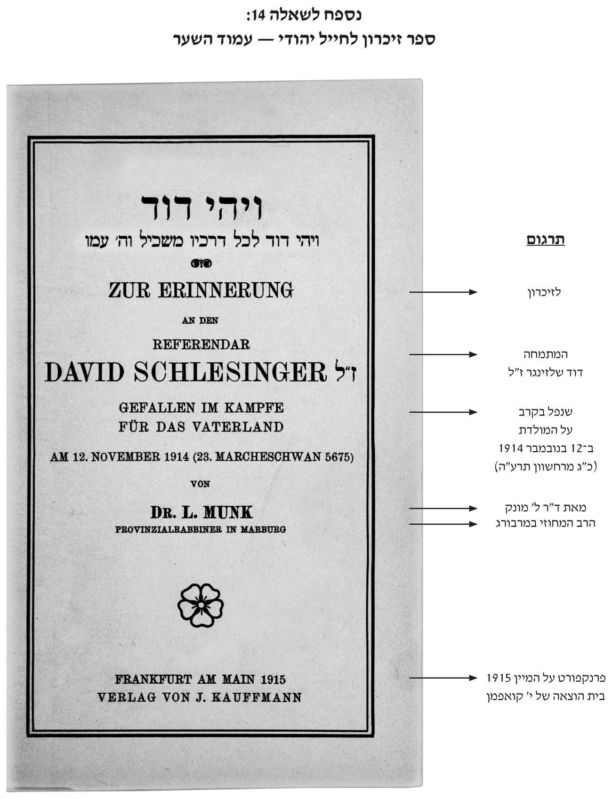</a><figcaption>נספח לשאלה 14 · לחצו על התמונה כדי להגדיל</figcaption></figure>
<div class="bh-sub"><p class="bh-subq" id="lbl-h29q-20s-14-1">על פי מה שלמדת, הצג את תפיסת העולם של הנאו־אורתודוקסיה על שני צדדיה.</p>
<textarea class="answer" data-id="h29q-20s-14-1" aria-labelledby="lbl-h29q-20s-14-1" rows="3" placeholder="כתבו כאן את התשובה שלכם..."></textarea></div>
<div class="bh-sub"><p class="bh-subq" id="lbl-h29q-20s-14-2">הצג שתי דוגמאות מפעילותו של הרש&quot;ר הירש שבהן תפיסת עולם זו באה לידי ביטוי.</p>
<textarea class="answer" data-id="h29q-20s-14-2" aria-labelledby="lbl-h29q-20s-14-2" rows="3" placeholder="כתבו כאן את התשובה שלכם..."></textarea></div>
<div class="bh-sub"><p class="bh-subq" id="lbl-h29q-20s-14-3">הסבר כיצד תפיסת העולם של הנאו־אורתודוקסיה על שני צדדיה באה לידי ביטוי בשני רכיבים מעמוד השער.</p>
<textarea class="answer" data-id="h29q-20s-14-3" aria-labelledby="lbl-h29q-20s-14-3" rows="3" placeholder="כתבו כאן את התשובה שלכם..."></textarea></div>
<div class="bh-sub"><p class="bh-subq" id="lbl-h29q-20s-14-4"><span class="bh-letter">ב</span> בחר בזרם דתי נוסף שהתפתח במאה ה־19 עד המאה ה־20, וציין את שמו.</p>
<textarea class="answer" data-id="h29q-20s-14-4" aria-labelledby="lbl-h29q-20s-14-4" rows="3" placeholder="כתבו כאן את התשובה שלכם..."></textarea></div>
<div class="bh-sub"><p class="bh-subq" id="lbl-h29q-20s-14-5">ציין שם של רב אחד שהשתייך לזרם זה.</p>
<textarea class="answer" data-id="h29q-20s-14-5" aria-labelledby="lbl-h29q-20s-14-5" rows="3" placeholder="כתבו כאן את התשובה שלכם..."></textarea></div>
<div class="bh-sub"><p class="bh-subq" id="lbl-h29q-20s-14-6">הצג אתגר אחד שהרב שציינת נאלץ להתמודד איתו.</p>
<textarea class="answer" data-id="h29q-20s-14-6" aria-labelledby="lbl-h29q-20s-14-6" rows="3" placeholder="כתבו כאן את התשובה שלכם..."></textarea></div>
<div class="bh-sub"><p class="bh-subq" id="lbl-h29q-20s-14-7">הסבר כיצד התמודד הרב עם אתגר זה.</p>
<textarea class="answer" data-id="h29q-20s-14-7" aria-labelledby="lbl-h29q-20s-14-7" rows="3" placeholder="כתבו כאן את התשובה שלכם..."></textarea></div>
<div class="bh-qkey" data-qkey="h29-20s-14" hidden></div>
</article>
<article class="bh-q" id="h29-19s-2">
<div class="bh-q-head"><span class="bh-exam">📅 בגרות קיץ תשע&quot;ט</span><span class="bh-qn">שאלה 2 בשאלון</span></div>
<div class="bh-sub"><p class="bh-subq" id="lbl-h29q-19s-2-1">רעיונות ההשכלה חדרו לקהילות יהודיות באזורים שונים בעולם. בחר באחד מן האזורים האלה: מזרח אירופה או ארצות המזרח התיכון וארצות האסלאם או תימן, וציין את האזור שבחרת.</p>
<textarea class="answer" data-id="h29q-19s-2-1" aria-labelledby="lbl-h29q-19s-2-1" rows="3" placeholder="כתבו כאן את התשובה שלכם..."></textarea></div>
<div class="bh-sub"><p class="bh-subq" id="lbl-h29q-19s-2-2">ציין את השינוי בלימוד התורה או בלימודי היהדות, שתומכי ההשכלה שאפו ליצור באזור שבחרת, והסבר מדוע הם היו מעוניינים בשינוי זה.</p>
<textarea class="answer" data-id="h29q-19s-2-2" aria-labelledby="lbl-h29q-19s-2-2" rows="3" placeholder="כתבו כאן את התשובה שלכם..."></textarea></div>
<div class="bh-sub"><p class="bh-subq" id="lbl-h29q-19s-2-3">הצג השפעה אחת של שינוי זה על החברה היהודית באזור שבחרת.</p>
<textarea class="answer" data-id="h29q-19s-2-3" aria-labelledby="lbl-h29q-19s-2-3" rows="3" placeholder="כתבו כאן את התשובה שלכם..."></textarea></div>
<div class="bh-qkey" data-qkey="h29-19s-2" hidden></div>
</article>
<article class="bh-q" id="h29-19w-3">
<div class="bh-q-head"><span class="bh-exam">📅 בגרות חורף תשע&quot;ט</span><span class="bh-qn">שאלה 3 בשאלון</span></div>
<p class="bh-ctx">במהלך המאה ה־19 והמאה ה־20 חלו שינויים במצבם של יהודים בארצות האסלאם — לעיתים לטובה ולעיתים לרעה — בעקבות תהליכים שונים שקרו בעולם.</p>
<div class="bh-sub"><p class="bh-subq" id="lbl-h29q-19w-3-1">הצג שינוי לטובה ושינוי לרעה שחל במצבם של יהודים בתקופה זו בארצות האסלאם שעליהן למדת (סך הכול — שני שינויים).</p>
<textarea class="answer" data-id="h29q-19w-3-1" aria-labelledby="lbl-h29q-19w-3-1" rows="3" placeholder="כתבו כאן את התשובה שלכם..."></textarea></div>
<div class="bh-sub"><p class="bh-subq" id="lbl-h29q-19w-3-2">הסבר כיצד כל אחד מן השינויים שהצגת הושפע מאחד התהליכים האלה: התחזקות המעצמות האירופיות, חדירת רעיונות ההשכלה, התבססות הבית הלאומי בארץ־ישראל (סך הכול — שני הסברים).</p>
<textarea class="answer" data-id="h29q-19w-3-2" aria-labelledby="lbl-h29q-19w-3-2" rows="3" placeholder="כתבו כאן את התשובה שלכם..."></textarea></div>
<div class="bh-qkey" data-qkey="h29-19w-3" hidden></div>
</article>
<article class="bh-q" id="h29-18s-2">
<div class="bh-q-head"><span class="bh-exam">📅 בגרות קיץ תשע&quot;ח</span><span class="bh-qn">שאלה 2 בשאלון</span></div>
<div class="bh-sub"><p class="bh-subq" id="lbl-h29q-18s-2-1">בחר באחת מן התנועות לתיקונים בדת שלמדת עליה: תנועת הרפורמה או התנועה השמרנית (הפוזיטיבית־היסטורית).</p>
<textarea class="answer" data-id="h29q-18s-2-1" aria-labelledby="lbl-h29q-18s-2-1" rows="3" placeholder="כתבו כאן את התשובה שלכם..."></textarea></div>
<div class="bh-sub"><p class="bh-subq" id="lbl-h29q-18s-2-2">הצג את התפיסה של התנועה שבחרת בנוגע לקיום המצוות בעולם המודרני, והסבר כיצד תפיסה זו באה לידי ביטוי בשתי פעולות שנקטה תנועה זו.</p>
<textarea class="answer" data-id="h29q-18s-2-2" aria-labelledby="lbl-h29q-18s-2-2" rows="3" placeholder="כתבו כאן את התשובה שלכם..."></textarea></div>
<div class="bh-sub"><p class="bh-subq" id="lbl-h29q-18s-2-3">הצג את התפיסה של אחד הזרמים האורתודוקסיים שלמדת עליו בנוגע לחיים דתיים בעולם המודרני.</p>
<textarea class="answer" data-id="h29q-18s-2-3" aria-labelledby="lbl-h29q-18s-2-3" rows="3" placeholder="כתבו כאן את התשובה שלכם..."></textarea></div>
<div class="bh-qkey" data-qkey="h29-18s-2" hidden></div>
</article>
<article class="bh-q" id="h29-18s-14">
<div class="bh-q-head"><span class="bh-exam">📅 בגרות קיץ תשע&quot;ח</span><span class="bh-qn">שאלה 14 בשאלון</span></div>
<p class="bh-ctx">לפניך רשימה של אישים ששילבו בתפיסותיהם מסורת וחידוש: משה מנדלסון, הרב יהודה אלקלעי, הרב צבי הירש קלישר, הרב יחיא קאפח, הראי&quot;ה קוק.</p>
<div class="bh-sub"><p class="bh-subq" id="lbl-h29q-18s-14-1">בחר באחד מן האישים האלה, והצג את הרקע ההיסטורי שהניע אותו לשלב חידושים בתפיסותיו.</p>
<textarea class="answer" data-id="h29q-18s-14-1" aria-labelledby="lbl-h29q-18s-14-1" rows="3" placeholder="כתבו כאן את התשובה שלכם..."></textarea></div>
<div class="bh-sub"><p class="bh-subq" id="lbl-h29q-18s-14-2">הצג פעולה אחת שעשה האיש כדי לקדם את תפיסותיו.</p>
<textarea class="answer" data-id="h29q-18s-14-2" aria-labelledby="lbl-h29q-18s-14-2" rows="3" placeholder="כתבו כאן את התשובה שלכם..."></textarea></div>
<div class="bh-sub"><p class="bh-subq" id="lbl-h29q-18s-14-3">ציין מסר או ערך שאתה לומד ממורשתו של האיש. נמק את דעתך.</p>
<textarea class="answer" data-id="h29q-18s-14-3" aria-labelledby="lbl-h29q-18s-14-3" rows="3" placeholder="כתבו כאן את התשובה שלכם..."></textarea></div>
<div class="bh-qkey" data-qkey="h29-18s-14" hidden></div>
</article>
<article class="bh-q" id="h29-17s-1">
<div class="bh-q-head"><span class="bh-exam">📅 בגרות קיץ תשע&quot;ז</span><span class="bh-qn">שאלה 1 בשאלון</span></div>
<div class="bh-sub"><p class="bh-subq" id="lbl-h29q-17s-1-1">הצג שני הבדלים בין תנועת ההשכלה בחברה היהודית במערב אירופה לבין תנועת ההשכלה בחברה היהודית במזרח אירופה.</p>
<textarea class="answer" data-id="h29q-17s-1-1" aria-labelledby="lbl-h29q-17s-1-1" rows="3" placeholder="כתבו כאן את התשובה שלכם..."></textarea></div>
<div class="bh-sub"><p class="bh-subq" id="lbl-h29q-17s-1-2">הסבר את הקשר בין אחד מן ההבדלים שהצגת לבין החברה הכללית שבתוכה חיו היהודים.</p>
<textarea class="answer" data-id="h29q-17s-1-2" aria-labelledby="lbl-h29q-17s-1-2" rows="3" placeholder="כתבו כאן את התשובה שלכם..."></textarea></div>
<div class="bh-qkey" data-qkey="h29-17s-1" hidden></div>
</article>
<article class="bh-q" id="h29-17s-2">
<div class="bh-q-head"><span class="bh-exam">📅 בגרות קיץ תשע&quot;ז</span><span class="bh-qn">שאלה 2 בשאלון</span></div>
<div class="bh-sub"><p class="bh-subq" id="lbl-h29q-17s-2-1">הצג את ההתלבטות שהייתה משותפת לזרם הנאו־אורתודוקסי ולזרם יהודי נוסף שלמדת עליו, שפעלו במהלך המאה ה־19.</p>
<textarea class="answer" data-id="h29q-17s-2-1" aria-labelledby="lbl-h29q-17s-2-1" rows="3" placeholder="כתבו כאן את התשובה שלכם..."></textarea></div>
<div class="bh-sub"><p class="bh-subq" id="lbl-h29q-17s-2-2">הסבר את דרך ההתמודדות של כל אחד מן הזרמים (הזרם הנאו־אורתודוקסי והזרם הנוסף שבחרת) עם ההתלבטות שהצגת (סך הכול — שתי דרכי התמודדות).</p>
<textarea class="answer" data-id="h29q-17s-2-2" aria-labelledby="lbl-h29q-17s-2-2" rows="3" placeholder="כתבו כאן את התשובה שלכם..."></textarea></div>
<div class="bh-qkey" data-qkey="h29-17s-2" hidden></div>
</article>
</section>
<section class="bh-panel" role="tabpanel" id="h-tziyonut" aria-labelledby="tab-tziyonut" hidden>
<h2 class="bh-panel-title"><span aria-hidden="true">✡️</span> הציונות והציונות הדתית <small>23 שאלות</small></h2>
<article class="bh-q" id="h29-26w-1">
<div class="bh-q-head"><span class="bh-exam">📅 בגרות חורף תשפ&quot;ו</span><span class="bh-qn">שאלה 1 בשאלון</span></div>
<h3 class="bh-qtitle">חיבת ציון</h3>
<p class="bh-ctx">במהלך שנות פעילותו הציבורית של פינסקר חל שינוי בתפיסתו האידאולוגית בנוגע לעתיד העם היהודי. שינוי זה הוביל אותו לפרסם את ספרו &quot;אוטואמנציפציה&quot; בשנת 1882.</p>
<div class="bh-sub"><p class="bh-subq" id="lbl-h29q-26w-1-1">הציגו את השינוי בתפיסתו של פינסקר, וציינו את הסיבה לשינוי זה.</p>
<textarea class="answer" data-id="h29q-26w-1-1" aria-labelledby="lbl-h29q-26w-1-1" rows="3" placeholder="כתבו כאן את התשובה שלכם..."></textarea></div>
<div class="bh-sub"><p class="bh-subq" id="lbl-h29q-26w-1-2">ציינו מאפיין חברתי של תנועת חיבת ציון שנחשב ייחודי לתקופה שבה פעלה (סוף המאה ה־19).</p>
<textarea class="answer" data-id="h29q-26w-1-2" aria-labelledby="lbl-h29q-26w-1-2" rows="3" placeholder="כתבו כאן את התשובה שלכם..."></textarea></div>
<div class="bh-sub"><p class="bh-subq" id="lbl-h29q-26w-1-3">הציגו הבדל אחד בין תנועת חיבת ציון ובין התנועה הציונית של הרצל.</p>
<textarea class="answer" data-id="h29q-26w-1-3" aria-labelledby="lbl-h29q-26w-1-3" rows="3" placeholder="כתבו כאן את התשובה שלכם..."></textarea></div>
<div class="bh-qkey" data-qkey="h29-26w-1" hidden></div>
</article>
<article class="bh-q" id="h29-26w-5">
<div class="bh-q-head"><span class="bh-exam">📅 בגרות חורף תשפ&quot;ו</span><span class="bh-qn">שאלה 5 בשאלון</span></div>
<h3 class="bh-qtitle">הפועל המזרחי</h3>
<p class="bh-ctx">ההיסטוריון אריה פישמן עסק בהתהוותה (בתהליכים שהביאו להקמתה) של תנועת הפועל המזרחי. הוא קבע כי לקראת סוף מלחמת העולם הראשונה:</p>
<blockquote class="bh-quote">&quot;תמונת העולם של הנוער המסורתי [במזרח אירופה] נקרעה בין ערכים מסורתיים [יהודיים] לבין ערכים... חילוניים [כלליים]&quot;.</blockquote>
<p class="bh-cite">(א&#x27; פישמן, בין דת לאידאולוגיה – יהדות ומודרניזציה בקיבוץ הדתי, יד בן־צבי, ירושלים, 1990, עמ&#x27; 60)</p>
<div class="bh-sub"><p class="bh-subq" id="lbl-h29q-26w-5-1">על פי מה שלמדתם, ציינו והציגו &quot;ערך חילוני&quot; (כללי) אחד שעמד בבסיס התהוותה של תנועת הפועל המזרחי.</p>
<textarea class="answer" data-id="h29q-26w-5-1" aria-labelledby="lbl-h29q-26w-5-1" rows="3" placeholder="כתבו כאן את התשובה שלכם..."></textarea></div>
<div class="bh-sub"><p class="bh-subq" id="lbl-h29q-26w-5-2">הסבירו את המענה הרעיוני של הוגי תנועת הפועל המזרחי על הקרע שבין &quot;הערכים המסורתיים&quot; ובין &quot;הערכים החילוניים&quot; (כלליים).</p>
<textarea class="answer" data-id="h29q-26w-5-2" aria-labelledby="lbl-h29q-26w-5-2" rows="3" placeholder="כתבו כאן את התשובה שלכם..."></textarea></div>
<div class="bh-sub"><p class="bh-subq" id="lbl-h29q-26w-5-3">הציגו דרך פעולה אחת שבה יושמו עקרונות הפועל המזרחי.</p>
<textarea class="answer" data-id="h29q-26w-5-3" aria-labelledby="lbl-h29q-26w-5-3" rows="3" placeholder="כתבו כאן את התשובה שלכם..."></textarea></div>
<div class="bh-qkey" data-qkey="h29-26w-5" hidden></div>
</article>
<article class="bh-q" id="h29-26w-12">
<div class="bh-q-head"><span class="bh-exam">📅 בגרות חורף תשפ&quot;ו</span><span class="bh-qn">שאלה 12 בשאלון</span></div>
<details class="bh-passage"><summary><span aria-hidden="true">📄</span> הקטע שעליו מבוססת השאלה · לחצו כדי לקרוא</summary><div class="bh-passage-body">
<p class="bh-ctx">לפניכם קטע מתוך הקונטרס (חוברת) &quot;הציונות באור האמונה&quot;, שחיבר הרב משה שמואל גלזנר – רב הונגרי שהיה אחד ממנהיגי תנועת המזרחי.</p>
<p class="bh-src-label">פסקה 1</p>
<p class="bh-src-text">מאז הופעתה של התנועה הציונית, שעוררה את היהדות מתרדמתה, עסקו רבים בשאלה אם היהודים - שמפוזרים בין האומות – הם אומה בפני עצמה. בשביל הנוכרי, התשובה על כך מובנת מאליה. גם שוליית הסנדלרים [אדם פשוט ונטול השכלה] שנוהג לקלל יהודים, וגם הנוצרי המשכיל, שמחרים את היהודי בצורה עדינה – לשניהם ברור שהיהודי הוא זר, בעל תכונות גזע, נימוסים ומנהגים ייחודיים. ולפיכך, היהודי עבורם הוא כמחט בבשר החי של העמים.</p>
<p class="bh-src-label">פסקה 2</p>
<p class="bh-src-text">אף על פי כן, המתבוללים רואים את עצמם חלק מבני האומה השלטת. הם אינם מאמינים בעתידו של העם היהודי, והם קשורים ליהדות בקשר טקסי בלבד. קשר זה מתבטא בעיקר בביקור ב&quot;טמפל&quot; [בית כנסת שאינו אורתודוקסי] בימים הנוראים. בשאר תחומי החיים הם אינם נבדלים מן הנוצרים. לפיכך הם אינם מבינים מדוע אין הגויים רואים בהם אנשים שווי זכויות. עם המתבוללים אין טעם להתווכח, שכן הם מתנכרים ליהדות והתרחקו ממנה מרחק רב. אין אלא להצטער שהחברה הנוכרית אינה מכבדת את דרכם והיא מייחסת להם תכונות זרות, אף שהם כופרים בהן לחלוטין.</p>
<p class="bh-src-label">פסקה 3</p>
<p class="bh-src-text">בדומה למתבוללים, יש גם יהודים אורתודוקסים המתכחשים ללאומיותם היהודית, שכן הם רואים ביהדות עדה דתית בלבד. ואולם, האמת היא שהעם היהודי הוא לאום בעל שאיפות לאומיות ככל העמים. התורה היא חוקת מדינה ומבוססת על ההנחה של קיום עם במדינתו. ציוויים שונים מבוססים על קיום ארץ משלנו - ארץ־ישראל. עיקר גדול הוא האמונה שנשוב לארץ אבותינו, כי רק שם – בתור עם חופשי – נוכל להתפתח לממלכת כוהנים וגוי קדוש.</p>
<p class="bh-src-label">פסקה 4</p>
<p class="bh-src-text">עם זאת, חששותיהם של רבים מן האורתודוקסים, לנוכח תחיית הרעיון הלאומי, הם חששות מבוססים. גלוי וידוע שבמשך אלפיים שנות הגלות לא הייתה זו אלא התורה שקיימה את ישראל. ההגייה בתורה הייתה האידיאל היחיד של העם. עתה, עם חידוש החיים הלאומיים בארץ־ישראל, תזכה העבודה בכל שטחי הפעילות האנושית להערכה ראויה, ותלמוד התורה יחדל להיות התחום היחיד שבו יהיה אפשר לפעול בשביל היהדות. גם עבודתם של הרופא, האדריכל והאומן – ייחשבו לעבודה יהודית. האם לא יזרמו אל תחומים אלה כל אותם בני הנעורים שישבו עד עכשיו על ספסלי בית המדרש? ותורה מה תהא עליה? ואולם, ירידת שיעור לומדי התלמוד אינה צריכה לעורר חששות. המצב בארץ־ישראל יהיה בריא וטבעי יותר אם רק חלק קטן מן העם יפנה ללימודים תורניים בדרגה הגבוהה, כפי שבהיסטוריה של עם ישראל הופרש שבט לוי - שהיווה כשמונה אחוזים מהעם - כדי להתמסר לתלמוד תורה. שאר השבטים עסקו במקצועות ארציים. העבודה בארץ־ישראל עידנה את הנפש מפני שהיא קידמה את פריחת המולדת, ומצוותה שוות ערך למצוות התפילה ותלמוד התורה בגלות.</p>
<p class="bh-src-label">פסקה 5</p>
<p class="bh-src-text">יש לציין כי חששות דתיים שקיימים היום בנוגע לציונות, היו בכל השלבים של הרחבת זכויותיהם של היהודים בגולה. לאחר שהאומות הגיעו למסקנה שלא ייתכן לשלול מהיהודים את זכויותיהם הטבעיות, וכשהעניקו להם פה ושם זכויות של שווים, היו אלה מורינו החרדים באותו הדור, שהביעו את החששות הדתיים החמורים ביותר, ושהשתמשו בכל האמצעים כדי לעכב תהליך זה. ואולם, סברתי בזמנו כי אף על פי שהאמנציפציה טומנת בחובה סכנה לאמונה השלמה, אין זו סיבה לוותר מרצון על זכויות טבעיות. &quot;דרכיה דרכי נועם&quot;: אין הקדוש ברוך הוא מבקש מן האדם לשתק את שאיפתו להצלחה בגלל איומים על שלמות האמונה. אם כך הדבר בנוגע ליחידים, למה יבקש הקדוש ברוך הוא מעם שלם התכחשות כזו, שכמוה כאיבוד עצמו לדעת? באותה מידה יש כיום אבסורד ברעיון שעלינו, החרדים, להתנגד לציונות בגלל החשש שבארץ־ישראל לא נהיה די אדוקים [דתיים].</p>
<p class="bh-src-label">פסקה 6</p>
<p class="bh-src-text">אוסיף כי חכמינו אומרים על עם ישראל כי &quot;אפילו אם עובדים עבודה זרה, כל זמן שהם בחיבור אחד הנח להם&quot;. כלומר גם אם העם כולו, חס וחלילה, שוכח את עצמו עד כדי כך שהוא עובד עבודה זרה – כל זמן שהוא שומר על אחדותו, מובטח הוא שיחזור אל עצמו. ועתה יש שרוצים בשם התורה לפלג את עם ישראל ולהפריע במעשי התחייה הלאומית? הינכם רוצים לעשות את העם שתי אומות בניגוד לפסוק &quot;ומי כעמך ישראל גוי אחד בארץ&quot;. אי אפשר לחלק את העם, וגם מי שאינם שומרי מצוות הם בני אברהם, יצחק ויעקב. הכול אפשר וצריך להקריב לשם קיומה של תורה, אך לא את עם ישראל עצמו. התורה ניתנה בשביל ישראל, ולא ישראל בשביל התורה.</p>
<p class="bh-cite">(מעובד על פי הרב גלזנר, הציונות באור האמונה, תרגם: נפתלי בן מנחם, תדפיס מ&quot;תורה ומלוכה&quot;, הוצאת מוסד הרב קוק, ירושלים תשכ&quot;א, עמ&#x27; 63–78)</p>
<p class="bh-src-text"></p>
</div></details>
<p class="bh-ctx">הרב גלזנר מציין כי אחד החששות שמאפיינים יהודים אורתודוקסים לנוכח עליית הציונות, הוא הפגיעה בלימוד תורה.</p>
<div class="bh-sub"><p class="bh-subq" id="lbl-h29q-26w-12-1">על פי פסקה 4, הסבירו את הסיבה לחשש הזה, והסבירו את תשובתו של הרב גלזנר על כך.</p>
<textarea class="answer" data-id="h29q-26w-12-1" aria-labelledby="lbl-h29q-26w-12-1" rows="3" placeholder="כתבו כאן את התשובה שלכם..."></textarea></div>
<p class="bh-ctx">הרב גלזנר והרב ריינס תמכו שניהם בשיתוף פעולה עם החילונים במסגרת התנועה הציונית.</p>
<div class="bh-sub"><p class="bh-subq" id="lbl-h29q-26w-12-2">על פי פסקה 6 ועל פי מה שלמדתם, הסבירו את ההבדל בין הנימוק של הרב גלזנר ובין הנימוק של הרב ריינס לעמדה זו.</p>
<textarea class="answer" data-id="h29q-26w-12-2" aria-labelledby="lbl-h29q-26w-12-2" rows="3" placeholder="כתבו כאן את התשובה שלכם..."></textarea></div>
<div class="bh-sub"><p class="bh-subq" id="lbl-h29q-26w-12-3">על פי עולם הערכים שלכם, הסבירו עם איזה מן הנימוקים אתם מזדהים יותר.</p>
<textarea class="answer" data-id="h29q-26w-12-3" aria-labelledby="lbl-h29q-26w-12-3" rows="3" placeholder="כתבו כאן את התשובה שלכם..."></textarea></div>
<div class="bh-qkey" data-qkey="h29-26w-12" hidden></div>
</article>
<article class="bh-q" id="h29-26w-13">
<div class="bh-q-head"><span class="bh-exam">📅 בגרות חורף תשפ&quot;ו</span><span class="bh-qn">שאלה 13 בשאלון</span></div>
<details class="bh-passage"><summary><span aria-hidden="true">📄</span> הקטע שעליו מבוססת השאלה · לחצו כדי לקרוא</summary><div class="bh-passage-body">
<p class="bh-ctx">לפניכם קטע מתוך הקונטרס (חוברת) &quot;הציונות באור האמונה&quot;, שחיבר הרב משה שמואל גלזנר – רב הונגרי שהיה אחד ממנהיגי תנועת המזרחי.</p>
<p class="bh-src-label">פסקה 1</p>
<p class="bh-src-text">מאז הופעתה של התנועה הציונית, שעוררה את היהדות מתרדמתה, עסקו רבים בשאלה אם היהודים - שמפוזרים בין האומות – הם אומה בפני עצמה. בשביל הנוכרי, התשובה על כך מובנת מאליה. גם שוליית הסנדלרים [אדם פשוט ונטול השכלה] שנוהג לקלל יהודים, וגם הנוצרי המשכיל, שמחרים את היהודי בצורה עדינה – לשניהם ברור שהיהודי הוא זר, בעל תכונות גזע, נימוסים ומנהגים ייחודיים. ולפיכך, היהודי עבורם הוא כמחט בבשר החי של העמים.</p>
<p class="bh-src-label">פסקה 2</p>
<p class="bh-src-text">אף על פי כן, המתבוללים רואים את עצמם חלק מבני האומה השלטת. הם אינם מאמינים בעתידו של העם היהודי, והם קשורים ליהדות בקשר טקסי בלבד. קשר זה מתבטא בעיקר בביקור ב&quot;טמפל&quot; [בית כנסת שאינו אורתודוקסי] בימים הנוראים. בשאר תחומי החיים הם אינם נבדלים מן הנוצרים. לפיכך הם אינם מבינים מדוע אין הגויים רואים בהם אנשים שווי זכויות. עם המתבוללים אין טעם להתווכח, שכן הם מתנכרים ליהדות והתרחקו ממנה מרחק רב. אין אלא להצטער שהחברה הנוכרית אינה מכבדת את דרכם והיא מייחסת להם תכונות זרות, אף שהם כופרים בהן לחלוטין.</p>
<p class="bh-src-label">פסקה 3</p>
<p class="bh-src-text">בדומה למתבוללים, יש גם יהודים אורתודוקסים המתכחשים ללאומיותם היהודית, שכן הם רואים ביהדות עדה דתית בלבד. ואולם, האמת היא שהעם היהודי הוא לאום בעל שאיפות לאומיות ככל העמים. התורה היא חוקת מדינה ומבוססת על ההנחה של קיום עם במדינתו. ציוויים שונים מבוססים על קיום ארץ משלנו - ארץ־ישראל. עיקר גדול הוא האמונה שנשוב לארץ אבותינו, כי רק שם – בתור עם חופשי – נוכל להתפתח לממלכת כוהנים וגוי קדוש.</p>
<p class="bh-src-label">פסקה 4</p>
<p class="bh-src-text">עם זאת, חששותיהם של רבים מן האורתודוקסים, לנוכח תחיית הרעיון הלאומי, הם חששות מבוססים. גלוי וידוע שבמשך אלפיים שנות הגלות לא הייתה זו אלא התורה שקיימה את ישראל. ההגייה בתורה הייתה האידיאל היחיד של העם. עתה, עם חידוש החיים הלאומיים בארץ־ישראל, תזכה העבודה בכל שטחי הפעילות האנושית להערכה ראויה, ותלמוד התורה יחדל להיות התחום היחיד שבו יהיה אפשר לפעול בשביל היהדות. גם עבודתם של הרופא, האדריכל והאומן – ייחשבו לעבודה יהודית. האם לא יזרמו אל תחומים אלה כל אותם בני הנעורים שישבו עד עכשיו על ספסלי בית המדרש? ותורה מה תהא עליה? ואולם, ירידת שיעור לומדי התלמוד אינה צריכה לעורר חששות. המצב בארץ־ישראל יהיה בריא וטבעי יותר אם רק חלק קטן מן העם יפנה ללימודים תורניים בדרגה הגבוהה, כפי שבהיסטוריה של עם ישראל הופרש שבט לוי - שהיווה כשמונה אחוזים מהעם - כדי להתמסר לתלמוד תורה. שאר השבטים עסקו במקצועות ארציים. העבודה בארץ־ישראל עידנה את הנפש מפני שהיא קידמה את פריחת המולדת, ומצוותה שוות ערך למצוות התפילה ותלמוד התורה בגלות.</p>
<p class="bh-src-label">פסקה 5</p>
<p class="bh-src-text">יש לציין כי חששות דתיים שקיימים היום בנוגע לציונות, היו בכל השלבים של הרחבת זכויותיהם של היהודים בגולה. לאחר שהאומות הגיעו למסקנה שלא ייתכן לשלול מהיהודים את זכויותיהם הטבעיות, וכשהעניקו להם פה ושם זכויות של שווים, היו אלה מורינו החרדים באותו הדור, שהביעו את החששות הדתיים החמורים ביותר, ושהשתמשו בכל האמצעים כדי לעכב תהליך זה. ואולם, סברתי בזמנו כי אף על פי שהאמנציפציה טומנת בחובה סכנה לאמונה השלמה, אין זו סיבה לוותר מרצון על זכויות טבעיות. &quot;דרכיה דרכי נועם&quot;: אין הקדוש ברוך הוא מבקש מן האדם לשתק את שאיפתו להצלחה בגלל איומים על שלמות האמונה. אם כך הדבר בנוגע ליחידים, למה יבקש הקדוש ברוך הוא מעם שלם התכחשות כזו, שכמוה כאיבוד עצמו לדעת? באותה מידה יש כיום אבסורד ברעיון שעלינו, החרדים, להתנגד לציונות בגלל החשש שבארץ־ישראל לא נהיה די אדוקים [דתיים].</p>
<p class="bh-src-label">פסקה 6</p>
<p class="bh-src-text">אוסיף כי חכמינו אומרים על עם ישראל כי &quot;אפילו אם עובדים עבודה זרה, כל זמן שהם בחיבור אחד הנח להם&quot;. כלומר גם אם העם כולו, חס וחלילה, שוכח את עצמו עד כדי כך שהוא עובד עבודה זרה – כל זמן שהוא שומר על אחדותו, מובטח הוא שיחזור אל עצמו. ועתה יש שרוצים בשם התורה לפלג את עם ישראל ולהפריע במעשי התחייה הלאומית? הינכם רוצים לעשות את העם שתי אומות בניגוד לפסוק &quot;ומי כעמך ישראל גוי אחד בארץ&quot;. אי אפשר לחלק את העם, וגם מי שאינם שומרי מצוות הם בני אברהם, יצחק ויעקב. הכול אפשר וצריך להקריב לשם קיומה של תורה, אך לא את עם ישראל עצמו. התורה ניתנה בשביל ישראל, ולא ישראל בשביל התורה.</p>
<p class="bh-cite">(מעובד על פי הרב גלזנר, הציונות באור האמונה, תרגם: נפתלי בן מנחם, תדפיס מ&quot;תורה ומלוכה&quot;, הוצאת מוסד הרב קוק, ירושלים תשכ&quot;א, עמ&#x27; 63–78)</p>
<p class="bh-src-text"></p>
</div></details>
<div class="bh-sub"><p class="bh-subq" id="lbl-h29q-26w-13-1">על פי פסקה 2, ציינו איזו קבוצה בעם היהודי אין טעם לנסות לשכנע בצדקת הרעיון הציוני.</p>
<textarea class="answer" data-id="h29q-26w-13-1" aria-labelledby="lbl-h29q-26w-13-1" rows="3" placeholder="כתבו כאן את התשובה שלכם..."></textarea></div>
<div class="bh-sub"><p class="bh-subq" id="lbl-h29q-26w-13-2">הציגו את הנימוק שמביא הרב גלזנר לכך.</p>
<textarea class="answer" data-id="h29q-26w-13-2" aria-labelledby="lbl-h29q-26w-13-2" rows="3" placeholder="כתבו כאן את התשובה שלכם..."></textarea></div>
<div class="bh-sub"><p class="bh-subq" id="lbl-h29q-26w-13-3">על פי פסקה 5, הסבירו את עמדתו המורכבת (שני צדדים) של הרב גלזנר בנוגע לאמנציפציה.</p>
<textarea class="answer" data-id="h29q-26w-13-3" aria-labelledby="lbl-h29q-26w-13-3" rows="3" placeholder="כתבו כאן את התשובה שלכם..."></textarea></div>
<div class="bh-sub"><p class="bh-subq" id="lbl-h29q-26w-13-4">על פי מה שלמדתם, הסבירו את עמדתו של רב אחר שלמדתם עליו בנוגע לאמנציפציה. בתשובתכם ציינו את שמו של הרב.</p>
<textarea class="answer" data-id="h29q-26w-13-4" aria-labelledby="lbl-h29q-26w-13-4" rows="3" placeholder="כתבו כאן את התשובה שלכם..."></textarea></div>
<p class="bh-ctx"></p>
<div class="bh-qkey" data-qkey="h29-26w-13" hidden></div>
</article>
<article class="bh-q" id="h29-26w-14">
<div class="bh-q-head"><span class="bh-exam">📅 בגרות חורף תשפ&quot;ו</span><span class="bh-qn">שאלה 14 בשאלון</span></div>
<h3 class="bh-qtitle">ציונות מדינית והצהרת בלפור</h3>
<div class="bh-sub"><p class="bh-subq" id="lbl-h29q-26w-14-1"><span class="bh-letter">א</span> הציגו את גישת הציונות המדינית של הרצל.</p>
<textarea class="answer" data-id="h29q-26w-14-1" aria-labelledby="lbl-h29q-26w-14-1" rows="3" placeholder="כתבו כאן את התשובה שלכם..."></textarea></div>
<div class="bh-sub"><p class="bh-subq" id="lbl-h29q-26w-14-2">הציגו סעיף בתוכנית באזל שמשקף את גישת הציונות המדינית.</p>
<textarea class="answer" data-id="h29q-26w-14-2" aria-labelledby="lbl-h29q-26w-14-2" rows="3" placeholder="כתבו כאן את התשובה שלכם..."></textarea></div>
<p class="bh-ctx"><span class="bh-letter">ב</span> בנספח לשאלה זו מוצג איור שפורסם בעמוד השער של עיתון יהודי באירופה, באפריל 1920, ארבעה ימים לאחר סיום ועידת סן רמו, שבה הוחלט כי בריטניה תקבל את המנדט על ארץ־ישראל ותהיה אחראית למימוש הצהרת בלפור. עיינו באיור, וענו על השאלות שלפניכם.</p>
<figure class="bh-fig"><a href="assets/h29/h29-26w-n14-1.jpg" target="_blank" rel="noopener">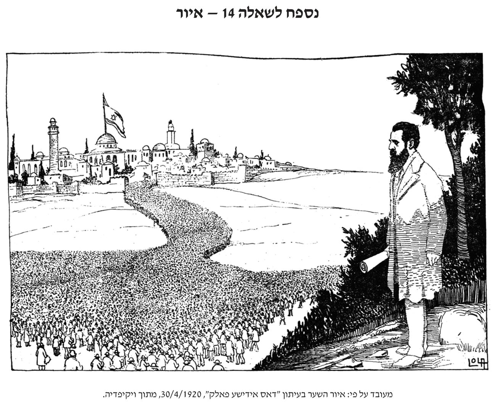</a><figcaption>נספח לשאלה 14 · לחצו על התמונה כדי להגדיל</figcaption></figure>
<div class="bh-sub"><p class="bh-subq" id="lbl-h29q-26w-14-3">על פי מה שלמדתם, הציגו מה הייתה המטרה של שיטת המנדטים.</p>
<textarea class="answer" data-id="h29q-26w-14-3" aria-labelledby="lbl-h29q-26w-14-3" rows="3" placeholder="כתבו כאן את התשובה שלכם..."></textarea></div>
<div class="bh-sub"><p class="bh-subq" id="lbl-h29q-26w-14-4">על פי מה שלמדתם, הציגו מהי הצהרת בלפור.</p>
<textarea class="answer" data-id="h29q-26w-14-4" aria-labelledby="lbl-h29q-26w-14-4" rows="3" placeholder="כתבו כאן את התשובה שלכם..."></textarea></div>
<div class="bh-sub"><p class="bh-subq" id="lbl-h29q-26w-14-5">על פי האיור, הסבירו את המסר הקשור בהחלטה שהתקבלה בוועידת סן רמו. בתשובתכם ציינו שני רכיבים מן האיור, שעליהם התבססתם.</p>
<textarea class="answer" data-id="h29q-26w-14-5" aria-labelledby="lbl-h29q-26w-14-5" rows="3" placeholder="כתבו כאן את התשובה שלכם..."></textarea></div>
<div class="bh-sub"><p class="bh-subq" id="lbl-h29q-26w-14-6">לדעתכם, האם הצהרת בלפור הייתה ציון דרך חשוב בתולדות העם היהודי? נמקו את תשובתכם על פי עובדה היסטורית.</p>
<textarea class="answer" data-id="h29q-26w-14-6" aria-labelledby="lbl-h29q-26w-14-6" rows="3" placeholder="כתבו כאן את התשובה שלכם..."></textarea></div>
<div class="bh-qkey" data-qkey="h29-26w-14" hidden></div>
</article>
<article class="bh-q" id="h29-25w-3">
<div class="bh-q-head"><span class="bh-exam">📅 בגרות חורף תשפ&quot;ה</span><span class="bh-qn">שאלה 3 בשאלון</span></div>
<h3 class="bh-qtitle">&quot;חיבת ציון&quot;, &quot;המזרחי&quot; ו&quot;הפועל המזרחי&quot;</h3>
<p class="bh-ctx">התנועות &quot;חיבת ציון&quot;, &quot;המזרחי&quot; ו&quot;הפועל המזרחי&quot; ייצגו היבטים שונים של לאומיות יהודית.</p>
<div class="bh-sub"><p class="bh-subq" id="lbl-h29q-25w-3-1">הסבירו כיצד עולי &quot;חיבת ציון&quot; מן העלייה הראשונה (1882–1904) יצרו שינוי ממשי באופיו של היישוב היהודי בארץ.</p>
<textarea class="answer" data-id="h29q-25w-3-1" aria-labelledby="lbl-h29q-25w-3-1" rows="3" placeholder="כתבו כאן את התשובה שלכם..."></textarea></div>
<div class="bh-sub"><p class="bh-subq" id="lbl-h29q-25w-3-2">ציינו נקודת דמיון אחת המשותפת לאידאולוגיה של תנועת &quot;המזרחי&quot; ושל תנועת &quot;הפועל המזרחי&quot;.</p>
<textarea class="answer" data-id="h29q-25w-3-2" aria-labelledby="lbl-h29q-25w-3-2" rows="3" placeholder="כתבו כאן את התשובה שלכם..."></textarea></div>
<div class="bh-sub"><p class="bh-subq" id="lbl-h29q-25w-3-3">הציגו הבדל אחד בין האידאולוגיה של תנועת &quot;המזרחי&quot; ובין האידאולוגיה של תנועת &quot;הפועל המזרחי&quot;.</p>
<textarea class="answer" data-id="h29q-25w-3-3" aria-labelledby="lbl-h29q-25w-3-3" rows="3" placeholder="כתבו כאן את התשובה שלכם..."></textarea></div>
<div class="bh-qkey" data-qkey="h29-25w-3" hidden></div>
</article>
<article class="bh-q" id="h29-25w-14">
<div class="bh-q-head"><span class="bh-exam">📅 בגרות חורף תשפ&quot;ה</span><span class="bh-qn">שאלה 14 בשאלון</span></div>
<h3 class="bh-qtitle">לאומיות וציונות</h3>
<p class="bh-ctx"><span class="bh-letter">א</span> בנספח לשאלה זו מוצגת כרזה ציונית שבמרכזה הדמות של רות המואבייה. הכרזה פורסמה ברוסיה בשנת 1917. עיינו בכרזה וענו על השאלות שלפניכם.</p>
<figure class="bh-fig"><a href="assets/h29/h29-25w-n14-1.jpg" target="_blank" rel="noopener">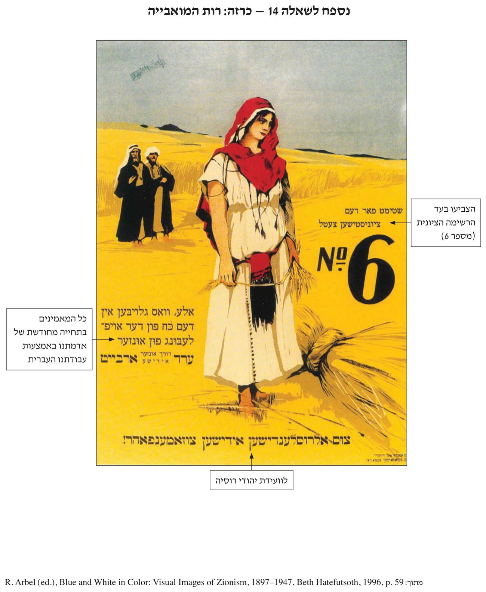</a><figcaption>נספח לשאלה 14 · לחצו על התמונה כדי להגדיל</figcaption></figure>
<div class="bh-sub"><p class="bh-subq" id="lbl-h29q-25w-14-1">על פי מה שלמדתם, ציינו שני מאפיינים של הלאומיות האתנית־היסטורית.</p>
<textarea class="answer" data-id="h29q-25w-14-1" aria-labelledby="lbl-h29q-25w-14-1" rows="3" placeholder="כתבו כאן את התשובה שלכם..."></textarea></div>
<div class="bh-sub"><p class="bh-subq" id="lbl-h29q-25w-14-2">בחרו באחד המאפיינים שציינתם, והסבירו כיצד מאפיין זה בא לידי ביטוי ברכיב אחד בכרזה.</p>
<textarea class="answer" data-id="h29q-25w-14-2" aria-labelledby="lbl-h29q-25w-14-2" rows="3" placeholder="כתבו כאן את התשובה שלכם..."></textarea></div>
<div class="bh-sub"><p class="bh-subq" id="lbl-h29q-25w-14-3"><span class="bh-letter">ב</span> הציגו את הרעיון הציוני כפי שהוצג בתוכנית בזל.</p>
<textarea class="answer" data-id="h29q-25w-14-3" aria-labelledby="lbl-h29q-25w-14-3" rows="3" placeholder="כתבו כאן את התשובה שלכם..."></textarea></div>
<div class="bh-sub"><p class="bh-subq" id="lbl-h29q-25w-14-4">הציגו את ההבדל בין הציונות המדינית לבין הציונות המעשית.</p>
<textarea class="answer" data-id="h29q-25w-14-4" aria-labelledby="lbl-h29q-25w-14-4" rows="3" placeholder="כתבו כאן את התשובה שלכם..."></textarea></div>
<div class="bh-qkey" data-qkey="h29-25w-14" hidden></div>
</article>
<article class="bh-q" id="h29-24s-3">
<div class="bh-q-head"><span class="bh-exam">📅 בגרות קיץ תשפ&quot;ד</span><span class="bh-qn">שאלה 3 בשאלון</span></div>
<h3 class="bh-qtitle">הציונות הדתית</h3>
<div class="bh-sub"><p class="bh-subq" id="lbl-h29q-24s-3-1">הסבירו כיצד התמודד הרב ריינס עם הטענה שהציונות דוחקת את הקץ.</p>
<textarea class="answer" data-id="h29q-24s-3-1" aria-labelledby="lbl-h29q-24s-3-1" rows="3" placeholder="כתבו כאן את התשובה שלכם..."></textarea></div>
<div class="bh-sub"><p class="bh-subq" id="lbl-h29q-24s-3-2">הסבירו כיצד התמודד הרב ריינס עם הטענה שהתנועה הציונית מונהגת בידי חילונים.</p>
<textarea class="answer" data-id="h29q-24s-3-2" aria-labelledby="lbl-h29q-24s-3-2" rows="3" placeholder="כתבו כאן את התשובה שלכם..."></textarea></div>
<div class="bh-sub"><p class="bh-subq" id="lbl-h29q-24s-3-3">הציגו מטרה אחת של מקימי תנועת המזרח&quot;י כסיעה נפרדת בתוך התנועה הציונית.</p>
<textarea class="answer" data-id="h29q-24s-3-3" aria-labelledby="lbl-h29q-24s-3-3" rows="3" placeholder="כתבו כאן את התשובה שלכם..."></textarea></div>
<div class="bh-sub"><p class="bh-subq" id="lbl-h29q-24s-3-4">לדעתכם, האם למטרה שהצגתם יש חשיבות גם כיום? נמקו את דעתכם על פי עולם הערכים שלכם.</p>
<textarea class="answer" data-id="h29q-24s-3-4" aria-labelledby="lbl-h29q-24s-3-4" rows="3" placeholder="כתבו כאן את התשובה שלכם..."></textarea></div>
<div class="bh-qkey" data-qkey="h29-24s-3" hidden></div>
</article>
<article class="bh-q" id="h29-24w-3">
<div class="bh-q-head"><span class="bh-exam">📅 בגרות חורף תשפ&quot;ד</span><span class="bh-qn">שאלה 3 בשאלון</span></div>
<h3 class="bh-qtitle">מבשרי הציונות וחובבי ציון</h3>
<p class="bh-ctx">למבשרי הציונות, הרב אלקלעי והרב קלישר, היו חידושים רעיוניים בתחומים שונים.</p>
<div class="bh-sub"><p class="bh-subq" id="lbl-h29q-24w-3-1">ציינו את שמו של מבשר הציונות שלמדתם עליו, והסבירו חידוש רעיוני אחד שלו בנוגע לגאולה או בנוגע לתעסוקה.</p>
<textarea class="answer" data-id="h29q-24w-3-1" aria-labelledby="lbl-h29q-24w-3-1" rows="3" placeholder="כתבו כאן את התשובה שלכם..."></textarea></div>
<div class="bh-sub"><p class="bh-subq" id="lbl-h29q-24w-3-2">הציגו שתי החלטות של ועידת קטוביץ, והסבירו כיצד אחת מן ההחלטות שהצגתם קשורה לחידוש הרעיוני שהסברתם.</p>
<textarea class="answer" data-id="h29q-24w-3-2" aria-labelledby="lbl-h29q-24w-3-2" rows="3" placeholder="כתבו כאן את התשובה שלכם..."></textarea></div>
<p class="bh-ctx"></p>
<div class="bh-qkey" data-qkey="h29-24w-3" hidden></div>
</article>
<article class="bh-q" id="h29-24w-4">
<div class="bh-q-head"><span class="bh-exam">📅 בגרות חורף תשפ&quot;ד</span><span class="bh-qn">שאלה 4 בשאלון</span></div>
<h3 class="bh-qtitle">הפועל המזרחי</h3>
<p class="bh-ctx">במסגרת תוכנית פר&quot;ח למדתם על היומן &quot;זיכרונותיו של גריידי&quot; ועל העלון של תנועת הפועל המזרחי בשנותיה הראשונות של התנועה.</p>
<div class="bh-sub"><p class="bh-subq" id="lbl-h29q-24w-4-1">על פי היומן, הציגו את הבעיה של החלוצים הדתיים במהלך שנות העשרים של המאה ה־20, והציגו פתרון שהוצע ביומן לבעיה זו.</p>
<textarea class="answer" data-id="h29q-24w-4-1" aria-labelledby="lbl-h29q-24w-4-1" rows="3" placeholder="כתבו כאן את התשובה שלכם..."></textarea></div>
<div class="bh-sub"><p class="bh-subq" id="lbl-h29q-24w-4-2">על פי העלון, ציינו שתי פעולות של תנועת הפועל המזרחי שנועדו לסייע לחלוצים הדתיים.</p>
<textarea class="answer" data-id="h29q-24w-4-2" aria-labelledby="lbl-h29q-24w-4-2" rows="3" placeholder="כתבו כאן את התשובה שלכם..."></textarea></div>
<div class="bh-sub"><p class="bh-subq" id="lbl-h29q-24w-4-3">ציינו ערך אחד שאפשר ללמוד מתנועת הפועל המזרחי, שהייתם רוצים לאמץ לחייכם. נמקו את תשובתכם על פי עובדה היסטורית או על פי עולם הערכים שלכם.</p>
<textarea class="answer" data-id="h29q-24w-4-3" aria-labelledby="lbl-h29q-24w-4-3" rows="3" placeholder="כתבו כאן את התשובה שלכם..."></textarea></div>
<div class="bh-qkey" data-qkey="h29-24w-4" hidden></div>
</article>
<article class="bh-q" id="h29-23w-2">
<div class="bh-q-head"><span class="bh-exam">📅 בגרות חורף תשפ&quot;ג</span><span class="bh-qn">שאלה 2 בשאלון</span></div>
<h3 class="bh-qtitle">חובבי ציון והתנועה הציונית</h3>
<p class="bh-ctx">הוגה הדעות יהודה לייב פינסקר שינה כמה פעמים את עמדותיו בנוגע לעתיד העם היהודי.</p>
<div class="bh-sub"><p class="bh-subq" id="lbl-h29q-23w-2-1">הסבירו אחד מן השינויים האלה. בתשובתכם הציגו גם את עמדתו המוקדמת וגם את עמדתו החדשה (סך הכול – שתי עמדות).</p>
<textarea class="answer" data-id="h29q-23w-2-1" aria-labelledby="lbl-h29q-23w-2-1" rows="3" placeholder="כתבו כאן את התשובה שלכם..."></textarea></div>
<div class="bh-sub"><p class="bh-subq" id="lbl-h29q-23w-2-2">ציינו והציגו את הדרך שהציעו ממשיכי דרכו של פינסקר בתנועה הציונית כדי לממש את חזונם. הסבירו מדוע הם האמינו בדרך זו.</p>
<textarea class="answer" data-id="h29q-23w-2-2" aria-labelledby="lbl-h29q-23w-2-2" rows="3" placeholder="כתבו כאן את התשובה שלכם..."></textarea></div>
<div class="bh-qkey" data-qkey="h29-23w-2" hidden></div>
</article>
<article class="bh-q" id="h29-23w-4">
<div class="bh-q-head"><span class="bh-exam">📅 בגרות חורף תשפ&quot;ג</span><span class="bh-qn">שאלה 4 בשאלון</span></div>
<h3 class="bh-qtitle">הגושים הפוליטיים ביישוב בתקופת המנדט</h3>
<div class="bh-sub"><p class="bh-subq" id="lbl-h29q-23w-4-1">הציגו את האידאולוגיה של תנועת המזרחי – התנועה הוותיקה בגוש הדתי ביישוב היהודי בארץ בתקופת המנדט הבריטי.</p>
<textarea class="answer" data-id="h29q-23w-4-1" aria-labelledby="lbl-h29q-23w-4-1" rows="3" placeholder="כתבו כאן את התשובה שלכם..."></textarea></div>
<div class="bh-sub"><p class="bh-subq" id="lbl-h29q-23w-4-2">ציינו שני גושים פוליטיים נוספים, מלבד הגוש הדתי, שפעלו בארץ בתקופה זו.</p>
<textarea class="answer" data-id="h29q-23w-4-2" aria-labelledby="lbl-h29q-23w-4-2" rows="3" placeholder="כתבו כאן את התשובה שלכם..."></textarea></div>
<div class="bh-sub"><p class="bh-subq" id="lbl-h29q-23w-4-3">על פי מה שלמדתם מתוך עיון בכרזות בערכת פר&quot;ח, ציינו מאפיין של כל אחד מן הגושים שציינתם (סך הכול – שני מאפיינים).</p>
<textarea class="answer" data-id="h29q-23w-4-3" aria-labelledby="lbl-h29q-23w-4-3" rows="3" placeholder="כתבו כאן את התשובה שלכם..."></textarea></div>
<div class="bh-sub"><p class="bh-subq" id="lbl-h29q-23w-4-4">על פי מה שלמדתם מתוך צפייה בסרטון על החלוצה הדתית או מקריאת המסמכים על הקמת &quot;הפועל המזרחי&quot;, הסבירו מדוע הוקמה תנועת &quot;הפועל המזרחי&quot; בארץ־ישראל בשנת 1922. בתשובתכם ציינו את המקור שאתם מתבססים עליו – הסרטון או המסמכים.</p>
<textarea class="answer" data-id="h29q-23w-4-4" aria-labelledby="lbl-h29q-23w-4-4" rows="3" placeholder="כתבו כאן את התשובה שלכם..."></textarea></div>
<div class="bh-qkey" data-qkey="h29-23w-4" hidden></div>
</article>
<article class="bh-q" id="h29-23w-11">
<div class="bh-q-head"><span class="bh-exam">📅 בגרות חורף תשפ&quot;ג</span><span class="bh-qn">שאלה 11 בשאלון</span></div>
<details class="bh-passage"><summary><span aria-hidden="true">📄</span> הקטע שעליו מבוססת השאלה · לחצו כדי לקרוא</summary><div class="bh-passage-body">
<p class="bh-ctx">לפניכם סיפורו של הנער ניצול השואה יצחק רוט, על עלייתו ארצה מאירופה באוניית מעפילים ועל השתתפותו במלחמת העצמאות.</p>
<p class="bh-src-text">כשנתיים לאחר השחרור מאושוויץ החליט יצחק לעלות לארץ־ישראל... הוא הצטרף לקבוצת הכשרה של &quot;פועלי אגודת ישראל&quot; בהונגריה, והפליג איתה באוניית מעפילים... הבריטים השקיעו מאמצים רבים למנוע את יציאת האונייה, בדרכים דיפלומטיות [הידברות מדינית] ובדרכים אחרות...</p>
<p class="bh-src-text">ב־27 בדצמבר 1947 הפליגו שתי אוניות מנמל בולגריה: &#x27;פאן יורק&#x27; ו&#x27;פאן קרסנט&#x27;, ועל סיפונן היו 15,260 יהודים ובהם גם יצחק. במקביל ליציאת האוניות הופעלו כל הקשרים הדיפלומטיים כדי להעביר לאמריקנים ולבריטים מסר כי עתה המוסדות הציוניים מעוניינים למצוא פתרון בדרכי שלום, בניגוד לדרמה שנוצרה כמה חודשים קודם לכן, בעת גירוש האונייה &quot;אקסודוס&quot;. בן גוריון הגיע להסכמה עם הבריטים כי האוניות יגיעו ישירות לקפריסין. הוא קרא לאוניות בשמות עבריים: &quot;קיבוץ גלויות&quot; ו&quot;עצמאות&quot;... תקופת ההפלגה לא הייתה קלה ליצחק. באונייה היו אלפי אנשים, הצפיפות הייתה גדולה והתנאים לא התאימו למגורים... ההגעה למחנות המעצר בקפריסין הייתה מאכזבת, אך לוותה בתחושת הקלה שההפלגה הקשה הסתיימה.</p>
<p class="bh-src-text">למחנות המעצר בקפריסין הסתננו אנשי הגנה ופלמ&quot;ח, והם החלו לאמן חלק מן העצורים: קרבות פנים אל פנים ואימוני אקדח &#x27;על יבש&#x27; בעזרת כמה אקדחים שהוברחו למחנה. מדריך מן הפלמ&quot;ח היה מאמן בכל פעם קבוצה של חמישה עצורים, כדי שלא לעורר את חשדם של הבריטים. יצחק הצטרף לאימונים.</p>
<p class="bh-src-text">מאות יהודים ניסו לברוח מקפריסין בדרכים שונות, אך רבים מהם נתפסו על ידי הבריטים והושבו אל המחנות... באחד הימים המדריך שאימן את יצחק וחבריו שאל אותם אם ירצו לברוח. &quot;מתי?&quot; שאלו. &quot;הערב&quot;, הייתה התשובה. כולם הסכימו בהתלהבות. עם ערב... זחלו יצחק וחבריו במנהרה לכיוון הים, שם חיכתה להם ספינת דייגים קטנה של קפריסאים. ששת הבורחים שילמו לדייגים, עלו על הספינה ושטו איתה ללב ים, שם חיכתה אונייה גדולה יותר של &quot;המוסד לעלייה ב&#x27; &quot;, זרוע ההעפלה של ההגנה... יצחק הגיע לארץ בעיצומה של מלחמת העצמאות, והצטרף לקבוצה של שורדי שואה ויוצאי קפריסין שהגיעה למושב הדתי כפר הרא&quot;ה. במושב, על יד הישיבה, הוקם מחנה אוהלים, ושם החלו כשבעים עולים חדשים באימונים לקראת השתתפות במלחמת העצמאות...</p>
<p class="bh-src-text">מייד עם סיום שישה שבועות של אימונים נשלחו יצחק וחבריו לחזית. הוטל עליהם להגיע להרי ירושלים ולהצטרף לכוחות הפלמ&quot;ח, שאיבדו לוחמים בקרבות לפריצת הדרך לירושלים... לפני שיצאו מכפר הרא&quot;ה נערך בישיבה מסדר פרידה. הרב משה צבי נריה, ראש ישיבת כפר הרא&quot;ה, הגיע למסדר, בירך בהתרגשות את כל העולים לכיוון ירושלים וחילק לכל לוחם ספר תהילים קטן...</p>
<p class="bh-src-text">המגויסים הוסעו עד קיבוץ חולדה. ממנו יצאו במסע רגלי לקריית ענבים, ושם הצטרפו רשמית לגדוד הרביעי של הפלמ&quot;ח... יצחק השתתף בקרבות ובמערכה לפריצת הדרך לירושלים. בכל ערב הייתה היחידה יוצאת לפעולה, עולה למשלט או יוצאת לחלץ שיירה שנתקעה. בבוקר היו חוזרים לקריית ענבים, אוכלים והולכים לישון כדי לצבור כוחות לקראת המשימות שיגיעו בלילה הבא. &quot;היינו כל כך עייפים&quot; סיפר יצחק, &quot;אבל היה צריך להציל את ירושלים&quot;...</p>
<p class="bh-cite">(מעובד על פי: אביחי ברג, &quot;ודרך אין אחרת&quot; – לוחמי תש&quot;ח בסיפורם האישי על הקמת המדינה, הוצאת סלע מאיר, 2021, עמודים 192–203)</p>
</div></details>
<div class="bh-sub"><p class="bh-subq" id="lbl-h29q-23w-11-1">על פי מה שלמדתם, הציגו שתי דרכים שבהן פעלו הבריטים כדי למנוע הגעה של אוניות מעפילים לחופי הארץ.</p>
<textarea class="answer" data-id="h29q-23w-11-1" aria-labelledby="lbl-h29q-23w-11-1" rows="3" placeholder="כתבו כאן את התשובה שלכם..."></textarea></div>
<div class="bh-sub"><p class="bh-subq" id="lbl-h29q-23w-11-2">על פי הקטע, הציגו את ההסכמה שהמוסדות הציוניים הגיעו אליה עם השלטון הבריטי בנוגע לאוניות המעפילים &quot;קיבוץ גלויות&quot; ו&quot;עצמאות&quot;.</p>
<textarea class="answer" data-id="h29q-23w-11-2" aria-labelledby="lbl-h29q-23w-11-2" rows="3" placeholder="כתבו כאן את התשובה שלכם..."></textarea></div>
<div class="bh-sub"><p class="bh-subq" id="lbl-h29q-23w-11-3">על פי מה שלמדתם על פרשת אקסודוס, הסבירו מדוע היו הבריטים מעוניינים להגיע להסכמה בנוגע לאוניות &quot;קיבוץ גלויות&quot; ו&quot;עצמאות&quot;.</p>
<textarea class="answer" data-id="h29q-23w-11-3" aria-labelledby="lbl-h29q-23w-11-3" rows="3" placeholder="כתבו כאן את התשובה שלכם..."></textarea></div>
<div class="bh-qkey" data-qkey="h29-23w-11" hidden></div>
</article>
<article class="bh-q" id="h29-21s-2">
<div class="bh-q-head"><span class="bh-exam">📅 בגרות קיץ תשפ&quot;א</span><span class="bh-qn">שאלה 2 בשאלון</span></div>
<h3 class="bh-qtitle">סוציאליזם והפועל המזרחי</h3>
<p class="bh-ctx">במאה ה־19 ובמאה ה־20 הוקמו תנועות סוציאליסטיות הן באירופה הן בארץ־ישראל.</p>
<div class="bh-sub"><p class="bh-subq" id="lbl-h29q-21s-2-1">הצג את הרקע לצמיחת התנועות הסוציאליסטיות באירופה.</p>
<textarea class="answer" data-id="h29q-21s-2-1" aria-labelledby="lbl-h29q-21s-2-1" rows="3" placeholder="כתבו כאן את התשובה שלכם..."></textarea></div>
<div class="bh-sub"><p class="bh-subq" id="lbl-h29q-21s-2-2">הצג את הרקע להקמת תנועת הפועל המזרחי בארץ־ישראל.</p>
<textarea class="answer" data-id="h29q-21s-2-2" aria-labelledby="lbl-h29q-21s-2-2" rows="3" placeholder="כתבו כאן את התשובה שלכם..."></textarea></div>
<div class="bh-sub"><p class="bh-subq" id="lbl-h29q-21s-2-3">הסבר מדוע דגלו מנהיגי תנועת הפועל המזרחי בשלילת הגלות.</p>
<textarea class="answer" data-id="h29q-21s-2-3" aria-labelledby="lbl-h29q-21s-2-3" rows="3" placeholder="כתבו כאן את התשובה שלכם..."></textarea></div>
<div class="bh-qkey" data-qkey="h29-21s-2" hidden></div>
</article>
<article class="bh-q" id="h29-21s-14">
<div class="bh-q-head"><span class="bh-exam">📅 בגרות קיץ תשפ&quot;א</span><span class="bh-qn">שאלה 14 בשאלון</span></div>
<h3 class="bh-qtitle">הרצל והתנועה הציונית</h3>
<p class="bh-ctx"><span class="bh-letter">א</span> בנספח לשאלה זו מוצגת גלויה. הגלויה פורסמה לקראת הקונגרס הציוני השביעי, שהתקיים בשנת 1905, מייד לאחר מותו של הרצל. הפסוק המובא בגלויה מתייחס ל&quot;צוואתו&quot; האחרונה של הרצל.</p>
<figure class="bh-fig"><a href="assets/h29/h29-21s-n14-2.jpg" target="_blank" rel="noopener">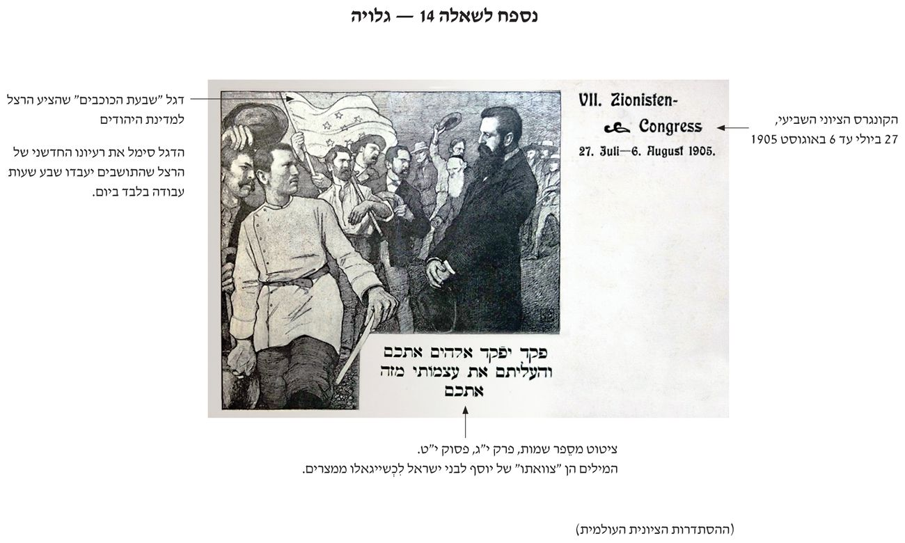</a><figcaption>נספח לשאלה 14 · לחצו על התמונה כדי להגדיל</figcaption></figure>
<div class="bh-sub"><p class="bh-subq" id="lbl-h29q-21s-14-1">הצג את בקשתו של הרצל על פי הפסוק המובא בגלויה.</p>
<textarea class="answer" data-id="h29q-21s-14-1" aria-labelledby="lbl-h29q-21s-14-1" rows="3" placeholder="כתבו כאן את התשובה שלכם..."></textarea></div>
<div class="bh-sub"><p class="bh-subq" id="lbl-h29q-21s-14-2">ציין שלושה ממרכיבי הלאומיות האתנית־היסטורית.</p>
<textarea class="answer" data-id="h29q-21s-14-2" aria-labelledby="lbl-h29q-21s-14-2" rows="3" placeholder="כתבו כאן את התשובה שלכם..."></textarea></div>
<div class="bh-sub"><p class="bh-subq" id="lbl-h29q-21s-14-3">הסבר כיצד שניים מן המרכיבים שציינת באים לידי ביטוי בפסוק שבגלויה.</p>
<textarea class="answer" data-id="h29q-21s-14-3" aria-labelledby="lbl-h29q-21s-14-3" rows="3" placeholder="כתבו כאן את התשובה שלכם..."></textarea></div>
<p class="bh-ctx"><span class="bh-letter">ב</span> בגלויה שבנספח אפשר לראות השפעות של רעיונות הנאורות.</p>
<div class="bh-sub"><p class="bh-subq" id="lbl-h29q-21s-14-4">הסבר באמצעות רכיב אחד מן הגלויה כיצד אחד מרעיונות הנאורות בא לידי ביטוי בה.</p>
<textarea class="answer" data-id="h29q-21s-14-4" aria-labelledby="lbl-h29q-21s-14-4" rows="3" placeholder="כתבו כאן את התשובה שלכם..."></textarea></div>
<div class="bh-qkey" data-qkey="h29-21s-14" hidden></div>
</article>
<article class="bh-q" id="h29-21w-2">
<div class="bh-q-head"><span class="bh-exam">📅 בגרות חורף תשפ&quot;א</span><span class="bh-qn">שאלה 2 בשאלון</span></div>
<div class="bh-sub"><p class="bh-subq" id="lbl-h29q-21w-2-1">הצג אחד מרעיונות הגאולה של מבשרי הציונות — הרבנים קלישר ואלקלעי.</p>
<textarea class="answer" data-id="h29q-21w-2-1" aria-labelledby="lbl-h29q-21w-2-1" rows="3" placeholder="כתבו כאן את התשובה שלכם..."></textarea></div>
<div class="bh-sub"><p class="bh-subq" id="lbl-h29q-21w-2-2">הצג את החידוש שברעיון זה לעומת תפיסות קודמות בנוגע לגאולה.</p>
<textarea class="answer" data-id="h29q-21w-2-2" aria-labelledby="lbl-h29q-21w-2-2" rows="3" placeholder="כתבו כאן את התשובה שלכם..."></textarea></div>
<div class="bh-sub"><p class="bh-subq" id="lbl-h29q-21w-2-3">הצג אחת מן ההחלטות שהתקבלו בוועידת קטוביץ (1884), שיש בה ביטוי לחידוש שהצגת.</p>
<textarea class="answer" data-id="h29q-21w-2-3" aria-labelledby="lbl-h29q-21w-2-3" rows="3" placeholder="כתבו כאן את התשובה שלכם..."></textarea></div>
<div class="bh-qkey" data-qkey="h29-21w-2" hidden></div>
</article>
<article class="bh-q" id="h29-21w-3">
<div class="bh-q-head"><span class="bh-exam">📅 בגרות חורף תשפ&quot;א</span><span class="bh-qn">שאלה 3 בשאלון</span></div>
<p class="bh-ctx">תנועת המזרח&quot;י בהנהגתו של הרב ריינס הוקמה ב־1902 כדי לעזור ליהודים דתיים להתמודד עם קשיים, על רקע פעילותם בתנועה הציונית.</p>
<div class="bh-sub"><p class="bh-subq" id="lbl-h29q-21w-3-1">הצג שני קשיים שיהודים דתיים בתנועה הציונית התמודדו עימם בתקופתו של הרצל.</p>
<textarea class="answer" data-id="h29q-21w-3-1" aria-labelledby="lbl-h29q-21w-3-1" rows="3" placeholder="כתבו כאן את התשובה שלכם..."></textarea></div>
<div class="bh-sub"><p class="bh-subq" id="lbl-h29q-21w-3-2">הצג רעיון אחד של הרב ריינס בנוגע לציונות.</p>
<textarea class="answer" data-id="h29q-21w-3-2" aria-labelledby="lbl-h29q-21w-3-2" rows="3" placeholder="כתבו כאן את התשובה שלכם..."></textarea></div>
<div class="bh-sub"><p class="bh-subq" id="lbl-h29q-21w-3-3">הסבר כיצד רעיון זה סייע ליהודים דתיים להתמודד עם אחד מן הקשיים שהצגת.</p>
<textarea class="answer" data-id="h29q-21w-3-3" aria-labelledby="lbl-h29q-21w-3-3" rows="3" placeholder="כתבו כאן את התשובה שלכם..."></textarea></div>
<div class="bh-qkey" data-qkey="h29-21w-3" hidden></div>
</article>
<article class="bh-q" id="h29-20s-3">
<div class="bh-q-head"><span class="bh-exam">📅 בגרות קיץ תש&quot;ף</span><span class="bh-qn">שאלה 3 בשאלון</span></div>
<p class="bh-ctx">לפניך מובאה (ציטוט) ממכתב שכתב בנימין זאב הרצל.</p>
<blockquote class="bh-quote">&quot;כי יסוד מוסד [עיקרון חשוב] הוא אצלנו לבלי עשות שום דבר בהסתר ובהיחבא [...] כל מעשינו וכל דברינו בלי שום יוצא מן הכלל יהיו לעיני השמש&quot;.</blockquote>
<p class="bh-cite">(מ&#x27; פרידמן, הסנה בוער ואוכל – המסע הציוני של בנימין זאב הרצל, הוצאת ההסתדרות הציונית העולמית, 2015, עמ&#x27; 87)</p>
<div class="bh-sub"><p class="bh-subq" id="lbl-h29q-20s-3-1">ציין מהו העיקרון שבא לידי ביטוי במובאה.</p>
<textarea class="answer" data-id="h29q-20s-3-1" aria-labelledby="lbl-h29q-20s-3-1" rows="3" placeholder="כתבו כאן את התשובה שלכם..."></textarea></div>
<div class="bh-sub"><p class="bh-subq" id="lbl-h29q-20s-3-2">הסבר כיצד עיקרון זה בא לידי ביטוי באחת מן הפעולות של הרצל.</p>
<textarea class="answer" data-id="h29q-20s-3-2" aria-labelledby="lbl-h29q-20s-3-2" rows="3" placeholder="כתבו כאן את התשובה שלכם..."></textarea></div>
<div class="bh-qkey" data-qkey="h29-20s-3" hidden></div>
</article>
<article class="bh-q" id="h29-19s-5">
<div class="bh-q-head"><span class="bh-exam">📅 בגרות קיץ תשע&quot;ט</span><span class="bh-qn">שאלה 5 בשאלון</span></div>
<div class="bh-sub"><p class="bh-subq" id="lbl-h29q-19s-5-1">הצג את שתי העמדות במחלוקת בין תומכי הציונות המדינית לבין תומכי הציונות המעשית בנוגע לדרך שבה יש לפעול כדי להקים מדינה יהודית בארץ־ישראל.</p>
<textarea class="answer" data-id="h29q-19s-5-1" aria-labelledby="lbl-h29q-19s-5-1" rows="3" placeholder="כתבו כאן את התשובה שלכם..."></textarea></div>
<div class="bh-sub"><p class="bh-subq" id="lbl-h29q-19s-5-2">הסבר מדוע אישור כתב המנדט הבריטי (1922) היה אבן דרך חשובה (שלב חשוב) בהתפתחות הלאומיות היהודית או בהתפתחות הזהות הלאומית של ערביי ארץ־ישראל.</p>
<textarea class="answer" data-id="h29q-19s-5-2" aria-labelledby="lbl-h29q-19s-5-2" rows="3" placeholder="כתבו כאן את התשובה שלכם..."></textarea></div>
<div class="bh-qkey" data-qkey="h29-19s-5" hidden></div>
</article>
<article class="bh-q" id="h29-19w-2">
<div class="bh-q-head"><span class="bh-exam">📅 בגרות חורף תשע&quot;ט</span><span class="bh-qn">שאלה 2 בשאלון</span></div>
<div class="bh-sub"><p class="bh-subq" id="lbl-h29q-19w-2-1">הצג שתיים מן ההחלטות שהתקבלו בוועידת קטוביץ (1884).</p>
<textarea class="answer" data-id="h29q-19w-2-1" aria-labelledby="lbl-h29q-19w-2-1" rows="3" placeholder="כתבו כאן את התשובה שלכם..."></textarea></div>
<div class="bh-sub"><p class="bh-subq" id="lbl-h29q-19w-2-2">הצג כישלון אחד של תנועת &quot;חיבת ציון&quot;.</p>
<textarea class="answer" data-id="h29q-19w-2-2" aria-labelledby="lbl-h29q-19w-2-2" rows="3" placeholder="כתבו כאן את התשובה שלכם..."></textarea></div>
<div class="bh-sub"><p class="bh-subq" id="lbl-h29q-19w-2-3">הסבר מדוע למרות כישלון זה, תנועת &quot;חיבת ציון&quot; נחשבת לאבן דרך חשובה (שלב חשוב) בהתפתחות הלאומיות היהודית.</p>
<textarea class="answer" data-id="h29q-19w-2-3" aria-labelledby="lbl-h29q-19w-2-3" rows="3" placeholder="כתבו כאן את התשובה שלכם..."></textarea></div>
<div class="bh-qkey" data-qkey="h29-19w-2" hidden></div>
</article>
<article class="bh-q" id="h29-18s-3">
<div class="bh-q-head"><span class="bh-exam">📅 בגרות קיץ תשע&quot;ח</span><span class="bh-qn">שאלה 3 בשאלון</span></div>
<p class="bh-ctx">תוכנית בזל היא המצע של התנועה הציונית, ומבטאת את חזונו של בנימין זאב הרצל.</p>
<div class="bh-sub"><p class="bh-subq" id="lbl-h29q-18s-3-1">בתוכנית כתוב: &quot;הציונות שואפת להקים בית מולדת לעם ישראל בארץ־ישראל, המובטח לפי משפט הכלל&quot;.</p>
<textarea class="answer" data-id="h29q-18s-3-1" aria-labelledby="lbl-h29q-18s-3-1" rows="3" placeholder="כתבו כאן את התשובה שלכם..."></textarea></div>
<div class="bh-sub"><p class="bh-subq" id="lbl-h29q-18s-3-2">הצג שתי פעולות של התנועה הציונית עד כינון המנדט הבריטי שנועדו לקדם תוכנית זו.</p>
<textarea class="answer" data-id="h29q-18s-3-2" aria-labelledby="lbl-h29q-18s-3-2" rows="3" placeholder="כתבו כאן את התשובה שלכם..."></textarea></div>
<div class="bh-sub"><p class="bh-subq" id="lbl-h29q-18s-3-3">הסבר כיצד הצהרת בלפור, שניתנה לראשי התנועה הציונית בשנת 1917, הגשימה את החזון של הרצל.</p>
<textarea class="answer" data-id="h29q-18s-3-3" aria-labelledby="lbl-h29q-18s-3-3" rows="3" placeholder="כתבו כאן את התשובה שלכם..."></textarea></div>
<div class="bh-qkey" data-qkey="h29-18s-3" hidden></div>
</article>
<article class="bh-q" id="h29-18s-4">
<div class="bh-q-head"><span class="bh-exam">📅 בגרות קיץ תשע&quot;ח</span><span class="bh-qn">שאלה 4 בשאלון</span></div>
<p class="bh-ctx">בציבור הדתי היו שתמכו בתנועה הציונית והיו שהתנגדו לה.</p>
<div class="bh-sub"><p class="bh-subq" id="lbl-h29q-18s-4-1">ציין שתי קבוצות דתיות שאחת מהן תמכה בתנועה הציונית והאחרת התנגדה לתנועה הציונית.</p>
<textarea class="answer" data-id="h29q-18s-4-1" aria-labelledby="lbl-h29q-18s-4-1" rows="3" placeholder="כתבו כאן את התשובה שלכם..."></textarea></div>
<div class="bh-sub"><p class="bh-subq" id="lbl-h29q-18s-4-2">הצג שני נימוקים לעמדה של כל אחת מן הקבוצות שציינת (סך הכול — ארבעה נימוקים).</p>
<textarea class="answer" data-id="h29q-18s-4-2" aria-labelledby="lbl-h29q-18s-4-2" rows="3" placeholder="כתבו כאן את התשובה שלכם..."></textarea></div>
<div class="bh-qkey" data-qkey="h29-18s-4" hidden></div>
</article>
<article class="bh-q" id="h29-17s-3">
<div class="bh-q-head"><span class="bh-exam">📅 בגרות קיץ תשע&quot;ז</span><span class="bh-qn">שאלה 3 בשאלון</span></div>
<div class="bh-sub"><p class="bh-subq" id="lbl-h29q-17s-3-1">הסבר מחלוקת שהייתה בין הציונות המדינית לבין הציונות המעשית.</p>
<textarea class="answer" data-id="h29q-17s-3-1" aria-labelledby="lbl-h29q-17s-3-1" rows="3" placeholder="כתבו כאן את התשובה שלכם..."></textarea></div>
<div class="bh-sub"><p class="bh-subq" id="lbl-h29q-17s-3-2">הסבר את הסיבה להקמת תנועת המזרחי.</p>
<textarea class="answer" data-id="h29q-17s-3-2" aria-labelledby="lbl-h29q-17s-3-2" rows="3" placeholder="כתבו כאן את התשובה שלכם..."></textarea></div>
<div class="bh-qkey" data-qkey="h29-17s-3" hidden></div>
</article>
</section>
<section class="bh-panel" role="tabpanel" id="h-yishuv" aria-labelledby="tab-yishuv" hidden>
<h2 class="bh-panel-title"><span aria-hidden="true">🏡</span> היישוב והמנדט הבריטי <small>35 שאלות</small></h2>
<article class="bh-q" id="h29-26w-3">
<div class="bh-q-head"><span class="bh-exam">📅 בגרות חורף תשפ&quot;ו</span><span class="bh-qn">שאלה 3 בשאלון</span></div>
<h3 class="bh-qtitle">היישוב החדש ומסע הרבנים</h3>
<div class="bh-sub"><p class="bh-subq" id="lbl-h29q-26w-3-1">הציגו רעיון אחד שבו האמינו הפועלים בני העלייה השנייה, וציינו פעולה אחת שנועדה לממש רעיון זה.</p>
<textarea class="answer" data-id="h29q-26w-3-1" aria-labelledby="lbl-h29q-26w-3-1" rows="3" placeholder="כתבו כאן את התשובה שלכם..."></textarea></div>
<div class="bh-sub"><p class="bh-subq" id="lbl-h29q-26w-3-2">הציגו את שתי המטרות של &quot;מסע המושבות&quot; שיזם הרב קוק בחורף תרע&quot;ד (1913).</p>
<textarea class="answer" data-id="h29q-26w-3-2" aria-labelledby="lbl-h29q-26w-3-2" rows="3" placeholder="כתבו כאן את התשובה שלכם..."></textarea></div>
<div class="bh-sub"><p class="bh-subq" id="lbl-h29q-26w-3-3">לדעתכם, האם אפשר לראות במסע המושבות הצלחה? נמקו את תשובתכם על פי עובדה היסטורית.</p>
<textarea class="answer" data-id="h29q-26w-3-3" aria-labelledby="lbl-h29q-26w-3-3" rows="3" placeholder="כתבו כאן את התשובה שלכם..."></textarea></div>
<div class="bh-qkey" data-qkey="h29-26w-3" hidden></div>
</article>
<article class="bh-q" id="h29-26w-4">
<div class="bh-q-head"><span class="bh-exam">📅 בגרות חורף תשפ&quot;ו</span><span class="bh-qn">שאלה 4 בשאלון</span></div>
<h3 class="bh-qtitle">תפיסת הזהות של ערביי ארץ־ישראל</h3>
<div class="bh-sub"><p class="bh-subq" id="lbl-h29q-26w-4-1">הציגו את שני צידי הדילמה של ערביי ארץ־ישראל בנוגע לזהותם עם תום מלחמת העולם הראשונה.</p>
<textarea class="answer" data-id="h29q-26w-4-1" aria-labelledby="lbl-h29q-26w-4-1" rows="3" placeholder="כתבו כאן את התשובה שלכם..."></textarea></div>
<div class="bh-sub"><p class="bh-subq" id="lbl-h29q-26w-4-2">הסבירו מדוע הדילמה שהצגתם התעוררה אצל ערביי ארץ־ישראל דווקא לאחר מלחמת העולם הראשונה.</p>
<textarea class="answer" data-id="h29q-26w-4-2" aria-labelledby="lbl-h29q-26w-4-2" rows="3" placeholder="כתבו כאן את התשובה שלכם..."></textarea></div>
<div class="bh-sub"><p class="bh-subq" id="lbl-h29q-26w-4-3">ציינו איזה צד בדילמה אפיין את ערביי ארץ־ישראל גם לפני מלחמת העולם הראשונה.</p>
<textarea class="answer" data-id="h29q-26w-4-3" aria-labelledby="lbl-h29q-26w-4-3" rows="3" placeholder="כתבו כאן את התשובה שלכם..."></textarea></div>
<div class="bh-qkey" data-qkey="h29-26w-4" hidden></div>
</article>
<article class="bh-q" id="h29-25s-3">
<div class="bh-q-head"><span class="bh-exam">📅 בגרות קיץ תשפ&quot;ה</span><span class="bh-qn">שאלה 3 בשאלון</span></div>
<h3 class="bh-qtitle">הצהרת בלפור</h3>
<div class="bh-sub"><p class="bh-subq" id="lbl-h29q-25s-3-1">הציגו מהי &quot;הצהרת בלפור&quot; (1917).</p>
<textarea class="answer" data-id="h29q-25s-3-1" aria-labelledby="lbl-h29q-25s-3-1" rows="3" placeholder="כתבו כאן את התשובה שלכם..."></textarea></div>
<div class="bh-sub"><p class="bh-subq" id="lbl-h29q-25s-3-2">הסבירו מדוע היו שראו ב&quot;הצהרת בלפור&quot; מימוש של &quot;הציונות המדינית&quot; של הרצל.</p>
<textarea class="answer" data-id="h29q-25s-3-2" aria-labelledby="lbl-h29q-25s-3-2" rows="3" placeholder="כתבו כאן את התשובה שלכם..."></textarea></div>
<div class="bh-sub"><p class="bh-subq" id="lbl-h29q-25s-3-3">על אף חשיבותה של &quot;הצהרת בלפור&quot;, היו בה גם ליקויים (בעיות). הציגו שניים מן הליקויים.</p>
<textarea class="answer" data-id="h29q-25s-3-3" aria-labelledby="lbl-h29q-25s-3-3" rows="3" placeholder="כתבו כאן את התשובה שלכם..."></textarea></div>
<div class="bh-qkey" data-qkey="h29-25s-3" hidden></div>
</article>
<article class="bh-q" id="h29-25s-4">
<div class="bh-q-head"><span class="bh-exam">📅 בגרות קיץ תשפ&quot;ה</span><span class="bh-qn">שאלה 4 בשאלון</span></div>
<h3 class="bh-qtitle">ההתיישבות הדתית בתקופת המנדט הבריטי</h3>
<p class="bh-ctx">במסגרת תוכנית פר&quot;ח צפיתם באלבום תמונות שבו באים לידי ביטוי ארבעת השלבים בהקמת היישובים הדתיים בתקופת המנדט הבריטי.</p>
<div class="bh-sub"><p class="bh-subq" id="lbl-h29q-25s-4-1">בחרו בשניים מן השלבים, וציינו אותם.</p>
<textarea class="answer" data-id="h29q-25s-4-1" aria-labelledby="lbl-h29q-25s-4-1" rows="3" placeholder="כתבו כאן את התשובה שלכם..."></textarea></div>
<div class="bh-sub"><p class="bh-subq" id="lbl-h29q-25s-4-2">הסבירו כיצד כל אחד מן השלבים שציינתם בא לידי ביטוי בתמונות האלבום שבהן צפיתם בכיתה. בתשובתכם התבססו על שתי תמונות שונות מן האלבום.</p>
<textarea class="answer" data-id="h29q-25s-4-2" aria-labelledby="lbl-h29q-25s-4-2" rows="3" placeholder="כתבו כאן את התשובה שלכם..."></textarea></div>
<div class="bh-sub"><p class="bh-subq" id="lbl-h29q-25s-4-3">הסבירו מדוע בחרו הפועלים הדתיים לקרוא לתנועה החדשה שהקימו &quot;הפועל המזרח&quot;י&quot;.</p>
<textarea class="answer" data-id="h29q-25s-4-3" aria-labelledby="lbl-h29q-25s-4-3" rows="3" placeholder="כתבו כאן את התשובה שלכם..."></textarea></div>
<div class="bh-qkey" data-qkey="h29-25s-4" hidden></div>
</article>
<article class="bh-q" id="h29-25s-5">
<div class="bh-q-head"><span class="bh-exam">📅 בגרות קיץ תשפ&quot;ה</span><span class="bh-qn">שאלה 5 בשאלון</span></div>
<h3 class="bh-qtitle">הצעת החלוקה של ועדת פיל והספר הלבן השלישי</h3>
<div class="bh-sub"><p class="bh-subq" id="lbl-h29q-25s-5-1">הציגו את הצעת החלוקה של ועדת פיל (1937).</p>
<textarea class="answer" data-id="h29q-25s-5-1" aria-labelledby="lbl-h29q-25s-5-1" rows="3" placeholder="כתבו כאן את התשובה שלכם..."></textarea></div>
<p class="bh-ctx">בקרב חברי היישוב היהודי היו שתמכו בהצעה זו, והיו שהתנגדו לה.</p>
<div class="bh-sub"><p class="bh-subq" id="lbl-h29q-25s-5-2">הציגו טענה אחת של התומכים בהצעה זו, וטענה אחת של המתנגדים לה.</p>
<textarea class="answer" data-id="h29q-25s-5-2" aria-labelledby="lbl-h29q-25s-5-2" rows="3" placeholder="כתבו כאן את התשובה שלכם..."></textarea></div>
<div class="bh-sub"><p class="bh-subq" id="lbl-h29q-25s-5-3">הספר הלבן השלישי כונה &quot;ספר המעל&quot; (הבגידה). על פי מה שלמדתם על הספר הלבן השלישי, הסבירו את הסיבה לכינוי זה.</p>
<textarea class="answer" data-id="h29q-25s-5-3" aria-labelledby="lbl-h29q-25s-5-3" rows="3" placeholder="כתבו כאן את התשובה שלכם..."></textarea></div>
<div class="bh-qkey" data-qkey="h29-25s-5" hidden></div>
</article>
<article class="bh-q" id="h29-25w-4">
<div class="bh-q-head"><span class="bh-exam">📅 בגרות חורף תשפ&quot;ה</span><span class="bh-qn">שאלה 4 בשאלון</span></div>
<h3 class="bh-qtitle">הצהרת בלפור</h3>
<div class="bh-sub"><p class="bh-subq" id="lbl-h29q-25w-4-1">בתקופת מלחמת העולם הראשונה שמרה התנועה הציונית על ניטרליות. הסבירו מדוע על אף זאת היה חשוב למנהיגים מסוימים בתנועה הציונית לסייע לבריטניה.</p>
<textarea class="answer" data-id="h29q-25w-4-1" aria-labelledby="lbl-h29q-25w-4-1" rows="3" placeholder="כתבו כאן את התשובה שלכם..."></textarea></div>
<div class="bh-sub"><p class="bh-subq" id="lbl-h29q-25w-4-2">הציגו פעולה אחת שעשו מנהיגים ציוניים כדי לסייע לבריטניה בתקופת מלחמת העולם הראשונה.</p>
<textarea class="answer" data-id="h29q-25w-4-2" aria-labelledby="lbl-h29q-25w-4-2" rows="3" placeholder="כתבו כאן את התשובה שלכם..."></textarea></div>
<div class="bh-sub"><p class="bh-subq" id="lbl-h29q-25w-4-3">הסבירו מדוע פרסמה בריטניה את הצהרת בלפור.</p>
<textarea class="answer" data-id="h29q-25w-4-3" aria-labelledby="lbl-h29q-25w-4-3" rows="3" placeholder="כתבו כאן את התשובה שלכם..."></textarea></div>
<div class="bh-sub"><p class="bh-subq" id="lbl-h29q-25w-4-4">לדעתכם, האם מתן הצהרת בלפור היה אירוע מכונן (חשוב) בתולדות העם היהודי? נמקו את תשובתכם. בססו את הנימוק על עובדה היסטורית.</p>
<textarea class="answer" data-id="h29q-25w-4-4" aria-labelledby="lbl-h29q-25w-4-4" rows="3" placeholder="כתבו כאן את התשובה שלכם..."></textarea></div>
<div class="bh-qkey" data-qkey="h29-25w-4" hidden></div>
</article>
<article class="bh-q" id="h29-25w-5">
<div class="bh-q-head"><span class="bh-exam">📅 בגרות חורף תשפ&quot;ה</span><span class="bh-qn">שאלה 5 בשאלון</span></div>
<h3 class="bh-qtitle">ארגון &quot;ההגנה&quot;</h3>
<div class="bh-sub"><p class="bh-subq" id="lbl-h29q-25w-5-1">הציגו את המטרה של הקמת ארגון &quot;ההגנה&quot; (1920).</p>
<textarea class="answer" data-id="h29q-25w-5-1" aria-labelledby="lbl-h29q-25w-5-1" rows="3" placeholder="כתבו כאן את התשובה שלכם..."></textarea></div>
<div class="bh-sub"><p class="bh-subq" id="lbl-h29q-25w-5-2">ציינו מי יזם את הקמת &quot;פלוגות הלילה המיוחדות&quot; במהלך מאורעות תרצ&quot;ו–תרצ&quot;ט (1936–1939).</p>
<textarea class="answer" data-id="h29q-25w-5-2" aria-labelledby="lbl-h29q-25w-5-2" rows="3" placeholder="כתבו כאן את התשובה שלכם..."></textarea></div>
<div class="bh-sub"><p class="bh-subq" id="lbl-h29q-25w-5-3">הסבירו שני שינויים שחלו בארגון &quot;ההגנה&quot; בעקבות הקמתן של &quot;פלוגות הלילה המיוחדות&quot;.</p>
<textarea class="answer" data-id="h29q-25w-5-3" aria-labelledby="lbl-h29q-25w-5-3" rows="3" placeholder="כתבו כאן את התשובה שלכם..."></textarea></div>
<div class="bh-qkey" data-qkey="h29-25w-5" hidden></div>
</article>
<article class="bh-q" id="h29-24s-4">
<div class="bh-q-head"><span class="bh-exam">📅 בגרות קיץ תשפ&quot;ד</span><span class="bh-qn">שאלה 4 בשאלון</span></div>
<h3 class="bh-qtitle">היישוב החדש</h3>
<div class="bh-sub"><p class="bh-subq" id="lbl-h29q-24s-4-1">הסבירו את הבעיה שהתעוררה במושבות לקראת שנת השמיטה תרמ&quot;ט. בתשובתכם ציינו את עמדתם של רוב העולים במושבות העלייה הראשונה כלפי קיום מצוות.</p>
<textarea class="answer" data-id="h29q-24s-4-1" aria-labelledby="lbl-h29q-24s-4-1" rows="3" placeholder="כתבו כאן את התשובה שלכם..."></textarea></div>
<div class="bh-sub"><p class="bh-subq" id="lbl-h29q-24s-4-2">הציגו את “היתר המכירה&quot; שהוצע כדי להתמודד עם בעיה זו.</p>
<textarea class="answer" data-id="h29q-24s-4-2" aria-labelledby="lbl-h29q-24s-4-2" rows="3" placeholder="כתבו כאן את התשובה שלכם..."></textarea></div>
<div class="bh-sub"><p class="bh-subq" id="lbl-h29q-24s-4-3">לדעתכם, האם אפשר לראות ב&quot;היתר המכירה&quot; של תרמ&quot;ט הישג של אנשי המושבות? נמקו את תשובתכם על פי עובדה היסטורית או על פי עולם הערכים שלכם.</p>
<textarea class="answer" data-id="h29q-24s-4-3" aria-labelledby="lbl-h29q-24s-4-3" rows="3" placeholder="כתבו כאן את התשובה שלכם..."></textarea></div>
<div class="bh-qkey" data-qkey="h29-24s-4" hidden></div>
</article>
<article class="bh-q" id="h29-24s-5">
<div class="bh-q-head"><span class="bh-exam">📅 בגרות קיץ תשפ&quot;ד</span><span class="bh-qn">שאלה 5 בשאלון</span></div>
<h3 class="bh-qtitle">מאורעות תרצ&quot;ו–תרצ&quot;ט ויהודי ארצות האסלאם</h3>
<p class="bh-ctx">בתקופת מאורעות תרצ&quot;ו–תרצ&quot;ט (1936–1939) התעוררה מחלוקת בין ההגנה ובין האצ&quot;ל בנוגע ליחס כלפי הערבים בארץ־ישראל.</p>
<div class="bh-sub"><p class="bh-subq" id="lbl-h29q-24s-5-1">ציינו והסבירו את עמדת ההגנה ואת עמדת האצ&quot;ל במחלוקת זו (סך הכול – שני הסברים).</p>
<textarea class="answer" data-id="h29q-24s-5-1" aria-labelledby="lbl-h29q-24s-5-1" rows="3" placeholder="כתבו כאן את התשובה שלכם..."></textarea></div>
<p class="bh-ctx">מצבם של היהודים בארצות האסלאם החמיר בעקבות הסכסוך הערבי–יהודי בארץ־ישראל.</p>
<div class="bh-sub"><p class="bh-subq" id="lbl-h29q-24s-5-2">הסבירו כיצד השפיע המופתי חאג&#x27; אמין אל־חוסייני על המאורעות בארץ־ישראל ועל מצב היהודים בארצות האסלאם (סך הכול – שני הסברים).</p>
<textarea class="answer" data-id="h29q-24s-5-2" aria-labelledby="lbl-h29q-24s-5-2" rows="3" placeholder="כתבו כאן את התשובה שלכם..."></textarea></div>
<div class="bh-qkey" data-qkey="h29-24s-5" hidden></div>
</article>
<article class="bh-q" id="h29-24w-5">
<div class="bh-q-head"><span class="bh-exam">📅 בגרות חורף תשפ&quot;ד</span><span class="bh-qn">שאלה 5 בשאלון</span></div>
<h3 class="bh-qtitle">הלאומיות של ערביי ארץ־ישראל</h3>
<p class="bh-ctx">במהלך השנים שבין שתי מלחמות העולם החלה להתגבש זהות לאומית מקומית בקרב ערביי ארץ־ישראל.</p>
<div class="bh-sub"><p class="bh-subq" id="lbl-h29q-24w-5-1">הסבירו כיצד אחת ההחלטות בוועידת סן רמו (1920) הובילה להתגבשות של זהות לאומית זו.</p>
<textarea class="answer" data-id="h29q-24w-5-1" aria-labelledby="lbl-h29q-24w-5-1" rows="3" placeholder="כתבו כאן את התשובה שלכם..."></textarea></div>
<div class="bh-sub"><p class="bh-subq" id="lbl-h29q-24w-5-2">ציינו שני מאפיינים של רוב ערביי ארץ־ישראל שהיו בסיס לגיבוש הלאומיות שלהם.</p>
<textarea class="answer" data-id="h29q-24w-5-2" aria-labelledby="lbl-h29q-24w-5-2" rows="3" placeholder="כתבו כאן את התשובה שלכם..."></textarea></div>
<div class="bh-sub"><p class="bh-subq" id="lbl-h29q-24w-5-3">הציגו גורם אחד להקצנה הלאומנית של ערביי ארץ־ישראל במהלך שנות השלושים של המאה ה־20, שהובילה למאורעות תרצ&quot;ו–תרצ&quot;ט.</p>
<textarea class="answer" data-id="h29q-24w-5-3" aria-labelledby="lbl-h29q-24w-5-3" rows="3" placeholder="כתבו כאן את התשובה שלכם..."></textarea></div>
<p class="bh-ctx"></p>
<div class="bh-qkey" data-qkey="h29-24w-5" hidden></div>
</article>
<article class="bh-q" id="h29-23w-3">
<div class="bh-q-head"><span class="bh-exam">📅 בגרות חורף תשפ&quot;ג</span><span class="bh-qn">שאלה 3 בשאלון</span></div>
<h3 class="bh-qtitle">היישוב החדש</h3>
<div class="bh-sub"><p class="bh-subq" id="lbl-h29q-23w-3-1">הציגו תרומה אחת של עולי העלייה הראשונה להתפתחות היישוב בארץ.</p>
<textarea class="answer" data-id="h29q-23w-3-1" aria-labelledby="lbl-h29q-23w-3-1" rows="3" placeholder="כתבו כאן את התשובה שלכם..."></textarea></div>
<div class="bh-sub"><p class="bh-subq" id="lbl-h29q-23w-3-2">הציגו שתי תרומות של עולי העלייה השנייה להתפתחות היישוב.</p>
<textarea class="answer" data-id="h29q-23w-3-2" aria-labelledby="lbl-h29q-23w-3-2" rows="3" placeholder="כתבו כאן את התשובה שלכם..."></textarea></div>
<div class="bh-sub"><p class="bh-subq" id="lbl-h29q-23w-3-3">הסבירו מדוע נוצר מתח בין אנשי היישוב הישן לבין אנשי היישוב החדש מן העלייה הראשונה או מן העלייה השנייה.</p>
<textarea class="answer" data-id="h29q-23w-3-3" aria-labelledby="lbl-h29q-23w-3-3" rows="3" placeholder="כתבו כאן את התשובה שלכם..."></textarea></div>
<div class="bh-qkey" data-qkey="h29-23w-3" hidden></div>
</article>
<article class="bh-q" id="h29-23w-5">
<div class="bh-q-head"><span class="bh-exam">📅 בגרות חורף תשפ&quot;ג</span><span class="bh-qn">שאלה 5 בשאלון</span></div>
<h3 class="bh-qtitle">המדיניות של בריטניה בארץ־ישראל בתקופת המנדט</h3>
<div class="bh-sub"><p class="bh-subq" id="lbl-h29q-23w-5-1">הציגו את המדיניות של בריטניה בנוגע לעדות הלא יהודיות בארץ־ישראל, כפי שהיא באה לידי ביטוי בכתב המנדט.</p>
<textarea class="answer" data-id="h29q-23w-5-1" aria-labelledby="lbl-h29q-23w-5-1" rows="3" placeholder="כתבו כאן את התשובה שלכם..."></textarea></div>
<div class="bh-sub"><p class="bh-subq" id="lbl-h29q-23w-5-2">הציגו את השינוי שחל במדיניות של בריטניה בנוגע לערביי ארץ־ישראל, כפי שהוא בא לידי ביטוי בהצעת החלוקה של ועדת פיל.</p>
<textarea class="answer" data-id="h29q-23w-5-2" aria-labelledby="lbl-h29q-23w-5-2" rows="3" placeholder="כתבו כאן את התשובה שלכם..."></textarea></div>
<div class="bh-sub"><p class="bh-subq" id="lbl-h29q-23w-5-3">הסבירו גורם אחד שהוביל לשינוי המדיניות של בריטניה.</p>
<textarea class="answer" data-id="h29q-23w-5-3" aria-labelledby="lbl-h29q-23w-5-3" rows="3" placeholder="כתבו כאן את התשובה שלכם..."></textarea></div>
<div class="bh-qkey" data-qkey="h29-23w-5" hidden></div>
</article>
<article class="bh-q" id="h29-21s-4">
<div class="bh-q-head"><span class="bh-exam">📅 בגרות קיץ תשפ&quot;א</span><span class="bh-qn">שאלה 4 בשאלון</span></div>
<h3 class="bh-qtitle">הזהות הלאומית של ערביי ישראל</h3>
<p class="bh-ctx">ארץ־ישראל לא הייתה מרכיב בזהות של רוב ערביי הארץ עד סוף מלחמת העולם הראשונה.</p>
<div class="bh-sub"><p class="bh-subq" id="lbl-h29q-21s-4-1">הסבר שתי סיבות לכך.</p>
<textarea class="answer" data-id="h29q-21s-4-1" aria-labelledby="lbl-h29q-21s-4-1" rows="3" placeholder="כתבו כאן את התשובה שלכם..."></textarea></div>
<div class="bh-sub"><p class="bh-subq" id="lbl-h29q-21s-4-2">הסבר מדוע במהלך המאה ה־19 חל שינוי במעמדה של ירושלים.</p>
<textarea class="answer" data-id="h29q-21s-4-2" aria-labelledby="lbl-h29q-21s-4-2" rows="3" placeholder="כתבו כאן את התשובה שלכם..."></textarea></div>
<div class="bh-sub"><p class="bh-subq" id="lbl-h29q-21s-4-3">הצג השפעה אחת של השינוי במעמד ירושלים על ערביי ארץ־ישראל בסוף התקופה העות&#x27;מאנית או במהלך תקופת המנדט.</p>
<textarea class="answer" data-id="h29q-21s-4-3" aria-labelledby="lbl-h29q-21s-4-3" rows="3" placeholder="כתבו כאן את התשובה שלכם..."></textarea></div>
<div class="bh-qkey" data-qkey="h29-21s-4" hidden></div>
</article>
<article class="bh-q" id="h29-21s-5">
<div class="bh-q-head"><span class="bh-exam">📅 בגרות קיץ תשפ&quot;א</span><span class="bh-qn">שאלה 5 בשאלון</span></div>
<h3 class="bh-qtitle">הצהרת בלפור</h3>
<p class="bh-ctx">&quot;הצהרת בלפור&quot; (1917) התקבלה בהתרגשות רבה בקרב חברי התנועה הציונית ברחבי העולם.</p>
<div class="bh-sub"><p class="bh-subq" id="lbl-h29q-21s-5-1">הסבר את הסיבה לכך.</p>
<textarea class="answer" data-id="h29q-21s-5-1" aria-labelledby="lbl-h29q-21s-5-1" rows="3" placeholder="כתבו כאן את התשובה שלכם..."></textarea></div>
<p class="bh-ctx">כמה ממנהיגי הציונות הציעו לבריטים להשתמש במינוח המעורפל &quot;בית לאומי&quot; בהצהרת בלפור במקום במילה &quot;מדינה&quot;.</p>
<div class="bh-sub"><p class="bh-subq" id="lbl-h29q-21s-5-2">הסבר שתי סיבות לכך.</p>
<textarea class="answer" data-id="h29q-21s-5-2" aria-labelledby="lbl-h29q-21s-5-2" rows="3" placeholder="כתבו כאן את התשובה שלכם..."></textarea></div>
<div class="bh-qkey" data-qkey="h29-21s-5" hidden></div>
</article>
<article class="bh-q" id="h29-21s-15">
<div class="bh-q-head"><span class="bh-exam">📅 בגרות קיץ תשפ&quot;א</span><span class="bh-qn">שאלה 15 בשאלון</span></div>
<h3 class="bh-qtitle">המנדט הבריטי</h3>
<p class="bh-ctx">לפניך טבלה ובה מגוון נתונים הנוגעים לפיתוח של ארץ־ישראל מסוף התקופה העות&#x27;מאנית ועד סוף תקופת המנדט הבריטי (1917-1948).</p>
<figure class="bh-fig"><a href="assets/h29/h29-21s-n15-table.jpg" target="_blank" rel="noopener">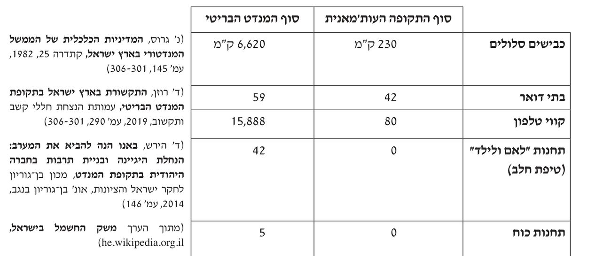</a></figure>
<div class="bh-sub"><p class="bh-subq" id="lbl-h29q-21s-15-1"><span class="bh-letter">א</span> הסבר כיצד שני נתונים מן הטבלה מלמדים כי השלטון הבריטי מימש את אחת ההתחייבויות שמצוינות בכתב המנדט. בתשובתך הצג מהי התחייבות זו.</p>
<textarea class="answer" data-id="h29q-21s-15-1" aria-labelledby="lbl-h29q-21s-15-1" rows="3" placeholder="כתבו כאן את התשובה שלכם..."></textarea></div>
<div class="bh-sub"><p class="bh-subq" id="lbl-h29q-21s-15-2">הצג סעיף אחד מתוך כתב המנדט העוסק בתושבים הלא־יהודים שחיו בארץ.</p>
<textarea class="answer" data-id="h29q-21s-15-2" aria-labelledby="lbl-h29q-21s-15-2" rows="3" placeholder="כתבו כאן את התשובה שלכם..."></textarea></div>
<p class="bh-ctx"><span class="bh-letter">ב</span> יהודים רבים ביישוב התאכזבו מן השלטון הבריטי בשנות השלושים של המאה ה־20.</p>
<div class="bh-sub"><p class="bh-subq" id="lbl-h29q-21s-15-3">על פי מה שלמדת, הסבר סיבה אחת לכך.</p>
<textarea class="answer" data-id="h29q-21s-15-3" aria-labelledby="lbl-h29q-21s-15-3" rows="3" placeholder="כתבו כאן את התשובה שלכם..."></textarea></div>
<div class="bh-sub"><p class="bh-subq" id="lbl-h29q-21s-15-4">הסבר מדוע גם הערבים התאכזבו מן השלטון הבריטי במהלך שנות השלושים.</p>
<textarea class="answer" data-id="h29q-21s-15-4" aria-labelledby="lbl-h29q-21s-15-4" rows="3" placeholder="כתבו כאן את התשובה שלכם..."></textarea></div>
<div class="bh-qkey" data-qkey="h29-21s-15" hidden></div>
</article>
<article class="bh-q" id="h29-21w-4">
<div class="bh-q-head"><span class="bh-exam">📅 בגרות חורף תשפ&quot;א</span><span class="bh-qn">שאלה 4 בשאלון</span></div>
<p class="bh-ctx">העולים בתקופת &quot;היישוב החדש&quot; הביאו לארץ רעיונות שונים ומגוונים.</p>
<div class="bh-sub"><p class="bh-subq" id="lbl-h29q-21w-4-1">בחר בשתיים מבין קבוצות העולים בתקופה זו: אנשי העלייה הראשונה; אנשי העלייה השנייה; עולי תימן.</p>
<textarea class="answer" data-id="h29q-21w-4-1" aria-labelledby="lbl-h29q-21w-4-1" rows="3" placeholder="כתבו כאן את התשובה שלכם..."></textarea></div>
<div class="bh-sub"><p class="bh-subq" id="lbl-h29q-21w-4-2">ציין את הקבוצות שבחרת.</p>
<textarea class="answer" data-id="h29q-21w-4-2" aria-labelledby="lbl-h29q-21w-4-2" rows="3" placeholder="כתבו כאן את התשובה שלכם..."></textarea></div>
<div class="bh-sub"><p class="bh-subq" id="lbl-h29q-21w-4-3">ציין רעיון אחד שבו האמינו העולים בכל אחת מן הקבוצות שבחרת (סך הכול — שני רעיונות שונים).</p>
<textarea class="answer" data-id="h29q-21w-4-3" aria-labelledby="lbl-h29q-21w-4-3" rows="3" placeholder="כתבו כאן את התשובה שלכם..."></textarea></div>
<div class="bh-sub"><p class="bh-subq" id="lbl-h29q-21w-4-4">הסבר באמצעות דוגמה כיצד מימשו העולים אחד מן הרעיונות שציינת.</p>
<textarea class="answer" data-id="h29q-21w-4-4" aria-labelledby="lbl-h29q-21w-4-4" rows="3" placeholder="כתבו כאן את התשובה שלכם..."></textarea></div>
<div class="bh-sub"><p class="bh-subq" id="lbl-h29q-21w-4-5">לו היית חי בתקופת &quot;היישוב החדש&quot;, לאיזו מקבוצות העולים היית רוצה להשתייך? נמק את תשובתך על פי מה שלמדת.</p>
<textarea class="answer" data-id="h29q-21w-4-5" aria-labelledby="lbl-h29q-21w-4-5" rows="3" placeholder="כתבו כאן את התשובה שלכם..."></textarea></div>
<div class="bh-qkey" data-qkey="h29-21w-4" hidden></div>
</article>
<article class="bh-q" id="h29-21w-5">
<div class="bh-q-head"><span class="bh-exam">📅 בגרות חורף תשפ&quot;א</span><span class="bh-qn">שאלה 5 בשאלון</span></div>
<div class="bh-sub"><p class="bh-subq" id="lbl-h29q-21w-5-1">הצג שני גורמים שהביאו לפרוץ מאורעות תרצ&quot;ו-תרצ&quot;ט (1936-1939).</p>
<textarea class="answer" data-id="h29q-21w-5-1" aria-labelledby="lbl-h29q-21w-5-1" rows="3" placeholder="כתבו כאן את התשובה שלכם..."></textarea></div>
<div class="bh-sub"><p class="bh-subq" id="lbl-h29q-21w-5-2">הסבר כיצד המאורעות השפיעו על התפתחותו של כוח המגן של היישוב היהודי בארץ־ישראל. בתשובתך התייחס להשפעה אחת שקשורה להחלטת הבריטים, ולהשפעה אחרת שקשורה להחלטת היהודים (סך הכול — שתי השפעות).</p>
<textarea class="answer" data-id="h29q-21w-5-2" aria-labelledby="lbl-h29q-21w-5-2" rows="3" placeholder="כתבו כאן את התשובה שלכם..."></textarea></div>
<div class="bh-qkey" data-qkey="h29-21w-5" hidden></div>
</article>
<article class="bh-q" id="h29-20s-4">
<div class="bh-q-head"><span class="bh-exam">📅 בגרות קיץ תש&quot;ף</span><span class="bh-qn">שאלה 4 בשאלון</span></div>
<div class="bh-sub"><p class="bh-subq" id="lbl-h29q-20s-4-1">בחר באחד מן האירועים שלמדת: פולמוס השמיטה (תרמ&quot;ט, 1889) או מסע הרבנים (תרע&quot;ד, 1918).</p>
<textarea class="answer" data-id="h29q-20s-4-1" aria-labelledby="lbl-h29q-20s-4-1" rows="3" placeholder="כתבו כאן את התשובה שלכם..."></textarea></div>
<div class="bh-sub"><p class="bh-subq" id="lbl-h29q-20s-4-2">ציין את הנושא שבחרת.</p>
<textarea class="answer" data-id="h29q-20s-4-2" aria-labelledby="lbl-h29q-20s-4-2" rows="3" placeholder="כתבו כאן את התשובה שלכם..."></textarea></div>
<p class="bh-opt">אם בחרת בפולמוס השמיטה, ענה על השאלה שלפניך:</p>
<div class="bh-sub"><p class="bh-subq" id="lbl-h29q-20s-4-3">הצג שני טיעונים הלכתיים מנוגדים (בעד ונגד) בנוגע להיתר המכירה בשנת תרמ&quot;ט (1889).</p>
<textarea class="answer" data-id="h29q-20s-4-3" aria-labelledby="lbl-h29q-20s-4-3" rows="3" placeholder="כתבו כאן את התשובה שלכם..."></textarea></div>
<div class="bh-sub"><p class="bh-subq" id="lbl-h29q-20s-4-4">הסבר כיצד בא לידי ביטוי שיתוף פעולה רעיוני או מעשי בין קבוצות או אישים במהלך פולמוס השמיטה.</p>
<textarea class="answer" data-id="h29q-20s-4-4" aria-labelledby="lbl-h29q-20s-4-4" rows="3" placeholder="כתבו כאן את התשובה שלכם..."></textarea></div>
<p class="bh-opt">אם בחרת במסע הרבנים, ענה על השאלה שלפניך:</p>
<div class="bh-sub"><p class="bh-subq" id="lbl-h29q-20s-4-5">הסבר כיצד בא לידי ביטוי במסע הרבנים, שיתוף פעולה בין אישים או קבוצות שונות בארץ־ישראל.</p>
<textarea class="answer" data-id="h29q-20s-4-5" aria-labelledby="lbl-h29q-20s-4-5" rows="3" placeholder="כתבו כאן את התשובה שלכם..."></textarea></div>
<div class="bh-sub"><p class="bh-subq" id="lbl-h29q-20s-4-6">הצג שתי דוגמאות למתחים שבאו לידי ביטוי בין קבוצות שונות במהלך מסע זה.</p>
<textarea class="answer" data-id="h29q-20s-4-6" aria-labelledby="lbl-h29q-20s-4-6" rows="3" placeholder="כתבו כאן את התשובה שלכם..."></textarea></div>
<div class="bh-qkey" data-qkey="h29-20s-4" hidden></div>
</article>
<article class="bh-q" id="h29-20s-5">
<div class="bh-q-head"><span class="bh-exam">📅 בגרות קיץ תש&quot;ף</span><span class="bh-qn">שאלה 5 בשאלון</span></div>
<div class="bh-sub"><p class="bh-subq" id="lbl-h29q-20s-5-1">הצג את הצעת החלוקה של ועדת פיל (1937).</p>
<textarea class="answer" data-id="h29q-20s-5-1" aria-labelledby="lbl-h29q-20s-5-1" rows="3" placeholder="כתבו כאן את התשובה שלכם..."></textarea></div>
<div class="bh-sub"><p class="bh-subq" id="lbl-h29q-20s-5-2">הסבר כיצד הצעה זו מבטאת נסיגה של בריטניה מן ההתחייבויות שלה כלפי העם היהודי כפי שהוצגו בכתב המנדט.</p>
<textarea class="answer" data-id="h29q-20s-5-2" aria-labelledby="lbl-h29q-20s-5-2" rows="3" placeholder="כתבו כאן את התשובה שלכם..."></textarea></div>
<div class="bh-sub"><p class="bh-subq" id="lbl-h29q-20s-5-3">הסבר נימוק אחד של התומכים בהצעת החלוקה והסבר נימוק אחד של המתנגדים להצעה זו ביישוב היהודי.</p>
<textarea class="answer" data-id="h29q-20s-5-3" aria-labelledby="lbl-h29q-20s-5-3" rows="3" placeholder="כתבו כאן את התשובה שלכם..."></textarea></div>
<div class="bh-qkey" data-qkey="h29-20s-5" hidden></div>
</article>
<article class="bh-q" id="h29-20s-11">
<div class="bh-q-head"><span class="bh-exam">📅 בגרות קיץ תש&quot;ף</span><span class="bh-qn">שאלה 11 בשאלון</span></div>
<details class="bh-passage"><summary><span aria-hidden="true">📄</span> הקטע שעליו מבוססת השאלה · לחצו כדי לקרוא</summary><div class="bh-passage-body">
<p class="bh-ctx">לפניך שני קטעים העוסקים בהנרייטה סאלד, פעילה ציונית מארצות הברית, שהקימה את מפעל “עליית הנוער&quot;.</p>
<p class="bh-src-label">קטע I</p>
<p class="bh-src-text">בסתיו 1933, נסעה הנרייטה סאלד לגרמניה, שם פגשה הורים רבים שביקשו לבדוק את האפשרות לשלוח את ילדיהם ארצה. בעקבות זאת, החליטה סאלד להקים את מפעל עליית הנוער. ראשית, נפגשה סאלד עם נציגי השלטון הבריטי, כדי לשכנע אותם להעניק סרטיפיקטים (אישורי עלייה) למאות ילדים. הבריטים הסכימו להעניק סרטיפיקטים בכמה תנאים: הנערים צריכים להיות בני 15-17, בעלי אזרחות גרמנית, ויש להכין עבורם מקומות מגורים סמוך למוסדות הלימוד. כמו כן, יש לקבל תשלום מראש מן ההורים עבור כל נער למימון לימודיו בשנה הראשונה, והתחייבות להמשיך ולממן אותו עד שיהיה בן 18. תנאי אחר היה עמידה בבדיקה רפואית. עד מהרה התברר כי רבים מן ההורים בגרמניה התרוששו [נעשו עניים] ולכן לא יכלו כבר לעמוד בתשלום, וכך ההתחייבות למימון הוטלה על סאלד. עוד התברר כי למוסדות שהיו בארץ לא הייתה אפשרות לקלוט מאות בני נוער. סאלד הבינה כי עליה לפנות לקיבוצים, כיוון שהיו בהם תשתיות בסיסיות כמו בית ספר, מטבח, חדר אוכל, מרפאה ומכבסה. עוד יתרון של הקיבוצים היה ענפי חקלאות שבהם היה אפשר להכשיר את הנוער העולה לעבודה. לבסוף, שיקול נוסף להעדפת הקיבוצים היה עלות הקליטה בהם, שהייתה נמוכה יותר מעלות הקליטה במוסדות עירוניים או אחרים.</p>
<p class="bh-src-text">מציאת מקומות קליטה לנוער הדתי הייתה בעיה קשה אף יותר, שכן לציבור הדתי לא היה בראשית שנות השלושים אלא קיבוץ דתי אחד — רודגס. חברי רודגס התלבטו אם לקלוט נוער בקיבוצם. מצד אחד הרתיע אותם מספר הנערים שנועד לבוא אליהם, משום שהיה גדול פי שניים ממספר חברי הקיבוץ והמצב הכלכלי של הקיבוץ היה רע. מצד אחר, החברים שתמכו בהבאת הנוער דיברו על החשיבות שבקליטתם. וכך ביום קיץ חם בחודש יוני 1934 הגיעה לרודגס קבוצת הנערים הראשונה. לימים סיפר אחד הנערים: “אוהלים פזורים בשטח שומם, ללא חשמל או מים זורמים, וללא שירותים בקרבת מקום. בית המגורים שהוקם עבורנו היה מוכן, (אבל) חברי הקיבוץ התגוררו באוהלים&quot;. נערה אחרת כתבה: “הבטנו סביבנו וראינו רק חול וחול... הראו לנו את החדרים, אבל היו לנו שם דיירי משנה — פשפשים. זמן קצר לאחר שהגענו לשם פרצה מחלת הטיפוס, הרבה מחברי רודגס חלו, ושלושה מהם נפטרו&quot;. סאלד כאבה את מצוקת הנערים שנשלחו למקומות שלא היו ראויים לקליטה כגון רודגס, ובייחוד דאגה לנערים שנחשפו למחלות שסיכנו את חייהם. בגלל מחסור במוסדות קליטה לנוער דתי עוכבו בהמשך נערים דתיים בגרמניה עד שיימצאו עבורם מקומות קליטה, וסאלד נאלצה להתמודד עם טענות של מנהיגים דתיים שהיא דוחה העלאת ילדים דתיים. אמרו עליה שהיא מעדיפה נערים לא דתיים על פני נערים דתיים, אבל מי שהכיר אותה ידע שהיא שומרת מסורת. סאלד חשבה שעיקר תפקידה הוא לא רק להביא את הנערים ארצה, אלא גם לדאוג להם לתנאים טובים בארץ, ולכן אי אפשר להביא נערים דתיים לארץ ללא הגבלה.</p>
<p class="bh-src-label">קטע II</p>
<p class="bh-src-text">בשנת 1941 נודע שאלפי יהודים שברחו מהרדיפות בתימן הגיעו לעדן. היו בהם הרבה ילדים ובני נוער. סאלד פנתה אל שליח הסוכנות שם וביקשה לשלוח ילדים לעליית הנוער. ילדים אלה נקלטו מייד ללא ההסדרים שהיו נהוגים קודם, ללא מיון רפואי וללא הגבלת גיל (בני פחות מ־14). בגלל המחסור במוסדות דתיים נמסרו מקצת הילדים למשפחות אומנה במושבה רחובות. כמו כן, בקיץ 1941 הגיעו לארץ ידיעות על ה&quot;פרהוד&quot; בעירק. אנשי המוסד שהגיעו לעירק סייעו למלט משם צעירים וילדים. גם קבוצות של ילדים מטורקיה ומסוריה הועלו לארץ באמצעות עליית הנוער. העלייה מארצות ערב הייתה בלתי לגאלית (לא חוקית) ומשום כך הנערים הובאו כל פעם בקבוצות קטנות.  (מעובד על פי ד&#x27; הכהן, מנהיגה ללא גבולות — הנרייטה סאלד, הוצאת עם עובד, 2019, עמ&#x27; 346-353, 384)</p>
</div></details>
<p class="bh-ctx">על פי קטע I, נאלצה הנרייטה סאלד להתמודד עם קשיים כלכליים וארגוניים במפעל עליית הנוער.</p>
<div class="bh-sub"><p class="bh-subq" id="lbl-h29q-20s-11-1">על פי מה שלמדת, הצג שני צעדים שנקטו הנאצים מייד עם עלייתם לשלטון (1933), שפגעו במצב הכלכלי של יהודי גרמניה ובעקבותיהם נאלצה סאלד להיות אחראית למימון של ילדי עליית הנוער.</p>
<textarea class="answer" data-id="h29q-20s-11-1" aria-labelledby="lbl-h29q-20s-11-1" rows="3" placeholder="כתבו כאן את התשובה שלכם..."></textarea></div>
<div class="bh-sub"><p class="bh-subq" id="lbl-h29q-20s-11-2">על פי קטע I, ציין את הקושי שהיה בקליטת הנערים בארץ־ישראל.</p>
<textarea class="answer" data-id="h29q-20s-11-2" aria-labelledby="lbl-h29q-20s-11-2" rows="3" placeholder="כתבו כאן את התשובה שלכם..."></textarea></div>
<div class="bh-sub"><p class="bh-subq" id="lbl-h29q-20s-11-3">על פי קטע I, הצג שתי סיבות לבחירה של סאלד דווקא בקיבוצים כדי לפתור קושי זה.</p>
<textarea class="answer" data-id="h29q-20s-11-3" aria-labelledby="lbl-h29q-20s-11-3" rows="3" placeholder="כתבו כאן את התשובה שלכם..."></textarea></div>
<div class="bh-qkey" data-qkey="h29-20s-11" hidden></div>
</article>
<article class="bh-q" id="h29-20s-12">
<div class="bh-q-head"><span class="bh-exam">📅 בגרות קיץ תש&quot;ף</span><span class="bh-qn">שאלה 12 בשאלון</span></div>
<details class="bh-passage"><summary><span aria-hidden="true">📄</span> הקטע שעליו מבוססת השאלה · לחצו כדי לקרוא</summary><div class="bh-passage-body">
<p class="bh-ctx">לפניך שני קטעים העוסקים בהנרייטה סאלד, פעילה ציונית מארצות הברית, שהקימה את מפעל “עליית הנוער&quot;.</p>
<p class="bh-src-label">קטע I</p>
<p class="bh-src-text">בסתיו 1933, נסעה הנרייטה סאלד לגרמניה, שם פגשה הורים רבים שביקשו לבדוק את האפשרות לשלוח את ילדיהם ארצה. בעקבות זאת, החליטה סאלד להקים את מפעל עליית הנוער. ראשית, נפגשה סאלד עם נציגי השלטון הבריטי, כדי לשכנע אותם להעניק סרטיפיקטים (אישורי עלייה) למאות ילדים. הבריטים הסכימו להעניק סרטיפיקטים בכמה תנאים: הנערים צריכים להיות בני 15-17, בעלי אזרחות גרמנית, ויש להכין עבורם מקומות מגורים סמוך למוסדות הלימוד. כמו כן, יש לקבל תשלום מראש מן ההורים עבור כל נער למימון לימודיו בשנה הראשונה, והתחייבות להמשיך ולממן אותו עד שיהיה בן 18. תנאי אחר היה עמידה בבדיקה רפואית. עד מהרה התברר כי רבים מן ההורים בגרמניה התרוששו [נעשו עניים] ולכן לא יכלו כבר לעמוד בתשלום, וכך ההתחייבות למימון הוטלה על סאלד. עוד התברר כי למוסדות שהיו בארץ לא הייתה אפשרות לקלוט מאות בני נוער. סאלד הבינה כי עליה לפנות לקיבוצים, כיוון שהיו בהם תשתיות בסיסיות כמו בית ספר, מטבח, חדר אוכל, מרפאה ומכבסה. עוד יתרון של הקיבוצים היה ענפי חקלאות שבהם היה אפשר להכשיר את הנוער העולה לעבודה. לבסוף, שיקול נוסף להעדפת הקיבוצים היה עלות הקליטה בהם, שהייתה נמוכה יותר מעלות הקליטה במוסדות עירוניים או אחרים.</p>
<p class="bh-src-text">מציאת מקומות קליטה לנוער הדתי הייתה בעיה קשה אף יותר, שכן לציבור הדתי לא היה בראשית שנות השלושים אלא קיבוץ דתי אחד — רודגס. חברי רודגס התלבטו אם לקלוט נוער בקיבוצם. מצד אחד הרתיע אותם מספר הנערים שנועד לבוא אליהם, משום שהיה גדול פי שניים ממספר חברי הקיבוץ והמצב הכלכלי של הקיבוץ היה רע. מצד אחר, החברים שתמכו בהבאת הנוער דיברו על החשיבות שבקליטתם. וכך ביום קיץ חם בחודש יוני 1934 הגיעה לרודגס קבוצת הנערים הראשונה. לימים סיפר אחד הנערים: “אוהלים פזורים בשטח שומם, ללא חשמל או מים זורמים, וללא שירותים בקרבת מקום. בית המגורים שהוקם עבורנו היה מוכן, (אבל) חברי הקיבוץ התגוררו באוהלים&quot;. נערה אחרת כתבה: “הבטנו סביבנו וראינו רק חול וחול... הראו לנו את החדרים, אבל היו לנו שם דיירי משנה — פשפשים. זמן קצר לאחר שהגענו לשם פרצה מחלת הטיפוס, הרבה מחברי רודגס חלו, ושלושה מהם נפטרו&quot;. סאלד כאבה את מצוקת הנערים שנשלחו למקומות שלא היו ראויים לקליטה כגון רודגס, ובייחוד דאגה לנערים שנחשפו למחלות שסיכנו את חייהם. בגלל מחסור במוסדות קליטה לנוער דתי עוכבו בהמשך נערים דתיים בגרמניה עד שיימצאו עבורם מקומות קליטה, וסאלד נאלצה להתמודד עם טענות של מנהיגים דתיים שהיא דוחה העלאת ילדים דתיים. אמרו עליה שהיא מעדיפה נערים לא דתיים על פני נערים דתיים, אבל מי שהכיר אותה ידע שהיא שומרת מסורת. סאלד חשבה שעיקר תפקידה הוא לא רק להביא את הנערים ארצה, אלא גם לדאוג להם לתנאים טובים בארץ, ולכן אי אפשר להביא נערים דתיים לארץ ללא הגבלה.</p>
<p class="bh-src-label">קטע II</p>
<p class="bh-src-text">בשנת 1941 נודע שאלפי יהודים שברחו מהרדיפות בתימן הגיעו לעדן. היו בהם הרבה ילדים ובני נוער. סאלד פנתה אל שליח הסוכנות שם וביקשה לשלוח ילדים לעליית הנוער. ילדים אלה נקלטו מייד ללא ההסדרים שהיו נהוגים קודם, ללא מיון רפואי וללא הגבלת גיל (בני פחות מ־14). בגלל המחסור במוסדות דתיים נמסרו מקצת הילדים למשפחות אומנה במושבה רחובות. כמו כן, בקיץ 1941 הגיעו לארץ ידיעות על ה&quot;פרהוד&quot; בעירק. אנשי המוסד שהגיעו לעירק סייעו למלט משם צעירים וילדים. גם קבוצות של ילדים מטורקיה ומסוריה הועלו לארץ באמצעות עליית הנוער. העלייה מארצות ערב הייתה בלתי לגאלית (לא חוקית) ומשום כך הנערים הובאו כל פעם בקבוצות קטנות.  (מעובד על פי ד&#x27; הכהן, מנהיגה ללא גבולות — הנרייטה סאלד, הוצאת עם עובד, 2019, עמ&#x27; 346-353, 384)</p>
</div></details>
<div class="bh-sub"><p class="bh-subq" id="lbl-h29q-20s-12-1">על פי מה שלמדת, הצג את הקושי שגרם לחלוצים הדתיים שעלו בעלייה השלישית להקים את תנועת &quot;הפועל המזרחי&quot; (1922).</p>
<textarea class="answer" data-id="h29q-20s-12-1" aria-labelledby="lbl-h29q-20s-12-1" rows="3" placeholder="כתבו כאן את התשובה שלכם..."></textarea></div>
<div class="bh-sub"><p class="bh-subq" id="lbl-h29q-20s-12-2">הסבר על פי קטע I מדוע חברי קיבוץ רודגס או הנרייטה סאלד חששו לקלוט נוער דתי בקיבוץ.</p>
<textarea class="answer" data-id="h29q-20s-12-2" aria-labelledby="lbl-h29q-20s-12-2" rows="3" placeholder="כתבו כאן את התשובה שלכם..."></textarea></div>
<div class="bh-sub"><p class="bh-subq" id="lbl-h29q-20s-12-3">ציין על פי קטע I שתי דוגמאות לתנאים שהיו ברודגס שממחישות חשש זה.</p>
<textarea class="answer" data-id="h29q-20s-12-3" aria-labelledby="lbl-h29q-20s-12-3" rows="3" placeholder="כתבו כאן את התשובה שלכם..."></textarea></div>
<div class="bh-qkey" data-qkey="h29-20s-12" hidden></div>
</article>
<article class="bh-q" id="h29-20s-13">
<div class="bh-q-head"><span class="bh-exam">📅 בגרות קיץ תש&quot;ף</span><span class="bh-qn">שאלה 13 בשאלון</span></div>
<details class="bh-passage"><summary><span aria-hidden="true">📄</span> הקטע שעליו מבוססת השאלה · לחצו כדי לקרוא</summary><div class="bh-passage-body">
<p class="bh-ctx">לפניך שני קטעים העוסקים בהנרייטה סאלד, פעילה ציונית מארצות הברית, שהקימה את מפעל “עליית הנוער&quot;.</p>
<p class="bh-src-label">קטע I</p>
<p class="bh-src-text">בסתיו 1933, נסעה הנרייטה סאלד לגרמניה, שם פגשה הורים רבים שביקשו לבדוק את האפשרות לשלוח את ילדיהם ארצה. בעקבות זאת, החליטה סאלד להקים את מפעל עליית הנוער. ראשית, נפגשה סאלד עם נציגי השלטון הבריטי, כדי לשכנע אותם להעניק סרטיפיקטים (אישורי עלייה) למאות ילדים. הבריטים הסכימו להעניק סרטיפיקטים בכמה תנאים: הנערים צריכים להיות בני 15-17, בעלי אזרחות גרמנית, ויש להכין עבורם מקומות מגורים סמוך למוסדות הלימוד. כמו כן, יש לקבל תשלום מראש מן ההורים עבור כל נער למימון לימודיו בשנה הראשונה, והתחייבות להמשיך ולממן אותו עד שיהיה בן 18. תנאי אחר היה עמידה בבדיקה רפואית. עד מהרה התברר כי רבים מן ההורים בגרמניה התרוששו [נעשו עניים] ולכן לא יכלו כבר לעמוד בתשלום, וכך ההתחייבות למימון הוטלה על סאלד. עוד התברר כי למוסדות שהיו בארץ לא הייתה אפשרות לקלוט מאות בני נוער. סאלד הבינה כי עליה לפנות לקיבוצים, כיוון שהיו בהם תשתיות בסיסיות כמו בית ספר, מטבח, חדר אוכל, מרפאה ומכבסה. עוד יתרון של הקיבוצים היה ענפי חקלאות שבהם היה אפשר להכשיר את הנוער העולה לעבודה. לבסוף, שיקול נוסף להעדפת הקיבוצים היה עלות הקליטה בהם, שהייתה נמוכה יותר מעלות הקליטה במוסדות עירוניים או אחרים.</p>
<p class="bh-src-text">מציאת מקומות קליטה לנוער הדתי הייתה בעיה קשה אף יותר, שכן לציבור הדתי לא היה בראשית שנות השלושים אלא קיבוץ דתי אחד — רודגס. חברי רודגס התלבטו אם לקלוט נוער בקיבוצם. מצד אחד הרתיע אותם מספר הנערים שנועד לבוא אליהם, משום שהיה גדול פי שניים ממספר חברי הקיבוץ והמצב הכלכלי של הקיבוץ היה רע. מצד אחר, החברים שתמכו בהבאת הנוער דיברו על החשיבות שבקליטתם. וכך ביום קיץ חם בחודש יוני 1934 הגיעה לרודגס קבוצת הנערים הראשונה. לימים סיפר אחד הנערים: “אוהלים פזורים בשטח שומם, ללא חשמל או מים זורמים, וללא שירותים בקרבת מקום. בית המגורים שהוקם עבורנו היה מוכן, (אבל) חברי הקיבוץ התגוררו באוהלים&quot;. נערה אחרת כתבה: “הבטנו סביבנו וראינו רק חול וחול... הראו לנו את החדרים, אבל היו לנו שם דיירי משנה — פשפשים. זמן קצר לאחר שהגענו לשם פרצה מחלת הטיפוס, הרבה מחברי רודגס חלו, ושלושה מהם נפטרו&quot;. סאלד כאבה את מצוקת הנערים שנשלחו למקומות שלא היו ראויים לקליטה כגון רודגס, ובייחוד דאגה לנערים שנחשפו למחלות שסיכנו את חייהם. בגלל מחסור במוסדות קליטה לנוער דתי עוכבו בהמשך נערים דתיים בגרמניה עד שיימצאו עבורם מקומות קליטה, וסאלד נאלצה להתמודד עם טענות של מנהיגים דתיים שהיא דוחה העלאת ילדים דתיים. אמרו עליה שהיא מעדיפה נערים לא דתיים על פני נערים דתיים, אבל מי שהכיר אותה ידע שהיא שומרת מסורת. סאלד חשבה שעיקר תפקידה הוא לא רק להביא את הנערים ארצה, אלא גם לדאוג להם לתנאים טובים בארץ, ולכן אי אפשר להביא נערים דתיים לארץ ללא הגבלה.</p>
<p class="bh-src-label">קטע II</p>
<p class="bh-src-text">בשנת 1941 נודע שאלפי יהודים שברחו מהרדיפות בתימן הגיעו לעדן. היו בהם הרבה ילדים ובני נוער. סאלד פנתה אל שליח הסוכנות שם וביקשה לשלוח ילדים לעליית הנוער. ילדים אלה נקלטו מייד ללא ההסדרים שהיו נהוגים קודם, ללא מיון רפואי וללא הגבלת גיל (בני פחות מ־14). בגלל המחסור במוסדות דתיים נמסרו מקצת הילדים למשפחות אומנה במושבה רחובות. כמו כן, בקיץ 1941 הגיעו לארץ ידיעות על ה&quot;פרהוד&quot; בעירק. אנשי המוסד שהגיעו לעירק סייעו למלט משם צעירים וילדים. גם קבוצות של ילדים מטורקיה ומסוריה הועלו לארץ באמצעות עליית הנוער. העלייה מארצות ערב הייתה בלתי לגאלית (לא חוקית) ומשום כך הנערים הובאו כל פעם בקבוצות קטנות.  (מעובד על פי ד&#x27; הכהן, מנהיגה ללא גבולות — הנרייטה סאלד, הוצאת עם עובד, 2019, עמ&#x27; 346-353, 384)</p>
</div></details>
<div class="bh-sub"><p class="bh-subq" id="lbl-h29q-20s-13-1">על פי מה שלמדת, הצג סיבה אחת להתערערות המצב של יהודי ארצות האסלאם בשנות השלושים והארבעים של המאה ה־20.</p>
<textarea class="answer" data-id="h29q-20s-13-1" aria-labelledby="lbl-h29q-20s-13-1" rows="3" placeholder="כתבו כאן את התשובה שלכם..."></textarea></div>
<div class="bh-sub"><p class="bh-subq" id="lbl-h29q-20s-13-2">על פי קטע I וקטע II, ציין שני הבדלים בין תנאי הקליטה של הילדים מארצות האסלאם בארץ־ישראל, ובין הקליטה של הילדים מגרמניה.</p>
<textarea class="answer" data-id="h29q-20s-13-2" aria-labelledby="lbl-h29q-20s-13-2" rows="3" placeholder="כתבו כאן את התשובה שלכם..."></textarea></div>
<div class="bh-sub"><p class="bh-subq" id="lbl-h29q-20s-13-3">ציין ערך אחד שחשוב, לדעתך, לאמץ מן הפעילות של חברי רודגס או של הנרייטה סאלד. נמק את תשובתך על פי הכתוב בקטע I או בקטע II.</p>
<textarea class="answer" data-id="h29q-20s-13-3" aria-labelledby="lbl-h29q-20s-13-3" rows="3" placeholder="כתבו כאן את התשובה שלכם..."></textarea></div>
<div class="bh-qkey" data-qkey="h29-20s-13" hidden></div>
</article>
<article class="bh-q" id="h29-19s-3">
<div class="bh-q-head"><span class="bh-exam">📅 בגרות קיץ תשע&quot;ט</span><span class="bh-qn">שאלה 3 בשאלון</span></div>
<div class="bh-sub"><p class="bh-subq" id="lbl-h29q-19s-3-1">לפניך שאלות העוסקות בסוגיות באופיו של “היישוב החדש&quot;. בחר בשאלה אחת בלבד, על פי הסוגייה שלמדת.</p>
<textarea class="answer" data-id="h29q-19s-3-1" aria-labelledby="lbl-h29q-19s-3-1" rows="3" placeholder="כתבו כאן את התשובה שלכם..."></textarea></div>
<p class="bh-opt">אם למדת על החינוך בין קודש לחול, ענה על השאלה הזאת:</p>
<div class="bh-sub"><p class="bh-subq" id="lbl-h29q-19s-3-2">יחסה של העדה הספרדית לשילוב לימודי חול בתלמודי התורה היה חיובי. הסבר סיבה אחת לכך.</p>
<textarea class="answer" data-id="h29q-19s-3-2" aria-labelledby="lbl-h29q-19s-3-2" rows="3" placeholder="כתבו כאן את התשובה שלכם..."></textarea></div>
<div class="bh-sub"><p class="bh-subq" id="lbl-h29q-19s-3-3">הסבר מדוע נחשבה הגימנסיה הרצליה לסמל של היישוב החדש החילוני.</p>
<textarea class="answer" data-id="h29q-19s-3-3" aria-labelledby="lbl-h29q-19s-3-3" rows="3" placeholder="כתבו כאן את התשובה שלכם..."></textarea></div>
<p class="bh-opt">אם למדת על תחיית השפה העברית, ענה על השאלה הזאת:</p>
<div class="bh-sub"><p class="bh-subq" id="lbl-h29q-19s-3-4">הסבר את המחלוקת בין אליעזר בן יהודה ובין העדה האשכנזית ביישוב הישן בנוגע לשימוש בשפה העברית בחיי היום־יום.</p>
<textarea class="answer" data-id="h29q-19s-3-4" aria-labelledby="lbl-h29q-19s-3-4" rows="3" placeholder="כתבו כאן את התשובה שלכם..."></textarea></div>
<div class="bh-sub"><p class="bh-subq" id="lbl-h29q-19s-3-5">הצג שתי פעולות שנקט אליעזר בן יהודה כדי שהשפה העברית תהיה שפה מדוברת.</p>
<textarea class="answer" data-id="h29q-19s-3-5" aria-labelledby="lbl-h29q-19s-3-5" rows="3" placeholder="כתבו כאן את התשובה שלכם..."></textarea></div>
<p class="bh-opt">אם למדת על היחסים בין העדות, ענה על השאלה הזאת:</p>
<div class="bh-sub"><p class="bh-subq" id="lbl-h29q-19s-3-6">הצג שני קשיים שהיו לבני העדה התימנית שעבדו בחוות כינרת.</p>
<textarea class="answer" data-id="h29q-19s-3-6" aria-labelledby="lbl-h29q-19s-3-6" rows="3" placeholder="כתבו כאן את התשובה שלכם..."></textarea></div>
<div class="bh-sub"><p class="bh-subq" id="lbl-h29q-19s-3-7">הסבר שתי סיבות אפשריות לניכור שחשו אנשי העלייה השנייה כלפי הפועלים בני העדה התימנית.</p>
<textarea class="answer" data-id="h29q-19s-3-7" aria-labelledby="lbl-h29q-19s-3-7" rows="3" placeholder="כתבו כאן את התשובה שלכם..."></textarea></div>
<p class="bh-opt">אם למדת על דרכים שונות בבניין החברה והיישוב, ענה על השאלה הזאת:</p>
<div class="bh-sub"><p class="bh-subq" id="lbl-h29q-19s-3-8">ציין שתי סוגיות שבהן בא לידי ביטוי השוני בין תפיסת העולם של העולים בעלייה השנייה ובין תפיסת העולם של אנשי המושבות.</p>
<textarea class="answer" data-id="h29q-19s-3-8" aria-labelledby="lbl-h29q-19s-3-8" rows="3" placeholder="כתבו כאן את התשובה שלכם..."></textarea></div>
<div class="bh-sub"><p class="bh-subq" id="lbl-h29q-19s-3-9">הצג את עמדת אנשי העלייה השנייה בכל אחת מן הסוגיות שציינת.</p>
<textarea class="answer" data-id="h29q-19s-3-9" aria-labelledby="lbl-h29q-19s-3-9" rows="3" placeholder="כתבו כאן את התשובה שלכם..."></textarea></div>
<p class="bh-opt">אם למדת על מעמד הנשים, ענה על השאלה הזאת:</p>
<div class="bh-sub"><p class="bh-subq" id="lbl-h29q-19s-3-10">הצג שני קשיים שהיו לחלוצות שעלו לארץ בעלייה השנייה.</p>
<textarea class="answer" data-id="h29q-19s-3-10" aria-labelledby="lbl-h29q-19s-3-10" rows="3" placeholder="כתבו כאן את התשובה שלכם..."></textarea></div>
<div class="bh-sub"><p class="bh-subq" id="lbl-h29q-19s-3-11">הסבר כיצד באמצעות הקמת חוות העלמות בכינרת ניסו לשפר את מעמדן של החלוצות שעלו בעלייה השנייה.</p>
<textarea class="answer" data-id="h29q-19s-3-11" aria-labelledby="lbl-h29q-19s-3-11" rows="3" placeholder="כתבו כאן את התשובה שלכם..."></textarea></div>
<div class="bh-qkey" data-qkey="h29-19s-3" hidden></div>
</article>
<article class="bh-q" id="h29-19s-6">
<div class="bh-q-head"><span class="bh-exam">📅 בגרות קיץ תשע&quot;ט</span><span class="bh-qn">שאלה 6 בשאלון</span></div>
<p class="bh-ctx">בשנים 1936-1939 התחוללו בארץ־ישראל פרעות תרצ&quot;ו-תרצ&quot;ט, המכונות גם המרד הערבי הגדול.</p>
<div class="bh-sub"><p class="bh-subq" id="lbl-h29q-19s-6-1">ציין שתי פעולות שנקטו ערביי ארץ־ישראל נגד היישוב היהודי או נגד השלטונות הבריטיים בשנים אלה.</p>
<textarea class="answer" data-id="h29q-19s-6-1" aria-labelledby="lbl-h29q-19s-6-1" rows="3" placeholder="כתבו כאן את התשובה שלכם..."></textarea></div>
<div class="bh-sub"><p class="bh-subq" id="lbl-h29q-19s-6-2">הסבר סיבה אחת לפרוץ המאורעות דווקא בתקופה זו.</p>
<textarea class="answer" data-id="h29q-19s-6-2" aria-labelledby="lbl-h29q-19s-6-2" rows="3" placeholder="כתבו כאן את התשובה שלכם..."></textarea></div>
<div class="bh-sub"><p class="bh-subq" id="lbl-h29q-19s-6-3">ציין והסבר את שתי העמדות בוויכוח שהתנהל בין אנשי ההגנה לאנשי האצ&quot;ל בנוגע לדרכי ההתמודדות עם האיום הערבי.</p>
<textarea class="answer" data-id="h29q-19s-6-3" aria-labelledby="lbl-h29q-19s-6-3" rows="3" placeholder="כתבו כאן את התשובה שלכם..."></textarea></div>
<div class="bh-qkey" data-qkey="h29-19s-6" hidden></div>
</article>
<article class="bh-q" id="h29-19w-4">
<div class="bh-q-head"><span class="bh-exam">📅 בגרות חורף תשע&quot;ט</span><span class="bh-qn">שאלה 4 בשאלון</span></div>
<div class="bh-sub"><p class="bh-subq" id="lbl-h29q-19w-4-1">ציין והצג שני מאפייני זהות של ערביי ארץ־ישראל בשלהי התקופה העות&#x27;מאנית (לפני מלחמת העולם הראשונה).</p>
<textarea class="answer" data-id="h29q-19w-4-1" aria-labelledby="lbl-h29q-19w-4-1" rows="3" placeholder="כתבו כאן את התשובה שלכם..."></textarea></div>
<div class="bh-sub"><p class="bh-subq" id="lbl-h29q-19w-4-2">הסבר כיצד קביעת הגבולות החדשים של ארץ־ישראל אחרי מלחמת העולם הראשונה הובילה לשינוי בזהות של ערביי ארץ־ישראל.</p>
<textarea class="answer" data-id="h29q-19w-4-2" aria-labelledby="lbl-h29q-19w-4-2" rows="3" placeholder="כתבו כאן את התשובה שלכם..."></textarea></div>
<div class="bh-qkey" data-qkey="h29-19w-4" hidden></div>
</article>
<article class="bh-q" id="h29-19w-5">
<div class="bh-q-head"><span class="bh-exam">📅 בגרות חורף תשע&quot;ט</span><span class="bh-qn">שאלה 5 בשאלון</span></div>
<p class="bh-ctx">הצעת החלוקה של ועדת פיל (1937) העידה על שינוי במדיניות של בריטניה כלפי התנועה הציונית לעומת המדיניות שבאה לידי ביטוי בהצהרת בלפור (1917).</p>
<div class="bh-sub"><p class="bh-subq" id="lbl-h29q-19w-5-1">הסבר קביעה זו.</p>
<textarea class="answer" data-id="h29q-19w-5-1" aria-labelledby="lbl-h29q-19w-5-1" rows="3" placeholder="כתבו כאן את התשובה שלכם..."></textarea></div>
<div class="bh-sub"><p class="bh-subq" id="lbl-h29q-19w-5-2">הסבר מדוע למרות זאת תמכו ראשי היישוב היהודי בהצעת החלוקה של ועדת פיל.</p>
<textarea class="answer" data-id="h29q-19w-5-2" aria-labelledby="lbl-h29q-19w-5-2" rows="3" placeholder="כתבו כאן את התשובה שלכם..."></textarea></div>
<div class="bh-qkey" data-qkey="h29-19w-5" hidden></div>
</article>
<article class="bh-q" id="h29-19w-6">
<div class="bh-q-head"><span class="bh-exam">📅 בגרות חורף תשע&quot;ט</span><span class="bh-qn">שאלה 6 בשאלון</span></div>
<div class="bh-sub"><p class="bh-subq" id="lbl-h29q-19w-6-1">עם פרוץ מלחמת העולם השנייה (1939) התלבט היישוב היהודי בדילמה, כיצד יש לנהוג כלפי השלטון הבריטי בארץ.</p>
<textarea class="answer" data-id="h29q-19w-6-1" aria-labelledby="lbl-h29q-19w-6-1" rows="3" placeholder="כתבו כאן את התשובה שלכם..."></textarea></div>
<div class="bh-sub"><p class="bh-subq" id="lbl-h29q-19w-6-2">הסבר את שתי העמדות בדילמה זו.</p>
<textarea class="answer" data-id="h29q-19w-6-2" aria-labelledby="lbl-h29q-19w-6-2" rows="3" placeholder="כתבו כאן את התשובה שלכם..."></textarea></div>
<div class="bh-sub"><p class="bh-subq" id="lbl-h29q-19w-6-3">הצג פעולה אחת שננקטה כדי לממש כל אחת מן העמדות (סך הכול — שתי פעולות).</p>
<textarea class="answer" data-id="h29q-19w-6-3" aria-labelledby="lbl-h29q-19w-6-3" rows="3" placeholder="כתבו כאן את התשובה שלכם..."></textarea></div>
<div class="bh-qkey" data-qkey="h29-19w-6" hidden></div>
</article>
<article class="bh-q" id="h29-19w-7">
<div class="bh-q-head"><span class="bh-exam">📅 בגרות חורף תשע&quot;ט</span><span class="bh-qn">שאלה 7 בשאלון</span></div>
<h3 class="bh-qtitle">מלחמת העולם הראשונה</h3>
<figure class="bh-fig"><a href="assets/h29/h29-19w-n7-1.jpg" target="_blank" rel="noopener">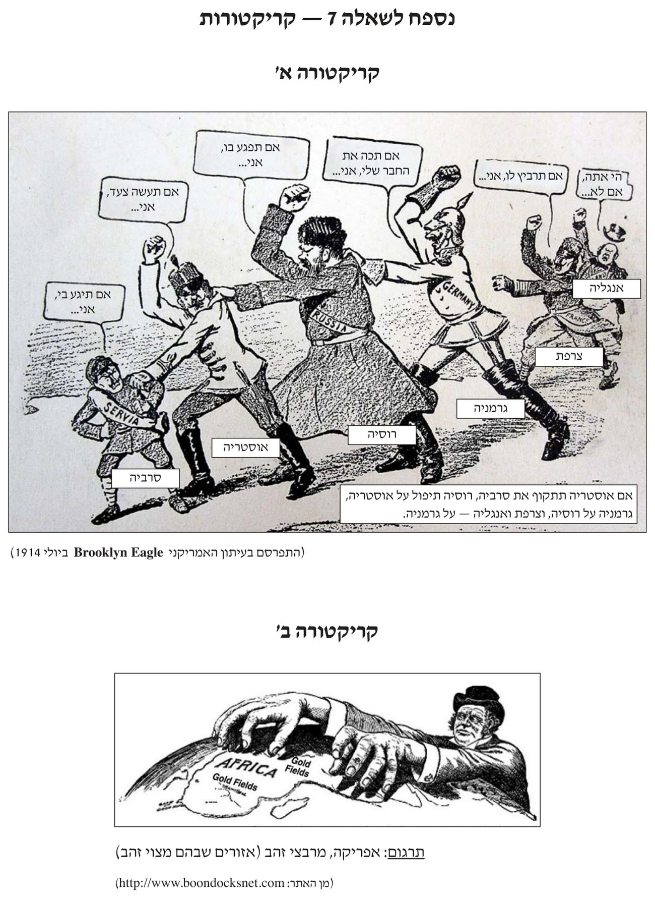</a><figcaption>נספח לשאלה 7 · לחצו על התמונה כדי להגדיל</figcaption></figure>
<div class="bh-sub"><p class="bh-subq" id="lbl-h29q-19w-7-1"><span class="bh-letter">א</span> בנספח לשאלה זו מוצגות שתי קריקטורות. בקריקטורות אלה יש התייחסות לגורמים שהביאו לפרוץ מלחמת העולם הראשונה (1914), ובאמצעותן הביעו היוצרים ביקורת פוליטית.</p>
<textarea class="answer" data-id="h29q-19w-7-1" aria-labelledby="lbl-h29q-19w-7-1" rows="3" placeholder="כתבו כאן את התשובה שלכם..."></textarea></div>
<div class="bh-sub"><p class="bh-subq" id="lbl-h29q-19w-7-2">ציין את הגורם למלחמה שיש אליו התייחסות בקריקטורה א&#x27;, וציין את הגורם למלחמה שיש אליו התייחסות בקריקטורה ב&#x27;. (סך הכול — שני גורמים).</p>
<textarea class="answer" data-id="h29q-19w-7-2" aria-labelledby="lbl-h29q-19w-7-2" rows="3" placeholder="כתבו כאן את התשובה שלכם..."></textarea></div>
<div class="bh-sub"><p class="bh-subq" id="lbl-h29q-19w-7-3">על פי מה שלמדת, הצג כל אחד מן הגורמים האלה (סך הכול — שני גורמים).</p>
<textarea class="answer" data-id="h29q-19w-7-3" aria-labelledby="lbl-h29q-19w-7-3" rows="3" placeholder="כתבו כאן את התשובה שלכם..."></textarea></div>
<div class="bh-sub"><p class="bh-subq" id="lbl-h29q-19w-7-4">הסבר כיצד הביקורת שהביע היוצר באה לידי ביטוי באחת מן הקריקטורות (בתשובתך היעזר ברכיב אחד לפחות).</p>
<textarea class="answer" data-id="h29q-19w-7-4" aria-labelledby="lbl-h29q-19w-7-4" rows="3" placeholder="כתבו כאן את התשובה שלכם..."></textarea></div>
<div class="bh-sub"><p class="bh-subq" id="lbl-h29q-19w-7-5"><span class="bh-letter">ב</span> על פי מה שלמדת, הסבר את הקושי המיוחד שנוצר לראשונה לחיילים היהודים במלחמת העולם הראשונה.</p>
<textarea class="answer" data-id="h29q-19w-7-5" aria-labelledby="lbl-h29q-19w-7-5" rows="3" placeholder="כתבו כאן את התשובה שלכם..."></textarea></div>
<div class="bh-qkey" data-qkey="h29-19w-7" hidden></div>
</article>
<article class="bh-q" id="h29-19w-15">
<div class="bh-q-head"><span class="bh-exam">📅 בגרות חורף תשע&quot;ט</span><span class="bh-qn">שאלה 15 בשאלון</span></div>
<div class="bh-sub"><p class="bh-subq" id="lbl-h29q-19w-15-1">הצג שני קשיים שאנשי היישוב החדש נאלצו להתמודד עימם בתקופת העלייה הראשונה.</p>
<textarea class="answer" data-id="h29q-19w-15-1" aria-labelledby="lbl-h29q-19w-15-1" rows="3" placeholder="כתבו כאן את התשובה שלכם..."></textarea></div>
<div class="bh-sub"><p class="bh-subq" id="lbl-h29q-19w-15-2">אילו היית איכר באחת המושבות של בני העלייה הראשונה בשנת תרמ&quot;ח, איזו עמדה היית נוקט בפולמוס השמיטה בנוגע להיתר המכירה? נמק את עמדתך על פי מה שלמדת.</p>
<textarea class="answer" data-id="h29q-19w-15-2" aria-labelledby="lbl-h29q-19w-15-2" rows="3" placeholder="כתבו כאן את התשובה שלכם..."></textarea></div>
<div class="bh-sub"><p class="bh-subq" id="lbl-h29q-19w-15-3">האם נקיטת עמדה זו הייתה גורמת לך צער או קושי כלשהו? נמק את דבריך.</p>
<textarea class="answer" data-id="h29q-19w-15-3" aria-labelledby="lbl-h29q-19w-15-3" rows="3" placeholder="כתבו כאן את התשובה שלכם..."></textarea></div>
<div class="bh-qkey" data-qkey="h29-19w-15" hidden></div>
</article>
<article class="bh-q" id="h29-18s-5">
<div class="bh-q-head"><span class="bh-exam">📅 בגרות קיץ תשע&quot;ח</span><span class="bh-qn">שאלה 5 בשאלון</span></div>
<p class="bh-ctx">אנשי העלייה הראשונה ראו ביישוב הישן חברה מיושנת, ולא מתחדשת.</p>
<div class="bh-sub"><p class="bh-subq" id="lbl-h29q-18s-5-1">הצג שני מאפיינים של היישוב הישן שעליהם התבססה ביקורת זו.</p>
<textarea class="answer" data-id="h29q-18s-5-1" aria-labelledby="lbl-h29q-18s-5-1" rows="3" placeholder="כתבו כאן את התשובה שלכם..."></textarea></div>
<div class="bh-sub"><p class="bh-subq" id="lbl-h29q-18s-5-2">הצג שתי תמורות (שינויים) שחלו ביישוב הישן הסותרות את הביקורת של אנשי העלייה הראשונה.</p>
<textarea class="answer" data-id="h29q-18s-5-2" aria-labelledby="lbl-h29q-18s-5-2" rows="3" placeholder="כתבו כאן את התשובה שלכם..."></textarea></div>
<div class="bh-qkey" data-qkey="h29-18s-5" hidden></div>
</article>
<article class="bh-q" id="h29-18s-6">
<div class="bh-q-head"><span class="bh-exam">📅 בגרות קיץ תשע&quot;ח</span><span class="bh-qn">שאלה 6 בשאלון</span></div>
<p class="bh-ctx">האכזבה של הערבים מן המדיניות של בריטניה בארץ־ישראל במהלך שנות השלושים הביאה לפרוץ מאורעות תרצ&quot;ו-תרצ&quot;ט. גם היהודים התאכזבו מן המדיניות של בריטניה בתקופה זו.</p>
<div class="bh-sub"><p class="bh-subq" id="lbl-h29q-18s-6-1">הסבר סיבה אחת לאכזבה של הערבים וסיבה אחת לאכזבה של היהודים מן המדיניות של בריטניה, מראשית שנות השלושים ועד פרוץ המאורעות (סך הכול — שתי סיבות).</p>
<textarea class="answer" data-id="h29q-18s-6-1" aria-labelledby="lbl-h29q-18s-6-1" rows="3" placeholder="כתבו כאן את התשובה שלכם..."></textarea></div>
<div class="bh-sub"><p class="bh-subq" id="lbl-h29q-18s-6-2">הצג שתי תגובות של השלטון הבריטי למאורעות תרצ&quot;ו-תרצ&quot;ט: תגובה אחת במישור הצבאי ותגובה אחת במישור המדיני.</p>
<textarea class="answer" data-id="h29q-18s-6-2" aria-labelledby="lbl-h29q-18s-6-2" rows="3" placeholder="כתבו כאן את התשובה שלכם..."></textarea></div>
<div class="bh-qkey" data-qkey="h29-18s-6" hidden></div>
</article>
<article class="bh-q" id="h29-17s-4">
<div class="bh-q-head"><span class="bh-exam">📅 בגרות קיץ תשע&quot;ז</span><span class="bh-qn">שאלה 4 בשאלון</span></div>
<p class="bh-ctx">בסוף המאה ה־19 ובתחילת המאה ה־20 היו לקבוצות בארץ דעות מגוונות בנוגע לצביון הדתי של היישוב היהודי בארץ־ישראל.</p>
<div class="bh-sub"><p class="bh-subq" id="lbl-h29q-17s-4-1">בחר באחד מן האירועים שלמדת עליהם: מינוי רבנים ביישוב החדש או מסע הרבנים במושבות.</p>
<textarea class="answer" data-id="h29q-17s-4-1" aria-labelledby="lbl-h29q-17s-4-1" rows="3" placeholder="כתבו כאן את התשובה שלכם..."></textarea></div>
<div class="bh-sub"><p class="bh-subq" id="lbl-h29q-17s-4-2">הצג את הרקע לאירוע שבחרת בו.</p>
<textarea class="answer" data-id="h29q-17s-4-2" aria-labelledby="lbl-h29q-17s-4-2" rows="3" placeholder="כתבו כאן את התשובה שלכם..."></textarea></div>
<div class="bh-sub"><p class="bh-subq" id="lbl-h29q-17s-4-3">הצג כיצד באירוע זה בא לידי ביטוי שיתוף הפעולה בין קבוצות שונות ביישוב.</p>
<textarea class="answer" data-id="h29q-17s-4-3" aria-labelledby="lbl-h29q-17s-4-3" rows="3" placeholder="כתבו כאן את התשובה שלכם..."></textarea></div>
<div class="bh-qkey" data-qkey="h29-17s-4" hidden></div>
</article>
<article class="bh-q" id="h29-17s-5">
<div class="bh-q-head"><span class="bh-exam">📅 בגרות קיץ תשע&quot;ז</span><span class="bh-qn">שאלה 5 בשאלון</span></div>
<div class="bh-sub"><p class="bh-subq" id="lbl-h29q-17s-5-1">הצג שני מרכיבי זהות של ערביי ארץ־ישראל לפני מלחמת העולם הראשונה.</p>
<textarea class="answer" data-id="h29q-17s-5-1" aria-labelledby="lbl-h29q-17s-5-1" rows="3" placeholder="כתבו כאן את התשובה שלכם..."></textarea></div>
<div class="bh-sub"><p class="bh-subq" id="lbl-h29q-17s-5-2">ציין את השינוי בזהות של ערביי ארץ־ישראל לאחר מלחמת העולם הראשונה, והסבר גורם אחד לשינוי זה.</p>
<textarea class="answer" data-id="h29q-17s-5-2" aria-labelledby="lbl-h29q-17s-5-2" rows="3" placeholder="כתבו כאן את התשובה שלכם..."></textarea></div>
<div class="bh-qkey" data-qkey="h29-17s-5" hidden></div>
</article>
<article class="bh-q" id="h29-17s-6">
<div class="bh-q-head"><span class="bh-exam">📅 בגרות קיץ תשע&quot;ז</span><span class="bh-qn">שאלה 6 בשאלון</span></div>
<p class="bh-ctx">בשנים 1936-1939, במהלך המרד הערבי הגדול, התרחשו בארץ־ישראל מאורעות דמים.</p>
<div class="bh-sub"><p class="bh-subq" id="lbl-h29q-17s-6-1">הצג שינוי אחד שחל בכוח המגן של היישוב היהודי בעקבות המאורעות האלה.</p>
<textarea class="answer" data-id="h29q-17s-6-1" aria-labelledby="lbl-h29q-17s-6-1" rows="3" placeholder="כתבו כאן את התשובה שלכם..."></textarea></div>
<div class="bh-sub"><p class="bh-subq" id="lbl-h29q-17s-6-2">הסבר את העמדות של ההגנה ושל האצ&quot;ל בשאלת ה&quot;הבלגה או תגובה&quot; כלפי הטרור הערבי בתקופה זו (סך הכול — שני הסברים).</p>
<textarea class="answer" data-id="h29q-17s-6-2" aria-labelledby="lbl-h29q-17s-6-2" rows="3" placeholder="כתבו כאן את התשובה שלכם..."></textarea></div>
<div class="bh-qkey" data-qkey="h29-17s-6" hidden></div>
</article>
<article class="bh-q" id="h29-17s-7">
<div class="bh-q-head"><span class="bh-exam">📅 בגרות קיץ תשע&quot;ז</span><span class="bh-qn">שאלה 7 בשאלון</span></div>
<p class="bh-ctx">בנספח לשאלה 7 מוצגת כרזת גיוס לצבא הבריטי מתקופת מלחמת העולם השנייה. התבונן בכרזה וענה על שני הסעיפים א-ב.</p>
<figure class="bh-fig"><a href="assets/h29/h29-17s-n7-1.jpg" target="_blank" rel="noopener">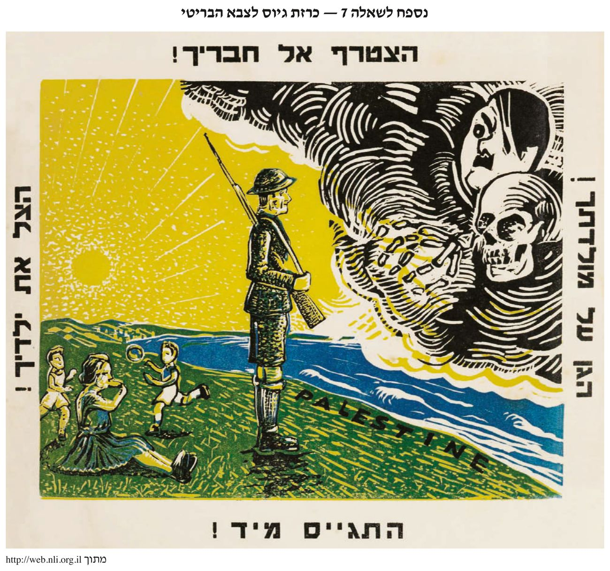</a><figcaption>נספח לשאלה 7 · לחצו על התמונה כדי להגדיל</figcaption></figure>
<div class="bh-sub"><p class="bh-subq" id="lbl-h29q-17s-7-1"><span class="bh-letter">א</span> על פי הכרזה, ציין את הסיבה שבגללה חשוב להתגייס לצבא הבריטי.</p>
<textarea class="answer" data-id="h29q-17s-7-1" aria-labelledby="lbl-h29q-17s-7-1" rows="3" placeholder="כתבו כאן את התשובה שלכם..."></textarea></div>
<div class="bh-sub"><p class="bh-subq" id="lbl-h29q-17s-7-2">הצג שני רכיבים הנראים בכרזה, שבאמצעותם ניסה הצייר לשכנע צעירים יהודים להתגייס.</p>
<textarea class="answer" data-id="h29q-17s-7-2" aria-labelledby="lbl-h29q-17s-7-2" rows="3" placeholder="כתבו כאן את התשובה שלכם..."></textarea></div>
<div class="bh-sub"><p class="bh-subq" id="lbl-h29q-17s-7-3">היו יהודים שהיססו להתגייס לצבא הבריטי. על פי מה שלמדת, הצג שתי סיבות להיסוס שלהם.</p>
<textarea class="answer" data-id="h29q-17s-7-3" aria-labelledby="lbl-h29q-17s-7-3" rows="3" placeholder="כתבו כאן את התשובה שלכם..."></textarea></div>
<div class="bh-sub"><p class="bh-subq" id="lbl-h29q-17s-7-4"><span class="bh-letter">ב</span> הסבר מדוע התנגדו הבריטים להקמת הבריגדה היהודית עד שנת 1944.</p>
<textarea class="answer" data-id="h29q-17s-7-4" aria-labelledby="lbl-h29q-17s-7-4" rows="3" placeholder="כתבו כאן את התשובה שלכם..."></textarea></div>
<div class="bh-sub"><p class="bh-subq" id="lbl-h29q-17s-7-5">הצג את תרומתה של הבריגדה היהודית למאמץ המלחמתי של הבריטים בסוף מלחמת העולם השנייה.</p>
<textarea class="answer" data-id="h29q-17s-7-5" aria-labelledby="lbl-h29q-17s-7-5" rows="3" placeholder="כתבו כאן את התשובה שלכם..."></textarea></div>
<div class="bh-qkey" data-qkey="h29-17s-7" hidden></div>
</article>
</section>
<section class="bh-panel" role="tabpanel" id="h-totali" aria-labelledby="tab-totali" hidden>
<h2 class="bh-panel-title"><span aria-hidden="true">⚔️</span> משטרים טוטליטריים ומלחמת העולם השנייה <small>25 שאלות</small></h2>
<article class="bh-q" id="h29-26w-2">
<div class="bh-q-head"><span class="bh-exam">📅 בגרות חורף תשפ&quot;ו</span><span class="bh-qn">שאלה 2 בשאלון</span></div>
<h3 class="bh-qtitle">משטרים טוטליטריים</h3>
<p class="bh-ctx">בשנים שבין שתי מלחמות העולם היו באירופה משטרים טוטליטריים, ובהם המשטר הקומוניסטי והמשטר הפשיסטי.</p>
<div class="bh-sub"><p class="bh-subq" id="lbl-h29q-26w-2-1">ציינו שתי נקודות דמיון בין המשטר הקומוניסטי ובין המשטר הפשיסטי.</p>
<textarea class="answer" data-id="h29q-26w-2-1" aria-labelledby="lbl-h29q-26w-2-1" rows="3" placeholder="כתבו כאן את התשובה שלכם..."></textarea></div>
<div class="bh-sub"><p class="bh-subq" id="lbl-h29q-26w-2-2">הציגו הבדל אחד בין האידאולוגיות של המשטרים האלה.</p>
<textarea class="answer" data-id="h29q-26w-2-2" aria-labelledby="lbl-h29q-26w-2-2" rows="3" placeholder="כתבו כאן את התשובה שלכם..."></textarea></div>
<div class="bh-sub"><p class="bh-subq" id="lbl-h29q-26w-2-3">ציינו אחד מרעיונות הנאורות.</p>
<textarea class="answer" data-id="h29q-26w-2-3" aria-labelledby="lbl-h29q-26w-2-3" rows="3" placeholder="כתבו כאן את התשובה שלכם..."></textarea></div>
<div class="bh-sub"><p class="bh-subq" id="lbl-h29q-26w-2-4">בחרו באחד מן המשטרים – המשטר הקומוניסטי או המשטר הפשיסטי וציינו אותו. הסבירו אם לדעתכם המשטר שבחרתם מבטא את רעיון הנאורות שציינתם.</p>
<textarea class="answer" data-id="h29q-26w-2-4" aria-labelledby="lbl-h29q-26w-2-4" rows="3" placeholder="כתבו כאן את התשובה שלכם..."></textarea></div>
<div class="bh-qkey" data-qkey="h29-26w-2" hidden></div>
</article>
<article class="bh-q" id="h29-26w-6">
<div class="bh-q-head"><span class="bh-exam">📅 בגרות חורף תשפ&quot;ו</span><span class="bh-qn">שאלה 6 בשאלון</span></div>
<h3 class="bh-qtitle">הנאציזם</h3>
<p class="bh-ctx">הנאצים ביקשו לעצב מחדש את העולם על פי האידאולוגיה הנאצית.</p>
<div class="bh-sub"><p class="bh-subq" id="lbl-h29q-26w-6-1">ציינו והציגו אחד מן הרעיונות של האידאולוגיה הנאצית: תורת הגזע או מרחב מחיה.</p>
<textarea class="answer" data-id="h29q-26w-6-1" aria-labelledby="lbl-h29q-26w-6-1" rows="3" placeholder="כתבו כאן את התשובה שלכם..."></textarea></div>
<div class="bh-sub"><p class="bh-subq" id="lbl-h29q-26w-6-2">הסבירו מדוע בתקופה שבין שתי מלחמות העולם רבים מאזרחי גרמניה קיבלו את הנאציזם בהתלהבות.</p>
<textarea class="answer" data-id="h29q-26w-6-2" aria-labelledby="lbl-h29q-26w-6-2" rows="3" placeholder="כתבו כאן את התשובה שלכם..."></textarea></div>
<div class="bh-sub"><p class="bh-subq" id="lbl-h29q-26w-6-3">הציגו שני צעדים שנקט היטלר לאחר עלייתו לשלטון (1933) שהביאו להפיכתה של גרמניה למדינה טוטליטרית.</p>
<textarea class="answer" data-id="h29q-26w-6-3" aria-labelledby="lbl-h29q-26w-6-3" rows="3" placeholder="כתבו כאן את התשובה שלכם..."></textarea></div>
<div class="bh-qkey" data-qkey="h29-26w-6" hidden></div>
</article>
<article class="bh-q" id="h29-26w-7">
<div class="bh-q-head"><span class="bh-exam">📅 בגרות חורף תשפ&quot;ו</span><span class="bh-qn">שאלה 7 בשאלון</span></div>
<h3 class="bh-qtitle">יהודי אירופה בתקופת מלחמת העולם השנייה</h3>
<p class="bh-ctx">פלישת גרמניה לפולין בספטמבר 1939 הייתה נקודת מפנה במדיניות הרשמית של הנאצים כלפי היהודים.</p>
<div class="bh-sub"><p class="bh-subq" id="lbl-h29q-26w-7-1">ציינו שני צעדים שנקטו הנאצים כלפי יהודי פולין לאחר כיבושה.</p>
<textarea class="answer" data-id="h29q-26w-7-1" aria-labelledby="lbl-h29q-26w-7-1" rows="3" placeholder="כתבו כאן את התשובה שלכם..."></textarea></div>
<div class="bh-sub"><p class="bh-subq" id="lbl-h29q-26w-7-2">הסבירו גורם אחד להבדל בין היחס של הנאצים כלפי יהודי פולין לאחר כיבושה ובין היחס שלהם כלפי יהודי גרמניה עד פרוץ מלחמת העולם השנייה.</p>
<textarea class="answer" data-id="h29q-26w-7-2" aria-labelledby="lbl-h29q-26w-7-2" rows="3" placeholder="כתבו כאן את התשובה שלכם..."></textarea></div>
<div class="bh-sub"><p class="bh-subq" id="lbl-h29q-26w-7-3">הסבירו סיבה אחת לפתיחת מבצע הרצח ההמוני של יהודים לאחר פלישת הנאצים לברית המועצות (יוני 1941).</p>
<textarea class="answer" data-id="h29q-26w-7-3" aria-labelledby="lbl-h29q-26w-7-3" rows="3" placeholder="כתבו כאן את התשובה שלכם..."></textarea></div>
<div class="bh-sub"><p class="bh-subq" id="lbl-h29q-26w-7-4">ציינו את התפקיד של האיינזצגרופן (עוצבות המבצע) בתהליך השמדת יהודי ברית המועצות.</p>
<textarea class="answer" data-id="h29q-26w-7-4" aria-labelledby="lbl-h29q-26w-7-4" rows="3" placeholder="כתבו כאן את התשובה שלכם..."></textarea></div>
<div class="bh-qkey" data-qkey="h29-26w-7" hidden></div>
</article>
<article class="bh-q" id="h29-25s-13">
<div class="bh-q-head"><span class="bh-exam">📅 בגרות קיץ תשפ&quot;ה</span><span class="bh-qn">שאלה 13 בשאלון</span></div>
<details class="bh-passage"><summary><span aria-hidden="true">📄</span> הקטע שעליו מבוססת השאלה · לחצו כדי לקרוא</summary><div class="bh-passage-body">
<p class="bh-ctx">לפניכם קטע העוסק בדיונים ההלכתיים של רבני גרמניה על רקע &quot;גזרת השחיטה&quot; (1933) שגזרו הנאצים, ולפיה נאסרה השחיטה בדרכים ההלכתיות המקובלות.</p>
<p class="bh-src-text">מייד עם עליית הנאצים לשלטון ב־1933, נאסרה השחיטה בדרכים ההלכתיות המקובלות. מציאות כזאת, שבה לא היה אפשר להשיג בשר כשר כלל, הייתה עלולה לגרום למרבית יהודי גרמניה לאכול בשר טרף. יש לזכור שבאותה עת הבשר נחשב למרכיב תזונתי חשוב ביותר, ולא ידעו כי אפשר להתקיים בלעדיו. לכן הקפידו שילדים, חולים וזקנים יאכלו בשר. אי לכך, נערכו דיונים הלכתיים בנוגע לאפשרות להתיר שינויים והקלות בדרכי השחיטה. הדיונים התנהלו בין הרבנים הנאו־אורתודוקסים בגרמניה כדי שההחלטה שתתקבל תהיה אחידה. היו רבנים שחיפשו דרך להתיר שינויים בדרכי השחיטה, והיו שהתנגדו לכל שינוי הלכתי. הרבנים שחיפשו דרך להתיר שינויים בדרכי השחיטה, שאפו למתוח את גבולות ההלכה ככל האפשר כדי להציל יהודים בגרמניה מאכילת טרפות. החשש היה שרבים מן היהודים בגרמניה לא יעמדו בניסיון, ויוותרו בכלל על שמירת הכשרות. הרבנים המקילים הגיעו בדרך כלל מקהילות מעורבות, שבהן היו הן יהודים שומרי מצוות הן יהודים שאינם שומרי מצוות. הם שאפו למתוח את הדין ולהיות גמישים ככל האפשר במסגרת ההלכה כדי למנוע הידרדרות נוספת בשמירת ההלכה.</p>
<p class="bh-src-text">לעומת זאת היו רבנים ששללו כל שינוי בדרכי השחיטה, מתוך חשש ששינוי מן הנורמות ההלכתיות יוביל לזלזול בשאר ההלכות. על פי גישה זו, דווקא בזמן של &quot;דור פרוץ&quot; בעבירות [דור שאינו מקפיד על שמירת מצוות], כל הקלה במצוות תוליד תוצאות הרסניות בנוגע לשמירת המצוות. כך לדוגמה הדגיש הרב יוסף ברויאר כי דווקא בדור זה, חובת הרבנים לחזק את הפרצות ולא לתת יד לשום היתר.</p>
<p class="bh-src-text">שיקול נוסף שהשפיע על הנטייה של רבני גרמניה לחפש דרכים להקל או לאסור, הייתה – אם התקופה נחשבת ל&quot;שעת שמד&quot;, כלומר תקופה שבה המטרה העיקרית של השלטון היא להעביר את היהודים על דתם [לגרום להמרת דת]. בהלכה נפסק כי ב&quot;שעת שמד&quot; מצווה למות על קידוש השם אפילו על מצווה קלה [&quot;ייהרג ואל יעבור&quot;]. היו רבנים שראו בתקופה זו &quot;שעת שמד&quot;, ולכן גזרת השחיטה נחשבה בעיניהם ל&quot;גזרה דתית&quot;. כך לדוגמה פירש זאת הרב זאב צבי הכהן קליין: &quot;שונאינו יחשבו שעלה בידם להעבירנו על הדת... ויאמרו שהיהודים מבטלים דתם לגמרי מפני גזרתם&quot;. ולכן אסרו שינויים בהלכות השחיטה.</p>
<p class="bh-src-text">לעומת זאת, היו רבנים שטענו שגזרה זו לא דומה לגזרות דת בימים עברו. כך לדוגמה, סבר הרב יצחק אונא כי גזרת השחיטה לא נועדה להעביר את היהודים על דתם אלא היא ביטוי למדיניות כוללת של התנכלות והצרת צעדים של היהודים בכל תחומי החיים:</p>
<p class="bh-src-text">&quot;וכשם שמסירים המלמדים [המורים] ממקומם, וגוזרים חרם שלא לקנות אצל הסוחרים היהודים, והכול כדי לצער אותם ולהסיר מהם מחייתם, כך מה שאוסרים השחיטה אינו רק [אלא] לצער אותנו&quot;.</p>
<p class="bh-src-text">גם הרב ויינברג סבר כי מטרת הגזרה אינה העברה על הדת: &quot;אינם כופים אותנו לאכול בשר&quot;. הרב אפרים מאיר לאסמאנן אף הוסיף ראיות מחוקי נירנברג, כדי להוכיח שאין השעה &quot;שעת שמד&quot;. במכתב משנת 1937 ציין הרב כי אין כוונת הגרמנים להעביר על הדת, שכן, לדבריו, היחס של הנאצים כלפי יהודים מומרים [יהודים שהתנצרו] אינו שונה מן היחס שלהם כלפי יהודים שומרי מצוות. בסופו של דבר — לאחר התייעצות של רבני גרמניה עם רבני פולין וליטא — התקבלה החלטה סופית ולפיה אין לשנות כלל את הלכות השחיטה, והסוגיה ההלכתית ירדה מהפרק. למרות זאת, בחר הרב ויינברג — לאחר השואה — להתייחס למכלול השיקולים ההלכתיים בספרו &quot;שרידי אש&quot;. לדבריו: &quot;ברוך השם שהתשובות ההן חדל להיות להן ערך מעשי כלשהו... ולא נמנעתי מלפרסמן משום חשיבותן ההיסטורית&quot;.</p>
<p class="bh-cite">(מעובד על פי שרה קפלן, דיונים הלכתיים סביב גזירת השחיטה בגרמניה הנאצית, מכלול, גיליון י&quot;ט, 2000)</p>
</div></details>
<div class="bh-sub"><p class="bh-subq" id="lbl-h29q-25s-13-1">על פי מה שלמדתם, הציגו שני סעיפים מתוך חוקי נירנברג.</p>
<textarea class="answer" data-id="h29q-25s-13-1" aria-labelledby="lbl-h29q-25s-13-1" rows="3" placeholder="כתבו כאן את התשובה שלכם..."></textarea></div>
<div class="bh-sub"><p class="bh-subq" id="lbl-h29q-25s-13-2">על פי מה שלמדתם, הסבירו את דבריו של הרב מאיר לאסמאנן בקטע, שלפיהם היחס של הנאצים כלפי יהודים מומרים (יהודים שהתנצרו) אינו שונה מן היחס שלהם כלפי יהודים שומרי מצוות.</p>
<textarea class="answer" data-id="h29q-25s-13-2" aria-labelledby="lbl-h29q-25s-13-2" rows="3" placeholder="כתבו כאן את התשובה שלכם..."></textarea></div>
<div class="bh-sub"><p class="bh-subq" id="lbl-h29q-25s-13-3">על פי מה שלמדתם, ציינו שני צעדים, מלבד חוקי נירנברג, אשר מצביעים על מדיניות כוללת של התנכלות ליהודים – אחד שמוזכר בקטע ואחד שאינו מוזכר בקטע.</p>
<textarea class="answer" data-id="h29q-25s-13-3" aria-labelledby="lbl-h29q-25s-13-3" rows="3" placeholder="כתבו כאן את התשובה שלכם..."></textarea></div>
<div class="bh-qkey" data-qkey="h29-25s-13" hidden></div>
</article>
<article class="bh-q" id="h29-25s-14">
<div class="bh-q-head"><span class="bh-exam">📅 בגרות קיץ תשפ&quot;ה</span><span class="bh-qn">שאלה 14 בשאלון</span></div>
<h3 class="bh-qtitle">מהלכי מלחמת העולם השנייה</h3>
<p class="bh-ctx">עיינו בנספח לשאלה 14. לפניכם קריקטורה שצייר אריה נבון בשנת 1943, המתארת את צבא גרמניה בשתי תקופות במלחמת העולם השנייה.</p>
<figure class="bh-fig"><a href="assets/h29/h29-25s-n14-1.jpg" target="_blank" rel="noopener">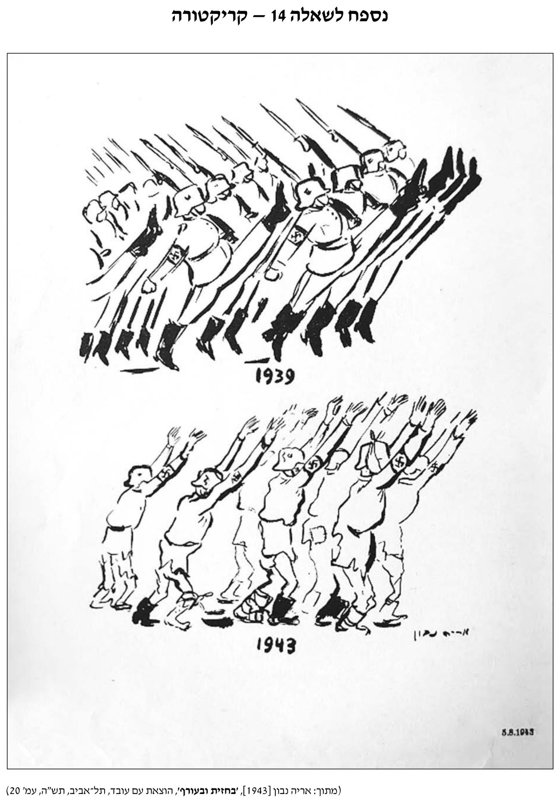</a><figcaption>נספח לשאלה 14 · לחצו על התמונה כדי להגדיל</figcaption></figure>
<div class="bh-sub"><p class="bh-subq" id="lbl-h29q-25s-14-1"><span class="bh-letter">א</span> על פי רכיב אחד מן הקריקטורה, הציגו את מצבו של צבא גרמניה בשנת 1939. בתשובתכם ציינו את הרכיב שעליו התבססתם.</p>
<textarea class="answer" data-id="h29q-25s-14-1" aria-labelledby="lbl-h29q-25s-14-1" rows="3" placeholder="כתבו כאן את התשובה שלכם..."></textarea></div>
<div class="bh-sub"><p class="bh-subq" id="lbl-h29q-25s-14-2">על פי מה שלמדתם, הציגו אירוע שהתרחש בשנת 1939 שעשוי להסביר את מצבו של צבא גרמניה בשנה זו כפי שהוא בא לידי ביטוי בקריקטורה.</p>
<textarea class="answer" data-id="h29q-25s-14-2" aria-labelledby="lbl-h29q-25s-14-2" rows="3" placeholder="כתבו כאן את התשובה שלכם..."></textarea></div>
<div class="bh-sub"><p class="bh-subq" id="lbl-h29q-25s-14-3"><span class="bh-letter">ב</span> על פי רכיב אחד מן הקריקטורה, הציגו את מצבו של צבא גרמניה בשנת 1943. בתשובתכם ציינו את הרכיב שעליו התבססתם.</p>
<textarea class="answer" data-id="h29q-25s-14-3" aria-labelledby="lbl-h29q-25s-14-3" rows="3" placeholder="כתבו כאן את התשובה שלכם..."></textarea></div>
<div class="bh-sub"><p class="bh-subq" id="lbl-h29q-25s-14-4">על פי מה שלמדתם, הציגו אירוע אחד שבעקבותיו נכנעה ההנהגה הגרמנית לבעלות הברית בשנת 1945.</p>
<textarea class="answer" data-id="h29q-25s-14-4" aria-labelledby="lbl-h29q-25s-14-4" rows="3" placeholder="כתבו כאן את התשובה שלכם..."></textarea></div>
<div class="bh-qkey" data-qkey="h29-25s-14" hidden></div>
</article>
<article class="bh-q" id="h29-25w-6">
<div class="bh-q-head"><span class="bh-exam">📅 בגרות חורף תשפ&quot;ה</span><span class="bh-qn">שאלה 6 בשאלון</span></div>
<h3 class="bh-qtitle">גרמניה הנאצית וברית המועצות</h3>
<div class="bh-sub"><p class="bh-subq" id="lbl-h29q-25w-6-1">הציגו את הסכם ריבנטרופ–מולוטוב (1939).</p>
<textarea class="answer" data-id="h29q-25w-6-1" aria-labelledby="lbl-h29q-25w-6-1" rows="3" placeholder="כתבו כאן את התשובה שלכם..."></textarea></div>
<div class="bh-sub"><p class="bh-subq" id="lbl-h29q-25w-6-2">על פי מה שלמדתם על האידאולוגיה הנאצית, הסבירו מדוע הסכם זה היה בלתי צפוי.</p>
<textarea class="answer" data-id="h29q-25w-6-2" aria-labelledby="lbl-h29q-25w-6-2" rows="3" placeholder="כתבו כאן את התשובה שלכם..."></textarea></div>
<div class="bh-sub"><p class="bh-subq" id="lbl-h29q-25w-6-3">הציגו את האינטרס של גרמניה בחתימה על הסכם זה.</p>
<textarea class="answer" data-id="h29q-25w-6-3" aria-labelledby="lbl-h29q-25w-6-3" rows="3" placeholder="כתבו כאן את התשובה שלכם..."></textarea></div>
<div class="bh-sub"><p class="bh-subq" id="lbl-h29q-25w-6-4">ציינו והציגו את האירוע שהתרחש בקיץ 1941 וביטא תפנית במערכת היחסים בין גרמניה לבין ברית המועצות.</p>
<textarea class="answer" data-id="h29q-25w-6-4" aria-labelledby="lbl-h29q-25w-6-4" rows="3" placeholder="כתבו כאן את התשובה שלכם..."></textarea></div>
<div class="bh-qkey" data-qkey="h29-25w-6" hidden></div>
</article>
<article class="bh-q" id="h29-25w-15">
<div class="bh-q-head"><span class="bh-exam">📅 בגרות חורף תשפ&quot;ה</span><span class="bh-qn">שאלה 15 בשאלון</span></div>
<h3 class="bh-qtitle">גרמניה הנאצית בשנות השלושים</h3>
<div class="bh-sub"><p class="bh-subq" id="lbl-h29q-25w-15-1"><span class="bh-letter">א</span> על פי מה שלמדתם, הציגו צעד אחד שנקטו הנאצים בשנים 1933–1938 כדי לפגוע בפרנסתם של יהודי גרמניה, מלבד יום החרם.</p>
<textarea class="answer" data-id="h29q-25w-15-1" aria-labelledby="lbl-h29q-25w-15-1" rows="3" placeholder="כתבו כאן את התשובה שלכם..."></textarea></div>
<div class="bh-sub"><p class="bh-subq" id="lbl-h29q-25w-15-2">על פי מה שלמדתם, הציגו צעד אחד שנקטו הנאצים בשנים 1933–1938 כדי לבודד את היהודים מן החברה הגרמנית.</p>
<textarea class="answer" data-id="h29q-25w-15-2" aria-labelledby="lbl-h29q-25w-15-2" rows="3" placeholder="כתבו כאן את התשובה שלכם..."></textarea></div>
<p class="bh-ctx"><span class="bh-letter">ב</span> בנספח לשאלה זו מוצגים שני תצלומים: תצלום א – תצלום מיום החרם, 1 באפריל 1933 תצלום ב – תצלום של יהודים ברחוב בברלין בשנת 1939 עיינו בתצלומים שבנספח וענו על השאלות שלפניכם. כל אחד מן התצלומים שבנספח מייצג דרך פעולה שנקטו יהודי גרמניה בהתמודדות עם צעדי הנאצים נגדם.</p>
<figure class="bh-fig"><a href="assets/h29/h29-25w-n15-2.jpg" target="_blank" rel="noopener">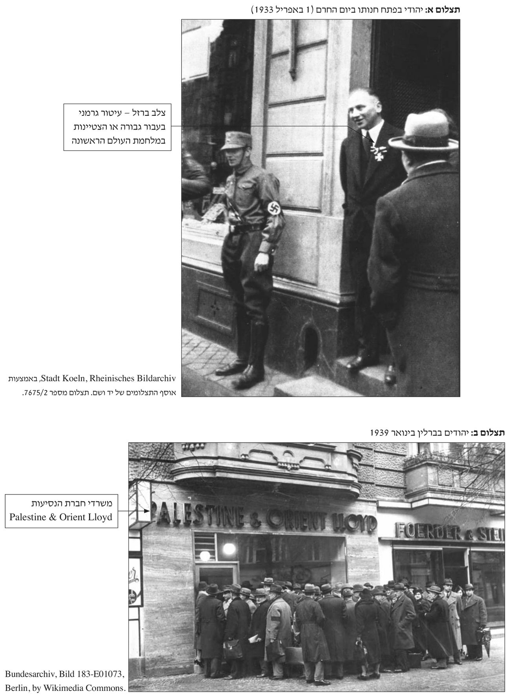</a><figcaption>נספח לשאלה 15 · לחצו על התמונה כדי להגדיל</figcaption></figure>
<div class="bh-sub"><p class="bh-subq" id="lbl-h29q-25w-15-3">הסבירו את דרך הפעולה שמשתקפת בכל אחד מן התצלומים (סך הכול – שתי דרכי פעולה). בתשובתכם ציינו רכיב אחד מכל תצלום שעליו הסתמכתם בתשובתכם (סך הכול – שני רכיבים).</p>
<textarea class="answer" data-id="h29q-25w-15-3" aria-labelledby="lbl-h29q-25w-15-3" rows="3" placeholder="כתבו כאן את התשובה שלכם..."></textarea></div>
<div class="bh-qkey" data-qkey="h29-25w-15" hidden></div>
</article>
<article class="bh-q" id="h29-24s-11">
<div class="bh-q-head"><span class="bh-exam">📅 בגרות קיץ תשפ&quot;ד</span><span class="bh-qn">שאלה 11 בשאלון</span></div>
<details class="bh-passage"><summary><span aria-hidden="true">📄</span> הקטע שעליו מבוססת השאלה · לחצו כדי לקרוא</summary><div class="bh-passage-body">
<p class="bh-ctx">לפניכם שלושה קטעים העוסקים בשואת יהודי הונגריה, ואחריהם שאלות.</p>
<p class="bh-src-label">קטע א</p>
<p class="bh-src-text">הגזרות נגד יהודי הונגריה החלו הרבה לפני הכיבוש הגרמני בשנת 1944. כבר בשנים 1938 ו־1939 חוקקה ממשלת הונגריה חוקים נגד היהודים שהפכו אותם לאזרחים מדרגה שנייה. חלק מן החוקים האלה כוונו גם נגד מומרים (יהודים שהמירו את דתם לנצרות). החוקים כללו הגבלות של זכויות האזרח ושל העיסוק המקצועי, ונקבעו בהם הוראות לעידוד הגירה מהונגריה. בשנת 1940 הוחל בגיוס של גברים יהודים בגילים 18–60 לעבודות כפייה ב&quot;פלוגות העבודה&quot; במסגרת הצבא ההונגרי. בפלוגות אלה הופרדו היהודים מכלל המגויסים – נאסר עליהם לשרת במסגרת צבאית רגילה, נלקחו מהם הדרגות הצבאיות וכלי הנשק, והם נצטוו לבצע עבודות כפייה. נוסף לכך פורסמו צווים אשר הוציאו את היהודים ממסגרת החוק הצבאי, והיוו פתח להפיכת חייהם לחיי עבדים. נקבע כי היהודים יסומנו בסרט שרוול צהוב, והמומרים – בסרט לבן, וכי הם ילבשו בגדים אזרחיים ויחבשו כומתה צבאית ללא סמל. הפלוגות היהודיות היו כלי מרכזי בדחיקת היהודים מן החברה ההונגרית.</p>
<p class="bh-src-text">עם הצטרפות הצבא ההונגרי לצבא הגרמני במלחמה, ולאחר פלישתה של גרמניה לברית המועצות במבצע &quot;ברברוסה&quot; (יוני 1941), נשלחו לחזית המזרח עשרות אלפי יהודים מן הפלוגות היהודיות. ההערכה היא כי מחציתם נספו (מתו) בגלל ירי, פריקת מוקשים, עייפות ורעב, והיעדר בגדים ונעליים בקור המקפיא. כמו כן בחזית המזרחית הגיעו המפקדים ההונגרים לנקודות שפל של אכזריות, ושיאן – הפיכת היהודים למושכי העגלות וקרונות האספקה במקום הסוסים, וזאת בעליות התלולות ובאקלים הקשה: “הם הפכו אותנו לסוסים... במשך הזמן הפכה משיכת העגלות למנהג של קבע&quot;. האירוע האכזרי ביותר כלפי הפלוגות היהודיות היה בעת התבוסה של היחידות ההונגריות לרוסים בינואר 1943. בעת הנסיגה ההמונית ביצעו ההונגרים רציחות המוניות יזומות של יהודים מפלוגות העבודה. כך לדוגמה ב־30/4/1943 הוצת במתכוון אסם ליד ז’יטומיר, ובו 800 עובדי כפייה יהודים, והנמלטים נורו בידי השומרים ההונגרים.</p>
<p class="bh-src-label">קטע ב</p>
<p class="bh-src-text">מגויסים יהודים בצבא ההונגרי מצאו דרך להפנות שאלות הלכתיות לרבנים. המקרים ה”קלים&quot; היו מקרים שבהם חשו השואלים כי אינם במצב של “פיקוח נפש&quot; אך חששו שאם ימשיכו להתנזר ממאכלים אסורים יגיעו למצב של חולשה, מצב המכונה בהלכה “פיקוח נפש לאחר זמן&quot;. שאלה כזו הופנתה לאחד מרבני בודפשט. הרב התיר אכילה של מאכלים אסורים אך הציע דרכים לצמצם את האיסור על ידי אכילה בדרך שאינה מקובלת, כמו הכנסת טעם מר במאכל או אכילה “בשיעורין&quot;, כלומר במנות קטנות. במקרים אחרים, כאשר נאלצו לחלל את השבת, העלו יהודי הפלוגות רעיונות מקוריים כיצד לעשות “זכר&quot; לשבת. אחד מהם היה לקבוע רגע מיוחד של שביתה ממלאכה כדי שיסמל את קדושת השבת. כך לדוגמה תיאר אחד המגויסים: “יום אחד, בעיצומה של עבודה קשה ביום השבת צעקתי בקול – אחיי, התדעו שהיום שבת קודש? על כן נניח לרגע אחד את כלי החפירה, לקיים ‘ושמרו בני ישראל את השבת&#x27; וכן עשו. שמעו בקולי ונתנו כולם את כלי החפירה על הארץ. ושמרנו אז כולנו יחד בלב שלם את שבת קודש רגע אחד&quot;. במעמד זה נכחו לדבריו כמאתיים יהודים, ולימים אמר לו אחד מהם שהיה זה “כמו מעמד הר סיני&quot;.</p>
<p class="bh-src-label">קטע ג</p>
<p class="bh-src-text">ככל שהתקרבה מלחמת העולם השנייה לסיומה, דומה היה כי קהילת יהודי הונגריה היא שארית הפלטה של העם היהודי באירופה. ואולם, הגרמנים לא ויתרו על השמדת הקהילה הגדולה האחרונה שנותרה, גם לאחר התקדמות הצבא האדום (הסובייטי) עד גבול הונגריה. למעשה, נראה כי השאיפה לרצוח את יהודי הונגריה השפיעה על החלטת הנאצים לכבוש את הונגריה, ועל כן הקדישו עד הרגע האחרון משאבים ניכרים להשלמת משימתם. הם גייסו לשם כך את כל מנגנון הרצח: מנהלת האס־אס באושוויץ תכננה את בואם לאושוויץ של כ־14,000 יהודים מהונגריה מדי יום, והרחיבה את מנגנון ההשמדה כדי להבטיח מבצע רצח יעיל, דמוי סרט נע, בהיקף ובמהירות חסרי תקדים. הנאצים בנו מסילה חדשה שהובילה היישר לאושוויץ, הוכנו בורות גדולים לשרפת הגופות, ומספר אנשי הזונדרקומנדו (שעסקו בשרפת הגופות) הוגדל. בתוך חודשיים בלבד, מ־15 במאי ועד 8 ביולי 1944, ביצעו הנאצים באושוויץ רצח נרחב שכמותו לא נודע ושבמהלכו נרצחו כ־425,000 יהודי הונגריה.</p>
<p class="bh-cite">(מעובד על פי: א&#x27; פרבשטין, בסתר המדרגה – היהדות האורתודוקסית בהונגריה נוכח השואה, מוסד הרב קוק, תשפ&quot;ג, עמ&#x27; 53, 61–65, 69, 74–76, 86, 237, 240)</p>
</div></details>
<p class="bh-ctx">גם האנטישמיות של המשטר ההונגרי (החל משנת 1938) וגם האנטישמיות של המשטר הנאצי התבססו על “תורת הגזע&quot;.</p>
<div class="bh-sub"><p class="bh-subq" id="lbl-h29q-24s-11-1">על פי מה שלמדתם, הציגו את &quot;תורת הגזע&quot;.</p>
<textarea class="answer" data-id="h29q-24s-11-1" aria-labelledby="lbl-h29q-24s-11-1" rows="3" placeholder="כתבו כאן את התשובה שלכם..."></textarea></div>
<div class="bh-sub"><p class="bh-subq" id="lbl-h29q-24s-11-2">הסבירו באמצעות דוגמה אחת כיצד “תורת הגזע&quot; באה לידי ביטוי בקטע א.</p>
<textarea class="answer" data-id="h29q-24s-11-2" aria-labelledby="lbl-h29q-24s-11-2" rows="3" placeholder="כתבו כאן את התשובה שלכם..."></textarea></div>
<div class="bh-sub"><p class="bh-subq" id="lbl-h29q-24s-11-3">על פי קטע א, הציגו שלושה שלבים המבטאים את ההדרגה ביחס של ההונגרים כלפי היהודים, החל משנת 1938 ועד לכיבוש הגרמני של הונגריה ב־1944.</p>
<textarea class="answer" data-id="h29q-24s-11-3" aria-labelledby="lbl-h29q-24s-11-3" rows="3" placeholder="כתבו כאן את התשובה שלכם..."></textarea></div>
<div class="bh-qkey" data-qkey="h29-24s-11" hidden></div>
</article>
<article class="bh-q" id="h29-24s-13">
<div class="bh-q-head"><span class="bh-exam">📅 בגרות קיץ תשפ&quot;ד</span><span class="bh-qn">שאלה 13 בשאלון</span></div>
<details class="bh-passage"><summary><span aria-hidden="true">📄</span> הקטע שעליו מבוססת השאלה · לחצו כדי לקרוא</summary><div class="bh-passage-body">
<p class="bh-ctx">לפניכם שלושה קטעים העוסקים בשואת יהודי הונגריה, ואחריהם שאלות.</p>
<p class="bh-src-label">קטע א</p>
<p class="bh-src-text">הגזרות נגד יהודי הונגריה החלו הרבה לפני הכיבוש הגרמני בשנת 1944. כבר בשנים 1938 ו־1939 חוקקה ממשלת הונגריה חוקים נגד היהודים שהפכו אותם לאזרחים מדרגה שנייה. חלק מן החוקים האלה כוונו גם נגד מומרים (יהודים שהמירו את דתם לנצרות). החוקים כללו הגבלות של זכויות האזרח ושל העיסוק המקצועי, ונקבעו בהם הוראות לעידוד הגירה מהונגריה. בשנת 1940 הוחל בגיוס של גברים יהודים בגילים 18–60 לעבודות כפייה ב&quot;פלוגות העבודה&quot; במסגרת הצבא ההונגרי. בפלוגות אלה הופרדו היהודים מכלל המגויסים – נאסר עליהם לשרת במסגרת צבאית רגילה, נלקחו מהם הדרגות הצבאיות וכלי הנשק, והם נצטוו לבצע עבודות כפייה. נוסף לכך פורסמו צווים אשר הוציאו את היהודים ממסגרת החוק הצבאי, והיוו פתח להפיכת חייהם לחיי עבדים. נקבע כי היהודים יסומנו בסרט שרוול צהוב, והמומרים – בסרט לבן, וכי הם ילבשו בגדים אזרחיים ויחבשו כומתה צבאית ללא סמל. הפלוגות היהודיות היו כלי מרכזי בדחיקת היהודים מן החברה ההונגרית.</p>
<p class="bh-src-text">עם הצטרפות הצבא ההונגרי לצבא הגרמני במלחמה, ולאחר פלישתה של גרמניה לברית המועצות במבצע &quot;ברברוסה&quot; (יוני 1941), נשלחו לחזית המזרח עשרות אלפי יהודים מן הפלוגות היהודיות. ההערכה היא כי מחציתם נספו (מתו) בגלל ירי, פריקת מוקשים, עייפות ורעב, והיעדר בגדים ונעליים בקור המקפיא. כמו כן בחזית המזרחית הגיעו המפקדים ההונגרים לנקודות שפל של אכזריות, ושיאן – הפיכת היהודים למושכי העגלות וקרונות האספקה במקום הסוסים, וזאת בעליות התלולות ובאקלים הקשה: “הם הפכו אותנו לסוסים... במשך הזמן הפכה משיכת העגלות למנהג של קבע&quot;. האירוע האכזרי ביותר כלפי הפלוגות היהודיות היה בעת התבוסה של היחידות ההונגריות לרוסים בינואר 1943. בעת הנסיגה ההמונית ביצעו ההונגרים רציחות המוניות יזומות של יהודים מפלוגות העבודה. כך לדוגמה ב־30/4/1943 הוצת במתכוון אסם ליד ז’יטומיר, ובו 800 עובדי כפייה יהודים, והנמלטים נורו בידי השומרים ההונגרים.</p>
<p class="bh-src-label">קטע ב</p>
<p class="bh-src-text">מגויסים יהודים בצבא ההונגרי מצאו דרך להפנות שאלות הלכתיות לרבנים. המקרים ה”קלים&quot; היו מקרים שבהם חשו השואלים כי אינם במצב של “פיקוח נפש&quot; אך חששו שאם ימשיכו להתנזר ממאכלים אסורים יגיעו למצב של חולשה, מצב המכונה בהלכה “פיקוח נפש לאחר זמן&quot;. שאלה כזו הופנתה לאחד מרבני בודפשט. הרב התיר אכילה של מאכלים אסורים אך הציע דרכים לצמצם את האיסור על ידי אכילה בדרך שאינה מקובלת, כמו הכנסת טעם מר במאכל או אכילה “בשיעורין&quot;, כלומר במנות קטנות. במקרים אחרים, כאשר נאלצו לחלל את השבת, העלו יהודי הפלוגות רעיונות מקוריים כיצד לעשות “זכר&quot; לשבת. אחד מהם היה לקבוע רגע מיוחד של שביתה ממלאכה כדי שיסמל את קדושת השבת. כך לדוגמה תיאר אחד המגויסים: “יום אחד, בעיצומה של עבודה קשה ביום השבת צעקתי בקול – אחיי, התדעו שהיום שבת קודש? על כן נניח לרגע אחד את כלי החפירה, לקיים ‘ושמרו בני ישראל את השבת&#x27; וכן עשו. שמעו בקולי ונתנו כולם את כלי החפירה על הארץ. ושמרנו אז כולנו יחד בלב שלם את שבת קודש רגע אחד&quot;. במעמד זה נכחו לדבריו כמאתיים יהודים, ולימים אמר לו אחד מהם שהיה זה “כמו מעמד הר סיני&quot;.</p>
<p class="bh-src-label">קטע ג</p>
<p class="bh-src-text">ככל שהתקרבה מלחמת העולם השנייה לסיומה, דומה היה כי קהילת יהודי הונגריה היא שארית הפלטה של העם היהודי באירופה. ואולם, הגרמנים לא ויתרו על השמדת הקהילה הגדולה האחרונה שנותרה, גם לאחר התקדמות הצבא האדום (הסובייטי) עד גבול הונגריה. למעשה, נראה כי השאיפה לרצוח את יהודי הונגריה השפיעה על החלטת הנאצים לכבוש את הונגריה, ועל כן הקדישו עד הרגע האחרון משאבים ניכרים להשלמת משימתם. הם גייסו לשם כך את כל מנגנון הרצח: מנהלת האס־אס באושוויץ תכננה את בואם לאושוויץ של כ־14,000 יהודים מהונגריה מדי יום, והרחיבה את מנגנון ההשמדה כדי להבטיח מבצע רצח יעיל, דמוי סרט נע, בהיקף ובמהירות חסרי תקדים. הנאצים בנו מסילה חדשה שהובילה היישר לאושוויץ, הוכנו בורות גדולים לשרפת הגופות, ומספר אנשי הזונדרקומנדו (שעסקו בשרפת הגופות) הוגדל. בתוך חודשיים בלבד, מ־15 במאי ועד 8 ביולי 1944, ביצעו הנאצים באושוויץ רצח נרחב שכמותו לא נודע ושבמהלכו נרצחו כ־425,000 יהודי הונגריה.</p>
<p class="bh-cite">(מעובד על פי: א&#x27; פרבשטין, בסתר המדרגה – היהדות האורתודוקסית בהונגריה נוכח השואה, מוסד הרב קוק, תשפ&quot;ג, עמ&#x27; 53, 61–65, 69, 74–76, 86, 237, 240)</p>
</div></details>
<div class="bh-sub"><p class="bh-subq" id="lbl-h29q-24s-13-1">על פי מה שלמדתם, הציגו את המטרה של כינוס ועידת ואנזה.</p>
<textarea class="answer" data-id="h29q-24s-13-1" aria-labelledby="lbl-h29q-24s-13-1" rows="3" placeholder="כתבו כאן את התשובה שלכם..."></textarea></div>
<p class="bh-ctx">המאמץ של הנאצים להוציא לפועל את &quot;הפתרון הסופי&quot; נמשך עד הרגע האחרון.</p>
<div class="bh-sub"><p class="bh-subq" id="lbl-h29q-24s-13-2">הסבירו טענה זו על פי קטע ג.</p>
<textarea class="answer" data-id="h29q-24s-13-2" aria-labelledby="lbl-h29q-24s-13-2" rows="3" placeholder="כתבו כאן את התשובה שלכם..."></textarea></div>
<div class="bh-sub"><p class="bh-subq" id="lbl-h29q-24s-13-3">על פי מה שלמדתם, ציינו והציגו דוגמה נוספת למאמץ של הנאצים להוציא לפועל את “הפתרון הסופי” עד הרגע האחרון.</p>
<textarea class="answer" data-id="h29q-24s-13-3" aria-labelledby="lbl-h29q-24s-13-3" rows="3" placeholder="כתבו כאן את התשובה שלכם..."></textarea></div>
<div class="bh-qkey" data-qkey="h29-24s-13" hidden></div>
</article>
<article class="bh-q" id="h29-24s-14">
<div class="bh-q-head"><span class="bh-exam">📅 בגרות קיץ תשפ&quot;ד</span><span class="bh-qn">שאלה 14 בשאלון</span></div>
<h3 class="bh-qtitle">מלחמת העולם השנייה</h3>
<p class="bh-ctx">בנספח לשאלה 14 מוצגת מדליה שנטבעה ברוסיה, חמישים שנה לאחר תום מלחמת העולם השנייה, לציון הניצחון על גרמניה הנאצית. עיינו בנספח וענו על שני הסעיפים א–ב.</p>
<figure class="bh-fig"><a href="assets/h29/h29-24s-n14-2.jpg" target="_blank" rel="noopener">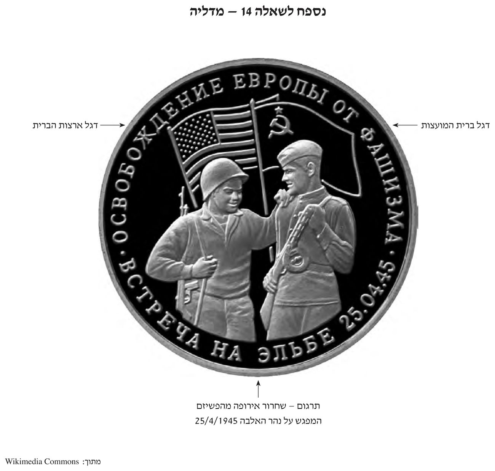</a><figcaption>נספח לשאלה 14 · לחצו על התמונה כדי להגדיל</figcaption></figure>
<div class="bh-sub"><p class="bh-subq" id="lbl-h29q-24s-14-1"><span class="bh-letter">א</span> על פי רכיב אחד במדליה, ציינו את המטרה המוצהרת של ברית המועצות במלחמתה נגד גרמניה הנאצית.</p>
<textarea class="answer" data-id="h29q-24s-14-1" aria-labelledby="lbl-h29q-24s-14-1" rows="3" placeholder="כתבו כאן את התשובה שלכם..."></textarea></div>
<div class="bh-sub"><p class="bh-subq" id="lbl-h29q-24s-14-2">על פי מה שלמדתם, הציגו רעיון אחד המשותף לאידאולוגיה הפשיסטית ולאידאולוגיה הנאצית, ומנוגד לאידאולוגיה הקומוניסטית.</p>
<textarea class="answer" data-id="h29q-24s-14-2" aria-labelledby="lbl-h29q-24s-14-2" rows="3" placeholder="כתבו כאן את התשובה שלכם..."></textarea></div>
<div class="bh-sub"><p class="bh-subq" id="lbl-h29q-24s-14-3">הסבירו מדוע האידאולוגיה הקומוניסטית מנוגדת לרעיון זה.</p>
<textarea class="answer" data-id="h29q-24s-14-3" aria-labelledby="lbl-h29q-24s-14-3" rows="3" placeholder="כתבו כאן את התשובה שלכם..."></textarea></div>
<div class="bh-sub"><p class="bh-subq" id="lbl-h29q-24s-14-4"><span class="bh-letter">ב</span> הסבירו כיצד היחסים בין ארצות הברית לברית המועצות בשלבים האחרונים של מלחמת העולם השנייה באים לידי ביטוי ברכיב אחד במדליה.</p>
<textarea class="answer" data-id="h29q-24s-14-4" aria-labelledby="lbl-h29q-24s-14-4" rows="3" placeholder="כתבו כאן את התשובה שלכם..."></textarea></div>
<div class="bh-sub"><p class="bh-subq" id="lbl-h29q-24s-14-5">על פי מה שלמדתם, הציגו את הגורם שהוביל להצטרפות של ארצות הברית למלחמת העולם השנייה בשנת 1941.</p>
<textarea class="answer" data-id="h29q-24s-14-5" aria-labelledby="lbl-h29q-24s-14-5" rows="3" placeholder="כתבו כאן את התשובה שלכם..."></textarea></div>
<div class="bh-qkey" data-qkey="h29-24s-14" hidden></div>
</article>
<article class="bh-q" id="h29-24w-1">
<div class="bh-q-head"><span class="bh-exam">📅 בגרות חורף תשפ&quot;ד</span><span class="bh-qn">שאלה 1 בשאלון</span></div>
<h3 class="bh-qtitle">נאורות ומשטרים טוטליטריים</h3>
<div class="bh-sub"><p class="bh-subq" id="lbl-h29q-24w-1-1">הציגו את ההשפעה של מלחמת העולם הראשונה על עליית הקומוניזם ברוסיה בשנת 1917.</p>
<textarea class="answer" data-id="h29q-24w-1-1" aria-labelledby="lbl-h29q-24w-1-1" rows="3" placeholder="כתבו כאן את התשובה שלכם..."></textarea></div>
<div class="bh-sub"><p class="bh-subq" id="lbl-h29q-24w-1-2">ציינו רעיון אחד של הנאורות, והסבירו כיצד הרעיון שציינתם בא לידי ביטוי בקומוניזם.</p>
<textarea class="answer" data-id="h29q-24w-1-2" aria-labelledby="lbl-h29q-24w-1-2" rows="3" placeholder="כתבו כאן את התשובה שלכם..."></textarea></div>
<div class="bh-sub"><p class="bh-subq" id="lbl-h29q-24w-1-3">ציינו רעיון אחר של הנאורות, והציגו פעולה אחת של המשטר הקומוניסטי בברית המועצות המנוגדת לרעיון שציינתם.</p>
<textarea class="answer" data-id="h29q-24w-1-3" aria-labelledby="lbl-h29q-24w-1-3" rows="3" placeholder="כתבו כאן את התשובה שלכם..."></textarea></div>
<div class="bh-qkey" data-qkey="h29-24w-1" hidden></div>
</article>
<article class="bh-q" id="h29-24w-6">
<div class="bh-q-head"><span class="bh-exam">📅 בגרות חורף תשפ&quot;ד</span><span class="bh-qn">שאלה 6 בשאלון</span></div>
<h3 class="bh-qtitle">מדיניות הנאצים נגד היהודים</h3>
<div class="bh-sub"><p class="bh-subq" id="lbl-h29q-24w-6-1">ציינו שני צעדים של הנאצים נגד יהודי פולין בשנים 1939–1940, לאחר כיבוש פולין.</p>
<textarea class="answer" data-id="h29q-24w-6-1" aria-labelledby="lbl-h29q-24w-6-1" rows="3" placeholder="כתבו כאן את התשובה שלכם..."></textarea></div>
<div class="bh-sub"><p class="bh-subq" id="lbl-h29q-24w-6-2">הציגו את השינוי שחל במדיניות הנאצים כלפי היהודים עם הפלישה לברית המועצות, החל מיוני 1941.</p>
<textarea class="answer" data-id="h29q-24w-6-2" aria-labelledby="lbl-h29q-24w-6-2" rows="3" placeholder="כתבו כאן את התשובה שלכם..."></textarea></div>
<p class="bh-ctx">הנאצים נקטו צעדים נגד יהודי צפון אפריקה ונגד יהודים במזרח אירופה.</p>
<div class="bh-sub"><p class="bh-subq" id="lbl-h29q-24w-6-3">הציגו נקודת שוני אחת ונקודת דמיון אחת בין הצעדים נגד יהודי צפון אפריקה ובין הצעדים נגד היהודים במזרח אירופה, החל משנת 1941 ועד סוף מלחמת העולם השנייה.</p>
<textarea class="answer" data-id="h29q-24w-6-3" aria-labelledby="lbl-h29q-24w-6-3" rows="3" placeholder="כתבו כאן את התשובה שלכם..."></textarea></div>
<div class="bh-qkey" data-qkey="h29-24w-6" hidden></div>
</article>
<article class="bh-q" id="h29-24w-7">
<div class="bh-q-head"><span class="bh-exam">📅 בגרות חורף תשפ&quot;ד</span><span class="bh-qn">שאלה 7 בשאלון</span></div>
<h3 class="bh-qtitle">מלחמת העולם השנייה</h3>
<div class="bh-sub"><p class="bh-subq" id="lbl-h29q-24w-7-1">הציגו את תוכנו של הסכם ריבנטרופ–מולוטוב, שנחתם בין גרמניה לבין ברית המועצות באוגוסט 1939.</p>
<textarea class="answer" data-id="h29q-24w-7-1" aria-labelledby="lbl-h29q-24w-7-1" rows="3" placeholder="כתבו כאן את התשובה שלכם..."></textarea></div>
<div class="bh-sub"><p class="bh-subq" id="lbl-h29q-24w-7-2">הסבירו מדוע החליטה גרמניה להפר את ההסכם (יוני 1941).</p>
<textarea class="answer" data-id="h29q-24w-7-2" aria-labelledby="lbl-h29q-24w-7-2" rows="3" placeholder="כתבו כאן את התשובה שלכם..."></textarea></div>
<div class="bh-sub"><p class="bh-subq" id="lbl-h29q-24w-7-3">הציגו גורם אחד שהביא להצטרפות של ארצות הברית למלחמת העולם השנייה בסוף שנת 1941.</p>
<textarea class="answer" data-id="h29q-24w-7-3" aria-labelledby="lbl-h29q-24w-7-3" rows="3" placeholder="כתבו כאן את התשובה שלכם..."></textarea></div>
<div class="bh-sub"><p class="bh-subq" id="lbl-h29q-24w-7-4">בחרו באחת מ&quot;מדינות הציר&quot; (גרמניה, איטליה או יפן), ציינו את שמה, והסבירו סיבה אחת למפלתה של מדינה זו במלחמה.</p>
<textarea class="answer" data-id="h29q-24w-7-4" aria-labelledby="lbl-h29q-24w-7-4" rows="3" placeholder="כתבו כאן את התשובה שלכם..."></textarea></div>
<div class="bh-qkey" data-qkey="h29-24w-7" hidden></div>
</article>
<article class="bh-q" id="h29-23w-6">
<div class="bh-q-head"><span class="bh-exam">📅 בגרות חורף תשפ&quot;ג</span><span class="bh-qn">שאלה 6 בשאלון</span></div>
<h3 class="bh-qtitle">המדיניות הנאצית נגד יהודי גרמניה בשנות השלושים</h3>
<p class="bh-ctx">הצעדים שנקטו הנאצים נגד יהודי גרמניה בשנות השלושים התאפיינו בהחמרה הדרגתית.</p>
<div class="bh-sub"><p class="bh-subq" id="lbl-h29q-23w-6-1">הסבירו את מטרת הנאצים בהדרגתיות זו.</p>
<textarea class="answer" data-id="h29q-23w-6-1" aria-labelledby="lbl-h29q-23w-6-1" rows="3" placeholder="כתבו כאן את התשובה שלכם..."></textarea></div>
<div class="bh-sub"><p class="bh-subq" id="lbl-h29q-23w-6-2">בחרו באחד מן הצעדים האלה: חוקי נירנברג (1935), ליל הבדולח (1938), וציינו אותו.</p>
<textarea class="answer" data-id="h29q-23w-6-2" aria-labelledby="lbl-h29q-23w-6-2" rows="3" placeholder="כתבו כאן את התשובה שלכם..."></textarea></div>
<div class="bh-sub"><p class="bh-subq" id="lbl-h29q-23w-6-3">הציגו את הצעד שבחרתם.</p>
<textarea class="answer" data-id="h29q-23w-6-3" aria-labelledby="lbl-h29q-23w-6-3" rows="3" placeholder="כתבו כאן את התשובה שלכם..."></textarea></div>
<div class="bh-sub"><p class="bh-subq" id="lbl-h29q-23w-6-4">הסבירו במה ביטא צעד זה החמרה במדיניות הנאצים כלפי היהודים.</p>
<textarea class="answer" data-id="h29q-23w-6-4" aria-labelledby="lbl-h29q-23w-6-4" rows="3" placeholder="כתבו כאן את התשובה שלכם..."></textarea></div>
<div class="bh-qkey" data-qkey="h29-23w-6" hidden></div>
</article>
<article class="bh-q" id="h29-21s-3">
<div class="bh-q-head"><span class="bh-exam">📅 בגרות קיץ תשפ&quot;א</span><span class="bh-qn">שאלה 3 בשאלון</span></div>
<h3 class="bh-qtitle">המשטר הטוטליטרי בברית המועצות</h3>
<div class="bh-sub"><p class="bh-subq" id="lbl-h29q-21s-3-1">הסבר כיצד האידאולוגיה הקומוניסטית באה לידי ביטוי בהתנהלות הכלכלית של המשטר בברית המועצות בעשורים הראשונים לקיומו.</p>
<textarea class="answer" data-id="h29q-21s-3-1" aria-labelledby="lbl-h29q-21s-3-1" rows="3" placeholder="כתבו כאן את התשובה שלכם..."></textarea></div>
<div class="bh-sub"><p class="bh-subq" id="lbl-h29q-21s-3-2">הצג פעולה אחת שנקט המשטר הקומוניסטי בברית המועצות כלפי היהודים בתקופת שלטונם של לנין וסטלין.</p>
<textarea class="answer" data-id="h29q-21s-3-2" aria-labelledby="lbl-h29q-21s-3-2" rows="3" placeholder="כתבו כאן את התשובה שלכם..."></textarea></div>
<div class="bh-sub"><p class="bh-subq" id="lbl-h29q-21s-3-3">הסבר מדוע פעולה זו קשורה לאופי הטוטליטרי של המשטר.</p>
<textarea class="answer" data-id="h29q-21s-3-3" aria-labelledby="lbl-h29q-21s-3-3" rows="3" placeholder="כתבו כאן את התשובה שלכם..."></textarea></div>
<div class="bh-qkey" data-qkey="h29-21s-3" hidden></div>
</article>
<article class="bh-q" id="h29-21s-6">
<div class="bh-q-head"><span class="bh-exam">📅 בגרות קיץ תשפ&quot;א</span><span class="bh-qn">שאלה 6 בשאלון</span></div>
<h3 class="bh-qtitle">האידאולוגיה הנאצית ומלחמת העולם השנייה</h3>
<p class="bh-ctx">רעיון &quot;מרחב המחיה&quot; ורעיון &quot;תורת הגזע&quot; היו בין הרעיונות המרכזיים באידאולוגיה הנאצית.</p>
<div class="bh-sub"><p class="bh-subq" id="lbl-h29q-21s-6-1">הצג שני רעיונות אלה.</p>
<textarea class="answer" data-id="h29q-21s-6-1" aria-labelledby="lbl-h29q-21s-6-1" rows="3" placeholder="כתבו כאן את התשובה שלכם..."></textarea></div>
<div class="bh-sub"><p class="bh-subq" id="lbl-h29q-21s-6-2">הסבר כיצד אחד מרעיונות אלה בא לידי ביטוי בשניים מן המהלכים של הנאצים בתקופת מלחמת העולם השנייה.</p>
<textarea class="answer" data-id="h29q-21s-6-2" aria-labelledby="lbl-h29q-21s-6-2" rows="3" placeholder="כתבו כאן את התשובה שלכם..."></textarea></div>
<div class="bh-qkey" data-qkey="h29-21s-6" hidden></div>
</article>
<article class="bh-q" id="h29-21w-6">
<div class="bh-q-head"><span class="bh-exam">📅 בגרות חורף תשפ&quot;א</span><span class="bh-qn">שאלה 6 בשאלון</span></div>
<div class="bh-sub"><p class="bh-subq" id="lbl-h29q-21w-6-1">ציין את הפעולה של נשיא גרמניה הינדנבורג בשנת 1933, שהייתה השלב הראשון בתהליך התבססות המפלגה הנאצית בשלטון בגרמניה.</p>
<textarea class="answer" data-id="h29q-21w-6-1" aria-labelledby="lbl-h29q-21w-6-1" rows="3" placeholder="כתבו כאן את התשובה שלכם..."></textarea></div>
<div class="bh-sub"><p class="bh-subq" id="lbl-h29q-21w-6-2">הסבר את הסיבה שבגללה בחר הנשיא הינדנבורג לנקוט פעולה זו.</p>
<textarea class="answer" data-id="h29q-21w-6-2" aria-labelledby="lbl-h29q-21w-6-2" rows="3" placeholder="כתבו כאן את התשובה שלכם..."></textarea></div>
<div class="bh-sub"><p class="bh-subq" id="lbl-h29q-21w-6-3">הצג שתי פעולות של היטלר בשנים 1933-1934, שסייעו להמשך תהליך ההתבססות של הנאצים בשלטון.</p>
<textarea class="answer" data-id="h29q-21w-6-3" aria-labelledby="lbl-h29q-21w-6-3" rows="3" placeholder="כתבו כאן את התשובה שלכם..."></textarea></div>
<div class="bh-qkey" data-qkey="h29-21w-6" hidden></div>
</article>
<article class="bh-q" id="h29-21w-13">
<div class="bh-q-head"><span class="bh-exam">📅 בגרות חורף תשפ&quot;א</span><span class="bh-qn">שאלה 13 בשאלון</span></div>
<details class="bh-passage"><summary><span aria-hidden="true">📄</span> הקטע שעליו מבוססת השאלה · לחצו כדי לקרוא</summary><div class="bh-passage-body">
<p class="bh-ctx">לפניך שני קטעים העוסקים ביהודי ברית המועצות.</p>
<p class="bh-src-label">קטע ראשון</p>
<p class="bh-src-text">בסוף שנות השישים החלה התעוררות לאומית בקרב יהודי ברית המועצות, אשר הושפעה במידה מסוימת מן &quot;התנועה הדמוקרטית&quot; בברית המועצות. התנועה הדמוקרטית התאפיינה בביקורת של אזרחים סובייטים (אזרחים של ברית המועצות) כלפי המשטר. לדוגמה במהלך משפט שנערך בשנת 1966 נגד שני סופרים שהואשמו בתעמולה נגד השלטון, נשלחו לנשיא רוסיה ולמערכות העיתונים מכתבי מחאה של נשות העצורים. חלק מן המחאות הללו הועברו על ידי פעילי התנועה הדמוקרטית גם למדינות מחוץ לברית המועצות ולעיתונות המערבית, כדי לזכות בדעת קהל פעילה במערב. הפנייה לאישים, למוסדות, ולדעת קהל שמחוץ לברית המועצות הפכה לדרך מקובלת של הבעת מחאה נגד השלטון באותה תקופה. פעילי התנועה הדמוקרטית מחו על התערבותו של השלטון בענייני ספרות ואומנות וכן גם על אי־קיומן של זכויות האדם והאזרח. בתקופה זו גם הופצו פניות של אזרחים סובייטים, שבהן הוצגו דרישות למען קיום זכויות לאומיות־ תרבותיות של קבוצות אתניות שונות בברית המועצות. פעילים מרכזיים בתנועה הדמוקרטית יעצו לפעילים של הקבוצות האתניות השונות לפנות לאו&quot;ם ולהסתמך על מסמכים שאומצו על ידו, כגון &quot;מגילת זכויות האדם&quot;. רבים מן היהודים שהפכו לפעילי עלייה היו מקורבים לתנועה הדמוקרטית והושפעו ממנה. פרופסור מיכאל זנד, אחד מפעילי העלייה, העיד על עצמו: &quot;מילאתי בתנועה הדמוקרטית וגם בתנועת העלייה היהודית תפקיד חשוב מאוד... מצאנו בהחלט מכנה משותף&quot;. פעיל עלייה אחר העיד: &quot;למדתי כיצד להיאבק למען זכויותיי החוקיות לחיות במולדתי ההיסטורית מדמויות מרכזיות בתנועה הדמוקרטית&quot;. אפשר להניח כי אווירת המחאה הגלויה שיצרו &quot;הדמוקרטים&quot; הכשירה את הקרקע להתבטאויות של פעילי העלייה. כמו כן, הפעילים היהודים התבססו על ניסיונם של &quot;הדמוקרטים&quot; בתחום הפצת המחאות והעברתן למערב: החל משנת 1968 החלו יהודים בברית המועצות לשלוח עצומות (מכתבי מחאה) קבוצתיות. העצומות הופנו לגורמים שמחוץ לברית המועצות — לאו&quot;ם ולציבוריות היהודית בעולם. במרכז כל עצומה עמדה הדרישה העקרונית &quot;שלח את עמי&quot;. הפונים הסתמכו על מסמכים בין־לאומיים (מסמכים הנוגעים לתושבי מדינות שונות), כגון &quot;ההכרזה האוניברסלית בדבר זכויות האדם&quot; ו&quot;ההסכם הבין־לאומי בדבר ביעור כל צורות האפליה הגזעית&quot;.</p>
<p class="bh-src-text">העצומות האלה הגיעו לשיא בשנת 1969, בין השאר על רקע פעילותה של ממשלת ישראל: כך לדוגמה בסתיו 1969 ראש ממשלת ישראל גולדה מאיר הביאה לידיעת הציבור הרחב את תוכנה של עצומה ששלחו יהודים מגרוזיה (מכתב 18 המשפחות), שביקשו לאפשר להם לעלות ארצה. שגריר ישראל באו&quot;ם מסר את תוכן העצומה במסיבת עיתונאים שערך בניו יורק. לפעולות אלה היה הד גם בברית המועצות, כפי שהעידו הפעילים: &quot;קשה היה לגייס חתימות על העצומות... בינתיים [יהודים] שמעו על מכתב יהודי גרוזיה שקראה גולדה מאיר בכנסת ואזרו אומץ (העזו) לחתום...&quot;.</p>
<p class="bh-cite">(מעובד על פי ש&#x27; רדליך, העצומות של יהודי ברית המועצות כביטוי להתעוררות לאומית 1968-1970, בתוך &#x27;בחינות — עיון ומחקר בבעיות יהודי ברית המועצות ומזרח אירופה&#x27;, ירושלים-תל אביב, תשל&quot;ד, עמ&#x27; 7-22)</p>
<p class="bh-src-label">קטע שני</p>
<p class="bh-src-text">&quot;אנו, יהודי ברית המועצות, ידענו שאיננו לבד במלחמתנו, שכן יהדות העולם היא שהפנתה את עיני העולם למצוקתנו. הפגנות המחאה שלנו, מניין המפגינים המסכנים את עצמם במרכז מוסקבה, זכו לתהודה (הד ותגובה) של עצרות ומצעדים של עשרות אלפים בניו יורק, בלונדון ובפריז. צבא של סטודנטים ועקרות בית הוא שהכריע בסופו של דבר את הקג&quot;ב&quot;.</p>
<p class="bh-cite">(נ&#x27; שרנסקי, יהודי המאבק, התנועה היהודית הלאומית בברית המועצות, 1967-1989, בית התפוצות, עמ&#x27; 4-5)</p>
</div></details>
<div class="bh-sub"><p class="bh-subq" id="lbl-h29q-21w-13-1">על פי מה שלמדת על משטרים טוטליטריים, הסבר מדוע בתקופתם של לנין וסטלין הפעילות הלאומית של יהודי ברית המועצות הייתה מחתרתית ומועטה.</p>
<textarea class="answer" data-id="h29q-21w-13-1" aria-labelledby="lbl-h29q-21w-13-1" rows="3" placeholder="כתבו כאן את התשובה שלכם..."></textarea></div>
<div class="bh-sub"><p class="bh-subq" id="lbl-h29q-21w-13-2">על פי כל אחד משני הקטעים, הסבר כיצד שיתוף הפעולה בין יהודים מאחורי מסך הברזל לבין יהודי העולם תרם לשינוי במצבם של יהודי ברית המועצות, בתקופה שמסוף שנות השישים ואילך (סך הכול — שני הסברים).</p>
<textarea class="answer" data-id="h29q-21w-13-2" aria-labelledby="lbl-h29q-21w-13-2" rows="3" placeholder="כתבו כאן את התשובה שלכם..."></textarea></div>
<div class="bh-qkey" data-qkey="h29-21w-13" hidden></div>
</article>
<article class="bh-q" id="h29-20s-6">
<div class="bh-q-head"><span class="bh-exam">📅 בגרות קיץ תש&quot;ף</span><span class="bh-qn">שאלה 6 בשאלון</span></div>
<div class="bh-sub"><p class="bh-subq" id="lbl-h29q-20s-6-1">הצג את העיקרון “מרחב המחיה&quot; באידאולוגיה הנאצית.</p>
<textarea class="answer" data-id="h29q-20s-6-1" aria-labelledby="lbl-h29q-20s-6-1" rows="3" placeholder="כתבו כאן את התשובה שלכם..."></textarea></div>
<div class="bh-sub"><p class="bh-subq" id="lbl-h29q-20s-6-2">ציין פעולה אחת של הנאצים במלחמת העולם השנייה שבה עיקרון זה בא לידי ביטוי, והסבר מה אפשר לגרמניה הנאצית להצליח בפעולה שציינת.</p>
<textarea class="answer" data-id="h29q-20s-6-2" aria-labelledby="lbl-h29q-20s-6-2" rows="3" placeholder="כתבו כאן את התשובה שלכם..."></textarea></div>
<div class="bh-qkey" data-qkey="h29-20s-6" hidden></div>
</article>
<article class="bh-q" id="h29-20s-7">
<div class="bh-q-head"><span class="bh-exam">📅 בגרות קיץ תש&quot;ף</span><span class="bh-qn">שאלה 7 בשאלון</span></div>
<div class="bh-sub"><p class="bh-subq" id="lbl-h29q-20s-7-1">הצג את המטרה של ועידת ואנזה.</p>
<textarea class="answer" data-id="h29q-20s-7-1" aria-labelledby="lbl-h29q-20s-7-1" rows="3" placeholder="כתבו כאן את התשובה שלכם..."></textarea></div>
<div class="bh-sub"><p class="bh-subq" id="lbl-h29q-20s-7-2">ציין צעד אחד שנקט המשטר הנאצי בעקבות ועידה זו.</p>
<textarea class="answer" data-id="h29q-20s-7-2" aria-labelledby="lbl-h29q-20s-7-2" rows="3" placeholder="כתבו כאן את התשובה שלכם..."></textarea></div>
<div class="bh-sub"><p class="bh-subq" id="lbl-h29q-20s-7-3">בחר באחת ממדינות צפון אפריקה, ציין את שמה, והצג צעד אחד שנקטה המעצמה ששלטה בה נגד היהודים במדינה זו.</p>
<textarea class="answer" data-id="h29q-20s-7-3" aria-labelledby="lbl-h29q-20s-7-3" rows="3" placeholder="כתבו כאן את התשובה שלכם..."></textarea></div>
<div class="bh-sub"><p class="bh-subq" id="lbl-h29q-20s-7-4">הסבר מדוע לוועידת ואנזה הייתה השפעה מעטה על גורל יהודי צפון אפריקה.</p>
<textarea class="answer" data-id="h29q-20s-7-4" aria-labelledby="lbl-h29q-20s-7-4" rows="3" placeholder="כתבו כאן את התשובה שלכם..."></textarea></div>
<div class="bh-qkey" data-qkey="h29-20s-7" hidden></div>
</article>
<article class="bh-q" id="h29-19s-7">
<div class="bh-q-head"><span class="bh-exam">📅 בגרות קיץ תשע&quot;ט</span><span class="bh-qn">שאלה 7 בשאלון</span></div>
<h3 class="bh-qtitle">משטרים טוטליטריים במאה ה־20 (פשיזם, קומוניזם, נאציזם)</h3>
<p class="bh-ctx"><span class="bh-letter">א</span> עיין בשתי הכרזות שבנספח — כרזה א&#x27; מברית המועצות הקומוניסטית, וכרזה ב&#x27; — מאיטליה הפשיסטית.</p>
<figure class="bh-fig"><a href="assets/h29/h29-19s-n7-1.jpg" target="_blank" rel="noopener">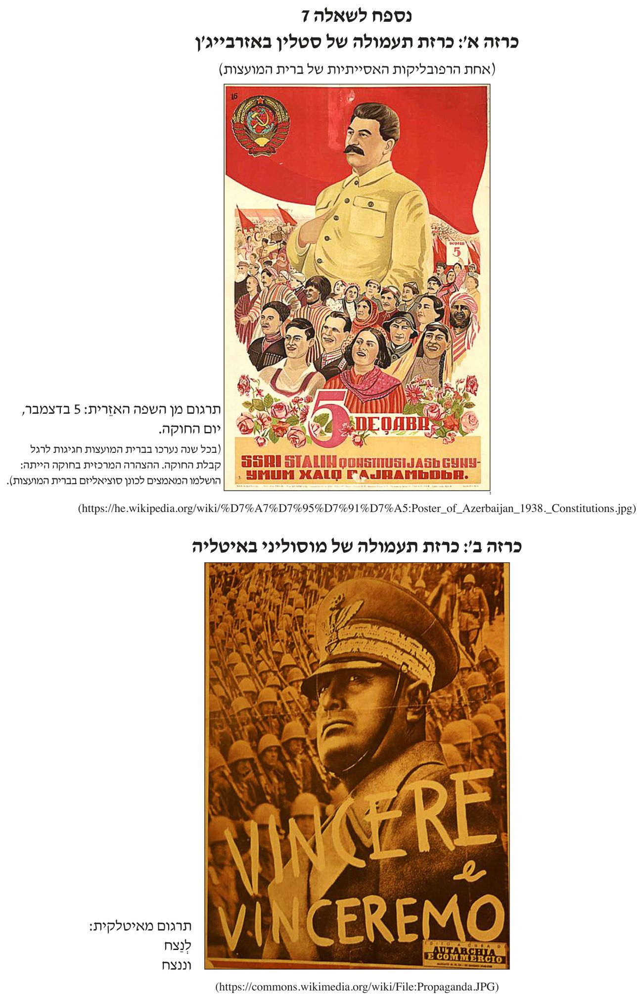</a><figcaption>נספח לשאלה 7 · לחצו על התמונה כדי להגדיל</figcaption></figure>
<div class="bh-sub"><p class="bh-subq" id="lbl-h29q-19s-7-1">ציין עיקרון משותף למשטר הקומוניסטי ולמשטר הפשיסטי, שבא לידי ביטוי בשתי הכרזות.</p>
<textarea class="answer" data-id="h29q-19s-7-1" aria-labelledby="lbl-h29q-19s-7-1" rows="3" placeholder="כתבו כאן את התשובה שלכם..."></textarea></div>
<div class="bh-sub"><p class="bh-subq" id="lbl-h29q-19s-7-2">הסבר כיצד העיקרון שציינת בא לידי ביטוי בכל אחת מן הכרזות.</p>
<textarea class="answer" data-id="h29q-19s-7-2" aria-labelledby="lbl-h29q-19s-7-2" rows="3" placeholder="כתבו כאן את התשובה שלכם..."></textarea></div>
<div class="bh-sub"><p class="bh-subq" id="lbl-h29q-19s-7-3">ציין והסבר כיצד עיקרון אחר של משטרים טוטליטריים בא לידי ביטוי באחת הכרזות, באמצעות רכיב אחד בכרזה הזאת.</p>
<textarea class="answer" data-id="h29q-19s-7-3" aria-labelledby="lbl-h29q-19s-7-3" rows="3" placeholder="כתבו כאן את התשובה שלכם..."></textarea></div>
<p class="bh-ctx"><span class="bh-letter">ב</span> הקומוניזם והנאציזם היו שניהם משטרים טוטליטריים אך האידאולוגיות שלהם היו מנוגדות. למרות הניגוד האידאולוגי, נחתם באוגוסט 1939 הסכם ריבנטרופ-מולוטוב בין גרמניה ובין ברית המועצות.</p>
<div class="bh-sub"><p class="bh-subq" id="lbl-h29q-19s-7-4">הצג הסכם זה. הסבר מדוע הפרה גרמניה הנאצית את ההסכם כעבור שנתיים במבצע ברברוסה (יוני 1941).</p>
<textarea class="answer" data-id="h29q-19s-7-4" aria-labelledby="lbl-h29q-19s-7-4" rows="3" placeholder="כתבו כאן את התשובה שלכם..."></textarea></div>
<div class="bh-qkey" data-qkey="h29-19s-7" hidden></div>
</article>
<article class="bh-q" id="h29-19s-12">
<div class="bh-q-head"><span class="bh-exam">📅 בגרות קיץ תשע&quot;ט</span><span class="bh-qn">שאלה 12 בשאלון</span></div>
<details class="bh-passage"><summary><span aria-hidden="true">📄</span> הקטע שעליו מבוססת השאלה · לחצו כדי לקרוא</summary><div class="bh-passage-body">
<p class="bh-ctx">לפניך שני קטעים העוסקים בהצלת יהודים בתקופת השואה ובהשלכות שהיו לכך לאחר השואה. קרא את שני הקטעים וענה על השאלות שאחריהם, על פי ההוראות.</p>
<p class="bh-src-label">קטע ראשון</p>
<p class="bh-src-text">מאז ומעולם הייתה הכנסייה הקתולית אחד ממרכזי הכוח הגדולים בפולין. למנהיגי הכנסייה היו דרכים גלויות וסמויות שבאמצעותן יכלו להשפיע על המוני המאמינים להיחלץ לעזרת היהודים ולהציל אותם, אך הם לא עשו זאת. עמנואל רינגלבלום (היסטוריון יהודי שחי בורשה בתקופת השואה) כותב במרירות על יחס הכמורה הפולנית כלפי היהודים הנרדפים: “כמעט כל הכמורה הייתה אדישה לטרגדיה של רצח כל העם היהודי... שמענו על מעשיהם האמיצים של כמרים הולנדים היוצאים להגנת יהודים... עמדה דומה נקטו אנשי דת קתולים בצרפת... בבלגיה התפללו בכנסיות לשלום היהודים ואספו בכנסיות תרומות למען ילדי היהודים... [לעומת זאת] בפולין נתקלנו רק במקרים חריגים ביותר של גישה כזו מצד אנשי הכמורה הקתולית&quot;.</p>
<p class="bh-src-text">עם זה, יש לזכור כי מצב הכנסייה בפולין היה קשה לאין ערוך יותר משהיה בצרפת, בבלגיה ובהולנד. בפולין, שלא כמו בארצות אחרות, לא היססו הגרמנים לפגוע בכנסייה הקתולית ולהצר את צעדיהם של כמרים שנחשדו בפעילות חתרנית נגד שלטונות הכיבוש הגרמניים. בפולין לא העניקה גלימת הכומר שום חסינות ללובשיה. הנאצים רדפו את הכמורה הפולנית כפי שרדפו את כל האינטליגנצייה [שכבת המשכילים] הפולנית. אף על פי כן ידועים מעשי הצלה שהשתתפו בהם כמרים, והיו מהם ששילמו על כך בחייהם. בספרות הזיכרונות ובעדויות אפשר למצוא תיאורים מרגשים של כמרים פולנים שנחלצו לעזרת יהודים והעניקו להם מקלט במוסדות שהיו בפיקוחם או הפנו אותם למנזרים. אבל כל פעולות העזרה וההצלה הללו היו יוזמה אישית ונעשו על פי צו מצפונו ואמונתו של כל כומר וכומר, ולא על פי מדיניות או הוראה מגבוה של הממונים עליהם.</p>
<p class="bh-src-text">יש היסטוריונים של הכנסייה הקתולית בפולין שמנסים ללמד זכות על ראשי הכנסייה, לדוגמה הם מזכירים את פועלו של הארכיבישוף של קרקוב, הנסיך אדם ספייחא, שנחשב לסמכות הרוחנית העליונה בפולין. אך מבדיקת העובדות עולה שהוא דאג רק למומרים [יהודים שהתנצרו] וכי היהודים לא עניינו אותו כלל. כך לדוגמה, באוקטובר 1940 הוא ניסה לדבר על ליבם של שלטונות הכיבוש הגרמניים כדי שישחררו את המומרים מן הצורך לענוד את הטלאי הצהוב ומן החובה לגור בגטו עם היהודים: “עושים להם עוול גדול כשמכריחים אותם לגור בקרב ציבור שהם נטשו מרצונם [...] איני יכול להתעלם מתלונותיהם. בלהט ליבי אני מגן על שותפים אלה לאמונתנו המצפים לתמיכת הכנסייה&quot;, כתב. עם זה, ההתערבות למען המומרים לא הועילה מכיוון שעל פי חוקי הגזע הנאציים הם נחשבו ליהודים, אף שהוטבלו לנצרות, ועל כן חלו עליהם אותן ההגבלות שחלו על שאר היהודים ויועד להם אותו גורל.</p>
<p class="bh-cite">(מעובד על פי נחום בוגנר, בחסדי זרים, הצלת ילדים בזהות שאולה בפולין, הוצאת יד ושם, תשכ&quot;א, עמ&#x27; 30-33)</p>
<p class="bh-src-label">קטע שני</p>
<p class="bh-src-text">בתחילת 1946 החליט הרב הרצוג לצאת למסע דיפלומטי לארצות אירופה כדי לטפל בהשבת הילדים היהודים שבידי הנוצרים. הרב יצא לארצות שבהן היה ידוע שילדים יהודים חיים אצל נוצרים והחליט לדרוש מממשלותיהן ומראשי הכנסיות המקומיות את החזרתם. הרב דרש שתי דרישות עיקריות:</p>
<p class="bh-src-text">א. הוא דרש שיפרסמו חוק המחייב כל מוסד או יחיד שברשותו ילדים לדווח את שמותיהם לממשלה ולציין מה הייתה דתם של הילדים.</p>
<p class="bh-src-text">ב. הוא דרש שהקהילות היהודיות או המוסדות היהודיים המיוחדים יהיו האפוטרופסים [בעלי אחריות משפטית] של הילדים היהודים וכן שהמוסדות והקהילות יוכלו לקבל לרשותם את הילדים האלה.</p>
<p class="bh-cite">(שם, עמ&#x27; 211-212)</p>
</div></details>
<div class="bh-sub"><p class="bh-subq" id="lbl-h29q-19s-12-1">על פי מה שלמדת, הצג על מה מבוססת שנאת ישראל המסורתית ועל מה מבוססת האנטישמיות המודרנית.</p>
<textarea class="answer" data-id="h29q-19s-12-1" aria-labelledby="lbl-h29q-19s-12-1" rows="3" placeholder="כתבו כאן את התשובה שלכם..."></textarea></div>
<div class="bh-sub"><p class="bh-subq" id="lbl-h29q-19s-12-2">הסבר כיצד שנאת ישראל המסורתית באה לידי ביטוי בפסקה האחרונה של הקטע הראשון.</p>
<textarea class="answer" data-id="h29q-19s-12-2" aria-labelledby="lbl-h29q-19s-12-2" rows="3" placeholder="כתבו כאן את התשובה שלכם..."></textarea></div>
<div class="bh-sub"><p class="bh-subq" id="lbl-h29q-19s-12-3">הסבר כיצד האנטישמיות המודרנית באה לידי ביטוי בפסקה האחרונה של הקטע הראשון.</p>
<textarea class="answer" data-id="h29q-19s-12-3" aria-labelledby="lbl-h29q-19s-12-3" rows="3" placeholder="כתבו כאן את התשובה שלכם..."></textarea></div>
<div class="bh-qkey" data-qkey="h29-19s-12" hidden></div>
</article>
<article class="bh-q" id="h29-19w-9">
<div class="bh-q-head"><span class="bh-exam">📅 בגרות חורף תשע&quot;ט</span><span class="bh-qn">שאלה 9 בשאלון</span></div>
<p class="bh-ctx">מיד עם עלייתם של הנאצים לשלטון (1933), הם החלו לפעול בדרכים שונות כדי לבודד את היהודים מן החברה.</p>
<div class="bh-sub"><p class="bh-subq" id="lbl-h29q-19w-9-1">ציין והצג שתי דרכים שונות שנקטו הנאצים כדי לממש מטרה זו.</p>
<textarea class="answer" data-id="h29q-19w-9-1" aria-labelledby="lbl-h29q-19w-9-1" rows="3" placeholder="כתבו כאן את התשובה שלכם..."></textarea></div>
<div class="bh-sub"><p class="bh-subq" id="lbl-h29q-19w-9-2">הסבר את השינוי שחל במעמד היהודים בגרמניה בשנת 1935 (עם חקיקת חוקי נירנברג) באמצעות סעיף אחד מחוקי נירנברג.</p>
<textarea class="answer" data-id="h29q-19w-9-2" aria-labelledby="lbl-h29q-19w-9-2" rows="3" placeholder="כתבו כאן את התשובה שלכם..."></textarea></div>
<div class="bh-qkey" data-qkey="h29-19w-9" hidden></div>
</article>
<article class="bh-q" id="h29-18s-7">
<div class="bh-q-head"><span class="bh-exam">📅 בגרות קיץ תשע&quot;ח</span><span class="bh-qn">שאלה 7 בשאלון</span></div>
<h3 class="bh-qtitle">נאציזם</h3>
<p class="bh-ctx">בנספח לשאלה 7 מוצגת כרזה שפרסמו הנאצים בזמן הפלישה של גרמניה לברית המועצות הקומוניסטית (בולשביקית) במלחמת העולם השנייה.</p>
<figure class="bh-fig"><a href="assets/h29/h29-18s-n7-1.jpg" target="_blank" rel="noopener">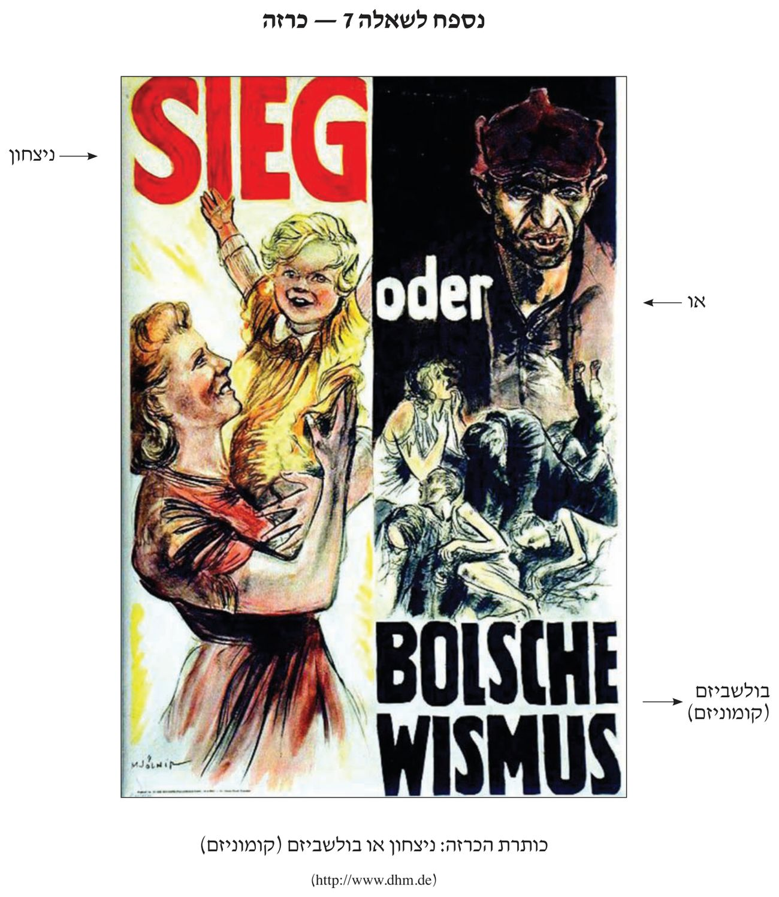</a><figcaption>נספח לשאלה 7 · לחצו על התמונה כדי להגדיל</figcaption></figure>
<div class="bh-sub"><p class="bh-subq" id="lbl-h29q-18s-7-1"><span class="bh-letter">א</span> הצג עיקרון אחד של האידאולוגיה הנאצית, שבא לידי ביטוי בכרזה. הסבר על פי שני רכיבים מן הכרזה כיצד עיקרון זה בא לידי ביטוי בכרזה.</p>
<textarea class="answer" data-id="h29q-18s-7-1" aria-labelledby="lbl-h29q-18s-7-1" rows="3" placeholder="כתבו כאן את התשובה שלכם..."></textarea></div>
<div class="bh-sub"><p class="bh-subq" id="lbl-h29q-18s-7-2"><span class="bh-letter">ב</span> ציין קרב אחד במלחמת העולם השנייה שסימן נקודת מפנה בלחימה נגד הגרמנים (משנת 1942 ואילך), והסבר מדוע קרב זה נחשב לנקודת מפנה במלחמה.</p>
<textarea class="answer" data-id="h29q-18s-7-2" aria-labelledby="lbl-h29q-18s-7-2" rows="3" placeholder="כתבו כאן את התשובה שלכם..."></textarea></div>
<div class="bh-qkey" data-qkey="h29-18s-7" hidden></div>
</article>
<article class="bh-q" id="h29-18s-9">
<div class="bh-q-head"><span class="bh-exam">📅 בגרות קיץ תשע&quot;ח</span><span class="bh-qn">שאלה 9 בשאלון</span></div>
<div class="bh-sub"><p class="bh-subq" id="lbl-h29q-18s-9-1">הצג שתי דרכים שסייעו לנאצים לבסס את שליטתם בגרמניה במהלך שנות השלושים.</p>
<textarea class="answer" data-id="h29q-18s-9-1" aria-labelledby="lbl-h29q-18s-9-1" rows="3" placeholder="כתבו כאן את התשובה שלכם..."></textarea></div>
<div class="bh-sub"><p class="bh-subq" id="lbl-h29q-18s-9-2">הצג שני צעדים שנקטו הנאצים נגד היהודים בגרמניה בתקופה זו.</p>
<textarea class="answer" data-id="h29q-18s-9-2" aria-labelledby="lbl-h29q-18s-9-2" rows="3" placeholder="כתבו כאן את התשובה שלכם..."></textarea></div>
<div class="bh-qkey" data-qkey="h29-18s-9" hidden></div>
</article>
</section>
<section class="bh-panel" role="tabpanel" id="h-shoah" aria-labelledby="tab-shoah" hidden>
<h2 class="bh-panel-title"><span aria-hidden="true">🕯️</span> השואה <small>25 שאלות</small></h2>
<article class="bh-q" id="h29-26w-15">
<div class="bh-q-head"><span class="bh-exam">📅 בגרות חורף תשפ&quot;ו</span><span class="bh-qn">שאלה 15 בשאלון</span></div>
<h3 class="bh-qtitle">בעיית העקורים</h3>
<div class="bh-sub"><p class="bh-subq" id="lbl-h29q-26w-15-1"><span class="bh-letter">א</span> ציינו קושי אחד שהתמודדו איתו פליטי השואה לאחר סיום מלחמת העולם השנייה.</p>
<textarea class="answer" data-id="h29q-26w-15-1" aria-labelledby="lbl-h29q-26w-15-1" rows="3" placeholder="כתבו כאן את התשובה שלכם..."></textarea></div>
<div class="bh-sub"><p class="bh-subq" id="lbl-h29q-26w-15-2">הסבירו כיצד מחנות העקורים היוו מענה חלקי על הקושי שציינתם.</p>
<textarea class="answer" data-id="h29q-26w-15-2" aria-labelledby="lbl-h29q-26w-15-2" rows="3" placeholder="כתבו כאן את התשובה שלכם..."></textarea></div>
<p class="bh-ctx"><span class="bh-letter">ב</span> רוב פליטי השואה התעקשו לעלות לארץ־ישראל.</p>
<div class="bh-sub"><p class="bh-subq" id="lbl-h29q-26w-15-3">על פי מה שלמדתם, הציגו סיבה אחת לכך.</p>
<textarea class="answer" data-id="h29q-26w-15-3" aria-labelledby="lbl-h29q-26w-15-3" rows="3" placeholder="כתבו כאן את התשובה שלכם..."></textarea></div>
<p class="bh-ctx">בנספח לשאלה זו מוצג איור שצייר הקריקטוריסט הבריטי דייוויד לאו. האיור פורסם בעיתונות הבריטית לאחר מלחמת העולם השנייה. עיינו באיור, וענו על השאלות שלפניכם.</p>
<figure class="bh-fig"><a href="assets/h29/h29-26w-n15-2.jpg" target="_blank" rel="noopener">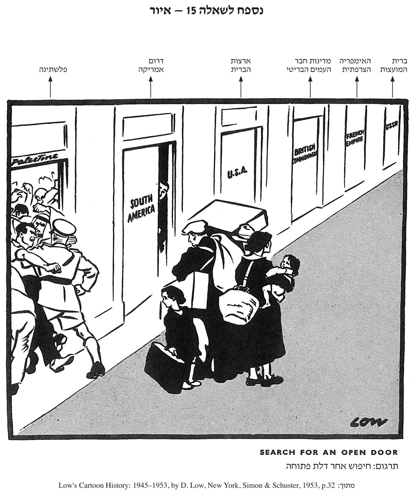</a><figcaption>נספח לשאלה 15 · לחצו על התמונה כדי להגדיל</figcaption></figure>
<div class="bh-sub"><p class="bh-subq" id="lbl-h29q-26w-15-4">על פי האיור, הסבירו את המסר בנוגע לבעיית העקורים. בתשובתכם ציינו שני רכיבים מן האיור, שעליהם התבססתם.</p>
<textarea class="answer" data-id="h29q-26w-15-4" aria-labelledby="lbl-h29q-26w-15-4" rows="3" placeholder="כתבו כאן את התשובה שלכם..."></textarea></div>
<div class="bh-sub"><p class="bh-subq" id="lbl-h29q-26w-15-5">לדעתכם, האם המסר שבא לידי ביטוי באיור מפתיע? בתשובתכם התייחסו לזהות הלאומית של הקריקטוריסט. נמקו את תשובתכם.</p>
<textarea class="answer" data-id="h29q-26w-15-5" aria-labelledby="lbl-h29q-26w-15-5" rows="3" placeholder="כתבו כאן את התשובה שלכם..."></textarea></div>
<div class="bh-qkey" data-qkey="h29-26w-15" hidden></div>
</article>
<article class="bh-q" id="h29-25s-10">
<div class="bh-q-head"><span class="bh-exam">📅 בגרות קיץ תשפ&quot;ה</span><span class="bh-qn">שאלה 10 בשאלון</span></div>
<h3 class="bh-qtitle">הכחשת השואה</h3>
<div class="bh-sub"><p class="bh-subq" id="lbl-h29q-25s-10-1">הציגו שני גורמים לתופעת הכחשת השואה בעולם.</p>
<textarea class="answer" data-id="h29q-25s-10-1" aria-labelledby="lbl-h29q-25s-10-1" rows="3" placeholder="כתבו כאן את התשובה שלכם..."></textarea></div>
<div class="bh-sub"><p class="bh-subq" id="lbl-h29q-25s-10-2">הציגו שתי דוגמאות לטענות של מכחישי שואה.</p>
<textarea class="answer" data-id="h29q-25s-10-2" aria-labelledby="lbl-h29q-25s-10-2" rows="3" placeholder="כתבו כאן את התשובה שלכם..."></textarea></div>
<div class="bh-sub"><p class="bh-subq" id="lbl-h29q-25s-10-3">הביעו את דעתכם: באיזו תופעה טמונה סכנה גדולה יותר – בהכחשת ממדי השואה או בהכחשת השואה בכלל? נמקו את תשובתכם.</p>
<textarea class="answer" data-id="h29q-25s-10-3" aria-labelledby="lbl-h29q-25s-10-3" rows="3" placeholder="כתבו כאן את התשובה שלכם..."></textarea></div>
<div class="bh-qkey" data-qkey="h29-25s-10" hidden></div>
</article>
<article class="bh-q" id="h29-25s-12">
<div class="bh-q-head"><span class="bh-exam">📅 בגרות קיץ תשפ&quot;ה</span><span class="bh-qn">שאלה 12 בשאלון</span></div>
<details class="bh-passage"><summary><span aria-hidden="true">📄</span> הקטע שעליו מבוססת השאלה · לחצו כדי לקרוא</summary><div class="bh-passage-body">
<p class="bh-ctx">לפניכם קטע העוסק בדיונים ההלכתיים של רבני גרמניה על רקע &quot;גזרת השחיטה&quot; (1933) שגזרו הנאצים, ולפיה נאסרה השחיטה בדרכים ההלכתיות המקובלות.</p>
<p class="bh-src-text">מייד עם עליית הנאצים לשלטון ב־1933, נאסרה השחיטה בדרכים ההלכתיות המקובלות. מציאות כזאת, שבה לא היה אפשר להשיג בשר כשר כלל, הייתה עלולה לגרום למרבית יהודי גרמניה לאכול בשר טרף. יש לזכור שבאותה עת הבשר נחשב למרכיב תזונתי חשוב ביותר, ולא ידעו כי אפשר להתקיים בלעדיו. לכן הקפידו שילדים, חולים וזקנים יאכלו בשר. אי לכך, נערכו דיונים הלכתיים בנוגע לאפשרות להתיר שינויים והקלות בדרכי השחיטה. הדיונים התנהלו בין הרבנים הנאו־אורתודוקסים בגרמניה כדי שההחלטה שתתקבל תהיה אחידה. היו רבנים שחיפשו דרך להתיר שינויים בדרכי השחיטה, והיו שהתנגדו לכל שינוי הלכתי. הרבנים שחיפשו דרך להתיר שינויים בדרכי השחיטה, שאפו למתוח את גבולות ההלכה ככל האפשר כדי להציל יהודים בגרמניה מאכילת טרפות. החשש היה שרבים מן היהודים בגרמניה לא יעמדו בניסיון, ויוותרו בכלל על שמירת הכשרות. הרבנים המקילים הגיעו בדרך כלל מקהילות מעורבות, שבהן היו הן יהודים שומרי מצוות הן יהודים שאינם שומרי מצוות. הם שאפו למתוח את הדין ולהיות גמישים ככל האפשר במסגרת ההלכה כדי למנוע הידרדרות נוספת בשמירת ההלכה.</p>
<p class="bh-src-text">לעומת זאת היו רבנים ששללו כל שינוי בדרכי השחיטה, מתוך חשש ששינוי מן הנורמות ההלכתיות יוביל לזלזול בשאר ההלכות. על פי גישה זו, דווקא בזמן של &quot;דור פרוץ&quot; בעבירות [דור שאינו מקפיד על שמירת מצוות], כל הקלה במצוות תוליד תוצאות הרסניות בנוגע לשמירת המצוות. כך לדוגמה הדגיש הרב יוסף ברויאר כי דווקא בדור זה, חובת הרבנים לחזק את הפרצות ולא לתת יד לשום היתר.</p>
<p class="bh-src-text">שיקול נוסף שהשפיע על הנטייה של רבני גרמניה לחפש דרכים להקל או לאסור, הייתה – אם התקופה נחשבת ל&quot;שעת שמד&quot;, כלומר תקופה שבה המטרה העיקרית של השלטון היא להעביר את היהודים על דתם [לגרום להמרת דת]. בהלכה נפסק כי ב&quot;שעת שמד&quot; מצווה למות על קידוש השם אפילו על מצווה קלה [&quot;ייהרג ואל יעבור&quot;]. היו רבנים שראו בתקופה זו &quot;שעת שמד&quot;, ולכן גזרת השחיטה נחשבה בעיניהם ל&quot;גזרה דתית&quot;. כך לדוגמה פירש זאת הרב זאב צבי הכהן קליין: &quot;שונאינו יחשבו שעלה בידם להעבירנו על הדת... ויאמרו שהיהודים מבטלים דתם לגמרי מפני גזרתם&quot;. ולכן אסרו שינויים בהלכות השחיטה.</p>
<p class="bh-src-text">לעומת זאת, היו רבנים שטענו שגזרה זו לא דומה לגזרות דת בימים עברו. כך לדוגמה, סבר הרב יצחק אונא כי גזרת השחיטה לא נועדה להעביר את היהודים על דתם אלא היא ביטוי למדיניות כוללת של התנכלות והצרת צעדים של היהודים בכל תחומי החיים:</p>
<p class="bh-src-text">&quot;וכשם שמסירים המלמדים [המורים] ממקומם, וגוזרים חרם שלא לקנות אצל הסוחרים היהודים, והכול כדי לצער אותם ולהסיר מהם מחייתם, כך מה שאוסרים השחיטה אינו רק [אלא] לצער אותנו&quot;.</p>
<p class="bh-src-text">גם הרב ויינברג סבר כי מטרת הגזרה אינה העברה על הדת: &quot;אינם כופים אותנו לאכול בשר&quot;. הרב אפרים מאיר לאסמאנן אף הוסיף ראיות מחוקי נירנברג, כדי להוכיח שאין השעה &quot;שעת שמד&quot;. במכתב משנת 1937 ציין הרב כי אין כוונת הגרמנים להעביר על הדת, שכן, לדבריו, היחס של הנאצים כלפי יהודים מומרים [יהודים שהתנצרו] אינו שונה מן היחס שלהם כלפי יהודים שומרי מצוות. בסופו של דבר — לאחר התייעצות של רבני גרמניה עם רבני פולין וליטא — התקבלה החלטה סופית ולפיה אין לשנות כלל את הלכות השחיטה, והסוגיה ההלכתית ירדה מהפרק. למרות זאת, בחר הרב ויינברג — לאחר השואה — להתייחס למכלול השיקולים ההלכתיים בספרו &quot;שרידי אש&quot;. לדבריו: &quot;ברוך השם שהתשובות ההן חדל להיות להן ערך מעשי כלשהו... ולא נמנעתי מלפרסמן משום חשיבותן ההיסטורית&quot;.</p>
<p class="bh-cite">(מעובד על פי שרה קפלן, דיונים הלכתיים סביב גזירת השחיטה בגרמניה הנאצית, מכלול, גיליון י&quot;ט, 2000)</p>
</div></details>
<p class="bh-ctx">בשנות השלושים בגרמניה היו רבנים שסברו כי תקופה זו נחשבת &quot;שעת שמד&quot;, כלומר תקופה שבה יהודים נדרשים לשמור את מצוות ה&#x27; אפילו אם הדבר יעלה להם בחייהם.</p>
<div class="bh-sub"><p class="bh-subq" id="lbl-h29q-25s-12-1">על פי הקטע, הסבירו כיצד השפיעה דעה זו על עמדתם ההלכתית של רבנים אלה בנוגע ל&quot;גזרת השחיטה&quot;.</p>
<textarea class="answer" data-id="h29q-25s-12-1" aria-labelledby="lbl-h29q-25s-12-1" rows="3" placeholder="כתבו כאן את התשובה שלכם..."></textarea></div>
<div class="bh-sub"><p class="bh-subq" id="lbl-h29q-25s-12-2">על פי מה שלמדתם, הסבירו מדוע סבר הרב ניסנבוים בתקופת הגטאות כי אין מדובר ב&quot;שעת שמד&quot;.</p>
<textarea class="answer" data-id="h29q-25s-12-2" aria-labelledby="lbl-h29q-25s-12-2" rows="3" placeholder="כתבו כאן את התשובה שלכם..."></textarea></div>
<div class="bh-sub"><p class="bh-subq" id="lbl-h29q-25s-12-3">הציגו את שתי המשמעויות של רעיון &quot;קידוש החיים&quot;, על רקע המציאות הקשה בגטאות.</p>
<textarea class="answer" data-id="h29q-25s-12-3" aria-labelledby="lbl-h29q-25s-12-3" rows="3" placeholder="כתבו כאן את התשובה שלכם..."></textarea></div>
<div class="bh-qkey" data-qkey="h29-25s-12" hidden></div>
</article>
<article class="bh-q" id="h29-25w-7">
<div class="bh-q-head"><span class="bh-exam">📅 בגרות חורף תשפ&quot;ה</span><span class="bh-qn">שאלה 7 בשאלון</span></div>
<h3 class="bh-qtitle">התנגדות יהודית</h3>
<p class="bh-ctx">אחת הדרכים להתנגד לנאצים בתקופת השואה הייתה באמצעות מאבק מזוין.</p>
<div class="bh-sub"><p class="bh-subq" id="lbl-h29q-25w-7-1">הסבירו מדוע עד סוף 1941 לא חשבו היהודים על אפשרות של מאבק מזוין.</p>
<textarea class="answer" data-id="h29q-25w-7-1" aria-labelledby="lbl-h29q-25w-7-1" rows="3" placeholder="כתבו כאן את התשובה שלכם..."></textarea></div>
<div class="bh-sub"><p class="bh-subq" id="lbl-h29q-25w-7-2">הסבירו מדוע הצעירים חברי תנועות הנוער הם אלה שארגנו בדרך כלל את המאבק המזוין.</p>
<textarea class="answer" data-id="h29q-25w-7-2" aria-labelledby="lbl-h29q-25w-7-2" rows="3" placeholder="כתבו כאן את התשובה שלכם..."></textarea></div>
<div class="bh-sub"><p class="bh-subq" id="lbl-h29q-25w-7-3">ציינו את המטרה שעמדה לנגד עיניהם של חברי ארגוני המחתרת בגטו בבואם לארגן מאבק מזוין.</p>
<textarea class="answer" data-id="h29q-25w-7-3" aria-labelledby="lbl-h29q-25w-7-3" rows="3" placeholder="כתבו כאן את התשובה שלכם..."></textarea></div>
<div class="bh-sub"><p class="bh-subq" id="lbl-h29q-25w-7-4">הציגו שני קשיים שעמדו בפניהם.</p>
<textarea class="answer" data-id="h29q-25w-7-4" aria-labelledby="lbl-h29q-25w-7-4" rows="3" placeholder="כתבו כאן את התשובה שלכם..."></textarea></div>
<div class="bh-qkey" data-qkey="h29-25w-7" hidden></div>
</article>
<article class="bh-q" id="h29-25w-8">
<div class="bh-q-head"><span class="bh-exam">📅 בגרות חורף תשפ&quot;ה</span><span class="bh-qn">שאלה 8 בשאלון</span></div>
<h3 class="bh-qtitle">שארית הפלטה</h3>
<p class="bh-ctx">אחרי השואה ניסו בני משפחה וארגונים יהודיים לאתר ולהציל ילדים שהוחבאו בבתי נוצרים ובמנזרים.</p>
<div class="bh-sub"><p class="bh-subq" id="lbl-h29q-25w-8-1">הציגו שניים מן הקשיים באיתור הילדים או בהשבתם למשפחותיהם.</p>
<textarea class="answer" data-id="h29q-25w-8-1" aria-labelledby="lbl-h29q-25w-8-1" rows="3" placeholder="כתבו כאן את התשובה שלכם..."></textarea></div>
<div class="bh-sub"><p class="bh-subq" id="lbl-h29q-25w-8-2">הסבירו מדוע עם סיום המלחמה נהפכו כמה ממחנות המשוחררים למחנות עקורים.</p>
<textarea class="answer" data-id="h29q-25w-8-2" aria-labelledby="lbl-h29q-25w-8-2" rows="3" placeholder="כתבו כאן את התשובה שלכם..."></textarea></div>
<div class="bh-sub"><p class="bh-subq" id="lbl-h29q-25w-8-3">הסבירו כיצד במחנות העקורים בא לידי ביטוי הרצון העז להשתקם ולחזור לחיים.</p>
<textarea class="answer" data-id="h29q-25w-8-3" aria-labelledby="lbl-h29q-25w-8-3" rows="3" placeholder="כתבו כאן את התשובה שלכם..."></textarea></div>
<div class="bh-qkey" data-qkey="h29-25w-8" hidden></div>
</article>
<article class="bh-q" id="h29-24s-6">
<div class="bh-q-head"><span class="bh-exam">📅 בגרות קיץ תשפ&quot;ד</span><span class="bh-qn">שאלה 6 בשאלון</span></div>
<h3 class="bh-qtitle">חסידי אומות העולם</h3>
<p class="bh-ctx">חנוך יצחקי, שורד שואה, סיפר בעדותו על המשפחה בבלגיה שהצילה אותו: “לאחר התייעצות עם כומר הכפר, הודיעו בני המשפחה שהם מוכנים להעניק בביתם מסתור לילדים יהודים, תמורת תשלום, ובתנאי שיתנצרו&quot;.</p>
<p class="bh-cite">(ארכיון &quot;יד ושם&quot;, 0.33, 10005)</p>
<div class="bh-sub"><p class="bh-subq" id="lbl-h29q-24s-6-1">הציגו מי נחשב &quot;חסיד אומות העולם&quot;.</p>
<textarea class="answer" data-id="h29q-24s-6-1" aria-labelledby="lbl-h29q-24s-6-1" rows="3" placeholder="כתבו כאן את התשובה שלכם..."></textarea></div>
<div class="bh-sub"><p class="bh-subq" id="lbl-h29q-24s-6-2">הסבירו אם המשפחה שהצילה את חנוך יצחקי זכאית לתואר &quot;חסיד אומות העולם&quot;.</p>
<textarea class="answer" data-id="h29q-24s-6-2" aria-labelledby="lbl-h29q-24s-6-2" rows="3" placeholder="כתבו כאן את התשובה שלכם..."></textarea></div>
<div class="bh-sub"><p class="bh-subq" id="lbl-h29q-24s-6-3">ציינו את שם המדינה שבה מספר האנשים שהוענק להם התואר &quot;חסיד אומות העולם&quot; הוא הגדול ביותר. הסבירו מדוע נתון זה מפתיע.</p>
<textarea class="answer" data-id="h29q-24s-6-3" aria-labelledby="lbl-h29q-24s-6-3" rows="3" placeholder="כתבו כאן את התשובה שלכם..."></textarea></div>
<div class="bh-sub"><p class="bh-subq" id="lbl-h29q-24s-6-4">ציינו שם של חסיד אומות העולם שלמדתם עליו ונגע לליבכם במיוחד. הסבירו את בחירתכם על סמך נסיבות חייו או פועלו.</p>
<textarea class="answer" data-id="h29q-24s-6-4" aria-labelledby="lbl-h29q-24s-6-4" rows="3" placeholder="כתבו כאן את התשובה שלכם..."></textarea></div>
<div class="bh-qkey" data-qkey="h29-24s-6" hidden></div>
</article>
<article class="bh-q" id="h29-24s-12">
<div class="bh-q-head"><span class="bh-exam">📅 בגרות קיץ תשפ&quot;ד</span><span class="bh-qn">שאלה 12 בשאלון</span></div>
<details class="bh-passage"><summary><span aria-hidden="true">📄</span> הקטע שעליו מבוססת השאלה · לחצו כדי לקרוא</summary><div class="bh-passage-body">
<p class="bh-ctx">לפניכם שלושה קטעים העוסקים בשואת יהודי הונגריה, ואחריהם שאלות.</p>
<p class="bh-src-label">קטע א</p>
<p class="bh-src-text">הגזרות נגד יהודי הונגריה החלו הרבה לפני הכיבוש הגרמני בשנת 1944. כבר בשנים 1938 ו־1939 חוקקה ממשלת הונגריה חוקים נגד היהודים שהפכו אותם לאזרחים מדרגה שנייה. חלק מן החוקים האלה כוונו גם נגד מומרים (יהודים שהמירו את דתם לנצרות). החוקים כללו הגבלות של זכויות האזרח ושל העיסוק המקצועי, ונקבעו בהם הוראות לעידוד הגירה מהונגריה. בשנת 1940 הוחל בגיוס של גברים יהודים בגילים 18–60 לעבודות כפייה ב&quot;פלוגות העבודה&quot; במסגרת הצבא ההונגרי. בפלוגות אלה הופרדו היהודים מכלל המגויסים – נאסר עליהם לשרת במסגרת צבאית רגילה, נלקחו מהם הדרגות הצבאיות וכלי הנשק, והם נצטוו לבצע עבודות כפייה. נוסף לכך פורסמו צווים אשר הוציאו את היהודים ממסגרת החוק הצבאי, והיוו פתח להפיכת חייהם לחיי עבדים. נקבע כי היהודים יסומנו בסרט שרוול צהוב, והמומרים – בסרט לבן, וכי הם ילבשו בגדים אזרחיים ויחבשו כומתה צבאית ללא סמל. הפלוגות היהודיות היו כלי מרכזי בדחיקת היהודים מן החברה ההונגרית.</p>
<p class="bh-src-text">עם הצטרפות הצבא ההונגרי לצבא הגרמני במלחמה, ולאחר פלישתה של גרמניה לברית המועצות במבצע &quot;ברברוסה&quot; (יוני 1941), נשלחו לחזית המזרח עשרות אלפי יהודים מן הפלוגות היהודיות. ההערכה היא כי מחציתם נספו (מתו) בגלל ירי, פריקת מוקשים, עייפות ורעב, והיעדר בגדים ונעליים בקור המקפיא. כמו כן בחזית המזרחית הגיעו המפקדים ההונגרים לנקודות שפל של אכזריות, ושיאן – הפיכת היהודים למושכי העגלות וקרונות האספקה במקום הסוסים, וזאת בעליות התלולות ובאקלים הקשה: “הם הפכו אותנו לסוסים... במשך הזמן הפכה משיכת העגלות למנהג של קבע&quot;. האירוע האכזרי ביותר כלפי הפלוגות היהודיות היה בעת התבוסה של היחידות ההונגריות לרוסים בינואר 1943. בעת הנסיגה ההמונית ביצעו ההונגרים רציחות המוניות יזומות של יהודים מפלוגות העבודה. כך לדוגמה ב־30/4/1943 הוצת במתכוון אסם ליד ז’יטומיר, ובו 800 עובדי כפייה יהודים, והנמלטים נורו בידי השומרים ההונגרים.</p>
<p class="bh-src-label">קטע ב</p>
<p class="bh-src-text">מגויסים יהודים בצבא ההונגרי מצאו דרך להפנות שאלות הלכתיות לרבנים. המקרים ה”קלים&quot; היו מקרים שבהם חשו השואלים כי אינם במצב של “פיקוח נפש&quot; אך חששו שאם ימשיכו להתנזר ממאכלים אסורים יגיעו למצב של חולשה, מצב המכונה בהלכה “פיקוח נפש לאחר זמן&quot;. שאלה כזו הופנתה לאחד מרבני בודפשט. הרב התיר אכילה של מאכלים אסורים אך הציע דרכים לצמצם את האיסור על ידי אכילה בדרך שאינה מקובלת, כמו הכנסת טעם מר במאכל או אכילה “בשיעורין&quot;, כלומר במנות קטנות. במקרים אחרים, כאשר נאלצו לחלל את השבת, העלו יהודי הפלוגות רעיונות מקוריים כיצד לעשות “זכר&quot; לשבת. אחד מהם היה לקבוע רגע מיוחד של שביתה ממלאכה כדי שיסמל את קדושת השבת. כך לדוגמה תיאר אחד המגויסים: “יום אחד, בעיצומה של עבודה קשה ביום השבת צעקתי בקול – אחיי, התדעו שהיום שבת קודש? על כן נניח לרגע אחד את כלי החפירה, לקיים ‘ושמרו בני ישראל את השבת&#x27; וכן עשו. שמעו בקולי ונתנו כולם את כלי החפירה על הארץ. ושמרנו אז כולנו יחד בלב שלם את שבת קודש רגע אחד&quot;. במעמד זה נכחו לדבריו כמאתיים יהודים, ולימים אמר לו אחד מהם שהיה זה “כמו מעמד הר סיני&quot;.</p>
<p class="bh-src-label">קטע ג</p>
<p class="bh-src-text">ככל שהתקרבה מלחמת העולם השנייה לסיומה, דומה היה כי קהילת יהודי הונגריה היא שארית הפלטה של העם היהודי באירופה. ואולם, הגרמנים לא ויתרו על השמדת הקהילה הגדולה האחרונה שנותרה, גם לאחר התקדמות הצבא האדום (הסובייטי) עד גבול הונגריה. למעשה, נראה כי השאיפה לרצוח את יהודי הונגריה השפיעה על החלטת הנאצים לכבוש את הונגריה, ועל כן הקדישו עד הרגע האחרון משאבים ניכרים להשלמת משימתם. הם גייסו לשם כך את כל מנגנון הרצח: מנהלת האס־אס באושוויץ תכננה את בואם לאושוויץ של כ־14,000 יהודים מהונגריה מדי יום, והרחיבה את מנגנון ההשמדה כדי להבטיח מבצע רצח יעיל, דמוי סרט נע, בהיקף ובמהירות חסרי תקדים. הנאצים בנו מסילה חדשה שהובילה היישר לאושוויץ, הוכנו בורות גדולים לשרפת הגופות, ומספר אנשי הזונדרקומנדו (שעסקו בשרפת הגופות) הוגדל. בתוך חודשיים בלבד, מ־15 במאי ועד 8 ביולי 1944, ביצעו הנאצים באושוויץ רצח נרחב שכמותו לא נודע ושבמהלכו נרצחו כ־425,000 יהודי הונגריה.</p>
<p class="bh-cite">(מעובד על פי: א&#x27; פרבשטין, בסתר המדרגה – היהדות האורתודוקסית בהונגריה נוכח השואה, מוסד הרב קוק, תשפ&quot;ג, עמ&#x27; 53, 61–65, 69, 74–76, 86, 237, 240)</p>
</div></details>
<div class="bh-sub"><p class="bh-subq" id="lbl-h29q-24s-12-1">על פי מה שלמדתם, הציגו את שתי המשמעויות שייחסו יהודים לרעיון “קידוש החיים&quot; בתקופת השואה.</p>
<textarea class="answer" data-id="h29q-24s-12-1" aria-labelledby="lbl-h29q-24s-12-1" rows="3" placeholder="כתבו כאן את התשובה שלכם..."></textarea></div>
<div class="bh-sub"><p class="bh-subq" id="lbl-h29q-24s-12-2">הסבירו כיצד שתי המשמעויות האלה באות לידי ביטוי בקטע ב.</p>
<textarea class="answer" data-id="h29q-24s-12-2" aria-labelledby="lbl-h29q-24s-12-2" rows="3" placeholder="כתבו כאן את התשובה שלכם..."></textarea></div>
<div class="bh-sub"><p class="bh-subq" id="lbl-h29q-24s-12-3">על פי מה שלמדתם, הסבירו כיצד אחת מן המשמעויות האלה באה לידי ביטוי בפועלו של האדמו&quot;ר מפיאסצנה.</p>
<textarea class="answer" data-id="h29q-24s-12-3" aria-labelledby="lbl-h29q-24s-12-3" rows="3" placeholder="כתבו כאן את התשובה שלכם..."></textarea></div>
<div class="bh-qkey" data-qkey="h29-24s-12" hidden></div>
</article>
<article class="bh-q" id="h29-24w-14">
<div class="bh-q-head"><span class="bh-exam">📅 בגרות חורף תשפ&quot;ד</span><span class="bh-qn">שאלה 14 בשאלון</span></div>
<h3 class="bh-qtitle">שארית הפלטה ומחנות העקורים</h3>
<p class="bh-ctx"><span class="bh-letter">א</span> בנספח לשאלה 14 מוצג תצלום של תלמידים ומורים במחנה העקורים &quot;יגר קסרנה&quot; בעיר קסל בגרמניה. התבוננו בתצלום וענו על השאלה.</p>
<figure class="bh-fig"><a href="assets/h29/h29-24w-n14-1.jpg" target="_blank" rel="noopener">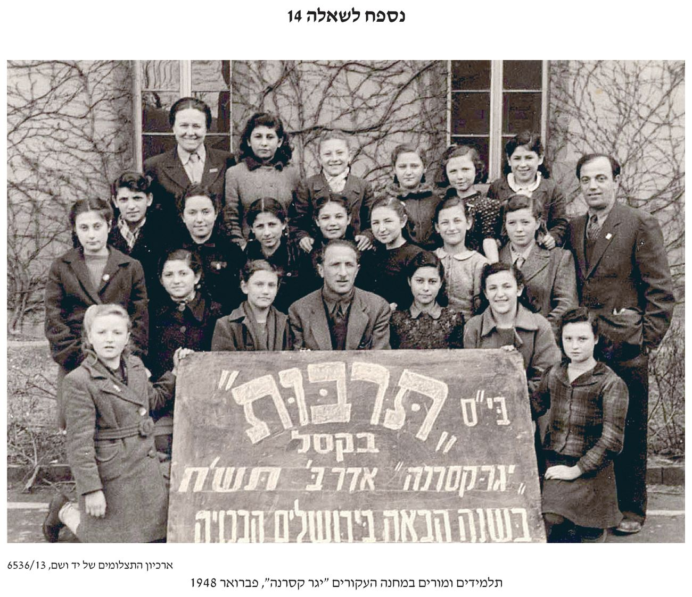</a><figcaption>נספח לשאלה 14 · לחצו על התמונה כדי להגדיל</figcaption></figure>
<div class="bh-sub"><p class="bh-subq" id="lbl-h29q-24w-14-1">על פי מה שלמדתם, הציגו שתי סיבות שבגללן הגיעו ניצולי שואה למחנות העקורים.</p>
<textarea class="answer" data-id="h29q-24w-14-1" aria-labelledby="lbl-h29q-24w-14-1" rows="3" placeholder="כתבו כאן את התשובה שלכם..."></textarea></div>
<div class="bh-sub"><p class="bh-subq" id="lbl-h29q-24w-14-2">הסבירו באמצעות שני רכיבים מן התצלום מה אפשר ללמוד על הטיפול בילדים וחינוכם במחנה העקורים יגר קסרנה. בתשובתכם ציינו את שני הרכיבים שעליהם התבססתם (סך הכול – שני הסברים).</p>
<textarea class="answer" data-id="h29q-24w-14-2" aria-labelledby="lbl-h29q-24w-14-2" rows="3" placeholder="כתבו כאן את התשובה שלכם..."></textarea></div>
<div class="bh-sub"><p class="bh-subq" id="lbl-h29q-24w-14-3">על פי מה שלמדתם, הסבירו מדוע לאחר השואה היה קשה מאוד לאתר ולהביא ילדים יהודים למחנות העקורים.</p>
<textarea class="answer" data-id="h29q-24w-14-3" aria-labelledby="lbl-h29q-24w-14-3" rows="3" placeholder="כתבו כאן את התשובה שלכם..."></textarea></div>
<p class="bh-ctx"><span class="bh-letter">ב</span> שרגא ריקובר היה ילד שהגיע עם אימו מפולין למחנה העקורים, בנתיבי &quot;תנועת הבריחה&quot;. שרגא סיפר בעדותו:</p>
<blockquote class="bh-quote">&quot;קיבלנו בית מגורים במקום. חדר אחד בלבד עם שכנים נחמדים. בחוץ מול הבית היה רמקול שהשמיע חדשות מארץ־ישראל. הלכתי לבית הספר בפעם הראשונה בחיי, בגיל 11. למדנו עברית וכל מה ששייך לבית ספר יסודי. התקדמתי יפה מאוד בלימודים. בתוך שנה סיימתי שתי כיתות.&quot;</blockquote>
<p class="bh-cite">(עדות שרגא ריקובר מתוך ארכיון יד ושם, 10183)</p>
<div class="bh-sub"><p class="bh-subq" id="lbl-h29q-24w-14-4">על פי דבריו של שרגא ריקובר, הציגו קושי אחד שהיה לילדים במחנה העקורים.</p>
<textarea class="answer" data-id="h29q-24w-14-4" aria-labelledby="lbl-h29q-24w-14-4" rows="3" placeholder="כתבו כאן את התשובה שלכם..."></textarea></div>
<p class="bh-ctx">שרגא מתייחס בדבריו לבית הספר במחנה העקורים.</p>
<div class="bh-sub"><p class="bh-subq" id="lbl-h29q-24w-14-5">על פי מה שלמדתם, הסבירו מדוע מאמצי השיקום התרבותי והרוחני במחנות העקורים הושקעו בעיקר בתחום החינוך.</p>
<textarea class="answer" data-id="h29q-24w-14-5" aria-labelledby="lbl-h29q-24w-14-5" rows="3" placeholder="כתבו כאן את התשובה שלכם..."></textarea></div>
<div class="bh-qkey" data-qkey="h29-24w-14" hidden></div>
</article>
<article class="bh-q" id="h29-23w-7">
<div class="bh-q-head"><span class="bh-exam">📅 בגרות חורף תשפ&quot;ג</span><span class="bh-qn">שאלה 7 בשאלון</span></div>
<h3 class="bh-qtitle">קידוש החיים בגטאות</h3>
<div class="bh-sub"><p class="bh-subq" id="lbl-h29q-23w-7-1">ציינו שתי מטרות של הנאצים בהקמת הגטאות.</p>
<textarea class="answer" data-id="h29q-23w-7-1" aria-labelledby="lbl-h29q-23w-7-1" rows="3" placeholder="כתבו כאן את התשובה שלכם..."></textarea></div>
<div class="bh-sub"><p class="bh-subq" id="lbl-h29q-23w-7-2">הציגו את שתי המשמעויות של רעיון &quot;קידוש החיים&quot; בעיני היהודים בגטאות.</p>
<textarea class="answer" data-id="h29q-23w-7-2" aria-labelledby="lbl-h29q-23w-7-2" rows="3" placeholder="כתבו כאן את התשובה שלכם..."></textarea></div>
<div class="bh-sub"><p class="bh-subq" id="lbl-h29q-23w-7-3">הציגו שתי פעולות שעשו יהודים בגטאות, שכל אחת מהן מבטאת את אחת המשמעויות (סך הכול – שתי פעולות).</p>
<textarea class="answer" data-id="h29q-23w-7-3" aria-labelledby="lbl-h29q-23w-7-3" rows="3" placeholder="כתבו כאן את התשובה שלכם..."></textarea></div>
<div class="bh-qkey" data-qkey="h29-23w-7" hidden></div>
</article>
<article class="bh-q" id="h29-23w-14">
<div class="bh-q-head"><span class="bh-exam">📅 בגרות חורף תשפ&quot;ג</span><span class="bh-qn">שאלה 14 בשאלון</span></div>
<h3 class="bh-qtitle">נאציזם, שואה ומלחמת העולם השנייה</h3>
<p class="bh-ctx">בנספח לשאלה זו מוצגת קריקטורה שפורסמה בשנת 1944.</p>
<figure class="bh-fig"><a href="assets/h29/h29-23w-n14-1.jpg" target="_blank" rel="noopener">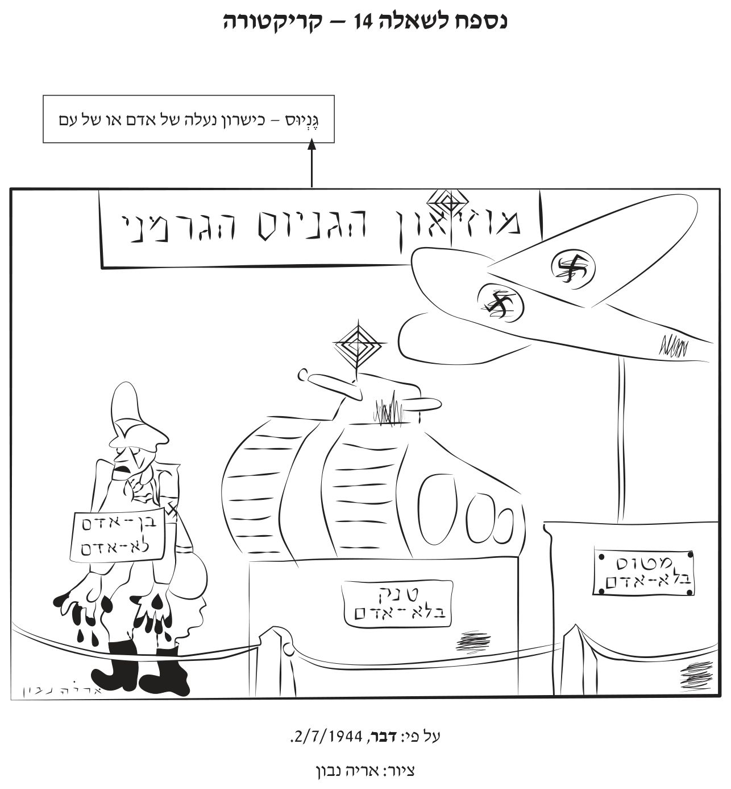</a><figcaption>נספח לשאלה 14 · לחצו על התמונה כדי להגדיל</figcaption></figure>
<div class="bh-sub"><p class="bh-subq" id="lbl-h29q-23w-14-1"><span class="bh-letter">א</span> הציגו את המסר של יוצר הקריקטורה, על פי שני רכיבים בה.</p>
<textarea class="answer" data-id="h29q-23w-14-1" aria-labelledby="lbl-h29q-23w-14-1" rows="3" placeholder="כתבו כאן את התשובה שלכם..."></textarea></div>
<div class="bh-sub"><p class="bh-subq" id="lbl-h29q-23w-14-2">על פי מה שלמדתם, הציגו את תורת הגזע שנמצאת בבסיס האידאולוגיה הנאצית.</p>
<textarea class="answer" data-id="h29q-23w-14-2" aria-labelledby="lbl-h29q-23w-14-2" rows="3" placeholder="כתבו כאן את התשובה שלכם..."></textarea></div>
<div class="bh-sub"><p class="bh-subq" id="lbl-h29q-23w-14-3">הסבירו את דעתכם בנוגע למסר של הקריקטורה: האם הוא תואם את תורת הגזע או סותר אותה? בססו את תשובתכם על הקריקטורה ועל מה שלמדתם בנוגע לתורת הגזע.</p>
<textarea class="answer" data-id="h29q-23w-14-3" aria-labelledby="lbl-h29q-23w-14-3" rows="3" placeholder="כתבו כאן את התשובה שלכם..."></textarea></div>
<div class="bh-sub"><p class="bh-subq" id="lbl-h29q-23w-14-4"><span class="bh-letter">ב</span> הציגו עיקרון נוסף של האידאולוגיה הנאצית, מלבד תורת הגזע, וציינו פעולה אחת של הנאצים שבוצעה בשם עיקרון זה במהלך מלחמת העולם השנייה.</p>
<textarea class="answer" data-id="h29q-23w-14-4" aria-labelledby="lbl-h29q-23w-14-4" rows="3" placeholder="כתבו כאן את התשובה שלכם..."></textarea></div>
<div class="bh-qkey" data-qkey="h29-23w-14" hidden></div>
</article>
<article class="bh-q" id="h29-21s-11">
<div class="bh-q-head"><span class="bh-exam">📅 בגרות קיץ תשפ&quot;א</span><span class="bh-qn">שאלה 11 בשאלון</span></div>
<details class="bh-passage"><summary><span aria-hidden="true">📄</span> הקטע שעליו מבוססת השאלה · לחצו כדי לקרוא</summary><div class="bh-passage-body">
<p class="bh-ctx">לפניך קטע העוסק בהתמודדות עם מגפת הטיפוס בגטו ורשה. השאלות 11-13 בעמוד הבא נוגעות לקטע שלפניך.</p>
<p class="bh-src-text">מינואר 1941, כחודש וחצי לאחר הכניסה לגטו ורשה, החלה עלייה במספר החולים והמתים ממחלת טיפוס הבהרות. השלטונות הגרמנים הבינו כי מדובר במגפה מידבקת וכי יש להילחם בה כדי שלא תתפשט לצד הלא־יהודי של ורשה. הצעדים שגזרו הנאצים היו הסגר של דיירי הבניינים באזור שבו התגלה חולה טיפוס, חיטוי הדירות והבגדים ושליחת אלפי הדיירים לבית מרחץ.</p>
<p class="bh-src-text">במקרים רבים נסגרו אלפי תושבים באותו מקום, על פי הוראת הגרמנים ובהשגחת נציגים מטעם היודנראט. במציאות החיים בגטו מצבן של המשפחות, שכבר עוד קודם לכן היו נתונות במצוקה נוראה, הידרדר אף יותר בגלל חוסר היכולת להתפרנס. בעת ההסגר הייתה האוכלוסייה מנועה אפילו מקבלת המרק המימי מהמטבח העממי. לעיתים לאחר 14 יום הוטל שוב הסגר על האזור, מכיוון ששוב חלה אחד הדיירים. לדוגמה, רחוב קרוכמלנה, שבו גרו כ־20,000 יהודים, נסגר למשך 23 ימים. רק הודות ליהודים מאזורים אחרים, שיצרו קשר חשאי עם האוכלוסייה, ניצלו אלפי אנשים מרעב. כדי להימנע מההסגר, עשו דיירי הבניינים מאמצים רבים כדי להסתיר את החולים. לדעת הרופאים היהודים בגטו, ההסגרים האלה החישו את הפצת מחלת הטיפוס והעצימו את הסבל, שכן היה ידוע שמצבים של מחסור מסייעים בהפצת מחלות. נוסף על ההסגר, נעשו פעולות חיטוי בדירות. אלה שהצליחו לשלם שוחד, קיבלו פטור מחיטוי דירתם, וכך התפשטו הכינים (שהפיצו את המחלה) בגטו. המרססים והמחטאים, שנשלחו מטעם היודנראט, גררו רהיטים וציוד מן הבית החוצה והעלו אותם באש. לעיתים במקום לרסס את הרצפות הם שפכו גיגיות מלאות מים ללא ליזול, כדי שיהיה אפשר למכור את הליזול ולהרוויח ממנו כסף. חבילות הבגדים וכלי המיטה שהיו מיועדים להגיע אל תנורי החיטוי, הוטלו זמן רב בחצר, והדיירים ישנו בינתיים על שקי קש ומזרנים בחוץ, חשופים לקור, ללא ביגוד מתאים. לצוות המחטאים שולמה משכורת זעומה מטעם היודנראט באיחור של שישה חודשים, ולכן לעיתים הם מכרו או גנבו חלק מהכביסה. פעולות החיטוי בתנורים לא היו יעילות בגלל המחסור בחומרי החיטוי.</p>
<p class="bh-src-text">כמו כן הדיירים נשלחו לרחצה. השהייה בבתי מרחץ אלה גרמה להידבקותם של אלפי אנשים במחלה, שכן קיבולת מתקני הרחצה לא הספיקה לטיפול בעשרות אלפי תושבי הגטו. מאות אנשים נדחקו בצפיפות במשך שעות, ובכל כמה שעות הגיעו מאות אנשים נוספים לרחצה. התהליך החל בבוקר והסתיים בערב, והאנשים היו רעבים, עייפים ומושפלים. אולם ההמתנה לא חומם, רצפת הבטון ציננה את הרגליים, ובמקלחות לא היו בדרך כלל מים חמים, עקב המחסור בפחמים בגטו. קצרי הנשימה לא פסקו להשתעל והחלשים התמוטטו.</p>
<p class="bh-src-text">נוסף על כל אלה, שלטונות הבריאות הגרמניים אסרו על ייבוא של נסיוב (נוגדנים) נגד טיפוס לגטאות. לפיכך נאלצו היהודים להבריחו באופן מחתרתי. במקום הנסיוב, ציוו הגרמנים על רופאי בתי החולים להשתמש בתרופת אולירון, אשר הכילה רכיבים רעילים. לפיכך רבים מהרופאים התאמצו לטפל בחולים בבית. ואולם, רשויות היודנראט הזהירו את הרופאים לבל ימשיכו בריפוי החולים בבתיהם, והאיצו בהם לשלוח אותם אל בית החולים, בגלל חששם מאיומי הנאצים לנקוט פעולות ענישה חמורות.</p>
<p class="bh-src-text">עם פרוץ המגפה ניסה היודנראט לפעול נגד צעדי הגרמנים. לדוגמה, בקיץ 1941 הגיש ראש היודנראט, צ&#x27;רניאקוב, מכתב לקומיסר הגטו (הגרמני) בעניין המגפה. הוא מתח ביקורת על דרכי המאבק במגפה שנקטו הגרמנים, והציג הוכחות ולפיהן לפני המלחמה היה שיעור התחלואה בטיפוס ובמחלות מידבקות אחרות בקרב היהודים נמוך יותר מבקרב שכניהם. לפיכך, טען, התחלואה נוצרה רק בשל תנאי המחיה שכפו הגרמנים על היהודים בגטאות, תנאים שיצרו מצוקה נוראה ודלות. הגשת מסמכים כאלה לגרמנים דרשה תעוזה רבה, אולם דבר זה לא הצליח להוביל לשינוי. צ&#x27;רניאקוב הצביע על חוסר ההיגיון שבדרכי החיטוי, שבגללו בוזבז כסף רב מקופת היודנראט בכל יום. כמו כן, השוחד למניעת החיטוי עלה בממוצע 15,000 זלוטי (מטבע פולני) ביום. בכסף זה, טען, יכלו לקנות חומרי כביסה וכן להאכיל אנשים רבים. הוא הדגיש כי התושבים נאנקו ופחדו מהחיטוי יותר משפחדו מהמחלה, כי המחלה הותירה שיעור של 70 עד 80 אחוז סיכוי לשרוד, ואילו החיטוי הרס לעיתים הכול. אולם, לא היה בכוחו לשנות את יחסו של השלטון הגרמני.</p>
<p class="bh-cite">(מעובד על פי מרים עופר, חלוק לבן בגטו, הוצאת יד ושם, 2015, עמ&#x27; 89, 401-422)</p>
</div></details>
<p class="bh-ctx">ראש היודנראט אדם צ&#x27;רניאקוב טען כי &quot;התחלואה נוצרה רק בשל תנאי המחיה שכפו הגרמנים על היהודים בגטאות, תנאים שיצרו מצוקה נוראה ודלות&quot;.</p>
<div class="bh-sub"><p class="bh-subq" id="lbl-h29q-21s-11-1">על פי מה שלמדת, ציין שניים מתנאי המחיה שיצרו מצוקה נוראה ודלות בקרב היהודים בגטאות.</p>
<textarea class="answer" data-id="h29q-21s-11-1" aria-labelledby="lbl-h29q-21s-11-1" rows="3" placeholder="כתבו כאן את התשובה שלכם..."></textarea></div>
<div class="bh-sub"><p class="bh-subq" id="lbl-h29q-21s-11-2">על פי הקטע ועל פי מה שלמדת, הסבר כיצד השילוב בין אחד הצעדים שכפו הנאצים על היהודים במאבק במגפת הטיפוס ובין אחד מתנאי המחיה בגטו זירז את התפשטות המגפה.</p>
<textarea class="answer" data-id="h29q-21s-11-2" aria-labelledby="lbl-h29q-21s-11-2" rows="3" placeholder="כתבו כאן את התשובה שלכם..."></textarea></div>
<div class="bh-qkey" data-qkey="h29-21s-11" hidden></div>
</article>
<article class="bh-q" id="h29-21s-12">
<div class="bh-q-head"><span class="bh-exam">📅 בגרות קיץ תשפ&quot;א</span><span class="bh-qn">שאלה 12 בשאלון</span></div>
<details class="bh-passage"><summary><span aria-hidden="true">📄</span> הקטע שעליו מבוססת השאלה · לחצו כדי לקרוא</summary><div class="bh-passage-body">
<p class="bh-ctx">לפניך קטע העוסק בהתמודדות עם מגפת הטיפוס בגטו ורשה. השאלות 11-13 בעמוד הבא נוגעות לקטע שלפניך.</p>
<p class="bh-src-text">מינואר 1941, כחודש וחצי לאחר הכניסה לגטו ורשה, החלה עלייה במספר החולים והמתים ממחלת טיפוס הבהרות. השלטונות הגרמנים הבינו כי מדובר במגפה מידבקת וכי יש להילחם בה כדי שלא תתפשט לצד הלא־יהודי של ורשה. הצעדים שגזרו הנאצים היו הסגר של דיירי הבניינים באזור שבו התגלה חולה טיפוס, חיטוי הדירות והבגדים ושליחת אלפי הדיירים לבית מרחץ.</p>
<p class="bh-src-text">במקרים רבים נסגרו אלפי תושבים באותו מקום, על פי הוראת הגרמנים ובהשגחת נציגים מטעם היודנראט. במציאות החיים בגטו מצבן של המשפחות, שכבר עוד קודם לכן היו נתונות במצוקה נוראה, הידרדר אף יותר בגלל חוסר היכולת להתפרנס. בעת ההסגר הייתה האוכלוסייה מנועה אפילו מקבלת המרק המימי מהמטבח העממי. לעיתים לאחר 14 יום הוטל שוב הסגר על האזור, מכיוון ששוב חלה אחד הדיירים. לדוגמה, רחוב קרוכמלנה, שבו גרו כ־20,000 יהודים, נסגר למשך 23 ימים. רק הודות ליהודים מאזורים אחרים, שיצרו קשר חשאי עם האוכלוסייה, ניצלו אלפי אנשים מרעב. כדי להימנע מההסגר, עשו דיירי הבניינים מאמצים רבים כדי להסתיר את החולים. לדעת הרופאים היהודים בגטו, ההסגרים האלה החישו את הפצת מחלת הטיפוס והעצימו את הסבל, שכן היה ידוע שמצבים של מחסור מסייעים בהפצת מחלות. נוסף על ההסגר, נעשו פעולות חיטוי בדירות. אלה שהצליחו לשלם שוחד, קיבלו פטור מחיטוי דירתם, וכך התפשטו הכינים (שהפיצו את המחלה) בגטו. המרססים והמחטאים, שנשלחו מטעם היודנראט, גררו רהיטים וציוד מן הבית החוצה והעלו אותם באש. לעיתים במקום לרסס את הרצפות הם שפכו גיגיות מלאות מים ללא ליזול, כדי שיהיה אפשר למכור את הליזול ולהרוויח ממנו כסף. חבילות הבגדים וכלי המיטה שהיו מיועדים להגיע אל תנורי החיטוי, הוטלו זמן רב בחצר, והדיירים ישנו בינתיים על שקי קש ומזרנים בחוץ, חשופים לקור, ללא ביגוד מתאים. לצוות המחטאים שולמה משכורת זעומה מטעם היודנראט באיחור של שישה חודשים, ולכן לעיתים הם מכרו או גנבו חלק מהכביסה. פעולות החיטוי בתנורים לא היו יעילות בגלל המחסור בחומרי החיטוי.</p>
<p class="bh-src-text">כמו כן הדיירים נשלחו לרחצה. השהייה בבתי מרחץ אלה גרמה להידבקותם של אלפי אנשים במחלה, שכן קיבולת מתקני הרחצה לא הספיקה לטיפול בעשרות אלפי תושבי הגטו. מאות אנשים נדחקו בצפיפות במשך שעות, ובכל כמה שעות הגיעו מאות אנשים נוספים לרחצה. התהליך החל בבוקר והסתיים בערב, והאנשים היו רעבים, עייפים ומושפלים. אולם ההמתנה לא חומם, רצפת הבטון ציננה את הרגליים, ובמקלחות לא היו בדרך כלל מים חמים, עקב המחסור בפחמים בגטו. קצרי הנשימה לא פסקו להשתעל והחלשים התמוטטו.</p>
<p class="bh-src-text">נוסף על כל אלה, שלטונות הבריאות הגרמניים אסרו על ייבוא של נסיוב (נוגדנים) נגד טיפוס לגטאות. לפיכך נאלצו היהודים להבריחו באופן מחתרתי. במקום הנסיוב, ציוו הגרמנים על רופאי בתי החולים להשתמש בתרופת אולירון, אשר הכילה רכיבים רעילים. לפיכך רבים מהרופאים התאמצו לטפל בחולים בבית. ואולם, רשויות היודנראט הזהירו את הרופאים לבל ימשיכו בריפוי החולים בבתיהם, והאיצו בהם לשלוח אותם אל בית החולים, בגלל חששם מאיומי הנאצים לנקוט פעולות ענישה חמורות.</p>
<p class="bh-src-text">עם פרוץ המגפה ניסה היודנראט לפעול נגד צעדי הגרמנים. לדוגמה, בקיץ 1941 הגיש ראש היודנראט, צ&#x27;רניאקוב, מכתב לקומיסר הגטו (הגרמני) בעניין המגפה. הוא מתח ביקורת על דרכי המאבק במגפה שנקטו הגרמנים, והציג הוכחות ולפיהן לפני המלחמה היה שיעור התחלואה בטיפוס ובמחלות מידבקות אחרות בקרב היהודים נמוך יותר מבקרב שכניהם. לפיכך, טען, התחלואה נוצרה רק בשל תנאי המחיה שכפו הגרמנים על היהודים בגטאות, תנאים שיצרו מצוקה נוראה ודלות. הגשת מסמכים כאלה לגרמנים דרשה תעוזה רבה, אולם דבר זה לא הצליח להוביל לשינוי. צ&#x27;רניאקוב הצביע על חוסר ההיגיון שבדרכי החיטוי, שבגללו בוזבז כסף רב מקופת היודנראט בכל יום. כמו כן, השוחד למניעת החיטוי עלה בממוצע 15,000 זלוטי (מטבע פולני) ביום. בכסף זה, טען, יכלו לקנות חומרי כביסה וכן להאכיל אנשים רבים. הוא הדגיש כי התושבים נאנקו ופחדו מהחיטוי יותר משפחדו מהמחלה, כי המחלה הותירה שיעור של 70 עד 80 אחוז סיכוי לשרוד, ואילו החיטוי הרס לעיתים הכול. אולם, לא היה בכוחו לשנות את יחסו של השלטון הגרמני.</p>
<p class="bh-cite">(מעובד על פי מרים עופר, חלוק לבן בגטו, הוצאת יד ושם, 2015, עמ&#x27; 89, 401-422)</p>
</div></details>
<div class="bh-sub"><p class="bh-subq" id="lbl-h29q-21s-12-1">על פי מה שלמדת, הצג את שתי המשמעויות שקיבל ערך קידוש החיים בתקופת השואה.</p>
<textarea class="answer" data-id="h29q-21s-12-1" aria-labelledby="lbl-h29q-21s-12-1" rows="3" placeholder="כתבו כאן את התשובה שלכם..."></textarea></div>
<div class="bh-sub"><p class="bh-subq" id="lbl-h29q-21s-12-2">בנוגע לכל אחת מן המשמעויות שהצגת, הצג דוגמה מן הקטע (סך הכול — שתי דוגמאות). בתשובתך ציין לאיזו מן המשמעויות כל דוגמה המתאימה.</p>
<textarea class="answer" data-id="h29q-21s-12-2" aria-labelledby="lbl-h29q-21s-12-2" rows="3" placeholder="כתבו כאן את התשובה שלכם..."></textarea></div>
<div class="bh-qkey" data-qkey="h29-21s-12" hidden></div>
</article>
<article class="bh-q" id="h29-21s-13">
<div class="bh-q-head"><span class="bh-exam">📅 בגרות קיץ תשפ&quot;א</span><span class="bh-qn">שאלה 13 בשאלון</span></div>
<details class="bh-passage"><summary><span aria-hidden="true">📄</span> הקטע שעליו מבוססת השאלה · לחצו כדי לקרוא</summary><div class="bh-passage-body">
<p class="bh-ctx">לפניך קטע העוסק בהתמודדות עם מגפת הטיפוס בגטו ורשה. השאלות 11-13 בעמוד הבא נוגעות לקטע שלפניך.</p>
<p class="bh-src-text">מינואר 1941, כחודש וחצי לאחר הכניסה לגטו ורשה, החלה עלייה במספר החולים והמתים ממחלת טיפוס הבהרות. השלטונות הגרמנים הבינו כי מדובר במגפה מידבקת וכי יש להילחם בה כדי שלא תתפשט לצד הלא־יהודי של ורשה. הצעדים שגזרו הנאצים היו הסגר של דיירי הבניינים באזור שבו התגלה חולה טיפוס, חיטוי הדירות והבגדים ושליחת אלפי הדיירים לבית מרחץ.</p>
<p class="bh-src-text">במקרים רבים נסגרו אלפי תושבים באותו מקום, על פי הוראת הגרמנים ובהשגחת נציגים מטעם היודנראט. במציאות החיים בגטו מצבן של המשפחות, שכבר עוד קודם לכן היו נתונות במצוקה נוראה, הידרדר אף יותר בגלל חוסר היכולת להתפרנס. בעת ההסגר הייתה האוכלוסייה מנועה אפילו מקבלת המרק המימי מהמטבח העממי. לעיתים לאחר 14 יום הוטל שוב הסגר על האזור, מכיוון ששוב חלה אחד הדיירים. לדוגמה, רחוב קרוכמלנה, שבו גרו כ־20,000 יהודים, נסגר למשך 23 ימים. רק הודות ליהודים מאזורים אחרים, שיצרו קשר חשאי עם האוכלוסייה, ניצלו אלפי אנשים מרעב. כדי להימנע מההסגר, עשו דיירי הבניינים מאמצים רבים כדי להסתיר את החולים. לדעת הרופאים היהודים בגטו, ההסגרים האלה החישו את הפצת מחלת הטיפוס והעצימו את הסבל, שכן היה ידוע שמצבים של מחסור מסייעים בהפצת מחלות. נוסף על ההסגר, נעשו פעולות חיטוי בדירות. אלה שהצליחו לשלם שוחד, קיבלו פטור מחיטוי דירתם, וכך התפשטו הכינים (שהפיצו את המחלה) בגטו. המרססים והמחטאים, שנשלחו מטעם היודנראט, גררו רהיטים וציוד מן הבית החוצה והעלו אותם באש. לעיתים במקום לרסס את הרצפות הם שפכו גיגיות מלאות מים ללא ליזול, כדי שיהיה אפשר למכור את הליזול ולהרוויח ממנו כסף. חבילות הבגדים וכלי המיטה שהיו מיועדים להגיע אל תנורי החיטוי, הוטלו זמן רב בחצר, והדיירים ישנו בינתיים על שקי קש ומזרנים בחוץ, חשופים לקור, ללא ביגוד מתאים. לצוות המחטאים שולמה משכורת זעומה מטעם היודנראט באיחור של שישה חודשים, ולכן לעיתים הם מכרו או גנבו חלק מהכביסה. פעולות החיטוי בתנורים לא היו יעילות בגלל המחסור בחומרי החיטוי.</p>
<p class="bh-src-text">כמו כן הדיירים נשלחו לרחצה. השהייה בבתי מרחץ אלה גרמה להידבקותם של אלפי אנשים במחלה, שכן קיבולת מתקני הרחצה לא הספיקה לטיפול בעשרות אלפי תושבי הגטו. מאות אנשים נדחקו בצפיפות במשך שעות, ובכל כמה שעות הגיעו מאות אנשים נוספים לרחצה. התהליך החל בבוקר והסתיים בערב, והאנשים היו רעבים, עייפים ומושפלים. אולם ההמתנה לא חומם, רצפת הבטון ציננה את הרגליים, ובמקלחות לא היו בדרך כלל מים חמים, עקב המחסור בפחמים בגטו. קצרי הנשימה לא פסקו להשתעל והחלשים התמוטטו.</p>
<p class="bh-src-text">נוסף על כל אלה, שלטונות הבריאות הגרמניים אסרו על ייבוא של נסיוב (נוגדנים) נגד טיפוס לגטאות. לפיכך נאלצו היהודים להבריחו באופן מחתרתי. במקום הנסיוב, ציוו הגרמנים על רופאי בתי החולים להשתמש בתרופת אולירון, אשר הכילה רכיבים רעילים. לפיכך רבים מהרופאים התאמצו לטפל בחולים בבית. ואולם, רשויות היודנראט הזהירו את הרופאים לבל ימשיכו בריפוי החולים בבתיהם, והאיצו בהם לשלוח אותם אל בית החולים, בגלל חששם מאיומי הנאצים לנקוט פעולות ענישה חמורות.</p>
<p class="bh-src-text">עם פרוץ המגפה ניסה היודנראט לפעול נגד צעדי הגרמנים. לדוגמה, בקיץ 1941 הגיש ראש היודנראט, צ&#x27;רניאקוב, מכתב לקומיסר הגטו (הגרמני) בעניין המגפה. הוא מתח ביקורת על דרכי המאבק במגפה שנקטו הגרמנים, והציג הוכחות ולפיהן לפני המלחמה היה שיעור התחלואה בטיפוס ובמחלות מידבקות אחרות בקרב היהודים נמוך יותר מבקרב שכניהם. לפיכך, טען, התחלואה נוצרה רק בשל תנאי המחיה שכפו הגרמנים על היהודים בגטאות, תנאים שיצרו מצוקה נוראה ודלות. הגשת מסמכים כאלה לגרמנים דרשה תעוזה רבה, אולם דבר זה לא הצליח להוביל לשינוי. צ&#x27;רניאקוב הצביע על חוסר ההיגיון שבדרכי החיטוי, שבגללו בוזבז כסף רב מקופת היודנראט בכל יום. כמו כן, השוחד למניעת החיטוי עלה בממוצע 15,000 זלוטי (מטבע פולני) ביום. בכסף זה, טען, יכלו לקנות חומרי כביסה וכן להאכיל אנשים רבים. הוא הדגיש כי התושבים נאנקו ופחדו מהחיטוי יותר משפחדו מהמחלה, כי המחלה הותירה שיעור של 70 עד 80 אחוז סיכוי לשרוד, ואילו החיטוי הרס לעיתים הכול. אולם, לא היה בכוחו לשנות את יחסו של השלטון הגרמני.</p>
<p class="bh-cite">(מעובד על פי מרים עופר, חלוק לבן בגטו, הוצאת יד ושם, 2015, עמ&#x27; 89, 401-422)</p>
</div></details>
<p class="bh-ctx">פעילות ראשי היודנראט הייתה כרוכה במתח בין מחויבותם לנהל מטעם הנאצים את הגטו ובין רצונם לפעול למען היהודים.</p>
<div class="bh-sub"><p class="bh-subq" id="lbl-h29q-21s-13-1">על פי הקטע, הסבר כיצד מתח זה בא לידי ביטוי בגטו ורשה בהתמודדות של היודנראט עם מגפת הטיפוס. בתשובתך התבסס על שתי דוגמאות מן הקטע.</p>
<textarea class="answer" data-id="h29q-21s-13-1" aria-labelledby="lbl-h29q-21s-13-1" rows="3" placeholder="כתבו כאן את התשובה שלכם..."></textarea></div>
<div class="bh-sub"><p class="bh-subq" id="lbl-h29q-21s-13-2">על פי מה שלמדת, ציין שתי פעולות של רבנים למען היהודים בגטאות, והסבר את חשיבותן של פעולות אלה על רקע המציאות בתקופה זו.</p>
<textarea class="answer" data-id="h29q-21s-13-2" aria-labelledby="lbl-h29q-21s-13-2" rows="3" placeholder="כתבו כאן את התשובה שלכם..."></textarea></div>
<div class="bh-qkey" data-qkey="h29-21s-13" hidden></div>
</article>
<article class="bh-q" id="h29-21w-7">
<div class="bh-q-head"><span class="bh-exam">📅 בגרות חורף תשפ&quot;א</span><span class="bh-qn">שאלה 7 בשאלון</span></div>
<p class="bh-ctx">הרב ניסנבוים אמר בתקופת השואה: &quot;זוהי שעה של קידוש החיים ולא של קידוש השם במוות. לפנים (בעבר) דרשו אויבים את הנשמה, והיהודי הקריב את גופו על קידוש השם. עתה הצורר דורש את הגוף היהודי, וחובה על היהודי להגן עליו, לשמור על חייו&quot;.</p>
<p class="bh-cite">(נ&#x27; עק, התועים בדרכי המוות, הוצאת יד ושם, ירושלים, תש&quot;ך, עמ&#x27; 37)</p>
<div class="bh-sub"><p class="bh-subq" id="lbl-h29q-21w-7-1">הצג את החידוש שעולה מדבריו של הרב ניסנבוים בנוגע להתמודדות של היהודים עם הגזרות נגדם בתקופת השואה, לעומת התמודדותם עם גזרות לפני תקופה זו.</p>
<textarea class="answer" data-id="h29q-21w-7-1" aria-labelledby="lbl-h29q-21w-7-1" rows="3" placeholder="כתבו כאן את התשובה שלכם..."></textarea></div>
<div class="bh-sub"><p class="bh-subq" id="lbl-h29q-21w-7-2">הצג משמעות שנוספה לערך &quot;קידוש החיים&quot; בתקופת השואה, שלא באה לידי ביטוי בדבריו של הרב ניסנבוים.</p>
<textarea class="answer" data-id="h29q-21w-7-2" aria-labelledby="lbl-h29q-21w-7-2" rows="3" placeholder="כתבו כאן את התשובה שלכם..."></textarea></div>
<div class="bh-sub"><p class="bh-subq" id="lbl-h29q-21w-7-3">הצג דוגמה אחת למאבק של יהודים בתקופת השואה על ערך &quot;קידוש החיים&quot;.</p>
<textarea class="answer" data-id="h29q-21w-7-3" aria-labelledby="lbl-h29q-21w-7-3" rows="3" placeholder="כתבו כאן את התשובה שלכם..."></textarea></div>
<div class="bh-sub"><p class="bh-subq" id="lbl-h29q-21w-7-4">הסבר כיצד ערך זה בא לידי ביטוי בדוגמה שהצגת.</p>
<textarea class="answer" data-id="h29q-21w-7-4" aria-labelledby="lbl-h29q-21w-7-4" rows="3" placeholder="כתבו כאן את התשובה שלכם..."></textarea></div>
<div class="bh-qkey" data-qkey="h29-21w-7" hidden></div>
</article>
<article class="bh-q" id="h29-21w-14">
<div class="bh-q-head"><span class="bh-exam">📅 בגרות חורף תשפ&quot;א</span><span class="bh-qn">שאלה 14 בשאלון</span></div>
<h3 class="bh-qtitle">מחנות העקורים</h3>
<div class="bh-sub"><p class="bh-subq" id="lbl-h29q-21w-14-1"><span class="bh-letter">א</span> על פי מה שלמדת, הצג שתי דרכים שבהן פעלו ניצולי שואה במחנות העקורים כדי לשקם את חייהם.</p>
<textarea class="answer" data-id="h29q-21w-14-1" aria-labelledby="lbl-h29q-21w-14-1" rows="3" placeholder="כתבו כאן את התשובה שלכם..."></textarea></div>
<div class="bh-sub"><p class="bh-subq" id="lbl-h29q-21w-14-2">ציין שני גופים או ארגונים שפעלו כדי לסייע לניצולים במחנות העקורים.</p>
<textarea class="answer" data-id="h29q-21w-14-2" aria-labelledby="lbl-h29q-21w-14-2" rows="3" placeholder="כתבו כאן את התשובה שלכם..."></textarea></div>
<p class="bh-ctx"><span class="bh-letter">ב</span> בנספח לשאלה זו מוצגת כרזה שהופצה במחנות העקורים בידי ארגון ציוני שהקימו ניצולי שואה.</p>
<figure class="bh-fig"><a href="assets/h29/h29-21w-n14-2.jpg" target="_blank" rel="noopener">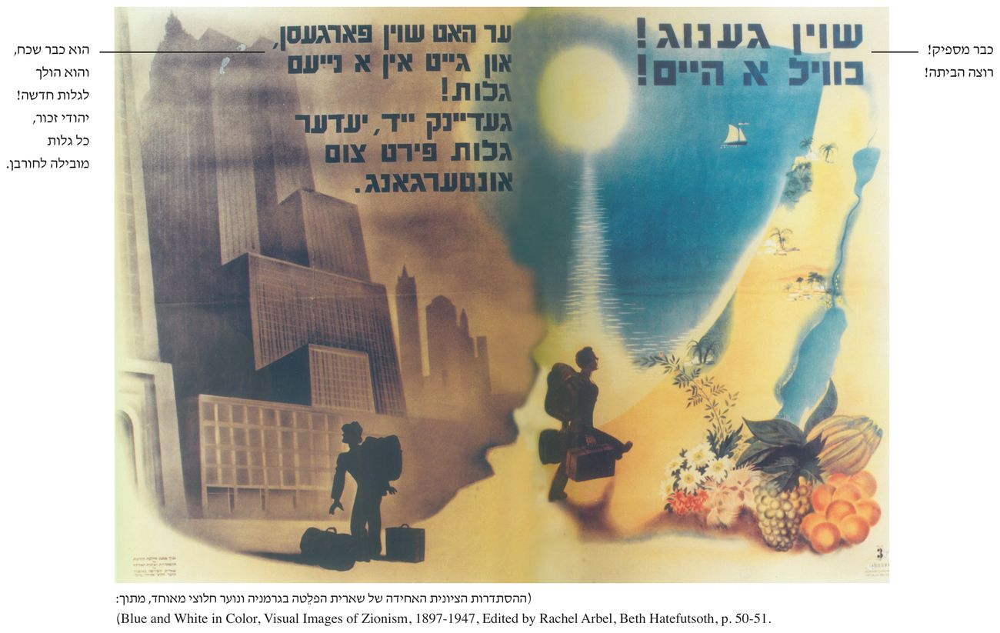</a><figcaption>נספח לשאלה 14 · לחצו על התמונה כדי להגדיל</figcaption></figure>
<div class="bh-sub"><p class="bh-subq" id="lbl-h29q-21w-14-3">על פי הכרזה, הצג את המסר שהכרזה נועדה לקדם.</p>
<textarea class="answer" data-id="h29q-21w-14-3" aria-labelledby="lbl-h29q-21w-14-3" rows="3" placeholder="כתבו כאן את התשובה שלכם..."></textarea></div>
<div class="bh-sub"><p class="bh-subq" id="lbl-h29q-21w-14-4">הסבר כיצד מסר זה בא לידי ביטוי, באמצעות השוואה בין שני צידי הכרזה. בהשוואתך התייחס לשני רכיבים מכל צד (סך הכול — ארבעה רכיבים).</p>
<textarea class="answer" data-id="h29q-21w-14-4" aria-labelledby="lbl-h29q-21w-14-4" rows="3" placeholder="כתבו כאן את התשובה שלכם..."></textarea></div>
<div class="bh-qkey" data-qkey="h29-21w-14" hidden></div>
</article>
<article class="bh-q" id="h29-20s-9">
<div class="bh-q-head"><span class="bh-exam">📅 בגרות קיץ תש&quot;ף</span><span class="bh-qn">שאלה 9 בשאלון</span></div>
<p class="bh-ctx">לפניך רשימת סוגיות הקשורות לזיכרון השואה או למתח העדתי בחברה הישראלית: הסכם השילומים עם גרמניה; משפט אייכמן; אירועי ואדי סאליב; מחאת &quot;הפנתרים השחורים&quot;.</p>
<div class="bh-sub"><p class="bh-subq" id="lbl-h29q-20s-9-1">בחר באחת הסוגיות שלמדת וציין אותה.</p>
<textarea class="answer" data-id="h29q-20s-9-1" aria-labelledby="lbl-h29q-20s-9-1" rows="3" placeholder="כתבו כאן את התשובה שלכם..."></textarea></div>
<div class="bh-sub"><p class="bh-subq" id="lbl-h29q-20s-9-2">הצג אירוע שקשור בסוגיה שבחרת.</p>
<textarea class="answer" data-id="h29q-20s-9-2" aria-labelledby="lbl-h29q-20s-9-2" rows="3" placeholder="כתבו כאן את התשובה שלכם..."></textarea></div>
<div class="bh-sub"><p class="bh-subq" id="lbl-h29q-20s-9-3">הצג שתי תוצאות של האירוע שהצגת, שהשפיעו על החברה הישראלית.</p>
<textarea class="answer" data-id="h29q-20s-9-3" aria-labelledby="lbl-h29q-20s-9-3" rows="3" placeholder="כתבו כאן את התשובה שלכם..."></textarea></div>
<div class="bh-qkey" data-qkey="h29-20s-9" hidden></div>
</article>
<article class="bh-q" id="h29-19s-10">
<div class="bh-q-head"><span class="bh-exam">📅 בגרות קיץ תשע&quot;ט</span><span class="bh-qn">שאלה 10 בשאלון</span></div>
<p class="bh-ctx">בעשורים הראשונים לאחר קום המדינה התמודדה מדינת ישראל עם קונפליקטים שהייתה להם השפעה רבה על החברה בישראל.</p>
<div class="bh-sub"><p class="bh-subq" id="lbl-h29q-19s-10-1">בחר בשאלה אחת בלבד על פי הנושא שלמדת:</p>
<textarea class="answer" data-id="h29q-19s-10-1" aria-labelledby="lbl-h29q-19s-10-1" rows="3" placeholder="כתבו כאן את התשובה שלכם..."></textarea></div>
<p class="bh-opt">אם למדת על תודעת השואה וניצוליה, ענה על השאלה הזאת:</p>
<div class="bh-sub"><p class="bh-subq" id="lbl-h29q-19s-10-2">ההצעה לחתום על הסכם השילומים בשנת 1952 עוררה ויכוח סוער בחברה הישראלית. הצג את הסכם השילומים.</p>
<textarea class="answer" data-id="h29q-19s-10-2" aria-labelledby="lbl-h29q-19s-10-2" rows="3" placeholder="כתבו כאן את התשובה שלכם..."></textarea></div>
<div class="bh-sub"><p class="bh-subq" id="lbl-h29q-19s-10-3">ציין והסבר עמדה אחת של כל צד בוויכוח זה (סך הכול — שני הסברים).</p>
<textarea class="answer" data-id="h29q-19s-10-3" aria-labelledby="lbl-h29q-19s-10-3" rows="3" placeholder="כתבו כאן את התשובה שלכם..."></textarea></div>
<p class="bh-opt">אם למדת על הפער העדתי והמאבקים לשוויון, ענה על השאלה הזאת:</p>
<div class="bh-sub"><p class="bh-subq" id="lbl-h29q-19s-10-4">הסבר את הרקע שהוביל לאירועי ואדי סאליב.</p>
<textarea class="answer" data-id="h29q-19s-10-4" aria-labelledby="lbl-h29q-19s-10-4" rows="3" placeholder="כתבו כאן את התשובה שלכם..."></textarea></div>
<div class="bh-sub"><p class="bh-subq" id="lbl-h29q-19s-10-5">הצג שתי פעולות שנקטה ממשלת ישראל בתגובה על האירועים האלה.</p>
<textarea class="answer" data-id="h29q-19s-10-5" aria-labelledby="lbl-h29q-19s-10-5" rows="3" placeholder="כתבו כאן את התשובה שלכם..."></textarea></div>
<div class="bh-qkey" data-qkey="h29-19s-10" hidden></div>
</article>
<article class="bh-q" id="h29-19s-11">
<div class="bh-q-head"><span class="bh-exam">📅 בגרות קיץ תשע&quot;ט</span><span class="bh-qn">שאלה 11 בשאלון</span></div>
<details class="bh-passage"><summary><span aria-hidden="true">📄</span> הקטע שעליו מבוססת השאלה · לחצו כדי לקרוא</summary><div class="bh-passage-body">
<p class="bh-ctx">לפניך שני קטעים העוסקים בהצלת יהודים בתקופת השואה ובהשלכות שהיו לכך לאחר השואה. קרא את שני הקטעים וענה על השאלות שאחריהם, על פי ההוראות.</p>
<p class="bh-src-label">קטע ראשון</p>
<p class="bh-src-text">מאז ומעולם הייתה הכנסייה הקתולית אחד ממרכזי הכוח הגדולים בפולין. למנהיגי הכנסייה היו דרכים גלויות וסמויות שבאמצעותן יכלו להשפיע על המוני המאמינים להיחלץ לעזרת היהודים ולהציל אותם, אך הם לא עשו זאת. עמנואל רינגלבלום (היסטוריון יהודי שחי בורשה בתקופת השואה) כותב במרירות על יחס הכמורה הפולנית כלפי היהודים הנרדפים: “כמעט כל הכמורה הייתה אדישה לטרגדיה של רצח כל העם היהודי... שמענו על מעשיהם האמיצים של כמרים הולנדים היוצאים להגנת יהודים... עמדה דומה נקטו אנשי דת קתולים בצרפת... בבלגיה התפללו בכנסיות לשלום היהודים ואספו בכנסיות תרומות למען ילדי היהודים... [לעומת זאת] בפולין נתקלנו רק במקרים חריגים ביותר של גישה כזו מצד אנשי הכמורה הקתולית&quot;.</p>
<p class="bh-src-text">עם זה, יש לזכור כי מצב הכנסייה בפולין היה קשה לאין ערוך יותר משהיה בצרפת, בבלגיה ובהולנד. בפולין, שלא כמו בארצות אחרות, לא היססו הגרמנים לפגוע בכנסייה הקתולית ולהצר את צעדיהם של כמרים שנחשדו בפעילות חתרנית נגד שלטונות הכיבוש הגרמניים. בפולין לא העניקה גלימת הכומר שום חסינות ללובשיה. הנאצים רדפו את הכמורה הפולנית כפי שרדפו את כל האינטליגנצייה [שכבת המשכילים] הפולנית. אף על פי כן ידועים מעשי הצלה שהשתתפו בהם כמרים, והיו מהם ששילמו על כך בחייהם. בספרות הזיכרונות ובעדויות אפשר למצוא תיאורים מרגשים של כמרים פולנים שנחלצו לעזרת יהודים והעניקו להם מקלט במוסדות שהיו בפיקוחם או הפנו אותם למנזרים. אבל כל פעולות העזרה וההצלה הללו היו יוזמה אישית ונעשו על פי צו מצפונו ואמונתו של כל כומר וכומר, ולא על פי מדיניות או הוראה מגבוה של הממונים עליהם.</p>
<p class="bh-src-text">יש היסטוריונים של הכנסייה הקתולית בפולין שמנסים ללמד זכות על ראשי הכנסייה, לדוגמה הם מזכירים את פועלו של הארכיבישוף של קרקוב, הנסיך אדם ספייחא, שנחשב לסמכות הרוחנית העליונה בפולין. אך מבדיקת העובדות עולה שהוא דאג רק למומרים [יהודים שהתנצרו] וכי היהודים לא עניינו אותו כלל. כך לדוגמה, באוקטובר 1940 הוא ניסה לדבר על ליבם של שלטונות הכיבוש הגרמניים כדי שישחררו את המומרים מן הצורך לענוד את הטלאי הצהוב ומן החובה לגור בגטו עם היהודים: “עושים להם עוול גדול כשמכריחים אותם לגור בקרב ציבור שהם נטשו מרצונם [...] איני יכול להתעלם מתלונותיהם. בלהט ליבי אני מגן על שותפים אלה לאמונתנו המצפים לתמיכת הכנסייה&quot;, כתב. עם זה, ההתערבות למען המומרים לא הועילה מכיוון שעל פי חוקי הגזע הנאציים הם נחשבו ליהודים, אף שהוטבלו לנצרות, ועל כן חלו עליהם אותן ההגבלות שחלו על שאר היהודים ויועד להם אותו גורל.</p>
<p class="bh-cite">(מעובד על פי נחום בוגנר, בחסדי זרים, הצלת ילדים בזהות שאולה בפולין, הוצאת יד ושם, תשכ&quot;א, עמ&#x27; 30-33)</p>
<p class="bh-src-label">קטע שני</p>
<p class="bh-src-text">בתחילת 1946 החליט הרב הרצוג לצאת למסע דיפלומטי לארצות אירופה כדי לטפל בהשבת הילדים היהודים שבידי הנוצרים. הרב יצא לארצות שבהן היה ידוע שילדים יהודים חיים אצל נוצרים והחליט לדרוש מממשלותיהן ומראשי הכנסיות המקומיות את החזרתם. הרב דרש שתי דרישות עיקריות:</p>
<p class="bh-src-text">א. הוא דרש שיפרסמו חוק המחייב כל מוסד או יחיד שברשותו ילדים לדווח את שמותיהם לממשלה ולציין מה הייתה דתם של הילדים.</p>
<p class="bh-src-text">ב. הוא דרש שהקהילות היהודיות או המוסדות היהודיים המיוחדים יהיו האפוטרופסים [בעלי אחריות משפטית] של הילדים היהודים וכן שהמוסדות והקהילות יוכלו לקבל לרשותם את הילדים האלה.</p>
<p class="bh-cite">(שם, עמ&#x27; 211-212)</p>
</div></details>
<div class="bh-sub"><p class="bh-subq" id="lbl-h29q-19s-11-1">על פי מה שלמדת, הצג מי נחשב ל&quot;חסיד אומות העולם&quot;.</p>
<textarea class="answer" data-id="h29q-19s-11-1" aria-labelledby="lbl-h29q-19s-11-1" rows="3" placeholder="כתבו כאן את התשובה שלכם..."></textarea></div>
<div class="bh-sub"><p class="bh-subq" id="lbl-h29q-19s-11-2">על פי הקטע הראשון, הצג שניים מן הקשיים שהיו ייחודיים לכמרים פולנים שבחרו להציל יהודים בתקופת השואה.</p>
<textarea class="answer" data-id="h29q-19s-11-2" aria-labelledby="lbl-h29q-19s-11-2" rows="3" placeholder="כתבו כאן את התשובה שלכם..."></textarea></div>
<div class="bh-qkey" data-qkey="h29-19s-11" hidden></div>
</article>
<article class="bh-q" id="h29-19s-13">
<div class="bh-q-head"><span class="bh-exam">📅 בגרות קיץ תשע&quot;ט</span><span class="bh-qn">שאלה 13 בשאלון</span></div>
<details class="bh-passage"><summary><span aria-hidden="true">📄</span> הקטע שעליו מבוססת השאלה · לחצו כדי לקרוא</summary><div class="bh-passage-body">
<p class="bh-ctx">לפניך שני קטעים העוסקים בהצלת יהודים בתקופת השואה ובהשלכות שהיו לכך לאחר השואה. קרא את שני הקטעים וענה על השאלות שאחריהם, על פי ההוראות.</p>
<p class="bh-src-label">קטע ראשון</p>
<p class="bh-src-text">מאז ומעולם הייתה הכנסייה הקתולית אחד ממרכזי הכוח הגדולים בפולין. למנהיגי הכנסייה היו דרכים גלויות וסמויות שבאמצעותן יכלו להשפיע על המוני המאמינים להיחלץ לעזרת היהודים ולהציל אותם, אך הם לא עשו זאת. עמנואל רינגלבלום (היסטוריון יהודי שחי בורשה בתקופת השואה) כותב במרירות על יחס הכמורה הפולנית כלפי היהודים הנרדפים: “כמעט כל הכמורה הייתה אדישה לטרגדיה של רצח כל העם היהודי... שמענו על מעשיהם האמיצים של כמרים הולנדים היוצאים להגנת יהודים... עמדה דומה נקטו אנשי דת קתולים בצרפת... בבלגיה התפללו בכנסיות לשלום היהודים ואספו בכנסיות תרומות למען ילדי היהודים... [לעומת זאת] בפולין נתקלנו רק במקרים חריגים ביותר של גישה כזו מצד אנשי הכמורה הקתולית&quot;.</p>
<p class="bh-src-text">עם זה, יש לזכור כי מצב הכנסייה בפולין היה קשה לאין ערוך יותר משהיה בצרפת, בבלגיה ובהולנד. בפולין, שלא כמו בארצות אחרות, לא היססו הגרמנים לפגוע בכנסייה הקתולית ולהצר את צעדיהם של כמרים שנחשדו בפעילות חתרנית נגד שלטונות הכיבוש הגרמניים. בפולין לא העניקה גלימת הכומר שום חסינות ללובשיה. הנאצים רדפו את הכמורה הפולנית כפי שרדפו את כל האינטליגנצייה [שכבת המשכילים] הפולנית. אף על פי כן ידועים מעשי הצלה שהשתתפו בהם כמרים, והיו מהם ששילמו על כך בחייהם. בספרות הזיכרונות ובעדויות אפשר למצוא תיאורים מרגשים של כמרים פולנים שנחלצו לעזרת יהודים והעניקו להם מקלט במוסדות שהיו בפיקוחם או הפנו אותם למנזרים. אבל כל פעולות העזרה וההצלה הללו היו יוזמה אישית ונעשו על פי צו מצפונו ואמונתו של כל כומר וכומר, ולא על פי מדיניות או הוראה מגבוה של הממונים עליהם.</p>
<p class="bh-src-text">יש היסטוריונים של הכנסייה הקתולית בפולין שמנסים ללמד זכות על ראשי הכנסייה, לדוגמה הם מזכירים את פועלו של הארכיבישוף של קרקוב, הנסיך אדם ספייחא, שנחשב לסמכות הרוחנית העליונה בפולין. אך מבדיקת העובדות עולה שהוא דאג רק למומרים [יהודים שהתנצרו] וכי היהודים לא עניינו אותו כלל. כך לדוגמה, באוקטובר 1940 הוא ניסה לדבר על ליבם של שלטונות הכיבוש הגרמניים כדי שישחררו את המומרים מן הצורך לענוד את הטלאי הצהוב ומן החובה לגור בגטו עם היהודים: “עושים להם עוול גדול כשמכריחים אותם לגור בקרב ציבור שהם נטשו מרצונם [...] איני יכול להתעלם מתלונותיהם. בלהט ליבי אני מגן על שותפים אלה לאמונתנו המצפים לתמיכת הכנסייה&quot;, כתב. עם זה, ההתערבות למען המומרים לא הועילה מכיוון שעל פי חוקי הגזע הנאציים הם נחשבו ליהודים, אף שהוטבלו לנצרות, ועל כן חלו עליהם אותן ההגבלות שחלו על שאר היהודים ויועד להם אותו גורל.</p>
<p class="bh-cite">(מעובד על פי נחום בוגנר, בחסדי זרים, הצלת ילדים בזהות שאולה בפולין, הוצאת יד ושם, תשכ&quot;א, עמ&#x27; 30-33)</p>
<p class="bh-src-label">קטע שני</p>
<p class="bh-src-text">בתחילת 1946 החליט הרב הרצוג לצאת למסע דיפלומטי לארצות אירופה כדי לטפל בהשבת הילדים היהודים שבידי הנוצרים. הרב יצא לארצות שבהן היה ידוע שילדים יהודים חיים אצל נוצרים והחליט לדרוש מממשלותיהן ומראשי הכנסיות המקומיות את החזרתם. הרב דרש שתי דרישות עיקריות:</p>
<p class="bh-src-text">א. הוא דרש שיפרסמו חוק המחייב כל מוסד או יחיד שברשותו ילדים לדווח את שמותיהם לממשלה ולציין מה הייתה דתם של הילדים.</p>
<p class="bh-src-text">ב. הוא דרש שהקהילות היהודיות או המוסדות היהודיים המיוחדים יהיו האפוטרופסים [בעלי אחריות משפטית] של הילדים היהודים וכן שהמוסדות והקהילות יוכלו לקבל לרשותם את הילדים האלה.</p>
<p class="bh-cite">(שם, עמ&#x27; 211-212)</p>
</div></details>
<div class="bh-sub"><p class="bh-subq" id="lbl-h29q-19s-13-1">על פי מה שלמדת, הצג שני קשיים שהיו לארגונים יהודיים ולאנשים פרטיים אחרי השואה במהלך הניסיון להחזיר לחיק עמם ילדים יהודים שהוסתרו.</p>
<textarea class="answer" data-id="h29q-19s-13-1" aria-labelledby="lbl-h29q-19s-13-1" rows="3" placeholder="כתבו כאן את התשובה שלכם..."></textarea></div>
<div class="bh-sub"><p class="bh-subq" id="lbl-h29q-19s-13-2">על פי הקטע השני, הסבר כיצד ניסה הרב הרצוג לסייע בפתרון אחד הקשיים שהתעוררו במהלך הניסיון להחזיר ילדים אלה לחיק עמם.</p>
<textarea class="answer" data-id="h29q-19s-13-2" aria-labelledby="lbl-h29q-19s-13-2" rows="3" placeholder="כתבו כאן את התשובה שלכם..."></textarea></div>
<div class="bh-qkey" data-qkey="h29-19s-13" hidden></div>
</article>
<article class="bh-q" id="h29-19w-11">
<div class="bh-q-head"><span class="bh-exam">📅 בגרות חורף תשע&quot;ט</span><span class="bh-qn">שאלה 11 בשאלון</span></div>
<details class="bh-passage"><summary><span aria-hidden="true">📄</span> הקטע שעליו מבוססת השאלה · לחצו כדי לקרוא</summary><div class="bh-passage-body">
<p class="bh-ctx">לפניך שני קטעים העוסקים במרד גטו ורשה.</p>
<p class="bh-src-label">קטע א&#x27;</p>
<p class="bh-src-text">בחודש אפריל 1943 בגטו ורשה מרדו לוחמים יהודים בכוחות הגרמניים. שני ארגונים יהודיים השתתפו במרד: האחד היה אצ&quot;י — ארגון צבאי יהודי, שהחברים בו היו חסידיו של ז&#x27;בוטינסקי: הרוויזיוניסטים ואנשי בית&quot;ר [בארץ־ישראל זוהו הרוויזיוניסטים עם ארגון האצ&quot;ל]. האחר היה אי&quot;ל — ארגון יהודי לוחם, ובו היו חברים מכל הקבוצות הפוליטיות האחרות [רובן ציוניות־סוציאליסטיות].</p>
<p class="bh-src-text">מדוע לא התאחדו שני הארגונים האלה שלחמו למען אותה המטרה — התקוממות נגד המכונה הרצחנית של הגרמנים? לשם השוואה, בווילנה הצליחו כל הקבוצות הפוליטיות להתאחד לאחר הכיבוש הגרמני. ביוני 1941 נכנס הצבא הגרמני לווילנה [...]. עד אמצע דצמבר 1941 טבחו הגרמנים ביותר ממחצית מתושביה היהודים של וילנה באתר ההשמדה בפונאר. מנהיגי תנועות הנוער בווילנה ראו ברציחות ההמוניות האלה חלק ממערכה גרמנית מתוכננת להשמדת היהודים, ולכן החליטו להקים ארגון התנגדות יהודי מאוחד בגטו וילנה. [...] ההלם מהטבח בפונאר סילק את המחיצות האידאולוגיות [...] שהפרידו בין הקבוצות הפוליטיות בגטו וילנה, ומיקד את תשומת ליבם של מנהיגי תנועות הנוער שם במטרות המיידיות של התנגדות מזוינת במסגרת ארגונית משותפת [...].</p>
<p class="bh-src-text">לעומת זאת, עם הכיבוש הגרמני של ורשה בשנת 1939, רק הרוויזיוניסטים החלו לארגן התנגדות מזוינת. [...] לחברי בית&quot;ר, שהתחנכו לאור האידאולוגיה של ז&#x27;בוטינסקי שדגלה במאבק צבאי למען השגת מטרות לאומיות של העם היהודי, הייתה נטייה טבעית לחשוב על התנגדות מזוינת. נוסף לכך, רבים מהם כבר עברו אימונים צבאיים בעבר. תנועות הנוער האחרות בגטו התרכזו בתוכניות תרבות וחינוך ובשירותי רווחה שנועדו לשפר את התנאים הקשים בגטו. הסברה הרווחת הייתה שלא ייתכן שבוורשה — &quot;מרכז העולם&quot; — ייתכנו רציחות המוניות של יהודים.</p>
<p class="bh-src-text">רק בעקבות &quot;הגירוש הגדול&quot; מגטו ורשה, שהחל ביולי 1942, החליטו המנהיגים של תנועות הנוער האחרות, אנטק (יצחק) צוקרמן, מרדכי אנילביץ וחבריהם, לייסד ארגון יהודי לוחם, וכך הוקם אי&quot;ל. אולם העוינות כלפי הרוויזיוניסטים מנעה שיתוף פעולה איתם.</p>
<p class="bh-cite">(מעובד על פי מ&#x27; ארנס, &quot;לא מאוחדים במאבק משותף&quot;. בתוך: עיונים בתקומת ישראל, כרך 18, 2008, עמ&#x27; 289-306)</p>
<p class="bh-src-label">קטע ב&#x27;</p>
<p class="bh-src-text">לאחר המלחמה התקבע בזיכרון הסיפור (הנרטיב) שסיפרו חברי אי&quot;ל ששרדו על אודות התפקיד הראשי שהיה לאי&quot;ל במרד. אם בכלל זכה אצ&quot;י לאזכור, הרי ניתן לו תפקיד שולי בלבד. סיפור זה קודם וטופח בישראל, שהשלטון ב־29 השנים הראשונות לקיומה היה בידי מפא&quot;י, מפלגה ציונית סוציאליסטית. כך לדוגמה, במהלך דיון שנערך במאי 1947 על מרד גטו ורשה, אמר יצחק צוקרמן, ממנהיגי ארגון אי&quot;ל:</p>
<p class="bh-src-text">פנינו אליהם [לרוויזיוניסטים] שיצטרפו אלינו. כדרכם [הם] הפרו משמעת [...] הקבוצה הזאת נלחמה בחירוף נפש [...] אך אנשיה לא החזיקו מעמד, וביום השני לקרב יצאו את הגטו.</p>
<p class="bh-src-text">ההנהגה היהודית בארץ־ישראל קיבלה את גרסת צוקרמן בנוגע לאירועים בגטו ורשה. תיאורו של צוקרמן שהרוויזיוניסטים היו &quot;מפרי משמעת&quot; תאם את ההאשמות שהושמעו באותה עת נגד הארגון הצבאי הלאומי [אצ&quot;ל], בראשות בגין, שבמאבקו נגד השלטון הבריטי בארץ־ישראל סירב לקבל את מרותה של ההנהגה הרשמית, שקראה לריסון ולאיפוק. מנהיגי אצ&quot;י, פאבל פרנקל ולאון רודל, נפלו בקרב [...] הניצולים המעטים מבין לוחמי אצ&quot;י שהגיעו לישראל — לא נשמעו קולותיהם.</p>
<p class="bh-cite">(מעובד על פי מ&#x27; ארנס, דגלים מעל הגטו — סיפורו של מרד גטו ורשה, הוצאת משכל, 2003, עמ&#x27; 18, 214-228)</p>
</div></details>
<p class="bh-ctx">בשנים הראשונות של גטו ורשה נמנעו חברי תנועות הנוער מהתארגנות משותפת למאבק מזוין בגרמנים. לעומת זאת, בגטו וילנה התארגנו חברי תנועות הנוער למאבק משותף בגרמנים זמן קצר לאחר הכיבוש הגרמני.</p>
<div class="bh-sub"><p class="bh-subq" id="lbl-h29q-19w-11-1">על פי קטע א&#x27;, הסבר את הסיבה להבדל בין שני הגטאות בהתארגנות למאבק בגרמנים.</p>
<textarea class="answer" data-id="h29q-19w-11-1" aria-labelledby="lbl-h29q-19w-11-1" rows="3" placeholder="כתבו כאן את התשובה שלכם..."></textarea></div>
<div class="bh-sub"><p class="bh-subq" id="lbl-h29q-19w-11-2">על פי קטע א&#x27;, ציין את מטרת פעילותם של חברי תנועות הנוער, חוץ מבית&quot;ר, בגטו ורשה בשנים הראשונות לקיום הגטו.</p>
<textarea class="answer" data-id="h29q-19w-11-2" aria-labelledby="lbl-h29q-19w-11-2" rows="3" placeholder="כתבו כאן את התשובה שלכם..."></textarea></div>
<div class="bh-sub"><p class="bh-subq" id="lbl-h29q-19w-11-3">על פי מה שלמדת, ציין ארגון אחר שפעל למען אותה מטרה.</p>
<textarea class="answer" data-id="h29q-19w-11-3" aria-labelledby="lbl-h29q-19w-11-3" rows="3" placeholder="כתבו כאן את התשובה שלכם..."></textarea></div>
<div class="bh-qkey" data-qkey="h29-19w-11" hidden></div>
</article>
<article class="bh-q" id="h29-19w-12">
<div class="bh-q-head"><span class="bh-exam">📅 בגרות חורף תשע&quot;ט</span><span class="bh-qn">שאלה 12 בשאלון</span></div>
<details class="bh-passage"><summary><span aria-hidden="true">📄</span> הקטע שעליו מבוססת השאלה · לחצו כדי לקרוא</summary><div class="bh-passage-body">
<p class="bh-ctx">לפניך שני קטעים העוסקים במרד גטו ורשה.</p>
<p class="bh-src-label">קטע א&#x27;</p>
<p class="bh-src-text">בחודש אפריל 1943 בגטו ורשה מרדו לוחמים יהודים בכוחות הגרמניים. שני ארגונים יהודיים השתתפו במרד: האחד היה אצ&quot;י — ארגון צבאי יהודי, שהחברים בו היו חסידיו של ז&#x27;בוטינסקי: הרוויזיוניסטים ואנשי בית&quot;ר [בארץ־ישראל זוהו הרוויזיוניסטים עם ארגון האצ&quot;ל]. האחר היה אי&quot;ל — ארגון יהודי לוחם, ובו היו חברים מכל הקבוצות הפוליטיות האחרות [רובן ציוניות־סוציאליסטיות].</p>
<p class="bh-src-text">מדוע לא התאחדו שני הארגונים האלה שלחמו למען אותה המטרה — התקוממות נגד המכונה הרצחנית של הגרמנים? לשם השוואה, בווילנה הצליחו כל הקבוצות הפוליטיות להתאחד לאחר הכיבוש הגרמני. ביוני 1941 נכנס הצבא הגרמני לווילנה [...]. עד אמצע דצמבר 1941 טבחו הגרמנים ביותר ממחצית מתושביה היהודים של וילנה באתר ההשמדה בפונאר. מנהיגי תנועות הנוער בווילנה ראו ברציחות ההמוניות האלה חלק ממערכה גרמנית מתוכננת להשמדת היהודים, ולכן החליטו להקים ארגון התנגדות יהודי מאוחד בגטו וילנה. [...] ההלם מהטבח בפונאר סילק את המחיצות האידאולוגיות [...] שהפרידו בין הקבוצות הפוליטיות בגטו וילנה, ומיקד את תשומת ליבם של מנהיגי תנועות הנוער שם במטרות המיידיות של התנגדות מזוינת במסגרת ארגונית משותפת [...].</p>
<p class="bh-src-text">לעומת זאת, עם הכיבוש הגרמני של ורשה בשנת 1939, רק הרוויזיוניסטים החלו לארגן התנגדות מזוינת. [...] לחברי בית&quot;ר, שהתחנכו לאור האידאולוגיה של ז&#x27;בוטינסקי שדגלה במאבק צבאי למען השגת מטרות לאומיות של העם היהודי, הייתה נטייה טבעית לחשוב על התנגדות מזוינת. נוסף לכך, רבים מהם כבר עברו אימונים צבאיים בעבר. תנועות הנוער האחרות בגטו התרכזו בתוכניות תרבות וחינוך ובשירותי רווחה שנועדו לשפר את התנאים הקשים בגטו. הסברה הרווחת הייתה שלא ייתכן שבוורשה — &quot;מרכז העולם&quot; — ייתכנו רציחות המוניות של יהודים.</p>
<p class="bh-src-text">רק בעקבות &quot;הגירוש הגדול&quot; מגטו ורשה, שהחל ביולי 1942, החליטו המנהיגים של תנועות הנוער האחרות, אנטק (יצחק) צוקרמן, מרדכי אנילביץ וחבריהם, לייסד ארגון יהודי לוחם, וכך הוקם אי&quot;ל. אולם העוינות כלפי הרוויזיוניסטים מנעה שיתוף פעולה איתם.</p>
<p class="bh-cite">(מעובד על פי מ&#x27; ארנס, &quot;לא מאוחדים במאבק משותף&quot;. בתוך: עיונים בתקומת ישראל, כרך 18, 2008, עמ&#x27; 289-306)</p>
<p class="bh-src-label">קטע ב&#x27;</p>
<p class="bh-src-text">לאחר המלחמה התקבע בזיכרון הסיפור (הנרטיב) שסיפרו חברי אי&quot;ל ששרדו על אודות התפקיד הראשי שהיה לאי&quot;ל במרד. אם בכלל זכה אצ&quot;י לאזכור, הרי ניתן לו תפקיד שולי בלבד. סיפור זה קודם וטופח בישראל, שהשלטון ב־29 השנים הראשונות לקיומה היה בידי מפא&quot;י, מפלגה ציונית סוציאליסטית. כך לדוגמה, במהלך דיון שנערך במאי 1947 על מרד גטו ורשה, אמר יצחק צוקרמן, ממנהיגי ארגון אי&quot;ל:</p>
<p class="bh-src-text">פנינו אליהם [לרוויזיוניסטים] שיצטרפו אלינו. כדרכם [הם] הפרו משמעת [...] הקבוצה הזאת נלחמה בחירוף נפש [...] אך אנשיה לא החזיקו מעמד, וביום השני לקרב יצאו את הגטו.</p>
<p class="bh-src-text">ההנהגה היהודית בארץ־ישראל קיבלה את גרסת צוקרמן בנוגע לאירועים בגטו ורשה. תיאורו של צוקרמן שהרוויזיוניסטים היו &quot;מפרי משמעת&quot; תאם את ההאשמות שהושמעו באותה עת נגד הארגון הצבאי הלאומי [אצ&quot;ל], בראשות בגין, שבמאבקו נגד השלטון הבריטי בארץ־ישראל סירב לקבל את מרותה של ההנהגה הרשמית, שקראה לריסון ולאיפוק. מנהיגי אצ&quot;י, פאבל פרנקל ולאון רודל, נפלו בקרב [...] הניצולים המעטים מבין לוחמי אצ&quot;י שהגיעו לישראל — לא נשמעו קולותיהם.</p>
<p class="bh-cite">(מעובד על פי מ&#x27; ארנס, דגלים מעל הגטו — סיפורו של מרד גטו ורשה, הוצאת משכל, 2003, עמ&#x27; 18, 214-228)</p>
</div></details>
<div class="bh-sub"><p class="bh-subq" id="lbl-h29q-19w-12-1">על פי קטע א&#x27;, הסבר מדוע האידאולוגיה של חברי בית&quot;ר (הרוויזיוניסטים) השפיעה על התארגנותם להתנגדות מזוינת בגטו ורשה כבר בשנת 1939.</p>
<textarea class="answer" data-id="h29q-19w-12-1" aria-labelledby="lbl-h29q-19w-12-1" rows="3" placeholder="כתבו כאן את התשובה שלכם..."></textarea></div>
<div class="bh-sub"><p class="bh-subq" id="lbl-h29q-19w-12-2">על פי מה שלמדת, הסבר כיצד אידאולוגיה זו באה לידי ביטוי בקרב אנשי האצ&quot;ל בארץ־ישראל, במהלך שנות השלושים או לאחר מלחמת העולם השנייה.</p>
<textarea class="answer" data-id="h29q-19w-12-2" aria-labelledby="lbl-h29q-19w-12-2" rows="3" placeholder="כתבו כאן את התשובה שלכם..."></textarea></div>
<div class="bh-qkey" data-qkey="h29-19w-12" hidden></div>
</article>
<article class="bh-q" id="h29-19w-13">
<div class="bh-q-head"><span class="bh-exam">📅 בגרות חורף תשע&quot;ט</span><span class="bh-qn">שאלה 13 בשאלון</span></div>
<details class="bh-passage"><summary><span aria-hidden="true">📄</span> הקטע שעליו מבוססת השאלה · לחצו כדי לקרוא</summary><div class="bh-passage-body">
<p class="bh-ctx">לפניך שני קטעים העוסקים במרד גטו ורשה.</p>
<p class="bh-src-label">קטע א&#x27;</p>
<p class="bh-src-text">בחודש אפריל 1943 בגטו ורשה מרדו לוחמים יהודים בכוחות הגרמניים. שני ארגונים יהודיים השתתפו במרד: האחד היה אצ&quot;י — ארגון צבאי יהודי, שהחברים בו היו חסידיו של ז&#x27;בוטינסקי: הרוויזיוניסטים ואנשי בית&quot;ר [בארץ־ישראל זוהו הרוויזיוניסטים עם ארגון האצ&quot;ל]. האחר היה אי&quot;ל — ארגון יהודי לוחם, ובו היו חברים מכל הקבוצות הפוליטיות האחרות [רובן ציוניות־סוציאליסטיות].</p>
<p class="bh-src-text">מדוע לא התאחדו שני הארגונים האלה שלחמו למען אותה המטרה — התקוממות נגד המכונה הרצחנית של הגרמנים? לשם השוואה, בווילנה הצליחו כל הקבוצות הפוליטיות להתאחד לאחר הכיבוש הגרמני. ביוני 1941 נכנס הצבא הגרמני לווילנה [...]. עד אמצע דצמבר 1941 טבחו הגרמנים ביותר ממחצית מתושביה היהודים של וילנה באתר ההשמדה בפונאר. מנהיגי תנועות הנוער בווילנה ראו ברציחות ההמוניות האלה חלק ממערכה גרמנית מתוכננת להשמדת היהודים, ולכן החליטו להקים ארגון התנגדות יהודי מאוחד בגטו וילנה. [...] ההלם מהטבח בפונאר סילק את המחיצות האידאולוגיות [...] שהפרידו בין הקבוצות הפוליטיות בגטו וילנה, ומיקד את תשומת ליבם של מנהיגי תנועות הנוער שם במטרות המיידיות של התנגדות מזוינת במסגרת ארגונית משותפת [...].</p>
<p class="bh-src-text">לעומת זאת, עם הכיבוש הגרמני של ורשה בשנת 1939, רק הרוויזיוניסטים החלו לארגן התנגדות מזוינת. [...] לחברי בית&quot;ר, שהתחנכו לאור האידאולוגיה של ז&#x27;בוטינסקי שדגלה במאבק צבאי למען השגת מטרות לאומיות של העם היהודי, הייתה נטייה טבעית לחשוב על התנגדות מזוינת. נוסף לכך, רבים מהם כבר עברו אימונים צבאיים בעבר. תנועות הנוער האחרות בגטו התרכזו בתוכניות תרבות וחינוך ובשירותי רווחה שנועדו לשפר את התנאים הקשים בגטו. הסברה הרווחת הייתה שלא ייתכן שבוורשה — &quot;מרכז העולם&quot; — ייתכנו רציחות המוניות של יהודים.</p>
<p class="bh-src-text">רק בעקבות &quot;הגירוש הגדול&quot; מגטו ורשה, שהחל ביולי 1942, החליטו המנהיגים של תנועות הנוער האחרות, אנטק (יצחק) צוקרמן, מרדכי אנילביץ וחבריהם, לייסד ארגון יהודי לוחם, וכך הוקם אי&quot;ל. אולם העוינות כלפי הרוויזיוניסטים מנעה שיתוף פעולה איתם.</p>
<p class="bh-cite">(מעובד על פי מ&#x27; ארנס, &quot;לא מאוחדים במאבק משותף&quot;. בתוך: עיונים בתקומת ישראל, כרך 18, 2008, עמ&#x27; 289-306)</p>
<p class="bh-src-label">קטע ב&#x27;</p>
<p class="bh-src-text">לאחר המלחמה התקבע בזיכרון הסיפור (הנרטיב) שסיפרו חברי אי&quot;ל ששרדו על אודות התפקיד הראשי שהיה לאי&quot;ל במרד. אם בכלל זכה אצ&quot;י לאזכור, הרי ניתן לו תפקיד שולי בלבד. סיפור זה קודם וטופח בישראל, שהשלטון ב־29 השנים הראשונות לקיומה היה בידי מפא&quot;י, מפלגה ציונית סוציאליסטית. כך לדוגמה, במהלך דיון שנערך במאי 1947 על מרד גטו ורשה, אמר יצחק צוקרמן, ממנהיגי ארגון אי&quot;ל:</p>
<p class="bh-src-text">פנינו אליהם [לרוויזיוניסטים] שיצטרפו אלינו. כדרכם [הם] הפרו משמעת [...] הקבוצה הזאת נלחמה בחירוף נפש [...] אך אנשיה לא החזיקו מעמד, וביום השני לקרב יצאו את הגטו.</p>
<p class="bh-src-text">ההנהגה היהודית בארץ־ישראל קיבלה את גרסת צוקרמן בנוגע לאירועים בגטו ורשה. תיאורו של צוקרמן שהרוויזיוניסטים היו &quot;מפרי משמעת&quot; תאם את ההאשמות שהושמעו באותה עת נגד הארגון הצבאי הלאומי [אצ&quot;ל], בראשות בגין, שבמאבקו נגד השלטון הבריטי בארץ־ישראל סירב לקבל את מרותה של ההנהגה הרשמית, שקראה לריסון ולאיפוק. מנהיגי אצ&quot;י, פאבל פרנקל ולאון רודל, נפלו בקרב [...] הניצולים המעטים מבין לוחמי אצ&quot;י שהגיעו לישראל — לא נשמעו קולותיהם.</p>
<p class="bh-cite">(מעובד על פי מ&#x27; ארנס, דגלים מעל הגטו — סיפורו של מרד גטו ורשה, הוצאת משכל, 2003, עמ&#x27; 18, 214-228)</p>
</div></details>
<p class="bh-ctx">הפילוג בין תנועות הנוער בגטו ורשה היה נעוץ בעוינות אידאולוגית.</p>
<div class="bh-sub"><p class="bh-subq" id="lbl-h29q-19w-13-1">על פי קטע ב&#x27;, הסבר כיצד השפיעה עוינות זו על עיצוב הסיפור (הנרטיב) של מרד גטו ורשה בישראל לאחר השואה.</p>
<textarea class="answer" data-id="h29q-19w-13-1" aria-labelledby="lbl-h29q-19w-13-1" rows="3" placeholder="כתבו כאן את התשובה שלכם..."></textarea></div>
<div class="bh-sub"><p class="bh-subq" id="lbl-h29q-19w-13-2">על פי מה שלמדת, הצג דוגמה נוספת שממחישה את העוינות בין שני המחנות הפוליטיים לאחר קום המדינה.</p>
<textarea class="answer" data-id="h29q-19w-13-2" aria-labelledby="lbl-h29q-19w-13-2" rows="3" placeholder="כתבו כאן את התשובה שלכם..."></textarea></div>
<div class="bh-qkey" data-qkey="h29-19w-13" hidden></div>
</article>
<article class="bh-q" id="h29-18s-10">
<div class="bh-q-head"><span class="bh-exam">📅 בגרות קיץ תשע&quot;ח</span><span class="bh-qn">שאלה 10 בשאלון</span></div>
<p class="bh-ctx">לאחר מלחמת העולם השנייה נאלצו ניצולי השואה להיאבק על שיקומם וחירותם.</p>
<div class="bh-sub"><p class="bh-subq" id="lbl-h29q-18s-10-1">הצג שתי דוגמאות למאמצי השיקום של ניצולי השואה במחנות העקורים.</p>
<textarea class="answer" data-id="h29q-18s-10-1" aria-labelledby="lbl-h29q-18s-10-1" rows="3" placeholder="כתבו כאן את התשובה שלכם..."></textarea></div>
<div class="bh-sub"><p class="bh-subq" id="lbl-h29q-18s-10-2">הצג שני קשיים בתהליך ההעפלה של ניצולי השואה לארץ־ישראל.</p>
<textarea class="answer" data-id="h29q-18s-10-2" aria-labelledby="lbl-h29q-18s-10-2" rows="3" placeholder="כתבו כאן את התשובה שלכם..."></textarea></div>
<div class="bh-qkey" data-qkey="h29-18s-10" hidden></div>
</article>
<article class="bh-q" id="h29-17s-8">
<div class="bh-q-head"><span class="bh-exam">📅 בגרות קיץ תשע&quot;ז</span><span class="bh-qn">שאלה 8 בשאלון</span></div>
<p class="bh-ctx">בנספח לשאלה 8 מוצגים תצלומים שקשורים למושג &quot;קידוש החיים&quot; מתקופת השואה. התבונן בשני התצלומים, וענה על שני הסעיפים א-ב.</p>
<figure class="bh-fig"><a href="assets/h29/h29-17s-n8-2.jpg" target="_blank" rel="noopener">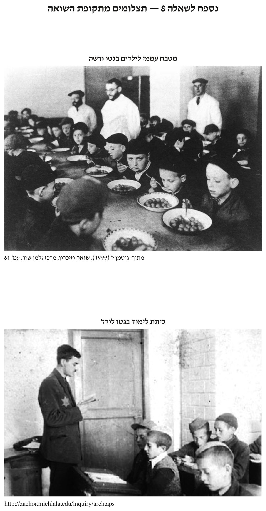</a><figcaption>נספח לשאלה 8 · לחצו על התמונה כדי להגדיל</figcaption></figure>
<div class="bh-sub"><p class="bh-subq" id="lbl-h29q-17s-8-1"><span class="bh-letter">א</span> הצג מהו ערך &quot;קידוש החיים&quot;, והסבר את חשיבותו בתקופת השואה.</p>
<textarea class="answer" data-id="h29q-17s-8-1" aria-labelledby="lbl-h29q-17s-8-1" rows="3" placeholder="כתבו כאן את התשובה שלכם..."></textarea></div>
<div class="bh-sub"><p class="bh-subq" id="lbl-h29q-17s-8-2">הסבר מדוע כל אחד משני התצלומים קשור לערך של &quot;קידוש החיים&quot; בתקופת השואה (התייחס לכל תצלום בנפרד).</p>
<textarea class="answer" data-id="h29q-17s-8-2" aria-labelledby="lbl-h29q-17s-8-2" rows="3" placeholder="כתבו כאן את התשובה שלכם..."></textarea></div>
<p class="bh-ctx"><span class="bh-letter">ב</span> ביטויים נוספים של &quot;קידוש החיים&quot; בתקופת השואה התגלו בספרות השו&quot;ת (שו&quot;תים).</p>
<div class="bh-sub"><p class="bh-subq" id="lbl-h29q-17s-8-3">הצג שני קשיים שרבנים נאלצו להתמודד עמם בתקופת השואה, בבואם לענות על השאלות שהופנו אליהם.</p>
<textarea class="answer" data-id="h29q-17s-8-3" aria-labelledby="lbl-h29q-17s-8-3" rows="3" placeholder="כתבו כאן את התשובה שלכם..."></textarea></div>
<div class="bh-qkey" data-qkey="h29-17s-8" hidden></div>
</article>
<article class="bh-q" id="h29-17s-9">
<div class="bh-q-head"><span class="bh-exam">📅 בגרות קיץ תשע&quot;ז</span><span class="bh-qn">שאלה 9 בשאלון</span></div>
<div class="bh-sub"><p class="bh-subq" id="lbl-h29q-17s-9-1">הצג את הדילמה שהייתה לאנשי המחתרות בחלק מהגטאות בנוגע לעיתוי (זמן) המרד, והסבר מדוע דילמה זו התעוררה רק משנת 1942 ואילך.</p>
<textarea class="answer" data-id="h29q-17s-9-1" aria-labelledby="lbl-h29q-17s-9-1" rows="3" placeholder="כתבו כאן את התשובה שלכם..."></textarea></div>
<div class="bh-sub"><p class="bh-subq" id="lbl-h29q-17s-9-2">הצג את ההחלטה שהתקבלה בעקבות דילמה זו בגטו וילנה או בגטו ורשה.</p>
<textarea class="answer" data-id="h29q-17s-9-2" aria-labelledby="lbl-h29q-17s-9-2" rows="3" placeholder="כתבו כאן את התשובה שלכם..."></textarea></div>
<div class="bh-qkey" data-qkey="h29-17s-9" hidden></div>
</article>
</section>
<section class="bh-panel" role="tabpanel" id="h-medina" aria-labelledby="tab-medina" hidden>
<h2 class="bh-panel-title"><span aria-hidden="true">🏛️</span> הקמת המדינה ומלחמות ישראל <small>37 שאלות</small></h2>
<article class="bh-q" id="h29-25s-7">
<div class="bh-q-head"><span class="bh-exam">📅 בגרות קיץ תשפ&quot;ה</span><span class="bh-qn">שאלה 7 בשאלון</span></div>
<h3 class="bh-qtitle">הכרזת המדינה</h3>
<div class="bh-sub"><p class="bh-subq" id="lbl-h29q-25s-7-1">על פי הסרטון &quot;הכול אנשים&quot; שבו צפיתם במסגרת תוכנית פר&quot;ח, ציינו והסבירו את עמדתם המשותפת של יגאל ידין וישראל גלילי בנוגע להכרזה על הקמת המדינה ביום עזיבת הבריטים את הארץ.</p>
<textarea class="answer" data-id="h29q-25s-7-1" aria-labelledby="lbl-h29q-25s-7-1" rows="3" placeholder="כתבו כאן את התשובה שלכם..."></textarea></div>
<div class="bh-sub"><p class="bh-subq" id="lbl-h29q-25s-7-2">על פי הסרטון, ציינו והסבירו את עמדתו של דוד בן־גוריון בנוגע להכרזה על הקמת המדינה ביום עזיבת הבריטים את הארץ.</p>
<textarea class="answer" data-id="h29q-25s-7-2" aria-labelledby="lbl-h29q-25s-7-2" rows="3" placeholder="כתבו כאן את התשובה שלכם..."></textarea></div>
<div class="bh-sub"><p class="bh-subq" id="lbl-h29q-25s-7-3">הביעו את דעתכם, עם איזו עמדה אתם מזדהים יותר – עם עמדתם של יגאל ידין וישראל גלילי או עם עמדתו של דוד בן־גוריון? נמקו את תשובתכם על פי עובדה היסטורית.</p>
<textarea class="answer" data-id="h29q-25s-7-3" aria-labelledby="lbl-h29q-25s-7-3" rows="3" placeholder="כתבו כאן את התשובה שלכם..."></textarea></div>
<div class="bh-qkey" data-qkey="h29-25s-7" hidden></div>
</article>
<article class="bh-q" id="h29-25s-8">
<div class="bh-q-head"><span class="bh-exam">📅 בגרות קיץ תשפ&quot;ה</span><span class="bh-qn">שאלה 8 בשאלון</span></div>
<h3 class="bh-qtitle">מלחמת ששת הימים</h3>
<div class="bh-sub"><p class="bh-subq" id="lbl-h29q-25s-8-1">הציגו גורם אחד לפרוץ מלחמת ששת הימים.</p>
<textarea class="answer" data-id="h29q-25s-8-1" aria-labelledby="lbl-h29q-25s-8-1" rows="3" placeholder="כתבו כאן את התשובה שלכם..."></textarea></div>
<div class="bh-sub"><p class="bh-subq" id="lbl-h29q-25s-8-2">הסבירו כיצד תרם אלי כהן לניצחון של מדינת ישראל במלחמת ששת הימים.</p>
<textarea class="answer" data-id="h29q-25s-8-2" aria-labelledby="lbl-h29q-25s-8-2" rows="3" placeholder="כתבו כאן את התשובה שלכם..."></textarea></div>
<div class="bh-sub"><p class="bh-subq" id="lbl-h29q-25s-8-3">הציגו שתיים מתוצאות מלחמת ששת הימים שהביאו לתחושות השמחה בקרב הציבור היהודי בארץ.</p>
<textarea class="answer" data-id="h29q-25s-8-3" aria-labelledby="lbl-h29q-25s-8-3" rows="3" placeholder="כתבו כאן את התשובה שלכם..."></textarea></div>
<div class="bh-qkey" data-qkey="h29-25s-8" hidden></div>
</article>
<article class="bh-q" id="h29-25w-10">
<div class="bh-q-head"><span class="bh-exam">📅 בגרות חורף תשפ&quot;ה</span><span class="bh-qn">שאלה 10 בשאלון</span></div>
<h3 class="bh-qtitle">מלחמת ששת הימים</h3>
<p class="bh-ctx">ערב מלחמת ששת הימים שררה מתיחות רבה בין מדינת ישראל לבין שכנותיה.</p>
<div class="bh-sub"><p class="bh-subq" id="lbl-h29q-25w-10-1">הציגו שני גורמים למתיחות זו.</p>
<textarea class="answer" data-id="h29q-25w-10-1" aria-labelledby="lbl-h29q-25w-10-1" rows="3" placeholder="כתבו כאן את התשובה שלכם..."></textarea></div>
<div class="bh-sub"><p class="bh-subq" id="lbl-h29q-25w-10-2">הציגו את הדרך המדינית שנקטה ממשלת ישראל בניסיון להתמודד עם המתיחות בגבול הדרום.</p>
<textarea class="answer" data-id="h29q-25w-10-2" aria-labelledby="lbl-h29q-25w-10-2" rows="3" placeholder="כתבו כאן את התשובה שלכם..."></textarea></div>
<div class="bh-sub"><p class="bh-subq" id="lbl-h29q-25w-10-3">הסבירו כיצד השפיעו תוצאות מלחמת ששת הימים על מעמדה של ישראל בזירה הבין־לאומית.</p>
<textarea class="answer" data-id="h29q-25w-10-3" aria-labelledby="lbl-h29q-25w-10-3" rows="3" placeholder="כתבו כאן את התשובה שלכם..."></textarea></div>
<div class="bh-qkey" data-qkey="h29-25w-10" hidden></div>
</article>
<article class="bh-q" id="h29-25w-11">
<div class="bh-q-head"><span class="bh-exam">📅 בגרות חורף תשפ&quot;ה</span><span class="bh-qn">שאלה 11 בשאלון</span></div>
<details class="bh-passage"><summary><span aria-hidden="true">📄</span> הקטע שעליו מבוססת השאלה · לחצו כדי לקרוא</summary><div class="bh-passage-body">
<p class="bh-ctx">לפניכם קטעים מתוך יומנו של זאב פון וייזל – מראשי התנועה הרוויזיוניסטית – תנועת &quot;האם&quot; של האצ&quot;ל. פון וייזל נעצר בידי הבריטים במהלך &quot;השבת השחורה&quot; (29 ביוני 1946), נכלא במחנה לטרון לכמה חודשים, ובמהלכם אף שבת שביתת רעב במשך 28 יום.</p>
<p class="bh-src-text">מוצאי שבת, 29 ביוני, 1946 &quot;...אורחים באו לבקרנו, ומפיהם נודעו לנו החדשות הגדולות: רדיו ירושלים הודיע כי שרתוק [משה שרת, יו&quot;ר המחלקה המדינית של הסוכנות] והרב פישמן [חבר הנהלת הסוכנות היהודית] נאסרו. תגובתנו הראשונה הייתה: גם זו לטובה. אולי טוב הוא שהגיעו הדברים עד כדי כך. הסכנה המשותפת תהרוס אולי את החיץ המבדיל עדיין ביישוב בין ימין לשמאל. עכשיו תזכה האומה סוף־סוף לאחדות של ממש... בליבי ידעתי שהאנגלים יבואו לאסור גם אותי... אף שוודאי היה ידוע לממשלה [הבריטית] שמאז אוקטובר 1944 [כבר] לא הייתי המנהיג של המפלגה [הרוויזיוניסטית]. אבל ידעתי שבפעולה כמו מאסר המנהיגים, שכל כוונתה להדהים את היישוב, אין ערך לעובדות משפטיות. הממשלה רוצה להפיל את פחדה על היישוב, ולתכלית זו אין זה משנה אם ד&quot;ר פון וייזל או הרב פישמן הזקן נמנה בין ה&#x27;טרוריסטים&#x27; – העיקר הוא שיראו היהודים כיצד נוהגת ממשלת הוד מלכותו באישים שהיישוב מכירם ומכבדם...&quot;</p>
<p class="bh-src-text">יום ראשון, 21 ביולי, 1946 &quot;...השבת... נערכו [במחנה לטרון] טקסים לזכרו של הרצל... [ואולם] גם כאן לא יכולנו [העצירים] להתגבר על הריב הפנימי [בין אנשי ה&quot;שמאל&quot; לאנשי ה&quot;ימין&quot;]. בערב שבת... שמענו את שיר התקווה בוקע מן המחנה... נודע לנו שכבר נתקיים הטקס, ובו דיבר שרתוק, אבל אנחנו [הרוויזיוניסטים] לא הוזמנו לטקס זה. בשבת בבוקר ערכנו [הרוויזיוניסטים] את הטקס שלנו בספרייה... אבל מאנשי ה&#x27;שמאל&#x27; לא בא כמעט אף אחד... אין בכוחנו להיגמל מן המשחק הישן והעלוב שאנו משחקים &#x27;בחוץ&#x27;. אנשי ה&#x27;ימין&#x27; אינם רוצים ללכת מרחק חמישים צעד כדי לשמוע את שרתוק... ואנשי ה&#x27;שמאל&#x27; אף הם אינם רוצים לדעת מה יש בפינו... חבל. חבל על עמנו, שלא למד עד היום להבין כי שני החטאים הגדולים ביותר שיכול לחטוא עם הם שנאת אחים ושנאת חינם. בגלל שתי העבירות הללו נחרב בית שני, ובגללן איננו יכולים להקים את ביתנו השלישי&quot;.</p>
<p class="bh-src-text">יום שני, 2 בספטמבר, 1946 &quot;[החלטתי לצום 28 יום.] תכלית צומי כתכלית &#x27;פיצוץ הגשרים&#x27;... פעולה זו עלתה [בזמנו] ביוקר רב במחיר חיים יקרים. בחורינו הגיבורים עלו אז לקורבן רק למען תציין העיתונות באנגלייה ובאמריקה שאין אנו היהודים נכונים להיכנע לפסק דינה של הממשלה. יותר מתריסר בחורים נהרגו בפיצוץ הגשרים בגליל... וכל זאת נעשה, בעצם, אך ורק במטרה אחת: לעורר את דעת הציבור בעולם על המצב בארץ־ישראל. ואומנם, תכלית זו גם הושגה – דיברו וכתבו על כך שלושה או ארבעה ימים... אבל אם אכריז כעת על צום של 28 ימים, ידברו ויכתבו על כך בעיתונות העולמית לא שלושה ולא ארבעה ימים, כי אם 23 או 24 ימים. יום־יום תציין העיתונות בעולם כולו שאין היהודים נכנעים, שאין הם מקבלים את הגזרה... יאמרו עלינו שאין לשבור את רצוננו ואת החלטתנו. וכל זאת יושג – בלי לסכן חייו של אדם אחד... פרט לחיי שלי&quot;.</p>
<p class="bh-src-text">יום רביעי, 18 בספטמבר, 1946 [היום ה־18 לצום] &quot;ישבתי לכתוב &#x27;הצהרה&#x27;: &#x27;יש להבין צום זה כאות... למחאתי הנמרצת... על מאסר מאות יהודים ללא כל צדק והצדקה. מחזיקים אותנו במעצר אף על פי שאין כל חשד שיש לנו קשר לפעולות בלתי חוקיות בארץ־ישראל... כל יום נוסף שישבתי בלטרון... הגביר את התמרמרותי על הצורה שבה ממשלתנו משתמשת במעצר אדמיניסטרטיבי [מעצר מנהלי ללא כל משפט] מתוך התעלמות גמורה מדרישות הצדק והיושר הפרימיטיביים ביותר... בזמנים מסוימים אין אפשרות להוכיח מייד לכל חשוד את אשמתו. אבל לא ייתכן שיאסרו אנשים ויחזיקום במאסר חודשים רבים... בלי שתובא כל הוכחה לאשמתם, ולא ינסו אפילו להוכיח את אשמתם... כשאוסרים אנשים משום שלא יכלו למצוא את שכניהם, אין לתרץ זאת בשעת חירום. זהו פשוט מעשה פראות המעורר שאט נפש [סלידה]. ראיתי בלטרון אבות לארבעה ולחמישה ילדים שבכו בכי מר מתוך דאגה לילדיהם ולנשותיהם, אבל על טרוריזם ואפילו על ציונות לא ידעו יותר משר בריטי...&#x27;.</p>
<p class="bh-src-text">טרם גמרתי לכתוב [את ההצהרה] וכבר הגיעו... חבריי מן התנועה... ועתה ניתך עליי מטר של שאלות. בראש ובראשונה – על היחסים בינינו לבין מנהיגי הסוכנות. וכאשר שמעו מפי רק דברים טובים, ובייחוד את דבריי על שרתוק, שלא מצאתי בו כל פסול, הופתעו החברים מחדש, כי היה הדבר לפלא בעיניהם, כמעט כפלא שביכולתו של אדם לצום 18 יום. &#x27;בלי אוכל – מילא, אבל גם בלי שנאה?&#x27; &quot;</p>
<p class="bh-cite">(מעובד על פי: ז&#x27; פון וייזל, 92 ימי מאסר וצום – יומנו של אסיר ציון, הוצאת סלע מאיר, תשפ&quot;ד, עמ&#x27; 53–55, 145–146, 253–254, 323–326)</p>
</div></details>
<div class="bh-sub"><p class="bh-subq" id="lbl-h29q-25w-11-1">על פי מה שלמדתם, הציגו מה הייתה &quot;השבת השחורה&quot; ביוני 1946.</p>
<textarea class="answer" data-id="h29q-25w-11-1" aria-labelledby="lbl-h29q-25w-11-1" rows="3" placeholder="כתבו כאן את התשובה שלכם..."></textarea></div>
<div class="bh-sub"><p class="bh-subq" id="lbl-h29q-25w-11-2">על פי מה שלמדתם, הסבירו מדוע התרחשו אירועי &quot;השבת השחורה&quot; באותה תקופה.</p>
<textarea class="answer" data-id="h29q-25w-11-2" aria-labelledby="lbl-h29q-25w-11-2" rows="3" placeholder="כתבו כאן את התשובה שלכם..."></textarea></div>
<div class="bh-sub"><p class="bh-subq" id="lbl-h29q-25w-11-3">על פי הקטע, הסבירו מדוע בעיני פון וייזל הייתה ההתנהלות של הבריטים &quot;מעשה פראות המעורר שאט נפש&quot;.</p>
<textarea class="answer" data-id="h29q-25w-11-3" aria-labelledby="lbl-h29q-25w-11-3" rows="3" placeholder="כתבו כאן את התשובה שלכם..."></textarea></div>
<div class="bh-qkey" data-qkey="h29-25w-11" hidden></div>
</article>
<article class="bh-q" id="h29-25w-12">
<div class="bh-q-head"><span class="bh-exam">📅 בגרות חורף תשפ&quot;ה</span><span class="bh-qn">שאלה 12 בשאלון</span></div>
<details class="bh-passage"><summary><span aria-hidden="true">📄</span> הקטע שעליו מבוססת השאלה · לחצו כדי לקרוא</summary><div class="bh-passage-body">
<p class="bh-ctx">לפניכם קטעים מתוך יומנו של זאב פון וייזל – מראשי התנועה הרוויזיוניסטית – תנועת &quot;האם&quot; של האצ&quot;ל. פון וייזל נעצר בידי הבריטים במהלך &quot;השבת השחורה&quot; (29 ביוני 1946), נכלא במחנה לטרון לכמה חודשים, ובמהלכם אף שבת שביתת רעב במשך 28 יום.</p>
<p class="bh-src-text">מוצאי שבת, 29 ביוני, 1946 &quot;...אורחים באו לבקרנו, ומפיהם נודעו לנו החדשות הגדולות: רדיו ירושלים הודיע כי שרתוק [משה שרת, יו&quot;ר המחלקה המדינית של הסוכנות] והרב פישמן [חבר הנהלת הסוכנות היהודית] נאסרו. תגובתנו הראשונה הייתה: גם זו לטובה. אולי טוב הוא שהגיעו הדברים עד כדי כך. הסכנה המשותפת תהרוס אולי את החיץ המבדיל עדיין ביישוב בין ימין לשמאל. עכשיו תזכה האומה סוף־סוף לאחדות של ממש... בליבי ידעתי שהאנגלים יבואו לאסור גם אותי... אף שוודאי היה ידוע לממשלה [הבריטית] שמאז אוקטובר 1944 [כבר] לא הייתי המנהיג של המפלגה [הרוויזיוניסטית]. אבל ידעתי שבפעולה כמו מאסר המנהיגים, שכל כוונתה להדהים את היישוב, אין ערך לעובדות משפטיות. הממשלה רוצה להפיל את פחדה על היישוב, ולתכלית זו אין זה משנה אם ד&quot;ר פון וייזל או הרב פישמן הזקן נמנה בין ה&#x27;טרוריסטים&#x27; – העיקר הוא שיראו היהודים כיצד נוהגת ממשלת הוד מלכותו באישים שהיישוב מכירם ומכבדם...&quot;</p>
<p class="bh-src-text">יום ראשון, 21 ביולי, 1946 &quot;...השבת... נערכו [במחנה לטרון] טקסים לזכרו של הרצל... [ואולם] גם כאן לא יכולנו [העצירים] להתגבר על הריב הפנימי [בין אנשי ה&quot;שמאל&quot; לאנשי ה&quot;ימין&quot;]. בערב שבת... שמענו את שיר התקווה בוקע מן המחנה... נודע לנו שכבר נתקיים הטקס, ובו דיבר שרתוק, אבל אנחנו [הרוויזיוניסטים] לא הוזמנו לטקס זה. בשבת בבוקר ערכנו [הרוויזיוניסטים] את הטקס שלנו בספרייה... אבל מאנשי ה&#x27;שמאל&#x27; לא בא כמעט אף אחד... אין בכוחנו להיגמל מן המשחק הישן והעלוב שאנו משחקים &#x27;בחוץ&#x27;. אנשי ה&#x27;ימין&#x27; אינם רוצים ללכת מרחק חמישים צעד כדי לשמוע את שרתוק... ואנשי ה&#x27;שמאל&#x27; אף הם אינם רוצים לדעת מה יש בפינו... חבל. חבל על עמנו, שלא למד עד היום להבין כי שני החטאים הגדולים ביותר שיכול לחטוא עם הם שנאת אחים ושנאת חינם. בגלל שתי העבירות הללו נחרב בית שני, ובגללן איננו יכולים להקים את ביתנו השלישי&quot;.</p>
<p class="bh-src-text">יום שני, 2 בספטמבר, 1946 &quot;[החלטתי לצום 28 יום.] תכלית צומי כתכלית &#x27;פיצוץ הגשרים&#x27;... פעולה זו עלתה [בזמנו] ביוקר רב במחיר חיים יקרים. בחורינו הגיבורים עלו אז לקורבן רק למען תציין העיתונות באנגלייה ובאמריקה שאין אנו היהודים נכונים להיכנע לפסק דינה של הממשלה. יותר מתריסר בחורים נהרגו בפיצוץ הגשרים בגליל... וכל זאת נעשה, בעצם, אך ורק במטרה אחת: לעורר את דעת הציבור בעולם על המצב בארץ־ישראל. ואומנם, תכלית זו גם הושגה – דיברו וכתבו על כך שלושה או ארבעה ימים... אבל אם אכריז כעת על צום של 28 ימים, ידברו ויכתבו על כך בעיתונות העולמית לא שלושה ולא ארבעה ימים, כי אם 23 או 24 ימים. יום־יום תציין העיתונות בעולם כולו שאין היהודים נכנעים, שאין הם מקבלים את הגזרה... יאמרו עלינו שאין לשבור את רצוננו ואת החלטתנו. וכל זאת יושג – בלי לסכן חייו של אדם אחד... פרט לחיי שלי&quot;.</p>
<p class="bh-src-text">יום רביעי, 18 בספטמבר, 1946 [היום ה־18 לצום] &quot;ישבתי לכתוב &#x27;הצהרה&#x27;: &#x27;יש להבין צום זה כאות... למחאתי הנמרצת... על מאסר מאות יהודים ללא כל צדק והצדקה. מחזיקים אותנו במעצר אף על פי שאין כל חשד שיש לנו קשר לפעולות בלתי חוקיות בארץ־ישראל... כל יום נוסף שישבתי בלטרון... הגביר את התמרמרותי על הצורה שבה ממשלתנו משתמשת במעצר אדמיניסטרטיבי [מעצר מנהלי ללא כל משפט] מתוך התעלמות גמורה מדרישות הצדק והיושר הפרימיטיביים ביותר... בזמנים מסוימים אין אפשרות להוכיח מייד לכל חשוד את אשמתו. אבל לא ייתכן שיאסרו אנשים ויחזיקום במאסר חודשים רבים... בלי שתובא כל הוכחה לאשמתם, ולא ינסו אפילו להוכיח את אשמתם... כשאוסרים אנשים משום שלא יכלו למצוא את שכניהם, אין לתרץ זאת בשעת חירום. זהו פשוט מעשה פראות המעורר שאט נפש [סלידה]. ראיתי בלטרון אבות לארבעה ולחמישה ילדים שבכו בכי מר מתוך דאגה לילדיהם ולנשותיהם, אבל על טרוריזם ואפילו על ציונות לא ידעו יותר משר בריטי...&#x27;.</p>
<p class="bh-src-text">טרם גמרתי לכתוב [את ההצהרה] וכבר הגיעו... חבריי מן התנועה... ועתה ניתך עליי מטר של שאלות. בראש ובראשונה – על היחסים בינינו לבין מנהיגי הסוכנות. וכאשר שמעו מפי רק דברים טובים, ובייחוד את דבריי על שרתוק, שלא מצאתי בו כל פסול, הופתעו החברים מחדש, כי היה הדבר לפלא בעיניהם, כמעט כפלא שביכולתו של אדם לצום 18 יום. &#x27;בלי אוכל – מילא, אבל גם בלי שנאה?&#x27; &quot;</p>
<p class="bh-cite">(מעובד על פי: ז&#x27; פון וייזל, 92 ימי מאסר וצום – יומנו של אסיר ציון, הוצאת סלע מאיר, תשפ&quot;ד, עמ&#x27; 53–55, 145–146, 253–254, 323–326)</p>
</div></details>
<p class="bh-ctx">דבריו של פון וייזל משקפים יחסים מתוחים בין הנהגת היישוב (&quot;שמאל&quot;) לבין הרוויזיוניסטים (&quot;ימין&quot;) בתקופת מאסרו בלטרון.</p>
<div class="bh-sub"><p class="bh-subq" id="lbl-h29q-25w-12-1">הציגו שתי דוגמאות מדבריו בקטע, המשקפות יחסים אלה.</p>
<textarea class="answer" data-id="h29q-25w-12-1" aria-labelledby="lbl-h29q-25w-12-1" rows="3" placeholder="כתבו כאן את התשובה שלכם..."></textarea></div>
<div class="bh-sub"><p class="bh-subq" id="lbl-h29q-25w-12-2">על פי מה שלמדתם, ציינו והציגו נושא אחד שהיה נתון במחלוקת בין ה&quot;שמאל&quot; (הנהגת היישוב/ההגנה) לבין ה&quot;ימין&quot; (הרוויזיוניסטים/האצ&quot;ל) בתקופת המנדט. בתשובתכם ציינו את ההקשר ההיסטורי (הרקע או התקופה) שבה התרחשה מחלוקת זו.</p>
<textarea class="answer" data-id="h29q-25w-12-2" aria-labelledby="lbl-h29q-25w-12-2" rows="3" placeholder="כתבו כאן את התשובה שלכם..."></textarea></div>
<div class="bh-qkey" data-qkey="h29-25w-12" hidden></div>
</article>
<article class="bh-q" id="h29-25w-13">
<div class="bh-q-head"><span class="bh-exam">📅 בגרות חורף תשפ&quot;ה</span><span class="bh-qn">שאלה 13 בשאלון</span></div>
<details class="bh-passage"><summary><span aria-hidden="true">📄</span> הקטע שעליו מבוססת השאלה · לחצו כדי לקרוא</summary><div class="bh-passage-body">
<p class="bh-ctx">לפניכם קטעים מתוך יומנו של זאב פון וייזל – מראשי התנועה הרוויזיוניסטית – תנועת &quot;האם&quot; של האצ&quot;ל. פון וייזל נעצר בידי הבריטים במהלך &quot;השבת השחורה&quot; (29 ביוני 1946), נכלא במחנה לטרון לכמה חודשים, ובמהלכם אף שבת שביתת רעב במשך 28 יום.</p>
<p class="bh-src-text">מוצאי שבת, 29 ביוני, 1946 &quot;...אורחים באו לבקרנו, ומפיהם נודעו לנו החדשות הגדולות: רדיו ירושלים הודיע כי שרתוק [משה שרת, יו&quot;ר המחלקה המדינית של הסוכנות] והרב פישמן [חבר הנהלת הסוכנות היהודית] נאסרו. תגובתנו הראשונה הייתה: גם זו לטובה. אולי טוב הוא שהגיעו הדברים עד כדי כך. הסכנה המשותפת תהרוס אולי את החיץ המבדיל עדיין ביישוב בין ימין לשמאל. עכשיו תזכה האומה סוף־סוף לאחדות של ממש... בליבי ידעתי שהאנגלים יבואו לאסור גם אותי... אף שוודאי היה ידוע לממשלה [הבריטית] שמאז אוקטובר 1944 [כבר] לא הייתי המנהיג של המפלגה [הרוויזיוניסטית]. אבל ידעתי שבפעולה כמו מאסר המנהיגים, שכל כוונתה להדהים את היישוב, אין ערך לעובדות משפטיות. הממשלה רוצה להפיל את פחדה על היישוב, ולתכלית זו אין זה משנה אם ד&quot;ר פון וייזל או הרב פישמן הזקן נמנה בין ה&#x27;טרוריסטים&#x27; – העיקר הוא שיראו היהודים כיצד נוהגת ממשלת הוד מלכותו באישים שהיישוב מכירם ומכבדם...&quot;</p>
<p class="bh-src-text">יום ראשון, 21 ביולי, 1946 &quot;...השבת... נערכו [במחנה לטרון] טקסים לזכרו של הרצל... [ואולם] גם כאן לא יכולנו [העצירים] להתגבר על הריב הפנימי [בין אנשי ה&quot;שמאל&quot; לאנשי ה&quot;ימין&quot;]. בערב שבת... שמענו את שיר התקווה בוקע מן המחנה... נודע לנו שכבר נתקיים הטקס, ובו דיבר שרתוק, אבל אנחנו [הרוויזיוניסטים] לא הוזמנו לטקס זה. בשבת בבוקר ערכנו [הרוויזיוניסטים] את הטקס שלנו בספרייה... אבל מאנשי ה&#x27;שמאל&#x27; לא בא כמעט אף אחד... אין בכוחנו להיגמל מן המשחק הישן והעלוב שאנו משחקים &#x27;בחוץ&#x27;. אנשי ה&#x27;ימין&#x27; אינם רוצים ללכת מרחק חמישים צעד כדי לשמוע את שרתוק... ואנשי ה&#x27;שמאל&#x27; אף הם אינם רוצים לדעת מה יש בפינו... חבל. חבל על עמנו, שלא למד עד היום להבין כי שני החטאים הגדולים ביותר שיכול לחטוא עם הם שנאת אחים ושנאת חינם. בגלל שתי העבירות הללו נחרב בית שני, ובגללן איננו יכולים להקים את ביתנו השלישי&quot;.</p>
<p class="bh-src-text">יום שני, 2 בספטמבר, 1946 &quot;[החלטתי לצום 28 יום.] תכלית צומי כתכלית &#x27;פיצוץ הגשרים&#x27;... פעולה זו עלתה [בזמנו] ביוקר רב במחיר חיים יקרים. בחורינו הגיבורים עלו אז לקורבן רק למען תציין העיתונות באנגלייה ובאמריקה שאין אנו היהודים נכונים להיכנע לפסק דינה של הממשלה. יותר מתריסר בחורים נהרגו בפיצוץ הגשרים בגליל... וכל זאת נעשה, בעצם, אך ורק במטרה אחת: לעורר את דעת הציבור בעולם על המצב בארץ־ישראל. ואומנם, תכלית זו גם הושגה – דיברו וכתבו על כך שלושה או ארבעה ימים... אבל אם אכריז כעת על צום של 28 ימים, ידברו ויכתבו על כך בעיתונות העולמית לא שלושה ולא ארבעה ימים, כי אם 23 או 24 ימים. יום־יום תציין העיתונות בעולם כולו שאין היהודים נכנעים, שאין הם מקבלים את הגזרה... יאמרו עלינו שאין לשבור את רצוננו ואת החלטתנו. וכל זאת יושג – בלי לסכן חייו של אדם אחד... פרט לחיי שלי&quot;.</p>
<p class="bh-src-text">יום רביעי, 18 בספטמבר, 1946 [היום ה־18 לצום] &quot;ישבתי לכתוב &#x27;הצהרה&#x27;: &#x27;יש להבין צום זה כאות... למחאתי הנמרצת... על מאסר מאות יהודים ללא כל צדק והצדקה. מחזיקים אותנו במעצר אף על פי שאין כל חשד שיש לנו קשר לפעולות בלתי חוקיות בארץ־ישראל... כל יום נוסף שישבתי בלטרון... הגביר את התמרמרותי על הצורה שבה ממשלתנו משתמשת במעצר אדמיניסטרטיבי [מעצר מנהלי ללא כל משפט] מתוך התעלמות גמורה מדרישות הצדק והיושר הפרימיטיביים ביותר... בזמנים מסוימים אין אפשרות להוכיח מייד לכל חשוד את אשמתו. אבל לא ייתכן שיאסרו אנשים ויחזיקום במאסר חודשים רבים... בלי שתובא כל הוכחה לאשמתם, ולא ינסו אפילו להוכיח את אשמתם... כשאוסרים אנשים משום שלא יכלו למצוא את שכניהם, אין לתרץ זאת בשעת חירום. זהו פשוט מעשה פראות המעורר שאט נפש [סלידה]. ראיתי בלטרון אבות לארבעה ולחמישה ילדים שבכו בכי מר מתוך דאגה לילדיהם ולנשותיהם, אבל על טרוריזם ואפילו על ציונות לא ידעו יותר משר בריטי...&#x27;.</p>
<p class="bh-src-text">טרם גמרתי לכתוב [את ההצהרה] וכבר הגיעו... חבריי מן התנועה... ועתה ניתך עליי מטר של שאלות. בראש ובראשונה – על היחסים בינינו לבין מנהיגי הסוכנות. וכאשר שמעו מפי רק דברים טובים, ובייחוד את דבריי על שרתוק, שלא מצאתי בו כל פסול, הופתעו החברים מחדש, כי היה הדבר לפלא בעיניהם, כמעט כפלא שביכולתו של אדם לצום 18 יום. &#x27;בלי אוכל – מילא, אבל גם בלי שנאה?&#x27; &quot;</p>
<p class="bh-cite">(מעובד על פי: ז&#x27; פון וייזל, 92 ימי מאסר וצום – יומנו של אסיר ציון, הוצאת סלע מאיר, תשפ&quot;ד, עמ&#x27; 53–55, 145–146, 253–254, 323–326)</p>
</div></details>
<p class="bh-ctx">בקטעים המובאים מתוך היומן, אפשר לראות כי פון וייזל מייחס חשיבות לגיוס דעת הקהל העולמית לטובת המאבק הציוני.</p>
<div class="bh-sub"><p class="bh-subq" id="lbl-h29q-25w-13-1">על פי הקטע, ציינו דוגמה אחת לפעולה שנועדה, לדבריו, לגייס את דעת הקהל העולמית.</p>
<textarea class="answer" data-id="h29q-25w-13-1" aria-labelledby="lbl-h29q-25w-13-1" rows="3" placeholder="כתבו כאן את התשובה שלכם..."></textarea></div>
<div class="bh-sub"><p class="bh-subq" id="lbl-h29q-25w-13-2">ציינו מהו המחיר שהיה כרוך בביצוע פעולה זו.</p>
<textarea class="answer" data-id="h29q-25w-13-2" aria-labelledby="lbl-h29q-25w-13-2" rows="3" placeholder="כתבו כאן את התשובה שלכם..."></textarea></div>
<div class="bh-sub"><p class="bh-subq" id="lbl-h29q-25w-13-3">הביעו את דעתכם: האם אתם מזדהים עם הפעולה שציינתם? נמקו את תשובתכם.</p>
<textarea class="answer" data-id="h29q-25w-13-3" aria-labelledby="lbl-h29q-25w-13-3" rows="3" placeholder="כתבו כאן את התשובה שלכם..."></textarea></div>
<div class="bh-sub"><p class="bh-subq" id="lbl-h29q-25w-13-4">על פי מה שלמדתם, הסבירו מדוע פרשת אקסודוס נחשבת לאירוע מכונן (חשוב) במאבק למען הקמת המדינה.</p>
<textarea class="answer" data-id="h29q-25w-13-4" aria-labelledby="lbl-h29q-25w-13-4" rows="3" placeholder="כתבו כאן את התשובה שלכם..."></textarea></div>
<div class="bh-qkey" data-qkey="h29-25w-13" hidden></div>
</article>
<article class="bh-q" id="h29-24s-7">
<div class="bh-q-head"><span class="bh-exam">📅 בגרות קיץ תשפ&quot;ד</span><span class="bh-qn">שאלה 7 בשאלון</span></div>
<h3 class="bh-qtitle">המאבק להקמת המדינה 1945–1947</h3>
<p class="bh-ctx">בשנים 1945–1947 נאבקו ארגוני המחתרות בדרכים שונות למען הקמת המדינה.</p>
<div class="bh-sub"><p class="bh-subq" id="lbl-h29q-24s-7-1">הציגו סיבה אחת להקמת &quot;תנועת המרי העברי&quot; (1945).</p>
<textarea class="answer" data-id="h29q-24s-7-1" aria-labelledby="lbl-h29q-24s-7-1" rows="3" placeholder="כתבו כאן את התשובה שלכם..."></textarea></div>
<div class="bh-sub"><p class="bh-subq" id="lbl-h29q-24s-7-2">הסבירו מדוע פורקה &quot;תנועת המרי העברי&quot; (1946).</p>
<textarea class="answer" data-id="h29q-24s-7-2" aria-labelledby="lbl-h29q-24s-7-2" rows="3" placeholder="כתבו כאן את התשובה שלכם..."></textarea></div>
<div class="bh-sub"><p class="bh-subq" id="lbl-h29q-24s-7-3">הסבירו כיצד פעל האצ&quot;ל למניעת ההוצאה להורג של חבריו בידי הבריטים, לאחר פירוק &quot;תנועת המרי העברי&quot;.</p>
<textarea class="answer" data-id="h29q-24s-7-3" aria-labelledby="lbl-h29q-24s-7-3" rows="3" placeholder="כתבו כאן את התשובה שלכם..."></textarea></div>
<div class="bh-sub"><p class="bh-subq" id="lbl-h29q-24s-7-4">הציגו את ההשפעה של פעילות זו על היחסים בתוך היישוב היהודי.</p>
<textarea class="answer" data-id="h29q-24s-7-4" aria-labelledby="lbl-h29q-24s-7-4" rows="3" placeholder="כתבו כאן את התשובה שלכם..."></textarea></div>
<div class="bh-qkey" data-qkey="h29-24s-7" hidden></div>
</article>
<article class="bh-q" id="h29-24s-8">
<div class="bh-q-head"><span class="bh-exam">📅 בגרות קיץ תשפ&quot;ד</span><span class="bh-qn">שאלה 8 בשאלון</span></div>
<h3 class="bh-qtitle">מלחמת העצמאות</h3>
<p class="bh-ctx">במסגרת תוכנית פר&quot;ח צפיתם בסרטון “הכול אנשים&quot;. בסרטון מוצג דיון בנוגע לשאלה אם להכריז על הקמת מדינה יהודית עם סיום המנדט הבריטי בארץ.</p>
<div class="bh-sub"><p class="bh-subq" id="lbl-h29q-24s-8-1">על פי הסרטון &quot;הכול אנשים&quot; הציגו שתי טענות שעלו בדיון – טענה אחת בעד הכרזת המדינה באותו מועד וטענה אחת נגד.</p>
<textarea class="answer" data-id="h29q-24s-8-1" aria-labelledby="lbl-h29q-24s-8-1" rows="3" placeholder="כתבו כאן את התשובה שלכם..."></textarea></div>
<div class="bh-sub"><p class="bh-subq" id="lbl-h29q-24s-8-2">על פי הסרטון &quot;הכול אנשים&quot; הציגו את הדרך שבה התמודד דוד בן גוריון עם ההתנגדות להכרזה באותו מועד.</p>
<textarea class="answer" data-id="h29q-24s-8-2" aria-labelledby="lbl-h29q-24s-8-2" rows="3" placeholder="כתבו כאן את התשובה שלכם..."></textarea></div>
<div class="bh-sub"><p class="bh-subq" id="lbl-h29q-24s-8-3">הציגו שתי תוצאות של מלחמת העצמאות.</p>
<textarea class="answer" data-id="h29q-24s-8-3" aria-labelledby="lbl-h29q-24s-8-3" rows="3" placeholder="כתבו כאן את התשובה שלכם..."></textarea></div>
<div class="bh-qkey" data-qkey="h29-24s-8" hidden></div>
</article>
<article class="bh-q" id="h29-24s-15">
<div class="bh-q-head"><span class="bh-exam">📅 בגרות קיץ תשפ&quot;ד</span><span class="bh-qn">שאלה 15 בשאלון</span></div>
<h3 class="bh-qtitle">גבולות המדינה היהודית</h3>
<p class="bh-ctx"><span class="bh-letter">א</span> לפניכם ציטוט מתוך מכתב שכתב בן גוריון לבנו בנוגע לשיקולים שהנחו אותו לקבל את הצעת החלוקה של ועדת פיל (1937): “מדינה יהודית חלקית אינה סוף אלא התחלה... על ידה אנו מגבירים את כוחנו, וכל תגבורת כוח מסייעת לרכישת הארץ כולה. הקמת מדינה – אפילו חלקית – היא תגבורת כוח מקסימלית בתקופה זו, והיא תשמש מנוף רב כוח במאמצינו לגאול את הארץ בשלמותה&quot;.</p>
<p class="bh-cite">(בתוך: ב&#x27; מוריס, קורבנות – תולדות הסכסוך הציוני–ערבי 1881–2001, עם עובד, 2003, עמ&#x27; 137)</p>
<div class="bh-sub"><p class="bh-subq" id="lbl-h29q-24s-15-1">על פי הציטוט שבפתיח, הסבירו את השיקול שהביא את בן גוריון לתמוך בהצעת החלוקה של ועדת פיל (1937).</p>
<textarea class="answer" data-id="h29q-24s-15-1" aria-labelledby="lbl-h29q-24s-15-1" rows="3" placeholder="כתבו כאן את התשובה שלכם..."></textarea></div>
<div class="bh-sub"><p class="bh-subq" id="lbl-h29q-24s-15-2">על פי מה שלמדתם, הציגו שני נימוקים שונים של גורמים ביישוב שהתנגדו להצעת החלוקה של ועדת פיל.</p>
<textarea class="answer" data-id="h29q-24s-15-2" aria-labelledby="lbl-h29q-24s-15-2" rows="3" placeholder="כתבו כאן את התשובה שלכם..."></textarea></div>
<p class="bh-ctx"><span class="bh-letter">ב</span> בנספח לשאלה 15 מוצגת מפה של תוכנית החלוקה של האו&quot;ם מכ&quot;ט בנובמבר 1947, ובה מצוינים יישובים שהוקמו גם בנגב וגם בגוש עציון, החל מסוף שנות השלושים ועד ל־1947.</p>
<figure class="bh-fig"><a href="assets/h29/h29-24s-n15-3.jpg" target="_blank" rel="noopener">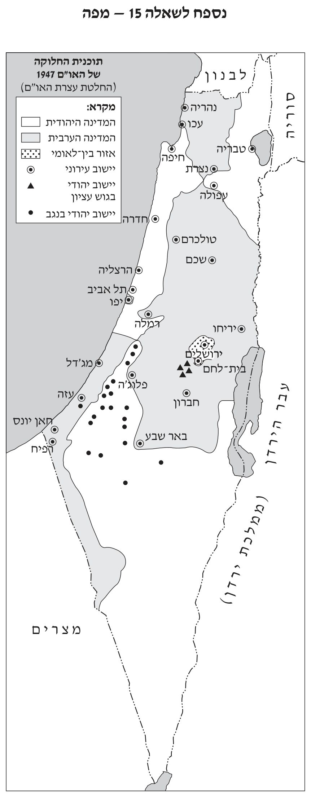</a><figcaption>נספח לשאלה 15 · לחצו על התמונה כדי להגדיל</figcaption></figure>
<div class="bh-sub"><p class="bh-subq" id="lbl-h29q-24s-15-3">ציינו מה היה המעמד של גוש עציון ומה היה המעמד של הנגב על פי תוכנית החלוקה של האו&quot;ם בכ&quot;ט בנובמבר 1947.</p>
<textarea class="answer" data-id="h29q-24s-15-3" aria-labelledby="lbl-h29q-24s-15-3" rows="3" placeholder="כתבו כאן את התשובה שלכם..."></textarea></div>
<div class="bh-sub"><p class="bh-subq" id="lbl-h29q-24s-15-4">על פי נתונים מן המפה, הסבירו את הסיבה להבדל בין מעמדו של הנגב לבין מעמדו של גוש עציון בתוכנית החלוקה של האו&quot;ם.</p>
<textarea class="answer" data-id="h29q-24s-15-4" aria-labelledby="lbl-h29q-24s-15-4" rows="3" placeholder="כתבו כאן את התשובה שלכם..."></textarea></div>
<div class="bh-qkey" data-qkey="h29-24s-15" hidden></div>
</article>
<article class="bh-q" id="h29-24w-8">
<div class="bh-q-head"><span class="bh-exam">📅 בגרות חורף תשפ&quot;ד</span><span class="bh-qn">שאלה 8 בשאלון</span></div>
<h3 class="bh-qtitle">יהודים בארצות ערב במהלך מלחמת העצמאות</h3>
<p class="bh-ctx">מלחמת העצמאות השפיעה על מצבם של היהודים בארצות ערב.</p>
<div class="bh-sub"><p class="bh-subq" id="lbl-h29q-24w-8-1">הסבירו את מדיניותה של ממשלת עירק בנוגע לעליית יהודים לארץ־ישראל במהלך מלחמת העצמאות.</p>
<textarea class="answer" data-id="h29q-24w-8-1" aria-labelledby="lbl-h29q-24w-8-1" rows="3" placeholder="כתבו כאן את התשובה שלכם..."></textarea></div>
<div class="bh-sub"><p class="bh-subq" id="lbl-h29q-24w-8-2">הציגו את השינוי שחל במדיניות זו לאחר סיום המלחמה (1950).</p>
<textarea class="answer" data-id="h29q-24w-8-2" aria-labelledby="lbl-h29q-24w-8-2" rows="3" placeholder="כתבו כאן את התשובה שלכם..."></textarea></div>
<div class="bh-sub"><p class="bh-subq" id="lbl-h29q-24w-8-3">ציינו שם של מדינה ערבית נוספת שבה התגוררו יהודים, וציינו דוגמה אחת שמעידה על החמרה במצבם של היהודים במדינה זו במהלך מלחמת העצמאות.</p>
<textarea class="answer" data-id="h29q-24w-8-3" aria-labelledby="lbl-h29q-24w-8-3" rows="3" placeholder="כתבו כאן את התשובה שלכם..."></textarea></div>
<div class="bh-sub"><p class="bh-subq" id="lbl-h29q-24w-8-4">הסבירו את הסיבה להחמרה במצבם של יהודים אלה בתקופה זו, במדינה שציינתם.</p>
<textarea class="answer" data-id="h29q-24w-8-4" aria-labelledby="lbl-h29q-24w-8-4" rows="3" placeholder="כתבו כאן את התשובה שלכם..."></textarea></div>
<p class="bh-ctx"></p>
<div class="bh-qkey" data-qkey="h29-24w-8" hidden></div>
</article>
<article class="bh-q" id="h29-24w-9">
<div class="bh-q-head"><span class="bh-exam">📅 בגרות חורף תשפ&quot;ד</span><span class="bh-qn">שאלה 9 בשאלון</span></div>
<h3 class="bh-qtitle">מלחמת העצמאות ומלחמת ששת הימים</h3>
<p class="bh-ctx">בתוכנית פר&quot;ח למדתם על ההתמסרות למטרה שאפיינה את לוחמי גוש עציון בקרבות מלחמת העצמאות.</p>
<div class="bh-sub"><p class="bh-subq" id="lbl-h29q-24w-9-1">הציגו שתי דוגמאות להתמסרות למטרה של הלוחמים, מתוך הקדימון לסרט &quot;מכתבים מגוש עציון&quot; או מתוך הסרטון על יתומי גוש עציון.</p>
<textarea class="answer" data-id="h29q-24w-9-1" aria-labelledby="lbl-h29q-24w-9-1" rows="3" placeholder="כתבו כאן את התשובה שלכם..."></textarea></div>
<div class="bh-sub"><p class="bh-subq" id="lbl-h29q-24w-9-2">על פי מה שלמדתם בתוכנית פר&quot;ח, הסבירו את התפקיד של גוש עציון בהגנה על ירושלים.</p>
<textarea class="answer" data-id="h29q-24w-9-2" aria-labelledby="lbl-h29q-24w-9-2" rows="3" placeholder="כתבו כאן את התשובה שלכם..."></textarea></div>
<div class="bh-sub"><p class="bh-subq" id="lbl-h29q-24w-9-3">ציינו הישג אחד של מדינת ישראל בחזית ירדן במלחמת ששת הימים, והסבירו כיצד לדעתכם ההישג שציינתם ביטא סיום של תהליך שהחל במלחמת העצמאות.</p>
<textarea class="answer" data-id="h29q-24w-9-3" aria-labelledby="lbl-h29q-24w-9-3" rows="3" placeholder="כתבו כאן את התשובה שלכם..."></textarea></div>
<div class="bh-qkey" data-qkey="h29-24w-9" hidden></div>
</article>
<article class="bh-q" id="h29-24w-11">
<div class="bh-q-head"><span class="bh-exam">📅 בגרות חורף תשפ&quot;ד</span><span class="bh-qn">שאלה 11 בשאלון</span></div>
<details class="bh-passage"><summary><span aria-hidden="true">📄</span> הקטע שעליו מבוססת השאלה · לחצו כדי לקרוא</summary><div class="bh-passage-body">
<p class="bh-ctx">לפניכם קטע העוסק בהשתלשלות האירועים שהובילו לחילופי אש בין כוחות צה&quot;ל לכוחות האצ&quot;ל במהלך מלחמת העצמאות, וזכו לכינוי &quot;פרשת אלטלנה&quot;.</p>
<p class="bh-src-text">ב־21 ביוני 1948, במהלך מלחמת העצמאות, נורתה אש של חיילי צה&quot;ל על אוניית הנשק &quot;אלטלנה&quot; שהובאה ארצה בידי אנשי האצ&quot;ל. בחילופי האש על האונייה וביבשה נהרגו אנשי אצ&quot;ל וחיילי צה&quot;ל. בפרשה זו באו לידי ביטוי חוסר תקשורת, חשדנות ואיבה, והם הובילו למרחץ דמים, אשר כמעט גרם למלחמת אחים.</p>
<p class="bh-src-text">מה היה הרקע לפרשה זו? קדמה לה חתימה על הסכם הפסקת אש, ביוזמת האו&quot;ם, בין מדינת ישראל לבין הכוחות הערביים. הפסקת האש נמשכה כחודש, ובמהלכה הוטל איסור על אספקת נשק לצדדים הלוחמים. ראש הממשלה, דוד בן־גוריון, ידע שהמדינה זקוקה לנשק כאוויר לנשימה, אבל סבר שהפרת תנאי הפסקת האש תסכן את מעמדה הבין־לאומי של מדינת ישראל. הוא אומנם חשד שצבאות ערב מפרים את האיסור, אבל דאגתו הייתה נתונה ללגיטימיות של מדינת ישראל בעיני העולם. בו בזמן היה עליו לקבץ לצבא אחד, תחת פיקוד משותף, את ההגנה, האצ&quot;ל והלח&quot;י. אחרי שנים של חוסר אמון בין הצדדים, היה חשש כי אנשי האצ&quot;ל יתקשו לשרת תחת פיקודם של יריבים לשעבר. ימים אחדים לאחר ההכרזה על הסכם הפסקת האש מטעם האו&quot;ם, הסכימו בן־גוריון ומפקד האצ&quot;ל, מנחם בגין, על הצטרפות האצ&quot;ל לצה&quot;ל. ההסכם קבע שאנשי האצ&quot;ל יתגייסו לצבא החדש, נשקם יימסר לידי הצבא, והם יחדלו להיות גוף צבאי נפרד בתוך מדינת ישראל. עם זאת, ההסכם לא כלל את כוחות האצ&quot;ל שהוצבו בירושלים, משום שעל פי תוכנית החלוקה, ירושלים לא הייתה בשטח מדינת ישראל.</p>
<p class="bh-src-text">לפיכך, באותם הימים שבהם נשא ונתן בגין עם בן־גוריון על תנאי ההשתלבות של האצ&quot;ל בצה&quot;ל, המשיכו סניפי האצ&quot;ל בחו&quot;ל לשלוח נשק אל לוחמיהם בירושלים. נציגי האצ&quot;ל בחו&quot;ל אף רכשו אונייה, כינו אותה &quot;אלטלנה&quot; והעמיסו עליה נשק רב. כשהאונייה הייתה מוכנה ליציאה כבר נכנס לתוקף הסכם הפסקת האש. לפיכך החליטו מנהיגי האצ&quot;ל בפריז באופן חד־צדדי לשגר את &quot;אלטלנה&quot; בלי להודיע על כך לבגין, שכן הם ידעו כי הוא מחויב לתנאי הפסקת האש. לימים הודו ראשי האצ&quot;ל באירופה כי חרגו מסמכותם.</p>
<p class="bh-src-text">בגין שמע על הפלגת הספינה רק למוחרת יציאתה, מדיווח של &quot;רדיו לונדון&quot;. הוא הורה מייד לאלחוטנית שלו לשלוח שדר אל הספינה: &quot;לא להתקדם ולחכות להוראות&quot;, היא שידרה שוב ושוב אבל ללא מענה. כמה שעות אחר כך, כשהתברר שטעתה בקוד, הורה לה בגין לתקן את הקוד ולשדר שוב, ללא הועיל. לימים טען מפקד &quot;אלטלנה&quot; שלא הצליח לפענח את המסר ולכן המשיך במסעו. בגין הנסער הורה על שליחת מברק למשרדי האצ&quot;ל בפריז ולפיו אסור לספינה להתקרב לחופי הארץ, אולם ללא מענה. בגין מיהר להיפגש עם פקידי הממשלה כדי להדגיש באוזניהם שהספינה יצאה לדרך בלי רשותו. השאלה שהתעוררה הייתה מה לעשות בנשק לאחר שיפרקו אותו מהאונייה. הצעתו של בגין הייתה לתת את רובו לצה&quot;ל, ולהקצות 20% ממנו ללוחמי האצ&quot;ל בירושלים.</p>
<p class="bh-src-text">ואולם בן־גוריון חשש. הוא סבר כי מסירת נשק ללוחמי האצ&quot;ל תכשיל את מטרתו להקים צבא אחד ומאוחד, ועל כן סירב לשאת ולתת על חלוקת הנשק לפי אחוזים. איבתו רבת השנים של בן־גוריון לבגין הגיעה עתה לנקודת רתיחה: &quot;לא תהיינה כאן שתי מדינות ולא יהיו שני צבאות&quot;, אמר, &quot;ומר בגין לא יעשה מה שמתחשק לו. עלינו להחליט אם למסור את השלטון לידי בגין או להגיד לו שיחדל מפעולותיו הנפרדות. אם לא – נירה!&quot; בגין היה משוכנע כי הוא פעל בהגינות גמורה. אבל בן־גוריון סבר כי בגין מערער על מנהיגותו והודיע כי אם לא תהיה לו ברירה – יפעיל כוח.</p>
<p class="bh-src-text">כמה שעות לאחר שהגיעה &quot;אלטלנה&quot; לכפר ויתקין פרצו חילופי האש. האונייה המשיכה הלאה לחופי תל אביב, ושם ירו עליה כוחות צה&quot;ל. בגין דחק באנשיו שלא להילחם בחזרה, אולם אנשי האצ&quot;ל שעל הסיפון הפרו את הוראתו. עם תום הקרבות נשא בגין נאום מתחנת הרדיו של האצ&quot;ל. שוב ושוב אמר: &quot;אל תרימו יד על אח... אסור כי נשק עברי יפעל נגד לוחמים עברים!&quot; האזהרה מפני מלחמת אחים חזרה לכל אורך הנאום: &quot;לא תהיה מלחמת אחים בעוד האויב בשער&quot;.</p>
<p class="bh-cite">(מעובד על פי ד&#x27; גורדיס, מנחם בגין, המאבק על נשמתה של ישראל, כתר, 2015, עמ&#x27; 92–109)</p>
<p class="bh-src-text"></p>
</div></details>
<p class="bh-ctx">דוד בן־גוריון ייחס חשיבות רבה לעניין ההכרה (הלגיטימיות) הבין־לאומית במדינת ישראל, על אף המחיר שהיה כרוך בכך.</p>
<div class="bh-sub"><p class="bh-subq" id="lbl-h29q-24w-11-1">הסבירו כיצד שני החלקים של קביעה זו באים לידי ביטוי בקטע.</p>
<textarea class="answer" data-id="h29q-24w-11-1" aria-labelledby="lbl-h29q-24w-11-1" rows="3" placeholder="כתבו כאן את התשובה שלכם..."></textarea></div>
<div class="bh-sub"><p class="bh-subq" id="lbl-h29q-24w-11-2">בחרו וציינו שניים מן המונחים האלה: תוכנית בזל; הציונות המדינית; הצהרת בלפור; הצעת החלוקה של ועדת פיל; הכרזת האו&quot;ם בכ&quot;ט בנובמבר.</p>
<textarea class="answer" data-id="h29q-24w-11-2" aria-labelledby="lbl-h29q-24w-11-2" rows="3" placeholder="כתבו כאן את התשובה שלכם..."></textarea></div>
<div class="bh-sub"><p class="bh-subq" id="lbl-h29q-24w-11-3">הסבירו כיצד באה לידי ביטוי החשיבות שייחסו מנהיגים ציוניים לעניין ההכרה הבין־לאומית בכל אחד מן המונחים שציינתם.</p>
<textarea class="answer" data-id="h29q-24w-11-3" aria-labelledby="lbl-h29q-24w-11-3" rows="3" placeholder="כתבו כאן את התשובה שלכם..."></textarea></div>
<div class="bh-sub"><p class="bh-subq" id="lbl-h29q-24w-11-4">לדעתכם, האם ההנהגה המדינית אמורה להעניק משקל רב לעניין ההכרה הבין־לאומית? נמקו את תשובתכם.</p>
<textarea class="answer" data-id="h29q-24w-11-4" aria-labelledby="lbl-h29q-24w-11-4" rows="3" placeholder="כתבו כאן את התשובה שלכם..."></textarea></div>
<div class="bh-qkey" data-qkey="h29-24w-11" hidden></div>
</article>
<article class="bh-q" id="h29-24w-12">
<div class="bh-q-head"><span class="bh-exam">📅 בגרות חורף תשפ&quot;ד</span><span class="bh-qn">שאלה 12 בשאלון</span></div>
<details class="bh-passage"><summary><span aria-hidden="true">📄</span> הקטע שעליו מבוססת השאלה · לחצו כדי לקרוא</summary><div class="bh-passage-body">
<p class="bh-ctx">לפניכם קטע העוסק בהשתלשלות האירועים שהובילו לחילופי אש בין כוחות צה&quot;ל לכוחות האצ&quot;ל במהלך מלחמת העצמאות, וזכו לכינוי &quot;פרשת אלטלנה&quot;.</p>
<p class="bh-src-text">ב־21 ביוני 1948, במהלך מלחמת העצמאות, נורתה אש של חיילי צה&quot;ל על אוניית הנשק &quot;אלטלנה&quot; שהובאה ארצה בידי אנשי האצ&quot;ל. בחילופי האש על האונייה וביבשה נהרגו אנשי אצ&quot;ל וחיילי צה&quot;ל. בפרשה זו באו לידי ביטוי חוסר תקשורת, חשדנות ואיבה, והם הובילו למרחץ דמים, אשר כמעט גרם למלחמת אחים.</p>
<p class="bh-src-text">מה היה הרקע לפרשה זו? קדמה לה חתימה על הסכם הפסקת אש, ביוזמת האו&quot;ם, בין מדינת ישראל לבין הכוחות הערביים. הפסקת האש נמשכה כחודש, ובמהלכה הוטל איסור על אספקת נשק לצדדים הלוחמים. ראש הממשלה, דוד בן־גוריון, ידע שהמדינה זקוקה לנשק כאוויר לנשימה, אבל סבר שהפרת תנאי הפסקת האש תסכן את מעמדה הבין־לאומי של מדינת ישראל. הוא אומנם חשד שצבאות ערב מפרים את האיסור, אבל דאגתו הייתה נתונה ללגיטימיות של מדינת ישראל בעיני העולם. בו בזמן היה עליו לקבץ לצבא אחד, תחת פיקוד משותף, את ההגנה, האצ&quot;ל והלח&quot;י. אחרי שנים של חוסר אמון בין הצדדים, היה חשש כי אנשי האצ&quot;ל יתקשו לשרת תחת פיקודם של יריבים לשעבר. ימים אחדים לאחר ההכרזה על הסכם הפסקת האש מטעם האו&quot;ם, הסכימו בן־גוריון ומפקד האצ&quot;ל, מנחם בגין, על הצטרפות האצ&quot;ל לצה&quot;ל. ההסכם קבע שאנשי האצ&quot;ל יתגייסו לצבא החדש, נשקם יימסר לידי הצבא, והם יחדלו להיות גוף צבאי נפרד בתוך מדינת ישראל. עם זאת, ההסכם לא כלל את כוחות האצ&quot;ל שהוצבו בירושלים, משום שעל פי תוכנית החלוקה, ירושלים לא הייתה בשטח מדינת ישראל.</p>
<p class="bh-src-text">לפיכך, באותם הימים שבהם נשא ונתן בגין עם בן־גוריון על תנאי ההשתלבות של האצ&quot;ל בצה&quot;ל, המשיכו סניפי האצ&quot;ל בחו&quot;ל לשלוח נשק אל לוחמיהם בירושלים. נציגי האצ&quot;ל בחו&quot;ל אף רכשו אונייה, כינו אותה &quot;אלטלנה&quot; והעמיסו עליה נשק רב. כשהאונייה הייתה מוכנה ליציאה כבר נכנס לתוקף הסכם הפסקת האש. לפיכך החליטו מנהיגי האצ&quot;ל בפריז באופן חד־צדדי לשגר את &quot;אלטלנה&quot; בלי להודיע על כך לבגין, שכן הם ידעו כי הוא מחויב לתנאי הפסקת האש. לימים הודו ראשי האצ&quot;ל באירופה כי חרגו מסמכותם.</p>
<p class="bh-src-text">בגין שמע על הפלגת הספינה רק למוחרת יציאתה, מדיווח של &quot;רדיו לונדון&quot;. הוא הורה מייד לאלחוטנית שלו לשלוח שדר אל הספינה: &quot;לא להתקדם ולחכות להוראות&quot;, היא שידרה שוב ושוב אבל ללא מענה. כמה שעות אחר כך, כשהתברר שטעתה בקוד, הורה לה בגין לתקן את הקוד ולשדר שוב, ללא הועיל. לימים טען מפקד &quot;אלטלנה&quot; שלא הצליח לפענח את המסר ולכן המשיך במסעו. בגין הנסער הורה על שליחת מברק למשרדי האצ&quot;ל בפריז ולפיו אסור לספינה להתקרב לחופי הארץ, אולם ללא מענה. בגין מיהר להיפגש עם פקידי הממשלה כדי להדגיש באוזניהם שהספינה יצאה לדרך בלי רשותו. השאלה שהתעוררה הייתה מה לעשות בנשק לאחר שיפרקו אותו מהאונייה. הצעתו של בגין הייתה לתת את רובו לצה&quot;ל, ולהקצות 20% ממנו ללוחמי האצ&quot;ל בירושלים.</p>
<p class="bh-src-text">ואולם בן־גוריון חשש. הוא סבר כי מסירת נשק ללוחמי האצ&quot;ל תכשיל את מטרתו להקים צבא אחד ומאוחד, ועל כן סירב לשאת ולתת על חלוקת הנשק לפי אחוזים. איבתו רבת השנים של בן־גוריון לבגין הגיעה עתה לנקודת רתיחה: &quot;לא תהיינה כאן שתי מדינות ולא יהיו שני צבאות&quot;, אמר, &quot;ומר בגין לא יעשה מה שמתחשק לו. עלינו להחליט אם למסור את השלטון לידי בגין או להגיד לו שיחדל מפעולותיו הנפרדות. אם לא – נירה!&quot; בגין היה משוכנע כי הוא פעל בהגינות גמורה. אבל בן־גוריון סבר כי בגין מערער על מנהיגותו והודיע כי אם לא תהיה לו ברירה – יפעיל כוח.</p>
<p class="bh-src-text">כמה שעות לאחר שהגיעה &quot;אלטלנה&quot; לכפר ויתקין פרצו חילופי האש. האונייה המשיכה הלאה לחופי תל אביב, ושם ירו עליה כוחות צה&quot;ל. בגין דחק באנשיו שלא להילחם בחזרה, אולם אנשי האצ&quot;ל שעל הסיפון הפרו את הוראתו. עם תום הקרבות נשא בגין נאום מתחנת הרדיו של האצ&quot;ל. שוב ושוב אמר: &quot;אל תרימו יד על אח... אסור כי נשק עברי יפעל נגד לוחמים עברים!&quot; האזהרה מפני מלחמת אחים חזרה לכל אורך הנאום: &quot;לא תהיה מלחמת אחים בעוד האויב בשער&quot;.</p>
<p class="bh-cite">(מעובד על פי ד&#x27; גורדיס, מנחם בגין, המאבק על נשמתה של ישראל, כתר, 2015, עמ&#x27; 92–109)</p>
<p class="bh-src-text"></p>
</div></details>
<div class="bh-sub"><p class="bh-subq" id="lbl-h29q-24w-12-1">על פי מה שלמדתם על תנועת המרי העברי (1945), הציגו את השינוי שחל במעמדם של האצ&quot;ל והלח&quot;י בתקופת פעילותה של התנועה.</p>
<textarea class="answer" data-id="h29q-24w-12-1" aria-labelledby="lbl-h29q-24w-12-1" rows="3" placeholder="כתבו כאן את התשובה שלכם..."></textarea></div>
<div class="bh-sub"><p class="bh-subq" id="lbl-h29q-24w-12-2">הסבירו מדוע פורקה תנועת המרי העברי.</p>
<textarea class="answer" data-id="h29q-24w-12-2" aria-labelledby="lbl-h29q-24w-12-2" rows="3" placeholder="כתבו כאן את התשובה שלכם..."></textarea></div>
<div class="bh-sub"><p class="bh-subq" id="lbl-h29q-24w-12-3">על פי הקטע, הציגו את השינוי במעמדו של האצ&quot;ל בהתאם להסכם שנחתם בין בן־גוריון לבין בגין במהלך מלחמת העצמאות.</p>
<textarea class="answer" data-id="h29q-24w-12-3" aria-labelledby="lbl-h29q-24w-12-3" rows="3" placeholder="כתבו כאן את התשובה שלכם..."></textarea></div>
<div class="bh-sub"><p class="bh-subq" id="lbl-h29q-24w-12-4">על פי הקטע, הסבירו מדוע ירושלים לא נכללה בהסכם זה.</p>
<textarea class="answer" data-id="h29q-24w-12-4" aria-labelledby="lbl-h29q-24w-12-4" rows="3" placeholder="כתבו כאן את התשובה שלכם..."></textarea></div>
<div class="bh-qkey" data-qkey="h29-24w-12" hidden></div>
</article>
<article class="bh-q" id="h29-24w-13">
<div class="bh-q-head"><span class="bh-exam">📅 בגרות חורף תשפ&quot;ד</span><span class="bh-qn">שאלה 13 בשאלון</span></div>
<details class="bh-passage"><summary><span aria-hidden="true">📄</span> הקטע שעליו מבוססת השאלה · לחצו כדי לקרוא</summary><div class="bh-passage-body">
<p class="bh-ctx">לפניכם קטע העוסק בהשתלשלות האירועים שהובילו לחילופי אש בין כוחות צה&quot;ל לכוחות האצ&quot;ל במהלך מלחמת העצמאות, וזכו לכינוי &quot;פרשת אלטלנה&quot;.</p>
<p class="bh-src-text">ב־21 ביוני 1948, במהלך מלחמת העצמאות, נורתה אש של חיילי צה&quot;ל על אוניית הנשק &quot;אלטלנה&quot; שהובאה ארצה בידי אנשי האצ&quot;ל. בחילופי האש על האונייה וביבשה נהרגו אנשי אצ&quot;ל וחיילי צה&quot;ל. בפרשה זו באו לידי ביטוי חוסר תקשורת, חשדנות ואיבה, והם הובילו למרחץ דמים, אשר כמעט גרם למלחמת אחים.</p>
<p class="bh-src-text">מה היה הרקע לפרשה זו? קדמה לה חתימה על הסכם הפסקת אש, ביוזמת האו&quot;ם, בין מדינת ישראל לבין הכוחות הערביים. הפסקת האש נמשכה כחודש, ובמהלכה הוטל איסור על אספקת נשק לצדדים הלוחמים. ראש הממשלה, דוד בן־גוריון, ידע שהמדינה זקוקה לנשק כאוויר לנשימה, אבל סבר שהפרת תנאי הפסקת האש תסכן את מעמדה הבין־לאומי של מדינת ישראל. הוא אומנם חשד שצבאות ערב מפרים את האיסור, אבל דאגתו הייתה נתונה ללגיטימיות של מדינת ישראל בעיני העולם. בו בזמן היה עליו לקבץ לצבא אחד, תחת פיקוד משותף, את ההגנה, האצ&quot;ל והלח&quot;י. אחרי שנים של חוסר אמון בין הצדדים, היה חשש כי אנשי האצ&quot;ל יתקשו לשרת תחת פיקודם של יריבים לשעבר. ימים אחדים לאחר ההכרזה על הסכם הפסקת האש מטעם האו&quot;ם, הסכימו בן־גוריון ומפקד האצ&quot;ל, מנחם בגין, על הצטרפות האצ&quot;ל לצה&quot;ל. ההסכם קבע שאנשי האצ&quot;ל יתגייסו לצבא החדש, נשקם יימסר לידי הצבא, והם יחדלו להיות גוף צבאי נפרד בתוך מדינת ישראל. עם זאת, ההסכם לא כלל את כוחות האצ&quot;ל שהוצבו בירושלים, משום שעל פי תוכנית החלוקה, ירושלים לא הייתה בשטח מדינת ישראל.</p>
<p class="bh-src-text">לפיכך, באותם הימים שבהם נשא ונתן בגין עם בן־גוריון על תנאי ההשתלבות של האצ&quot;ל בצה&quot;ל, המשיכו סניפי האצ&quot;ל בחו&quot;ל לשלוח נשק אל לוחמיהם בירושלים. נציגי האצ&quot;ל בחו&quot;ל אף רכשו אונייה, כינו אותה &quot;אלטלנה&quot; והעמיסו עליה נשק רב. כשהאונייה הייתה מוכנה ליציאה כבר נכנס לתוקף הסכם הפסקת האש. לפיכך החליטו מנהיגי האצ&quot;ל בפריז באופן חד־צדדי לשגר את &quot;אלטלנה&quot; בלי להודיע על כך לבגין, שכן הם ידעו כי הוא מחויב לתנאי הפסקת האש. לימים הודו ראשי האצ&quot;ל באירופה כי חרגו מסמכותם.</p>
<p class="bh-src-text">בגין שמע על הפלגת הספינה רק למוחרת יציאתה, מדיווח של &quot;רדיו לונדון&quot;. הוא הורה מייד לאלחוטנית שלו לשלוח שדר אל הספינה: &quot;לא להתקדם ולחכות להוראות&quot;, היא שידרה שוב ושוב אבל ללא מענה. כמה שעות אחר כך, כשהתברר שטעתה בקוד, הורה לה בגין לתקן את הקוד ולשדר שוב, ללא הועיל. לימים טען מפקד &quot;אלטלנה&quot; שלא הצליח לפענח את המסר ולכן המשיך במסעו. בגין הנסער הורה על שליחת מברק למשרדי האצ&quot;ל בפריז ולפיו אסור לספינה להתקרב לחופי הארץ, אולם ללא מענה. בגין מיהר להיפגש עם פקידי הממשלה כדי להדגיש באוזניהם שהספינה יצאה לדרך בלי רשותו. השאלה שהתעוררה הייתה מה לעשות בנשק לאחר שיפרקו אותו מהאונייה. הצעתו של בגין הייתה לתת את רובו לצה&quot;ל, ולהקצות 20% ממנו ללוחמי האצ&quot;ל בירושלים.</p>
<p class="bh-src-text">ואולם בן־גוריון חשש. הוא סבר כי מסירת נשק ללוחמי האצ&quot;ל תכשיל את מטרתו להקים צבא אחד ומאוחד, ועל כן סירב לשאת ולתת על חלוקת הנשק לפי אחוזים. איבתו רבת השנים של בן־גוריון לבגין הגיעה עתה לנקודת רתיחה: &quot;לא תהיינה כאן שתי מדינות ולא יהיו שני צבאות&quot;, אמר, &quot;ומר בגין לא יעשה מה שמתחשק לו. עלינו להחליט אם למסור את השלטון לידי בגין או להגיד לו שיחדל מפעולותיו הנפרדות. אם לא – נירה!&quot; בגין היה משוכנע כי הוא פעל בהגינות גמורה. אבל בן־גוריון סבר כי בגין מערער על מנהיגותו והודיע כי אם לא תהיה לו ברירה – יפעיל כוח.</p>
<p class="bh-src-text">כמה שעות לאחר שהגיעה &quot;אלטלנה&quot; לכפר ויתקין פרצו חילופי האש. האונייה המשיכה הלאה לחופי תל אביב, ושם ירו עליה כוחות צה&quot;ל. בגין דחק באנשיו שלא להילחם בחזרה, אולם אנשי האצ&quot;ל שעל הסיפון הפרו את הוראתו. עם תום הקרבות נשא בגין נאום מתחנת הרדיו של האצ&quot;ל. שוב ושוב אמר: &quot;אל תרימו יד על אח... אסור כי נשק עברי יפעל נגד לוחמים עברים!&quot; האזהרה מפני מלחמת אחים חזרה לכל אורך הנאום: &quot;לא תהיה מלחמת אחים בעוד האויב בשער&quot;.</p>
<p class="bh-cite">(מעובד על פי ד&#x27; גורדיס, מנחם בגין, המאבק על נשמתה של ישראל, כתר, 2015, עמ&#x27; 92–109)</p>
<p class="bh-src-text"></p>
</div></details>
<p class="bh-ctx">ככל הנראה, חשדנותו של בן־גוריון כלפי בגין בפרשת אלטלנה התגברה בשל מחלוקות אידאולוגיות מן העבר.</p>
<div class="bh-sub"><p class="bh-subq" id="lbl-h29q-24w-13-1">על פי הקטע, הסבירו כיצד פירש בן־גוריון את הצעתו של בגין לפקידי הממשלה, לאחר שנודע על הגעתה הצפויה של אלטלנה.</p>
<textarea class="answer" data-id="h29q-24w-13-1" aria-labelledby="lbl-h29q-24w-13-1" rows="3" placeholder="כתבו כאן את התשובה שלכם..."></textarea></div>
<div class="bh-sub"><p class="bh-subq" id="lbl-h29q-24w-13-2">על פי מה שלמדתם, ציינו דוגמה אחת למחלוקת שהייתה בין ההגנה לבין האצ&quot;ל בתקופת המנדט.</p>
<textarea class="answer" data-id="h29q-24w-13-2" aria-labelledby="lbl-h29q-24w-13-2" rows="3" placeholder="כתבו כאן את התשובה שלכם..."></textarea></div>
<div class="bh-sub"><p class="bh-subq" id="lbl-h29q-24w-13-3">הסבירו את העמדות של שני הצדדים במחלוקת זו.</p>
<textarea class="answer" data-id="h29q-24w-13-3" aria-labelledby="lbl-h29q-24w-13-3" rows="3" placeholder="כתבו כאן את התשובה שלכם..."></textarea></div>
<p class="bh-ctx"></p>
<div class="bh-qkey" data-qkey="h29-24w-13" hidden></div>
</article>
<article class="bh-q" id="h29-23w-8">
<div class="bh-q-head"><span class="bh-exam">📅 בגרות חורף תשפ&quot;ג</span><span class="bh-qn">שאלה 8 בשאלון</span></div>
<h3 class="bh-qtitle">הסכמי שביתת הנשק</h3>
<p class="bh-ctx">עם תום מלחמת העצמאות חתמו הצדדים על הסכמי שביתת נשק.</p>
<div class="bh-sub"><p class="bh-subq" id="lbl-h29q-23w-8-1">הסבירו מדוע הייתה מדינת ישראל מעוניינת בהסכמי שביתת נשק.</p>
<textarea class="answer" data-id="h29q-23w-8-1" aria-labelledby="lbl-h29q-23w-8-1" rows="3" placeholder="כתבו כאן את התשובה שלכם..."></textarea></div>
<div class="bh-sub"><p class="bh-subq" id="lbl-h29q-23w-8-2">הציגו שני קשיים שהיו למדינת ישראל בעקבות הסכם שביתת הנשק שנחתם עם ירדן.</p>
<textarea class="answer" data-id="h29q-23w-8-2" aria-labelledby="lbl-h29q-23w-8-2" rows="3" placeholder="כתבו כאן את התשובה שלכם..."></textarea></div>
<div class="bh-sub"><p class="bh-subq" id="lbl-h29q-23w-8-3">הציגו קושי אחד שהיה למדינת ישראל בעקבות ההסכם עם סוריה.</p>
<textarea class="answer" data-id="h29q-23w-8-3" aria-labelledby="lbl-h29q-23w-8-3" rows="3" placeholder="כתבו כאן את התשובה שלכם..."></textarea></div>
<div class="bh-qkey" data-qkey="h29-23w-8" hidden></div>
</article>
<article class="bh-q" id="h29-23w-12">
<div class="bh-q-head"><span class="bh-exam">📅 בגרות חורף תשפ&quot;ג</span><span class="bh-qn">שאלה 12 בשאלון</span></div>
<details class="bh-passage"><summary><span aria-hidden="true">📄</span> הקטע שעליו מבוססת השאלה · לחצו כדי לקרוא</summary><div class="bh-passage-body">
<p class="bh-ctx">לפניכם סיפורו של הנער ניצול השואה יצחק רוט, על עלייתו ארצה מאירופה באוניית מעפילים ועל השתתפותו במלחמת העצמאות.</p>
<p class="bh-src-text">כשנתיים לאחר השחרור מאושוויץ החליט יצחק לעלות לארץ־ישראל... הוא הצטרף לקבוצת הכשרה של &quot;פועלי אגודת ישראל&quot; בהונגריה, והפליג איתה באוניית מעפילים... הבריטים השקיעו מאמצים רבים למנוע את יציאת האונייה, בדרכים דיפלומטיות [הידברות מדינית] ובדרכים אחרות...</p>
<p class="bh-src-text">ב־27 בדצמבר 1947 הפליגו שתי אוניות מנמל בולגריה: &#x27;פאן יורק&#x27; ו&#x27;פאן קרסנט&#x27;, ועל סיפונן היו 15,260 יהודים ובהם גם יצחק. במקביל ליציאת האוניות הופעלו כל הקשרים הדיפלומטיים כדי להעביר לאמריקנים ולבריטים מסר כי עתה המוסדות הציוניים מעוניינים למצוא פתרון בדרכי שלום, בניגוד לדרמה שנוצרה כמה חודשים קודם לכן, בעת גירוש האונייה &quot;אקסודוס&quot;. בן גוריון הגיע להסכמה עם הבריטים כי האוניות יגיעו ישירות לקפריסין. הוא קרא לאוניות בשמות עבריים: &quot;קיבוץ גלויות&quot; ו&quot;עצמאות&quot;... תקופת ההפלגה לא הייתה קלה ליצחק. באונייה היו אלפי אנשים, הצפיפות הייתה גדולה והתנאים לא התאימו למגורים... ההגעה למחנות המעצר בקפריסין הייתה מאכזבת, אך לוותה בתחושת הקלה שההפלגה הקשה הסתיימה.</p>
<p class="bh-src-text">למחנות המעצר בקפריסין הסתננו אנשי הגנה ופלמ&quot;ח, והם החלו לאמן חלק מן העצורים: קרבות פנים אל פנים ואימוני אקדח &#x27;על יבש&#x27; בעזרת כמה אקדחים שהוברחו למחנה. מדריך מן הפלמ&quot;ח היה מאמן בכל פעם קבוצה של חמישה עצורים, כדי שלא לעורר את חשדם של הבריטים. יצחק הצטרף לאימונים.</p>
<p class="bh-src-text">מאות יהודים ניסו לברוח מקפריסין בדרכים שונות, אך רבים מהם נתפסו על ידי הבריטים והושבו אל המחנות... באחד הימים המדריך שאימן את יצחק וחבריו שאל אותם אם ירצו לברוח. &quot;מתי?&quot; שאלו. &quot;הערב&quot;, הייתה התשובה. כולם הסכימו בהתלהבות. עם ערב... זחלו יצחק וחבריו במנהרה לכיוון הים, שם חיכתה להם ספינת דייגים קטנה של קפריסאים. ששת הבורחים שילמו לדייגים, עלו על הספינה ושטו איתה ללב ים, שם חיכתה אונייה גדולה יותר של &quot;המוסד לעלייה ב&#x27; &quot;, זרוע ההעפלה של ההגנה... יצחק הגיע לארץ בעיצומה של מלחמת העצמאות, והצטרף לקבוצה של שורדי שואה ויוצאי קפריסין שהגיעה למושב הדתי כפר הרא&quot;ה. במושב, על יד הישיבה, הוקם מחנה אוהלים, ושם החלו כשבעים עולים חדשים באימונים לקראת השתתפות במלחמת העצמאות...</p>
<p class="bh-src-text">מייד עם סיום שישה שבועות של אימונים נשלחו יצחק וחבריו לחזית. הוטל עליהם להגיע להרי ירושלים ולהצטרף לכוחות הפלמ&quot;ח, שאיבדו לוחמים בקרבות לפריצת הדרך לירושלים... לפני שיצאו מכפר הרא&quot;ה נערך בישיבה מסדר פרידה. הרב משה צבי נריה, ראש ישיבת כפר הרא&quot;ה, הגיע למסדר, בירך בהתרגשות את כל העולים לכיוון ירושלים וחילק לכל לוחם ספר תהילים קטן...</p>
<p class="bh-src-text">המגויסים הוסעו עד קיבוץ חולדה. ממנו יצאו במסע רגלי לקריית ענבים, ושם הצטרפו רשמית לגדוד הרביעי של הפלמ&quot;ח... יצחק השתתף בקרבות ובמערכה לפריצת הדרך לירושלים. בכל ערב הייתה היחידה יוצאת לפעולה, עולה למשלט או יוצאת לחלץ שיירה שנתקעה. בבוקר היו חוזרים לקריית ענבים, אוכלים והולכים לישון כדי לצבור כוחות לקראת המשימות שיגיעו בלילה הבא. &quot;היינו כל כך עייפים&quot; סיפר יצחק, &quot;אבל היה צריך להציל את ירושלים&quot;...</p>
<p class="bh-cite">(מעובד על פי: אביחי ברג, &quot;ודרך אין אחרת&quot; – לוחמי תש&quot;ח בסיפורם האישי על הקמת המדינה, הוצאת סלע מאיר, 2021, עמודים 192–203)</p>
</div></details>
<div class="bh-sub"><p class="bh-subq" id="lbl-h29q-23w-12-1">על פי הקטע, ציינו שתי פעולות מחתרתיות של ההגנה והפלמ&quot;ח במחנות המעצר בקפריסין.</p>
<textarea class="answer" data-id="h29q-23w-12-1" aria-labelledby="lbl-h29q-23w-12-1" rows="3" placeholder="כתבו כאן את התשובה שלכם..."></textarea></div>
<div class="bh-sub"><p class="bh-subq" id="lbl-h29q-23w-12-2">על פי מה שלמדתם, הציגו שתי דוגמאות לפעילויות מחתרתיות של ארגוני הפורשים (האצ&quot;ל והלח&quot;י) בארץ־ישראל בשנים 1945–1947.</p>
<textarea class="answer" data-id="h29q-23w-12-2" aria-labelledby="lbl-h29q-23w-12-2" rows="3" placeholder="כתבו כאן את התשובה שלכם..."></textarea></div>
<div class="bh-sub"><p class="bh-subq" id="lbl-h29q-23w-12-3">הסבירו מדוע פעילותם של ארגוני הפורשים עוררה מחלוקת ביישוב.</p>
<textarea class="answer" data-id="h29q-23w-12-3" aria-labelledby="lbl-h29q-23w-12-3" rows="3" placeholder="כתבו כאן את התשובה שלכם..."></textarea></div>
<div class="bh-qkey" data-qkey="h29-23w-12" hidden></div>
</article>
<article class="bh-q" id="h29-23w-13">
<div class="bh-q-head"><span class="bh-exam">📅 בגרות חורף תשפ&quot;ג</span><span class="bh-qn">שאלה 13 בשאלון</span></div>
<details class="bh-passage"><summary><span aria-hidden="true">📄</span> הקטע שעליו מבוססת השאלה · לחצו כדי לקרוא</summary><div class="bh-passage-body">
<p class="bh-ctx">לפניכם סיפורו של הנער ניצול השואה יצחק רוט, על עלייתו ארצה מאירופה באוניית מעפילים ועל השתתפותו במלחמת העצמאות.</p>
<p class="bh-src-text">כשנתיים לאחר השחרור מאושוויץ החליט יצחק לעלות לארץ־ישראל... הוא הצטרף לקבוצת הכשרה של &quot;פועלי אגודת ישראל&quot; בהונגריה, והפליג איתה באוניית מעפילים... הבריטים השקיעו מאמצים רבים למנוע את יציאת האונייה, בדרכים דיפלומטיות [הידברות מדינית] ובדרכים אחרות...</p>
<p class="bh-src-text">ב־27 בדצמבר 1947 הפליגו שתי אוניות מנמל בולגריה: &#x27;פאן יורק&#x27; ו&#x27;פאן קרסנט&#x27;, ועל סיפונן היו 15,260 יהודים ובהם גם יצחק. במקביל ליציאת האוניות הופעלו כל הקשרים הדיפלומטיים כדי להעביר לאמריקנים ולבריטים מסר כי עתה המוסדות הציוניים מעוניינים למצוא פתרון בדרכי שלום, בניגוד לדרמה שנוצרה כמה חודשים קודם לכן, בעת גירוש האונייה &quot;אקסודוס&quot;. בן גוריון הגיע להסכמה עם הבריטים כי האוניות יגיעו ישירות לקפריסין. הוא קרא לאוניות בשמות עבריים: &quot;קיבוץ גלויות&quot; ו&quot;עצמאות&quot;... תקופת ההפלגה לא הייתה קלה ליצחק. באונייה היו אלפי אנשים, הצפיפות הייתה גדולה והתנאים לא התאימו למגורים... ההגעה למחנות המעצר בקפריסין הייתה מאכזבת, אך לוותה בתחושת הקלה שההפלגה הקשה הסתיימה.</p>
<p class="bh-src-text">למחנות המעצר בקפריסין הסתננו אנשי הגנה ופלמ&quot;ח, והם החלו לאמן חלק מן העצורים: קרבות פנים אל פנים ואימוני אקדח &#x27;על יבש&#x27; בעזרת כמה אקדחים שהוברחו למחנה. מדריך מן הפלמ&quot;ח היה מאמן בכל פעם קבוצה של חמישה עצורים, כדי שלא לעורר את חשדם של הבריטים. יצחק הצטרף לאימונים.</p>
<p class="bh-src-text">מאות יהודים ניסו לברוח מקפריסין בדרכים שונות, אך רבים מהם נתפסו על ידי הבריטים והושבו אל המחנות... באחד הימים המדריך שאימן את יצחק וחבריו שאל אותם אם ירצו לברוח. &quot;מתי?&quot; שאלו. &quot;הערב&quot;, הייתה התשובה. כולם הסכימו בהתלהבות. עם ערב... זחלו יצחק וחבריו במנהרה לכיוון הים, שם חיכתה להם ספינת דייגים קטנה של קפריסאים. ששת הבורחים שילמו לדייגים, עלו על הספינה ושטו איתה ללב ים, שם חיכתה אונייה גדולה יותר של &quot;המוסד לעלייה ב&#x27; &quot;, זרוע ההעפלה של ההגנה... יצחק הגיע לארץ בעיצומה של מלחמת העצמאות, והצטרף לקבוצה של שורדי שואה ויוצאי קפריסין שהגיעה למושב הדתי כפר הרא&quot;ה. במושב, על יד הישיבה, הוקם מחנה אוהלים, ושם החלו כשבעים עולים חדשים באימונים לקראת השתתפות במלחמת העצמאות...</p>
<p class="bh-src-text">מייד עם סיום שישה שבועות של אימונים נשלחו יצחק וחבריו לחזית. הוטל עליהם להגיע להרי ירושלים ולהצטרף לכוחות הפלמ&quot;ח, שאיבדו לוחמים בקרבות לפריצת הדרך לירושלים... לפני שיצאו מכפר הרא&quot;ה נערך בישיבה מסדר פרידה. הרב משה צבי נריה, ראש ישיבת כפר הרא&quot;ה, הגיע למסדר, בירך בהתרגשות את כל העולים לכיוון ירושלים וחילק לכל לוחם ספר תהילים קטן...</p>
<p class="bh-src-text">המגויסים הוסעו עד קיבוץ חולדה. ממנו יצאו במסע רגלי לקריית ענבים, ושם הצטרפו רשמית לגדוד הרביעי של הפלמ&quot;ח... יצחק השתתף בקרבות ובמערכה לפריצת הדרך לירושלים. בכל ערב הייתה היחידה יוצאת לפעולה, עולה למשלט או יוצאת לחלץ שיירה שנתקעה. בבוקר היו חוזרים לקריית ענבים, אוכלים והולכים לישון כדי לצבור כוחות לקראת המשימות שיגיעו בלילה הבא. &quot;היינו כל כך עייפים&quot; סיפר יצחק, &quot;אבל היה צריך להציל את ירושלים&quot;...</p>
<p class="bh-cite">(מעובד על פי: אביחי ברג, &quot;ודרך אין אחרת&quot; – לוחמי תש&quot;ח בסיפורם האישי על הקמת המדינה, הוצאת סלע מאיר, 2021, עמודים 192–203)</p>
</div></details>
<div class="bh-sub"><p class="bh-subq" id="lbl-h29q-23w-13-1">על פי הקטע, ציינו קושי אחד שהיה ליצחק ולחבריו בתקופת הלחימה בקריית ענבים.</p>
<textarea class="answer" data-id="h29q-23w-13-1" aria-labelledby="lbl-h29q-23w-13-1" rows="3" placeholder="כתבו כאן את התשובה שלכם..."></textarea></div>
<div class="bh-sub"><p class="bh-subq" id="lbl-h29q-23w-13-2">על פי מה שלמדתם, הציגו שני קשיים נוספים שחוו הלוחמים שהגנו על הדרך לירושלים בשלב הראשון של מלחמת העצמאות.</p>
<textarea class="answer" data-id="h29q-23w-13-2" aria-labelledby="lbl-h29q-23w-13-2" rows="3" placeholder="כתבו כאן את התשובה שלכם..."></textarea></div>
<p class="bh-ctx">יצחק מספר שהרב משה צבי נריה השתתף במסדר הפרידה שנערך בכפר הרא&quot;ה כדי לעודד את הלוחמים בגזרת ירושלים. הרב קוק והאדמו&quot;ר מפיאסצ&#x27;נה הם רבנים נוספים שפעלו בתקופות שונות כדי לעודד קבוצות ויחידים בעם ישראל.</p>
<div class="bh-sub"><p class="bh-subq" id="lbl-h29q-23w-13-3">על פי מה שלמדתם, בחרו באחד מהם, והסבירו את פועלו אל מול קשיי התקופה.</p>
<textarea class="answer" data-id="h29q-23w-13-3" aria-labelledby="lbl-h29q-23w-13-3" rows="3" placeholder="כתבו כאן את התשובה שלכם..."></textarea></div>
<div class="bh-qkey" data-qkey="h29-23w-13" hidden></div>
</article>
<article class="bh-q" id="h29-23w-15">
<div class="bh-q-head"><span class="bh-exam">📅 בגרות חורף תשפ&quot;ג</span><span class="bh-qn">שאלה 15 בשאלון</span></div>
<h3 class="bh-qtitle">מלחמת ששת הימים</h3>
<p class="bh-ctx">בנספח לשאלה זו מוצגת קריקטורה שפורסמה בעיתונות הישראלית במהלך תקופת ההמתנה שלפני המלחמה.</p>
<figure class="bh-fig"><a href="assets/h29/h29-23w-n15-2.jpg" target="_blank" rel="noopener">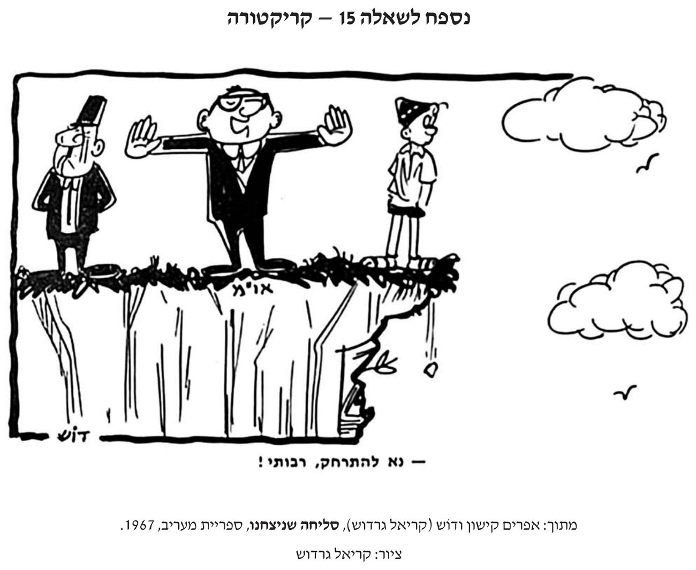</a><figcaption>נספח לשאלה 15 · לחצו על התמונה כדי להגדיל</figcaption></figure>
<div class="bh-sub"><p class="bh-subq" id="lbl-h29q-23w-15-1"><span class="bh-letter">א</span> ציינו את התחושה שיוצר הקריקטורה ביקש לבטא לדעתכם. הסבירו את תשובתכם על פי שני רכיבים מן הקריקטורה.</p>
<textarea class="answer" data-id="h29q-23w-15-1" aria-labelledby="lbl-h29q-23w-15-1" rows="3" placeholder="כתבו כאן את התשובה שלכם..."></textarea></div>
<div class="bh-sub"><p class="bh-subq" id="lbl-h29q-23w-15-2">על פי מה שלמדתם, הציגו שני גורמים לתחושה זו במהלך התקופה שקדמה למלחמת ששת הימים.</p>
<textarea class="answer" data-id="h29q-23w-15-2" aria-labelledby="lbl-h29q-23w-15-2" rows="3" placeholder="כתבו כאן את התשובה שלכם..."></textarea></div>
<div class="bh-sub"><p class="bh-subq" id="lbl-h29q-23w-15-3"><span class="bh-letter">ב</span> הציגו שתיים מן התוצאות של מלחמת ששת הימים.</p>
<textarea class="answer" data-id="h29q-23w-15-3" aria-labelledby="lbl-h29q-23w-15-3" rows="3" placeholder="כתבו כאן את התשובה שלכם..."></textarea></div>
<div class="bh-sub"><p class="bh-subq" id="lbl-h29q-23w-15-4">הציגו את המהפך שחל באווירה הציבורית בעקבות תוצאות המלחמה.</p>
<textarea class="answer" data-id="h29q-23w-15-4" aria-labelledby="lbl-h29q-23w-15-4" rows="3" placeholder="כתבו כאן את התשובה שלכם..."></textarea></div>
<div class="bh-qkey" data-qkey="h29-23w-15" hidden></div>
</article>
<article class="bh-q" id="h29-21s-7">
<div class="bh-q-head"><span class="bh-exam">📅 בגרות קיץ תשפ&quot;א</span><span class="bh-qn">שאלה 7 בשאלון</span></div>
<h3 class="bh-qtitle">&quot;תנועת המרי העברי&quot; והעברת שאלת ארץ־ישראל לאו&quot;ם</h3>
<p class="bh-ctx">פעילות &quot;תנועת המרי העברי&quot; (1945-1946) הייתה אחד הגורמים להחלטת הבריטים להעביר את שאלת ארץ־ישראל לאו&quot;ם.</p>
<div class="bh-sub"><p class="bh-subq" id="lbl-h29q-21s-7-1">הסבר סיבה אחת שבגללה החליטו ראשי ההגנה, האצ&quot;ל והלח&quot;י לשתף פעולה ביניהם במאבק נגד הבריטים ולהקים את &quot;תנועת המרי העברי&quot;.</p>
<textarea class="answer" data-id="h29q-21s-7-1" aria-labelledby="lbl-h29q-21s-7-1" rows="3" placeholder="כתבו כאן את התשובה שלכם..."></textarea></div>
<div class="bh-sub"><p class="bh-subq" id="lbl-h29q-21s-7-2">ציין פעולה אחת של &quot;תנועת המרי העברי&quot;.</p>
<textarea class="answer" data-id="h29q-21s-7-2" aria-labelledby="lbl-h29q-21s-7-2" rows="3" placeholder="כתבו כאן את התשובה שלכם..."></textarea></div>
<div class="bh-sub"><p class="bh-subq" id="lbl-h29q-21s-7-3">הצג סיבה נוספת להחלטת הבריטים להעביר את שאלת ארץ־ישראל לאו&quot;ם, מלבד פעילותה של &quot;תנועת המרי העברי&quot;.</p>
<textarea class="answer" data-id="h29q-21s-7-3" aria-labelledby="lbl-h29q-21s-7-3" rows="3" placeholder="כתבו כאן את התשובה שלכם..."></textarea></div>
<div class="bh-qkey" data-qkey="h29-21s-7" hidden></div>
</article>
<article class="bh-q" id="h29-21s-8">
<div class="bh-q-head"><span class="bh-exam">📅 בגרות קיץ תשפ&quot;א</span><span class="bh-qn">שאלה 8 בשאלון</span></div>
<h3 class="bh-qtitle">גוש עציון בתש&quot;ח</h3>
<p class="bh-ctx">במסגרת תוכנית פר&quot;ח צפית בקדימון (טריילר) לסרט &quot;מכתבים מהמלחמה&quot;, העוסק בהגנה על גוש עציון.</p>
<div class="bh-sub"><p class="bh-subq" id="lbl-h29q-21s-8-1">ציין שני קשיים שאיתם התמודדו אנשי קיבוץ כפר עציון באותה תקופה, והסבר כיצד קשיים אלה באים לידי ביטוי בקדימון.</p>
<textarea class="answer" data-id="h29q-21s-8-1" aria-labelledby="lbl-h29q-21s-8-1" rows="3" placeholder="כתבו כאן את התשובה שלכם..."></textarea></div>
<div class="bh-sub"><p class="bh-subq" id="lbl-h29q-21s-8-2">ציין עם איזה ערך הנלמד מפועלם של מגיני גוש עציון אתה מזדהה. נמק את תשובתך.</p>
<textarea class="answer" data-id="h29q-21s-8-2" aria-labelledby="lbl-h29q-21s-8-2" rows="3" placeholder="כתבו כאן את התשובה שלכם..."></textarea></div>
<div class="bh-qkey" data-qkey="h29-21s-8" hidden></div>
</article>
<article class="bh-q" id="h29-21s-9">
<div class="bh-q-head"><span class="bh-exam">📅 בגרות קיץ תשפ&quot;א</span><span class="bh-qn">שאלה 9 בשאלון</span></div>
<h3 class="bh-qtitle">מלחמת ששת הימים</h3>
<div class="bh-sub"><p class="bh-subq" id="lbl-h29q-21s-9-1">הסבר כיצד השפיעה היריבות הבין־גושית במלחמה הקרה על פרוץ מלחמת ששת הימים.</p>
<textarea class="answer" data-id="h29q-21s-9-1" aria-labelledby="lbl-h29q-21s-9-1" rows="3" placeholder="כתבו כאן את התשובה שלכם..."></textarea></div>
<div class="bh-sub"><p class="bh-subq" id="lbl-h29q-21s-9-2">הצג גורם נוסף לפרוץ המלחמה.</p>
<textarea class="answer" data-id="h29q-21s-9-2" aria-labelledby="lbl-h29q-21s-9-2" rows="3" placeholder="כתבו כאן את התשובה שלכם..."></textarea></div>
<div class="bh-sub"><p class="bh-subq" id="lbl-h29q-21s-9-3">הסבר מדוע תוצאות מלחמת ששת הימים נחשבו לניצחון הגוש המערבי על הגוש הסובייטי.</p>
<textarea class="answer" data-id="h29q-21s-9-3" aria-labelledby="lbl-h29q-21s-9-3" rows="3" placeholder="כתבו כאן את התשובה שלכם..."></textarea></div>
<div class="bh-qkey" data-qkey="h29-21s-9" hidden></div>
</article>
<article class="bh-q" id="h29-21w-8">
<div class="bh-q-head"><span class="bh-exam">📅 בגרות חורף תשפ&quot;א</span><span class="bh-qn">שאלה 8 בשאלון</span></div>
<p class="bh-ctx">יש חוקרים הסבורים כי פעולות מחתרתיות של היישוב היהודי בארץ־ישראל בשנים 1945-1947 היו מן הגורמים שהניעו את בריטניה להעביר את שאלת ארץ־ישראל לאו&quot;ם.</p>
<div class="bh-sub"><p class="bh-subq" id="lbl-h29q-21w-8-1">הצג שתי דוגמאות לפעולות מחתרתיות: דוגמה אחת מן המאבק הרצוף, ודוגמה אחת מן המאבק הצמוד.</p>
<textarea class="answer" data-id="h29q-21w-8-1" aria-labelledby="lbl-h29q-21w-8-1" rows="3" placeholder="כתבו כאן את התשובה שלכם..."></textarea></div>
<div class="bh-sub"><p class="bh-subq" id="lbl-h29q-21w-8-2">בכל אחת מן הדוגמאות שהצגת ציין אם היא קשורה למאבק הרצוף או למאבק הצמוד.</p>
<textarea class="answer" data-id="h29q-21w-8-2" aria-labelledby="lbl-h29q-21w-8-2" rows="3" placeholder="כתבו כאן את התשובה שלכם..."></textarea></div>
<div class="bh-sub"><p class="bh-subq" id="lbl-h29q-21w-8-3">ציין גורם אחד נוסף שהניע את בריטניה להעביר את שאלת ארץ־ישראל לאו&quot;ם.</p>
<textarea class="answer" data-id="h29q-21w-8-3" aria-labelledby="lbl-h29q-21w-8-3" rows="3" placeholder="כתבו כאן את התשובה שלכם..."></textarea></div>
<div class="bh-sub"><p class="bh-subq" id="lbl-h29q-21w-8-4">הצג את החלטת האו&quot;ם מכ&quot;ט בנובמבר.</p>
<textarea class="answer" data-id="h29q-21w-8-4" aria-labelledby="lbl-h29q-21w-8-4" rows="3" placeholder="כתבו כאן את התשובה שלכם..."></textarea></div>
<div class="bh-qkey" data-qkey="h29-21w-8" hidden></div>
</article>
<article class="bh-q" id="h29-21w-9">
<div class="bh-q-head"><span class="bh-exam">📅 בגרות חורף תשפ&quot;א</span><span class="bh-qn">שאלה 9 בשאלון</span></div>
<p class="bh-ctx">בנספח לשאלה זו מצורף השיר &quot;קרב הראל&quot;, שלמדת עליו בתוכנית פר&quot;ח.</p>
<figure class="bh-fig"><a href="assets/h29/h29-21w-n9-1.jpg" target="_blank" rel="noopener">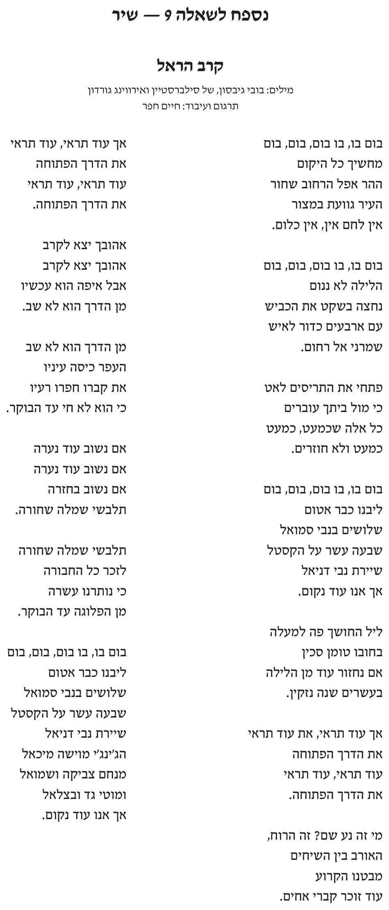</a><figcaption>נספח לשאלה 9 · לחצו על התמונה כדי להגדיל</figcaption></figure>
<div class="bh-sub"><p class="bh-subq" id="lbl-h29q-21w-9-1">על פי מילות השיר, הסבר מדוע היה צורך במבצע הראל (קרב הראל) כדי לעזור לתושבי ירושלים בשלב הראשון של מלחמת העצמאות. בסס את תשובתך באמצעות ציטוט מתאים מן השיר.</p>
<textarea class="answer" data-id="h29q-21w-9-1" aria-labelledby="lbl-h29q-21w-9-1" rows="3" placeholder="כתבו כאן את התשובה שלכם..."></textarea></div>
<div class="bh-sub"><p class="bh-subq" id="lbl-h29q-21w-9-2">המשורר חוזר בשיר על שורות מסוימות כדי להדגיש את המסר שלהן. בחר אחת מן השורות האלה, ציין אותה, והסבר את המסר שהחזרה על שורה זו מדגישה.</p>
<textarea class="answer" data-id="h29q-21w-9-2" aria-labelledby="lbl-h29q-21w-9-2" rows="3" placeholder="כתבו כאן את התשובה שלכם..."></textarea></div>
<div class="bh-sub"><p class="bh-subq" id="lbl-h29q-21w-9-3">על פי מה שלמדת, הצג את מצבה של ירושלים עם חתימת הסכמי שביתת הנשק בסוף מלחמת העצמאות.</p>
<textarea class="answer" data-id="h29q-21w-9-3" aria-labelledby="lbl-h29q-21w-9-3" rows="3" placeholder="כתבו כאן את התשובה שלכם..."></textarea></div>
<div class="bh-qkey" data-qkey="h29-21w-9" hidden></div>
</article>
<article class="bh-q" id="h29-21w-15">
<div class="bh-q-head"><span class="bh-exam">📅 בגרות חורף תשפ&quot;א</span><span class="bh-qn">שאלה 15 בשאלון</span></div>
<h3 class="bh-qtitle">מלחמת ששת הימים</h3>
<div class="bh-sub"><p class="bh-subq" id="lbl-h29q-21w-15-1"><span class="bh-letter">א</span> הצג שני גורמים שהובילו לפרוץ מלחמת ששת הימים.</p>
<textarea class="answer" data-id="h29q-21w-15-1" aria-labelledby="lbl-h29q-21w-15-1" rows="3" placeholder="כתבו כאן את התשובה שלכם..."></textarea></div>
<div class="bh-sub"><p class="bh-subq" id="lbl-h29q-21w-15-2">הסבר מה אפיין את החברה הישראלית ב&quot;תקופת ההמתנה&quot; שקדמה למלחמה.</p>
<textarea class="answer" data-id="h29q-21w-15-2" aria-labelledby="lbl-h29q-21w-15-2" rows="3" placeholder="כתבו כאן את התשובה שלכם..."></textarea></div>
<p class="bh-ctx"><span class="bh-letter">ב</span> בנספח לשאלה זו מוצג איור (ציור) שפורסם בעיתון &quot;דבר&quot; בתאריך 9/6/1967, לאחר שחרור ירושלים במהלך מלחמת ששת הימים.</p>
<figure class="bh-fig"><a href="assets/h29/h29-21w-n15-3.jpg" target="_blank" rel="noopener">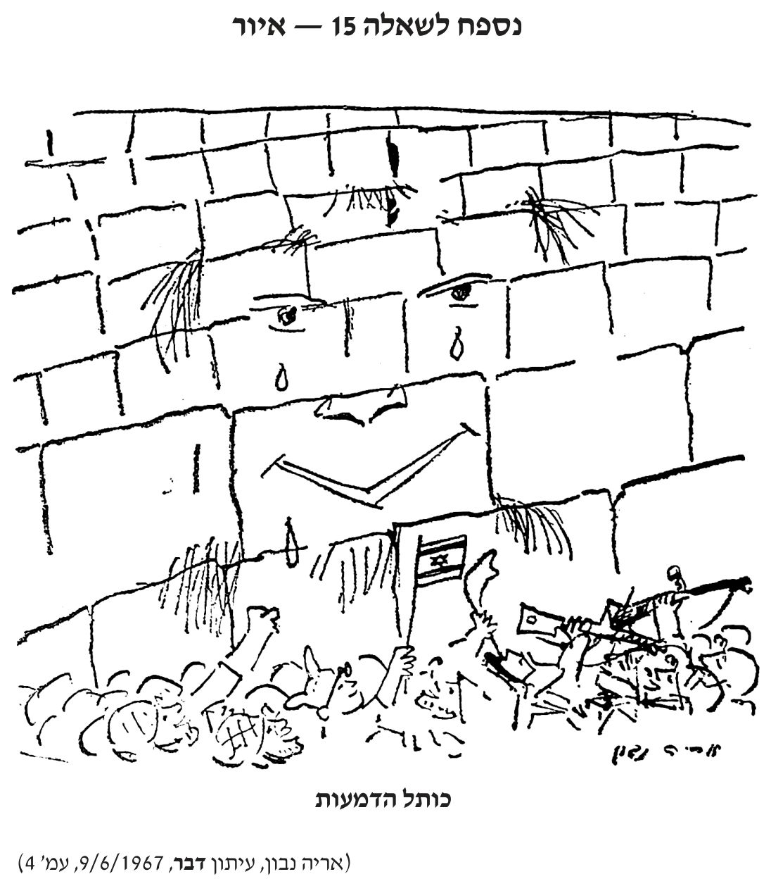</a><figcaption>נספח לשאלה 15 · לחצו על התמונה כדי להגדיל</figcaption></figure>
<div class="bh-sub"><p class="bh-subq" id="lbl-h29q-21w-15-3">ציין רגש שבא לידי ביטוי באיור.</p>
<textarea class="answer" data-id="h29q-21w-15-3" aria-labelledby="lbl-h29q-21w-15-3" rows="3" placeholder="כתבו כאן את התשובה שלכם..."></textarea></div>
<div class="bh-sub"><p class="bh-subq" id="lbl-h29q-21w-15-4">הסבר כיצד הרגש שציינת בא לידי ביטוי באמצעות שני רכיבים באיור.</p>
<textarea class="answer" data-id="h29q-21w-15-4" aria-labelledby="lbl-h29q-21w-15-4" rows="3" placeholder="כתבו כאן את התשובה שלכם..."></textarea></div>
<div class="bh-sub"><p class="bh-subq" id="lbl-h29q-21w-15-5">הצג שני הישגים נוספים של מלחמת ששת הימים, מלבד שחרור ירושלים.</p>
<textarea class="answer" data-id="h29q-21w-15-5" aria-labelledby="lbl-h29q-21w-15-5" rows="3" placeholder="כתבו כאן את התשובה שלכם..."></textarea></div>
<div class="bh-sub"><p class="bh-subq" id="lbl-h29q-21w-15-6">ציין איזה מבין ההישגים שהצגת משמעותי במיוחד בעיניך. נמק את תשובתך.</p>
<textarea class="answer" data-id="h29q-21w-15-6" aria-labelledby="lbl-h29q-21w-15-6" rows="3" placeholder="כתבו כאן את התשובה שלכם..."></textarea></div>
<div class="bh-qkey" data-qkey="h29-21w-15" hidden></div>
</article>
<article class="bh-q" id="h29-20s-8">
<div class="bh-q-head"><span class="bh-exam">📅 בגרות קיץ תש&quot;ף</span><span class="bh-qn">שאלה 8 בשאלון</span></div>
<p class="bh-ctx">לאחר מלחמת העולם השנייה (1945-1948) התגבר המאבק של היישוב היהודי בבריטים. מאבק זה בא לידי ביטוי בדרכים שונות.</p>
<div class="bh-sub"><p class="bh-subq" id="lbl-h29q-20s-8-1">הסבר מדוע לפרשת אוניית המעפילים “אקסודוס&quot; הייתה השפעה ניכרת על דעת הקהל העולמית.</p>
<textarea class="answer" data-id="h29q-20s-8-1" aria-labelledby="lbl-h29q-20s-8-1" rows="3" placeholder="כתבו כאן את התשובה שלכם..."></textarea></div>
<div class="bh-sub"><p class="bh-subq" id="lbl-h29q-20s-8-2">ציין פעולה אחת נגד הבריטים בשנים אלה, שלא הייתה קשורה למפעל ההעפלה ושעוררה מחלוקת ביישוב.</p>
<textarea class="answer" data-id="h29q-20s-8-2" aria-labelledby="lbl-h29q-20s-8-2" rows="3" placeholder="כתבו כאן את התשובה שלכם..."></textarea></div>
<div class="bh-sub"><p class="bh-subq" id="lbl-h29q-20s-8-3">הסבר מדוע הפעולה שציינת עוררה מחלוקת.</p>
<textarea class="answer" data-id="h29q-20s-8-3" aria-labelledby="lbl-h29q-20s-8-3" rows="3" placeholder="כתבו כאן את התשובה שלכם..."></textarea></div>
<div class="bh-qkey" data-qkey="h29-20s-8" hidden></div>
</article>
<article class="bh-q" id="h29-20s-15">
<div class="bh-q-head"><span class="bh-exam">📅 בגרות קיץ תש&quot;ף</span><span class="bh-qn">שאלה 15 בשאלון</span></div>
<h3 class="bh-qtitle">המאבק להקמת מדינת ישראל</h3>
<p class="bh-ctx">בנספח לשאלה 15 מוצגת קריקטורה שפורסמה בעיתון “דבר&quot; בתאריך ה&#x27; באייר תש&quot;ח (14/5/1948).</p>
<figure class="bh-fig"><a href="assets/h29/h29-20s-n15-2.jpg" target="_blank" rel="noopener">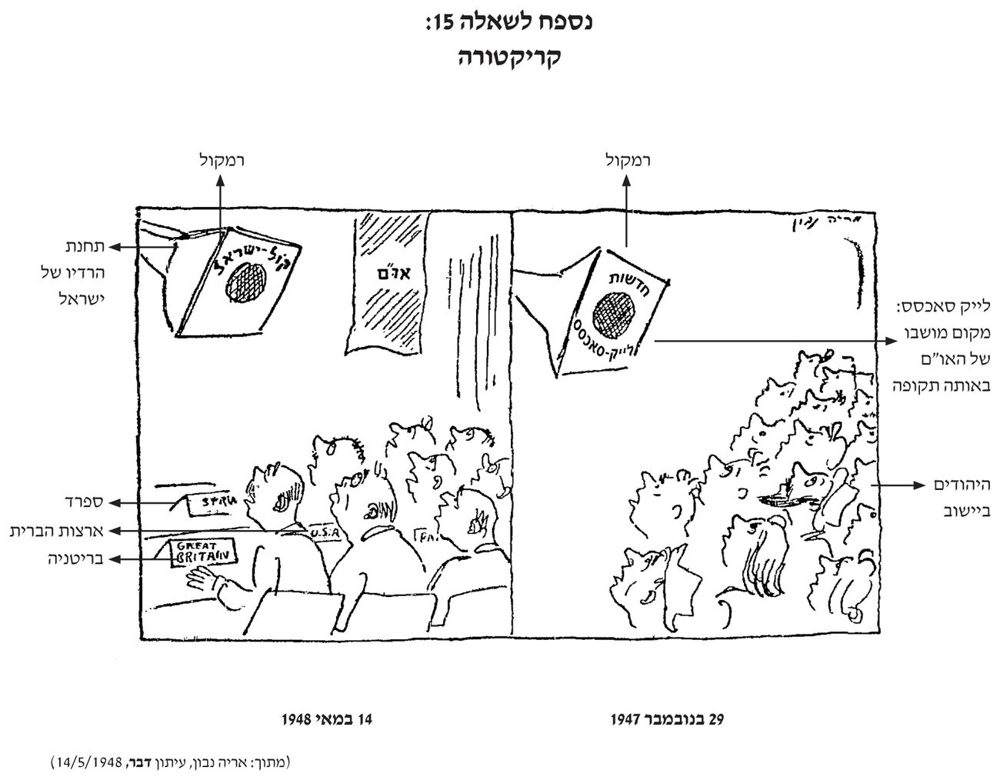</a><figcaption>נספח לשאלה 15 · לחצו על התמונה כדי להגדיל</figcaption></figure>
<div class="bh-sub"><p class="bh-subq" id="lbl-h29q-20s-15-1"><span class="bh-letter">א</span> ציין את האירועים המוצגים בכל אחד מצידי הקריקטורה (סך הכול — שני אירועים).</p>
<textarea class="answer" data-id="h29q-20s-15-1" aria-labelledby="lbl-h29q-20s-15-1" rows="3" placeholder="כתבו כאן את התשובה שלכם..."></textarea></div>
<div class="bh-sub"><p class="bh-subq" id="lbl-h29q-20s-15-2">הצג את המסר של יוצר הקריקטורה. בתשובתך התבסס על רכיב אחד מכל צד של הקריקטורה (סך־הכול — שני רכיבים).</p>
<textarea class="answer" data-id="h29q-20s-15-2" aria-labelledby="lbl-h29q-20s-15-2" rows="3" placeholder="כתבו כאן את התשובה שלכם..."></textarea></div>
<div class="bh-sub"><p class="bh-subq" id="lbl-h29q-20s-15-3">ציין איזה מן האירועים המתוארים בקריקטורה השפיע יותר, לדעתך, על הקמת מדינת ישראל. נמק את דעתך על פי מה שלמדת.</p>
<textarea class="answer" data-id="h29q-20s-15-3" aria-labelledby="lbl-h29q-20s-15-3" rows="3" placeholder="כתבו כאן את התשובה שלכם..."></textarea></div>
<p class="bh-ctx"><span class="bh-letter">ב</span> בין חודש נובמבר 1947 לחודש מאי 1948 התנהל בארץ־ישראל השלב הראשון של מלחמת העצמאות.</p>
<div class="bh-sub"><p class="bh-subq" id="lbl-h29q-20s-15-4">על פי מה שלמדת, הצג יתרון אחד של כל אחד מן הצדדים הלוחמים בשלב הראשון של מלחמת העצמאות (סך הכול — שני יתרונות).</p>
<textarea class="answer" data-id="h29q-20s-15-4" aria-labelledby="lbl-h29q-20s-15-4" rows="3" placeholder="כתבו כאן את התשובה שלכם..."></textarea></div>
<div class="bh-sub"><p class="bh-subq" id="lbl-h29q-20s-15-5">בחר באחד מן האירועים שלמדת עליהם: שיירת יחיעם (הסרט &quot;שיירת יחיעם: שחזור הקרב&quot;), המצור והקרב על ירושלים (השיר &quot;קרב הראל&quot;), נפילת גוש עציון (הקדימון &quot;מכתבים מהמלחמה&quot;), וציין את שם האירוע שבחרת.</p>
<textarea class="answer" data-id="h29q-20s-15-5" aria-labelledby="lbl-h29q-20s-15-5" rows="3" placeholder="כתבו כאן את התשובה שלכם..."></textarea></div>
<p class="bh-ctx">בסרט או בשיר או בקדימון שבחרת באים לידי ביטוי הקשיים שאיתם התמודדו אנשי היישוב היהודי.</p>
<div class="bh-sub"><p class="bh-subq" id="lbl-h29q-20s-15-6">הצג שניים מן הקשיים.</p>
<textarea class="answer" data-id="h29q-20s-15-6" aria-labelledby="lbl-h29q-20s-15-6" rows="3" placeholder="כתבו כאן את התשובה שלכם..."></textarea></div>
<div class="bh-qkey" data-qkey="h29-20s-15" hidden></div>
</article>
<article class="bh-q" id="h29-19s-8">
<div class="bh-q-head"><span class="bh-exam">📅 בגרות קיץ תשע&quot;ט</span><span class="bh-qn">שאלה 8 בשאלון</span></div>
<h3 class="bh-qtitle">תנועת המרי העברי ופירוקה</h3>
<div class="bh-sub"><p class="bh-subq" id="lbl-h29q-19s-8-1"><span class="bh-letter">א</span> על פי מה שלמדת, הצג את הסיבה להקמת תנועת המרי העברי (1945).</p>
<textarea class="answer" data-id="h29q-19s-8-1" aria-labelledby="lbl-h29q-19s-8-1" rows="3" placeholder="כתבו כאן את התשובה שלכם..."></textarea></div>
<div class="bh-sub"><p class="bh-subq" id="lbl-h29q-19s-8-2">הצג שתי סיבות לפירוקה של תנועה זו (1946).</p>
<textarea class="answer" data-id="h29q-19s-8-2" aria-labelledby="lbl-h29q-19s-8-2" rows="3" placeholder="כתבו כאן את התשובה שלכם..."></textarea></div>
<p class="bh-ctx"><span class="bh-letter">ב</span> בנספח מוצגות שתי כרזות א&#x27; ו־ב&#x27; העוסקות בוויכוח שהתנהל בין &quot;ההגנה&quot; ובין האצ&quot;ל לאחר פירוק תנועת המרי העברי, בנוגע לדרכי המאבק בשלטון הבריטי.</p>
<figure class="bh-fig"><a href="assets/h29/h29-19s-n8-2.jpg" target="_blank" rel="noopener">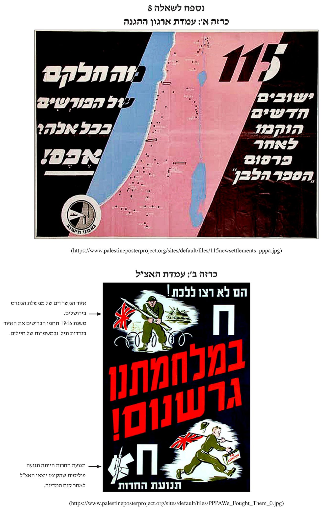</a><figcaption>נספח לשאלה 8 · לחצו על התמונה כדי להגדיל</figcaption></figure>
<div class="bh-sub"><p class="bh-subq" id="lbl-h29q-19s-8-3">על פי מה שלמדת, הצג את העמדה של ההגנה, והצג את העמדה של האצ&quot;ל בוויכוח זה.</p>
<textarea class="answer" data-id="h29q-19s-8-3" aria-labelledby="lbl-h29q-19s-8-3" rows="3" placeholder="כתבו כאן את התשובה שלכם..."></textarea></div>
<div class="bh-sub"><p class="bh-subq" id="lbl-h29q-19s-8-4">הסבר כיצד כל עמדה באה לידי ביטוי בכרזה המתאימה לה, באמצעות רכיב אחד בכל כרזה (סך הכול — שני הסברים).</p>
<textarea class="answer" data-id="h29q-19s-8-4" aria-labelledby="lbl-h29q-19s-8-4" rows="3" placeholder="כתבו כאן את התשובה שלכם..."></textarea></div>
<div class="bh-qkey" data-qkey="h29-19s-8" hidden></div>
</article>
<article class="bh-q" id="h29-19s-9">
<div class="bh-q-head"><span class="bh-exam">📅 בגרות קיץ תשע&quot;ט</span><span class="bh-qn">שאלה 9 בשאלון</span></div>
<div class="bh-sub"><p class="bh-subq" id="lbl-h29q-19s-9-1">במלחמת העצמאות הייתה הלחימה היהודית לאחר הקמת המדינה יעילה יותר משהייתה לפני הקמתה. הסבר מדוע.</p>
<textarea class="answer" data-id="h29q-19s-9-1" aria-labelledby="lbl-h29q-19s-9-1" rows="3" placeholder="כתבו כאן את התשובה שלכם..."></textarea></div>
<div class="bh-sub"><p class="bh-subq" id="lbl-h29q-19s-9-2">הצג השפעה אחת של מלחמת העצמאות על הקהילות היהודיות בארצות האסלאם.</p>
<textarea class="answer" data-id="h29q-19s-9-2" aria-labelledby="lbl-h29q-19s-9-2" rows="3" placeholder="כתבו כאן את התשובה שלכם..."></textarea></div>
<div class="bh-qkey" data-qkey="h29-19s-9" hidden></div>
</article>
<article class="bh-q" id="h29-19s-15">
<div class="bh-q-head"><span class="bh-exam">📅 בגרות קיץ תשע&quot;ט</span><span class="bh-qn">שאלה 15 בשאלון</span></div>
<p class="bh-ctx">לפניך רשימה של מקומות שהיו לסמל בעקבות האירועים ההיסטוריים שאירעו בהם: באזל, קטוביץ, סטלינגרד, נורמנדי, גוש עציון, הרובע היהודי.</p>
<div class="bh-sub"><p class="bh-subq" id="lbl-h29q-19s-15-1">בחר במקום אחד מן הרשימה, שהוא סמל חשוב בעיניך, וציין אותו.</p>
<textarea class="answer" data-id="h29q-19s-15-1" aria-labelledby="lbl-h29q-19s-15-1" rows="3" placeholder="כתבו כאן את התשובה שלכם..."></textarea></div>
<div class="bh-sub"><p class="bh-subq" id="lbl-h29q-19s-15-2">הצג את האירוע ההיסטורי שאירע במקום שבחרת, על פי מה שלמדת.</p>
<textarea class="answer" data-id="h29q-19s-15-2" aria-labelledby="lbl-h29q-19s-15-2" rows="3" placeholder="כתבו כאן את התשובה שלכם..."></textarea></div>
<div class="bh-sub"><p class="bh-subq" id="lbl-h29q-19s-15-3">הצג ערך שאפשר ללמוד מן האירוע שהצגת, והסבר מדוע ערך זה חשוב בעיניך.</p>
<textarea class="answer" data-id="h29q-19s-15-3" aria-labelledby="lbl-h29q-19s-15-3" rows="3" placeholder="כתבו כאן את התשובה שלכם..."></textarea></div>
<div class="bh-qkey" data-qkey="h29-19s-15" hidden></div>
</article>
<article class="bh-q" id="h29-19w-8">
<div class="bh-q-head"><span class="bh-exam">📅 בגרות חורף תשע&quot;ט</span><span class="bh-qn">שאלה 8 בשאלון</span></div>
<h3 class="bh-qtitle">הסכם השלום עם מצרים</h3>
<p class="bh-ctx"><span class="bh-letter">א</span> בנספח לשאלה זו מוצגים שני מקורות חזותיים שהתפרסמו בעיתון מעריב בשבוע של החתימה על הסכם השלום עם מצרים בתאריך 26/3/1979. משני מקורות אלה אפשר ללמוד על הלכי רוח (תחושות) מנוגדים שרווחו בעם מיד לאחר החתימה על הסכם שלום זה.</p>
<figure class="bh-fig"><a href="assets/h29/h29-19w-n8-2.jpg" target="_blank" rel="noopener">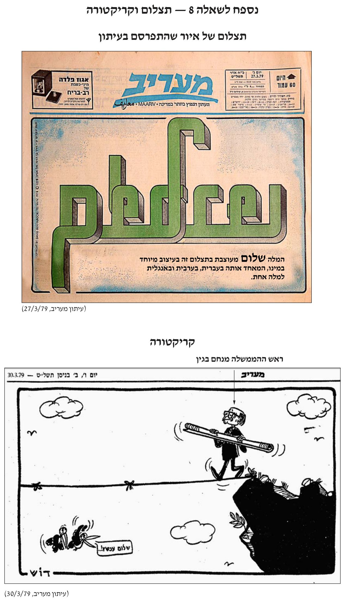</a><figcaption>נספח לשאלה 8 · לחצו על התמונה כדי להגדיל</figcaption></figure>
<div class="bh-sub"><p class="bh-subq" id="lbl-h29q-19w-8-1">ציין מהו הלך הרוח שעולה מכל מקור, והסבר כיצד הוא בא לידי ביטוי בכל אחד מהם (בתשובתך היעזר ברכיב אחד לפחות בכל אחד מן המקורות).</p>
<textarea class="answer" data-id="h29q-19w-8-1" aria-labelledby="lbl-h29q-19w-8-1" rows="3" placeholder="כתבו כאן את התשובה שלכם..."></textarea></div>
<div class="bh-sub"><p class="bh-subq" id="lbl-h29q-19w-8-2">על פי מה שלמדת, ציין ויתור אחד שנדרש מישראל בהסכם השלום עם מצרים.</p>
<textarea class="answer" data-id="h29q-19w-8-2" aria-labelledby="lbl-h29q-19w-8-2" rows="3" placeholder="כתבו כאן את התשובה שלכם..."></textarea></div>
<div class="bh-sub"><p class="bh-subq" id="lbl-h29q-19w-8-3">על פי מה שלמדת הצג סיבה אחת לתמיכה הציבורית הנרחבת בהסכם שלום זה.</p>
<textarea class="answer" data-id="h29q-19w-8-3" aria-labelledby="lbl-h29q-19w-8-3" rows="3" placeholder="כתבו כאן את התשובה שלכם..."></textarea></div>
<div class="bh-sub"><p class="bh-subq" id="lbl-h29q-19w-8-4"><span class="bh-letter">ב</span> הצג מניע אחד של מצרים לחתום על הסכם השלום.</p>
<textarea class="answer" data-id="h29q-19w-8-4" aria-labelledby="lbl-h29q-19w-8-4" rows="3" placeholder="כתבו כאן את התשובה שלכם..."></textarea></div>
<div class="bh-sub"><p class="bh-subq" id="lbl-h29q-19w-8-5">הצג את ההשפעה של החתימה על הסכם השלום על החברה המצרית או על מעמדה של מצרים בעולם הערבי.</p>
<textarea class="answer" data-id="h29q-19w-8-5" aria-labelledby="lbl-h29q-19w-8-5" rows="3" placeholder="כתבו כאן את התשובה שלכם..."></textarea></div>
<div class="bh-qkey" data-qkey="h29-19w-8" hidden></div>
</article>
<article class="bh-q" id="h29-19w-10">
<div class="bh-q-head"><span class="bh-exam">📅 בגרות חורף תשע&quot;ט</span><span class="bh-qn">שאלה 10 בשאלון</span></div>
<div class="bh-sub"><p class="bh-subq" id="lbl-h29q-19w-10-1">ציין מה אפיין את הלחימה של היישוב היהודי המאורגן בארבעת החודשים הראשונים של מלחמת העצמאות.</p>
<textarea class="answer" data-id="h29q-19w-10-1" aria-labelledby="lbl-h29q-19w-10-1" rows="3" placeholder="כתבו כאן את התשובה שלכם..."></textarea></div>
<div class="bh-sub"><p class="bh-subq" id="lbl-h29q-19w-10-2">הצג סיבה אחת להחלטה של הנהגת היישוב לשנות את דרך (שיטת) הלחימה בחודש מארס 1948.</p>
<textarea class="answer" data-id="h29q-19w-10-2" aria-labelledby="lbl-h29q-19w-10-2" rows="3" placeholder="כתבו כאן את התשובה שלכם..."></textarea></div>
<div class="bh-sub"><p class="bh-subq" id="lbl-h29q-19w-10-3">ציין את דרך הלחימה שהונהגה לראשונה במבצע נחשון.</p>
<textarea class="answer" data-id="h29q-19w-10-3" aria-labelledby="lbl-h29q-19w-10-3" rows="3" placeholder="כתבו כאן את התשובה שלכם..."></textarea></div>
<div class="bh-sub"><p class="bh-subq" id="lbl-h29q-19w-10-4">הסבר כיצד סייע מבצע זה לשפר את מצבו של היישוב היהודי עוד לפני עזיבת הבריטים.</p>
<textarea class="answer" data-id="h29q-19w-10-4" aria-labelledby="lbl-h29q-19w-10-4" rows="3" placeholder="כתבו כאן את התשובה שלכם..."></textarea></div>
<div class="bh-qkey" data-qkey="h29-19w-10" hidden></div>
</article>
<article class="bh-q" id="h29-18s-11">
<div class="bh-q-head"><span class="bh-exam">📅 בגרות קיץ תשע&quot;ח</span><span class="bh-qn">שאלה 11 בשאלון</span></div>
<details class="bh-passage"><summary><span aria-hidden="true">📄</span> הקטע שעליו מבוססת השאלה · לחצו כדי לקרוא</summary><div class="bh-passage-body">
<p class="bh-ctx">למוחרת טקס הכרזת העצמאות (ה באייר, תש&quot;ח) נאם מנחם בגין, מפקד האצ&quot;ל, בשידור רדיו של תחנת האצ&quot;ל &quot;קול ציון הלוחמת&quot;. בקטע שלפניך מוצגים חלקים מנאומו.</p>
<p class="bh-src-text">אזרחי המולדת העברית, חיילי ישראל, נוער עברי, אחיותיי ואחיי בציון, מקץ שנים רבות של מלחמה במחתרת, של רדיפות ועינויים, עינויי גוף ונפש, מתייצבים לפניכם המורדים במלכות הרשע [בריטניה] כשברכת הודיה בפיהם ותפילה למרום בליבם. הברכה היא זו שאבותינו בירכו ביום חג ומועד, הברכה היא זו ששפתותיהם דובבו [מלמלו] על פרי חדש [...]</p>
<p class="bh-src-text">שלטון השעבוד של בריטניה בארץ מולדתנו הוכה, עורער, פורר וסולק. קמה, תוך מלחמת דמים [...] מדינת ישראל. נסללה הדרך לשיבת ציון המונית. הונח היסוד — רק היסוד הונח — לעצמאות עברית ממשית. נסתיים שלב אחד — רק שלב אחד — של מלחמת השחרור העברית, שמטרתה הנצחית להחזיר את עם ישראל — את עם ישראל כולו — לארץ מכורתו [מולדתו], ולהחזיר את ארץ־ישראל: את ארץ־ישראל כולה — לעמה, בעליה.</p>
<p class="bh-src-text">ואם נזכור, כי הדבר קם והיה בעצם תקופת ההשמדה הטוטלית של היהודי באשר הוא יהודי [...] הזכות בידינו והחובה עלינו להודות, מתוך הכנעת לב, לצור ישראל וגואלו על הניסים והנפלאות שעשה עמנו בזמן הזה — כמו בימים ההם. [...] קשה היה להקים את מדינתנו. אבל יהיה עוד יותר קשה לקיים את מדינתנו. סבונו גויים גם סבבונו, והם רוצים להכחידנו מגוי. [...] על כן עומדת מדינתנו בת־יום בלהבות מלחמה. על כן יסוד ראשון לקיום חירותנו הוא הניצחון, הניצחון המלא במלחמה המשתוללת עתה בכל רחבי הארץ. [...] אולם גם לאחר שננצח במערכה הזאת — ואנו ננצח בה — יהיו דרושים מאמצים עליונים כדי לקיים את עצמאותנו, כדי לשחרר את מולדתנו. [...]</p>
<p class="bh-src-text">לקיום מדינתנו ולשחרור מולדתנו תהא דרושה לנו גם מדיניות חוץ נבונה. [...] עלינו לטפח יחסי הבנה וידידות עם העם האמריקני הגדול. [...]</p>
<p class="bh-src-text">עלינו לקיים ולטפח יחסי הבנה וידידות עם עמי ברית המועצות [...] ואנחנו לעולם לא נשכח, כי הצבא הרוסי המנצח הציל מאות אלפי יהודים מציפורניהן של חיות הטרף הנאציות. לעולם לא נשכח, כי בעמוד עמנו מול פרשת הדרכים ההיסטורית, הושיטה לו ברית המועצות יד עוזרת, וסייעה לו לעלות על דרך העצמאות. [...]</p>
<p class="bh-src-text">הארגון הצבאי הלאומי [האצ&quot;ל] נוטש את המחתרת בגבולות המדינה העברית העצמאית. [...] עתה קם, לפי שעה בחלק של המולדת, שלטון עברי. ובחלק זה של המולדת, בחלק המשוחרר, בחלק שבו ישלוט החוק העברי — והוא החוק היחידי החוקי בארץ זו — אין צורך במחתרת עברית. במדינת ישראל נהיה חיילים ובונים. לחוקיה נשמע, כי חוקינו הם. ואת ממשלתה נכבד, כי ממשלתנו היא. [...]</p>
<p class="bh-src-text">מדינת ישראל קמה. אך נזכור כי המולדת עדיין לא שוחררה. [...] המולדת היא שלמות. הניסיון לבתרה לגזרים [לחלק אותה] הוא לא רק ניסיון נפשע, הוא גם ניסיון נפל [שייכשל]. המולדת היא שלמות היסטורית וגאוגרפית. מי שאינו מכיר בזכותנו למולדת כולה, אינו מכיר גם בזכותנו לשטח משטחיה. [...] כי חוק עולם הוא: אם עובר קו מפריד בין מדינת הלאום לבין מולדתו, אחת דתו של הקו המלאכותי להיעלם. המדינה תכסה את המולדת. המולדת תהיה מדינתנו.</p>
</div></details>
<div class="bh-sub"><p class="bh-subq" id="lbl-h29q-18s-11-1">על פי הקטע, ציין מהו הרגש שבא לידי ביטוי בדבריו של מנחם בגין בנוגע להכרזת העצמאות, והסבר מדוע הרגיש כך.</p>
<textarea class="answer" data-id="h29q-18s-11-1" aria-labelledby="lbl-h29q-18s-11-1" rows="3" placeholder="כתבו כאן את התשובה שלכם..."></textarea></div>
<div class="bh-sub"><p class="bh-subq" id="lbl-h29q-18s-11-2">על פי מה שלמדת הסבר סיבה אחת להתנגדות של אישים שונים ביישוב, ובהם זאב ז&#x27;בוטינסקי, להצעת החלוקה של ועדת פיל (1937).</p>
<textarea class="answer" data-id="h29q-18s-11-2" aria-labelledby="lbl-h29q-18s-11-2" rows="3" placeholder="כתבו כאן את התשובה שלכם..."></textarea></div>
<div class="bh-sub"><p class="bh-subq" id="lbl-h29q-18s-11-3">הסבר כיצד השפיעה התנגדות זו על תפיסתו של מנחם בגין, כפי שהיא באה לידי ביטוי בנאומו. בסס את דבריך על הכתוב.</p>
<textarea class="answer" data-id="h29q-18s-11-3" aria-labelledby="lbl-h29q-18s-11-3" rows="3" placeholder="כתבו כאן את התשובה שלכם..."></textarea></div>
<div class="bh-qkey" data-qkey="h29-18s-11" hidden></div>
</article>
<article class="bh-q" id="h29-18s-12">
<div class="bh-q-head"><span class="bh-exam">📅 בגרות קיץ תשע&quot;ח</span><span class="bh-qn">שאלה 12 בשאלון</span></div>
<details class="bh-passage"><summary><span aria-hidden="true">📄</span> הקטע שעליו מבוססת השאלה · לחצו כדי לקרוא</summary><div class="bh-passage-body">
<p class="bh-ctx">למוחרת טקס הכרזת העצמאות (ה באייר, תש&quot;ח) נאם מנחם בגין, מפקד האצ&quot;ל, בשידור רדיו של תחנת האצ&quot;ל &quot;קול ציון הלוחמת&quot;. בקטע שלפניך מוצגים חלקים מנאומו.</p>
<p class="bh-src-text">אזרחי המולדת העברית, חיילי ישראל, נוער עברי, אחיותיי ואחיי בציון, מקץ שנים רבות של מלחמה במחתרת, של רדיפות ועינויים, עינויי גוף ונפש, מתייצבים לפניכם המורדים במלכות הרשע [בריטניה] כשברכת הודיה בפיהם ותפילה למרום בליבם. הברכה היא זו שאבותינו בירכו ביום חג ומועד, הברכה היא זו ששפתותיהם דובבו [מלמלו] על פרי חדש [...]</p>
<p class="bh-src-text">שלטון השעבוד של בריטניה בארץ מולדתנו הוכה, עורער, פורר וסולק. קמה, תוך מלחמת דמים [...] מדינת ישראל. נסללה הדרך לשיבת ציון המונית. הונח היסוד — רק היסוד הונח — לעצמאות עברית ממשית. נסתיים שלב אחד — רק שלב אחד — של מלחמת השחרור העברית, שמטרתה הנצחית להחזיר את עם ישראל — את עם ישראל כולו — לארץ מכורתו [מולדתו], ולהחזיר את ארץ־ישראל: את ארץ־ישראל כולה — לעמה, בעליה.</p>
<p class="bh-src-text">ואם נזכור, כי הדבר קם והיה בעצם תקופת ההשמדה הטוטלית של היהודי באשר הוא יהודי [...] הזכות בידינו והחובה עלינו להודות, מתוך הכנעת לב, לצור ישראל וגואלו על הניסים והנפלאות שעשה עמנו בזמן הזה — כמו בימים ההם. [...] קשה היה להקים את מדינתנו. אבל יהיה עוד יותר קשה לקיים את מדינתנו. סבונו גויים גם סבבונו, והם רוצים להכחידנו מגוי. [...] על כן עומדת מדינתנו בת־יום בלהבות מלחמה. על כן יסוד ראשון לקיום חירותנו הוא הניצחון, הניצחון המלא במלחמה המשתוללת עתה בכל רחבי הארץ. [...] אולם גם לאחר שננצח במערכה הזאת — ואנו ננצח בה — יהיו דרושים מאמצים עליונים כדי לקיים את עצמאותנו, כדי לשחרר את מולדתנו. [...]</p>
<p class="bh-src-text">לקיום מדינתנו ולשחרור מולדתנו תהא דרושה לנו גם מדיניות חוץ נבונה. [...] עלינו לטפח יחסי הבנה וידידות עם העם האמריקני הגדול. [...]</p>
<p class="bh-src-text">עלינו לקיים ולטפח יחסי הבנה וידידות עם עמי ברית המועצות [...] ואנחנו לעולם לא נשכח, כי הצבא הרוסי המנצח הציל מאות אלפי יהודים מציפורניהן של חיות הטרף הנאציות. לעולם לא נשכח, כי בעמוד עמנו מול פרשת הדרכים ההיסטורית, הושיטה לו ברית המועצות יד עוזרת, וסייעה לו לעלות על דרך העצמאות. [...]</p>
<p class="bh-src-text">הארגון הצבאי הלאומי [האצ&quot;ל] נוטש את המחתרת בגבולות המדינה העברית העצמאית. [...] עתה קם, לפי שעה בחלק של המולדת, שלטון עברי. ובחלק זה של המולדת, בחלק המשוחרר, בחלק שבו ישלוט החוק העברי — והוא החוק היחידי החוקי בארץ זו — אין צורך במחתרת עברית. במדינת ישראל נהיה חיילים ובונים. לחוקיה נשמע, כי חוקינו הם. ואת ממשלתה נכבד, כי ממשלתנו היא. [...]</p>
<p class="bh-src-text">מדינת ישראל קמה. אך נזכור כי המולדת עדיין לא שוחררה. [...] המולדת היא שלמות. הניסיון לבתרה לגזרים [לחלק אותה] הוא לא רק ניסיון נפשע, הוא גם ניסיון נפל [שייכשל]. המולדת היא שלמות היסטורית וגאוגרפית. מי שאינו מכיר בזכותנו למולדת כולה, אינו מכיר גם בזכותנו לשטח משטחיה. [...] כי חוק עולם הוא: אם עובר קו מפריד בין מדינת הלאום לבין מולדתו, אחת דתו של הקו המלאכותי להיעלם. המדינה תכסה את המולדת. המולדת תהיה מדינתנו.</p>
</div></details>
<div class="bh-sub"><p class="bh-subq" id="lbl-h29q-18s-12-1">על פי מה שלמדת, הצג דוגמה אחת ליחסים הרעועים (גרועים) בין ארגון האצ&quot;ל, שבראשו עמד בגין, ובין הנהגת היישוב היהודי בתקופת המנדט.</p>
<textarea class="answer" data-id="h29q-18s-12-1" aria-labelledby="lbl-h29q-18s-12-1" rows="3" placeholder="כתבו כאן את התשובה שלכם..."></textarea></div>
<div class="bh-sub"><p class="bh-subq" id="lbl-h29q-18s-12-2">על פי הקטע, הסבר את התפנית שחלה בעמדה של בגין כלפי ההנהגה היהודית בארץ־ישראל.</p>
<textarea class="answer" data-id="h29q-18s-12-2" aria-labelledby="lbl-h29q-18s-12-2" rows="3" placeholder="כתבו כאן את התשובה שלכם..."></textarea></div>
<div class="bh-qkey" data-qkey="h29-18s-12" hidden></div>
</article>
<article class="bh-q" id="h29-18s-13">
<div class="bh-q-head"><span class="bh-exam">📅 בגרות קיץ תשע&quot;ח</span><span class="bh-qn">שאלה 13 בשאלון</span></div>
<details class="bh-passage"><summary><span aria-hidden="true">📄</span> הקטע שעליו מבוססת השאלה · לחצו כדי לקרוא</summary><div class="bh-passage-body">
<p class="bh-ctx">למוחרת טקס הכרזת העצמאות (ה באייר, תש&quot;ח) נאם מנחם בגין, מפקד האצ&quot;ל, בשידור רדיו של תחנת האצ&quot;ל &quot;קול ציון הלוחמת&quot;. בקטע שלפניך מוצגים חלקים מנאומו.</p>
<p class="bh-src-text">אזרחי המולדת העברית, חיילי ישראל, נוער עברי, אחיותיי ואחיי בציון, מקץ שנים רבות של מלחמה במחתרת, של רדיפות ועינויים, עינויי גוף ונפש, מתייצבים לפניכם המורדים במלכות הרשע [בריטניה] כשברכת הודיה בפיהם ותפילה למרום בליבם. הברכה היא זו שאבותינו בירכו ביום חג ומועד, הברכה היא זו ששפתותיהם דובבו [מלמלו] על פרי חדש [...]</p>
<p class="bh-src-text">שלטון השעבוד של בריטניה בארץ מולדתנו הוכה, עורער, פורר וסולק. קמה, תוך מלחמת דמים [...] מדינת ישראל. נסללה הדרך לשיבת ציון המונית. הונח היסוד — רק היסוד הונח — לעצמאות עברית ממשית. נסתיים שלב אחד — רק שלב אחד — של מלחמת השחרור העברית, שמטרתה הנצחית להחזיר את עם ישראל — את עם ישראל כולו — לארץ מכורתו [מולדתו], ולהחזיר את ארץ־ישראל: את ארץ־ישראל כולה — לעמה, בעליה.</p>
<p class="bh-src-text">ואם נזכור, כי הדבר קם והיה בעצם תקופת ההשמדה הטוטלית של היהודי באשר הוא יהודי [...] הזכות בידינו והחובה עלינו להודות, מתוך הכנעת לב, לצור ישראל וגואלו על הניסים והנפלאות שעשה עמנו בזמן הזה — כמו בימים ההם. [...] קשה היה להקים את מדינתנו. אבל יהיה עוד יותר קשה לקיים את מדינתנו. סבונו גויים גם סבבונו, והם רוצים להכחידנו מגוי. [...] על כן עומדת מדינתנו בת־יום בלהבות מלחמה. על כן יסוד ראשון לקיום חירותנו הוא הניצחון, הניצחון המלא במלחמה המשתוללת עתה בכל רחבי הארץ. [...] אולם גם לאחר שננצח במערכה הזאת — ואנו ננצח בה — יהיו דרושים מאמצים עליונים כדי לקיים את עצמאותנו, כדי לשחרר את מולדתנו. [...]</p>
<p class="bh-src-text">לקיום מדינתנו ולשחרור מולדתנו תהא דרושה לנו גם מדיניות חוץ נבונה. [...] עלינו לטפח יחסי הבנה וידידות עם העם האמריקני הגדול. [...]</p>
<p class="bh-src-text">עלינו לקיים ולטפח יחסי הבנה וידידות עם עמי ברית המועצות [...] ואנחנו לעולם לא נשכח, כי הצבא הרוסי המנצח הציל מאות אלפי יהודים מציפורניהן של חיות הטרף הנאציות. לעולם לא נשכח, כי בעמוד עמנו מול פרשת הדרכים ההיסטורית, הושיטה לו ברית המועצות יד עוזרת, וסייעה לו לעלות על דרך העצמאות. [...]</p>
<p class="bh-src-text">הארגון הצבאי הלאומי [האצ&quot;ל] נוטש את המחתרת בגבולות המדינה העברית העצמאית. [...] עתה קם, לפי שעה בחלק של המולדת, שלטון עברי. ובחלק זה של המולדת, בחלק המשוחרר, בחלק שבו ישלוט החוק העברי — והוא החוק היחידי החוקי בארץ זו — אין צורך במחתרת עברית. במדינת ישראל נהיה חיילים ובונים. לחוקיה נשמע, כי חוקינו הם. ואת ממשלתה נכבד, כי ממשלתנו היא. [...]</p>
<p class="bh-src-text">מדינת ישראל קמה. אך נזכור כי המולדת עדיין לא שוחררה. [...] המולדת היא שלמות. הניסיון לבתרה לגזרים [לחלק אותה] הוא לא רק ניסיון נפשע, הוא גם ניסיון נפל [שייכשל]. המולדת היא שלמות היסטורית וגאוגרפית. מי שאינו מכיר בזכותנו למולדת כולה, אינו מכיר גם בזכותנו לשטח משטחיה. [...] כי חוק עולם הוא: אם עובר קו מפריד בין מדינת הלאום לבין מולדתו, אחת דתו של הקו המלאכותי להיעלם. המדינה תכסה את המולדת. המולדת תהיה מדינתנו.</p>
</div></details>
<p class="bh-ctx">בנאומו תמך בגין בטיפוח יחסי ידידות בין ישראל ובין ברית המועצות, בין השאר בזכות תמיכת ברית המועצות בהחלטת האו&quot;ם בכ&quot;ט בנובמבר.</p>
<div class="bh-sub"><p class="bh-subq" id="lbl-h29q-18s-13-1">על פי מה שלמדת, הצג נימוק אחד שהביא נציג ברית המועצות, אנדרי גרומיקו, לתמיכת ארצו בהחלטת האו&quot;ם, והצג את האינטרס של ברית המועצות לתמוך בהקמת מדינת ישראל.</p>
<textarea class="answer" data-id="h29q-18s-13-1" aria-labelledby="lbl-h29q-18s-13-1" rows="3" placeholder="כתבו כאן את התשובה שלכם..."></textarea></div>
<div class="bh-sub"><p class="bh-subq" id="lbl-h29q-18s-13-2">על פי הקטע, הצג סיבה אחת נוספת לתמיכתו של בגין ביחסי ידידות בין ברית המועצות ובין ישראל.</p>
<textarea class="answer" data-id="h29q-18s-13-2" aria-labelledby="lbl-h29q-18s-13-2" rows="3" placeholder="כתבו כאן את התשובה שלכם..."></textarea></div>
<div class="bh-qkey" data-qkey="h29-18s-13" hidden></div>
</article>
<article class="bh-q" id="h29-18s-15">
<div class="bh-q-head"><span class="bh-exam">📅 בגרות קיץ תשע&quot;ח</span><span class="bh-qn">שאלה 15 בשאלון</span></div>
<p class="bh-ctx">ב־12 במאי 1948, התנהל ביוזמתו של דוד בן גוריון דיון סוער במנהלת העם בשאלה אם להכריז על מדינה יהודית עצמאית מייד עם סיום השלטון הבריטי בארץ־ישראל או אם לדחות את ההכרזה למועד מאוחר יותר.</p>
<div class="bh-sub"><p class="bh-subq" id="lbl-h29q-18s-15-1">הסבר את העמדה של המתנגדים להכרזת העצמאות מיד עם סיום השלטון הבריטי בארץ־ישראל.</p>
<textarea class="answer" data-id="h29q-18s-15-1" aria-labelledby="lbl-h29q-18s-15-1" rows="3" placeholder="כתבו כאן את התשובה שלכם..."></textarea></div>
<div class="bh-sub"><p class="bh-subq" id="lbl-h29q-18s-15-2">ציין מה הייתה ההחלטה הסופית שהתקבלה ברוב קולות בדיון זה.</p>
<textarea class="answer" data-id="h29q-18s-15-2" aria-labelledby="lbl-h29q-18s-15-2" rows="3" placeholder="כתבו כאן את התשובה שלכם..."></textarea></div>
<div class="bh-sub"><p class="bh-subq" id="lbl-h29q-18s-15-3">לו היית חבר במנהלת העם באותה התקופה, מה היית חושב על האופן שניהל בן גוריון את הדיון? נמק את תשובתך.</p>
<textarea class="answer" data-id="h29q-18s-15-3" aria-labelledby="lbl-h29q-18s-15-3" rows="3" placeholder="כתבו כאן את התשובה שלכם..."></textarea></div>
<div class="bh-qkey" data-qkey="h29-18s-15" hidden></div>
</article>
<article class="bh-q" id="h29-17s-10">
<div class="bh-q-head"><span class="bh-exam">📅 בגרות קיץ תשע&quot;ז</span><span class="bh-qn">שאלה 10 בשאלון</span></div>
<div class="bh-sub"><p class="bh-subq" id="lbl-h29q-17s-10-1">בחר באחת ממלחמות ישראל שלמדת עליהן: מלחמת ששת הימים או מלחמת יום הכיפורים.</p>
<textarea class="answer" data-id="h29q-17s-10-1" aria-labelledby="lbl-h29q-17s-10-1" rows="3" placeholder="כתבו כאן את התשובה שלכם..."></textarea></div>
<div class="bh-sub"><p class="bh-subq" id="lbl-h29q-17s-10-2">ציין את שם המלחמה שבחרת, ואת שמות כל המדינות שנלחמו נגד ישראל במלחמה זו.</p>
<textarea class="answer" data-id="h29q-17s-10-2" aria-labelledby="lbl-h29q-17s-10-2" rows="3" placeholder="כתבו כאן את התשובה שלכם..."></textarea></div>
<div class="bh-sub"><p class="bh-subq" id="lbl-h29q-17s-10-3">הצג שתי תוצאות מדיניות של המלחמה.</p>
<textarea class="answer" data-id="h29q-17s-10-3" aria-labelledby="lbl-h29q-17s-10-3" rows="3" placeholder="כתבו כאן את התשובה שלכם..."></textarea></div>
<div class="bh-qkey" data-qkey="h29-17s-10" hidden></div>
</article>
<article class="bh-q" id="h29-17s-15">
<div class="bh-q-head"><span class="bh-exam">📅 בגרות קיץ תשע&quot;ז</span><span class="bh-qn">שאלה 15 בשאלון</span></div>
<p class="bh-ctx">הסכמי שביתת הנשק עם מדינות ערב (1949), הסכם השלום עם מצרים (1979) והסכם השלום עם ירדן (1994) הם אבני דרך בתולדות מדינת ישראל.</p>
<div class="bh-sub"><p class="bh-subq" id="lbl-h29q-17s-15-1">איזה מההסכמים הוא לדעתך החשוב ביותר? נמק את דבריך.</p>
<textarea class="answer" data-id="h29q-17s-15-1" aria-labelledby="lbl-h29q-17s-15-1" rows="3" placeholder="כתבו כאן את התשובה שלכם..."></textarea></div>
<div class="bh-sub"><p class="bh-subq" id="lbl-h29q-17s-15-2">בהסכם שכתבת עליו, הצג את האינטרס (הרווח) של הצד הערבי ואת האינטרס של מדינת ישראל, וציין על מה נדרשה מדינת ישראל לוותר תמורת הסכם זה.</p>
<textarea class="answer" data-id="h29q-17s-15-2" aria-labelledby="lbl-h29q-17s-15-2" rows="3" placeholder="כתבו כאן את התשובה שלכם..."></textarea></div>
<div class="bh-qkey" data-qkey="h29-17s-15" hidden></div>
</article>
</section>
<section class="bh-panel" role="tabpanel" id="h-aliya" aria-labelledby="tab-aliya" hidden>
<h2 class="bh-panel-title"><span aria-hidden="true">✈️</span> עלייה, קליטה וחברה בישראל <small>23 שאלות</small></h2>
<article class="bh-q" id="h29-26w-8">
<div class="bh-q-head"><span class="bh-exam">📅 בגרות חורף תשפ&quot;ו</span><span class="bh-qn">שאלה 8 בשאלון</span></div>
<h3 class="bh-qtitle">העלייה הגדולה וכור ההיתוך</h3>
<div class="bh-sub"><p class="bh-subq" id="lbl-h29q-26w-8-1">הציגו אתגר אחד של הנהגת המדינה לנוכח קליטת העלייה הגדולה בראשית ימי המדינה.</p>
<textarea class="answer" data-id="h29q-26w-8-1" aria-labelledby="lbl-h29q-26w-8-1" rows="3" placeholder="כתבו כאן את התשובה שלכם..."></textarea></div>
<p class="bh-ctx">לפניכם קטע מדברי בן־גוריון בנוגע לחינוך ילדי העולים לאחר הקמת המדינה.</p>
<blockquote class="bh-quote">&quot;אני חושש שהעובדה שרוב ילדי העולים נרשמים לזרם העובדים [הזרם החינוכי של מפלגת השלטון מפא&quot;י] אינה נובעת מהכרה מעמדית של העולים [הזדהות עם ערכי הגוש הפועלי], אלא מאיומים בשלילת עבודה ומאיומים בשלילת מגורים. לפי דעתי זהו עניין חמור למדינת ישראל, אם כבר בראשיתה היא תישען על ניצול חולשה של האדם&quot;.</blockquote>
<p class="bh-cite">(מעובד על פי צ&#x27; צמרת, עלי גשר צר – החינוך בישראל בשנות המדינה הראשונות, 1997, עמ&#x27; 155)</p>
<div class="bh-sub"><p class="bh-subq" id="lbl-h29q-26w-8-2">הציגו את החשש שבן־גוריון מתאר בקטע בנוגע לחינוך ילדי העולים.</p>
<textarea class="answer" data-id="h29q-26w-8-2" aria-labelledby="lbl-h29q-26w-8-2" rows="3" placeholder="כתבו כאן את התשובה שלכם..."></textarea></div>
<div class="bh-sub"><p class="bh-subq" id="lbl-h29q-26w-8-3">הסבירו את הקשר בין החשש שמתאר בן־גוריון בקטע ובין מדיניות כור ההיתוך.</p>
<textarea class="answer" data-id="h29q-26w-8-3" aria-labelledby="lbl-h29q-26w-8-3" rows="3" placeholder="כתבו כאן את התשובה שלכם..."></textarea></div>
<div class="bh-sub"><p class="bh-subq" id="lbl-h29q-26w-8-4">הביעו את דעתכם אם מדיניות כור ההיתוך הייתה נכונה לתקופתה. נמקו את תשובתכם על פי עולם הערכים שלכם.</p>
<textarea class="answer" data-id="h29q-26w-8-4" aria-labelledby="lbl-h29q-26w-8-4" rows="3" placeholder="כתבו כאן את התשובה שלכם..."></textarea></div>
<div class="bh-qkey" data-qkey="h29-26w-8" hidden></div>
</article>
<article class="bh-q" id="h29-26w-9">
<div class="bh-q-head"><span class="bh-exam">📅 בגרות חורף תשפ&quot;ו</span><span class="bh-qn">שאלה 9 בשאלון</span></div>
<h3 class="bh-qtitle">קונפליקטים בעיצוב דמותה של החברה הישראלית</h3>
<p class="bh-opt">אם למדתם על &quot;הסכם השילומים&quot;, ענו על השאלות האלה:</p>
<div class="bh-sub"><p class="bh-subq" id="lbl-h29q-26w-9-1">הציגו מהו &quot;הסכם השילומים&quot;.</p>
<textarea class="answer" data-id="h29q-26w-9-1" aria-labelledby="lbl-h29q-26w-9-1" rows="3" placeholder="כתבו כאן את התשובה שלכם..."></textarea></div>
<div class="bh-sub"><p class="bh-subq" id="lbl-h29q-26w-9-2">הציגו מניע אפשרי של גרמניה לחתום על &quot;הסכם השילומים&quot;.</p>
<textarea class="answer" data-id="h29q-26w-9-2" aria-labelledby="lbl-h29q-26w-9-2" rows="3" placeholder="כתבו כאן את התשובה שלכם..."></textarea></div>
<div class="bh-sub"><p class="bh-subq" id="lbl-h29q-26w-9-3">הציגו נימוק אחד של התומכים ב&quot;הסכם השילומים&quot; ונימוק אחד של המתנגדים לו.</p>
<textarea class="answer" data-id="h29q-26w-9-3" aria-labelledby="lbl-h29q-26w-9-3" rows="3" placeholder="כתבו כאן את התשובה שלכם..."></textarea></div>
<p class="bh-opt">אם למדתם על משפט אייכמן, ענו על השאלות האלה:</p>
<div class="bh-sub"><p class="bh-subq" id="lbl-h29q-26w-9-4">הציגו את תפקידו של אייכמן בתהליך השמדת יהודי אירופה.</p>
<textarea class="answer" data-id="h29q-26w-9-4" aria-labelledby="lbl-h29q-26w-9-4" rows="3" placeholder="כתבו כאן את התשובה שלכם..."></textarea></div>
<div class="bh-sub"><p class="bh-subq" id="lbl-h29q-26w-9-5">הסבירו מדוע היה חשוב לקיים את משפט אייכמן דווקא במדינת ישראל.</p>
<textarea class="answer" data-id="h29q-26w-9-5" aria-labelledby="lbl-h29q-26w-9-5" rows="3" placeholder="כתבו כאן את התשובה שלכם..."></textarea></div>
<div class="bh-sub"><p class="bh-subq" id="lbl-h29q-26w-9-6">הציגו שתי השפעות של משפט אייכמן על החברה הישראלית.</p>
<textarea class="answer" data-id="h29q-26w-9-6" aria-labelledby="lbl-h29q-26w-9-6" rows="3" placeholder="כתבו כאן את התשובה שלכם..."></textarea></div>
<p class="bh-opt">אם למדתם על אירועי ואדי סאליב, ענו על השאלות האלה:</p>
<div class="bh-sub"><p class="bh-subq" id="lbl-h29q-26w-9-7">הציגו את אירועי ואדי סאליב.</p>
<textarea class="answer" data-id="h29q-26w-9-7" aria-labelledby="lbl-h29q-26w-9-7" rows="3" placeholder="כתבו כאן את התשובה שלכם..."></textarea></div>
<div class="bh-sub"><p class="bh-subq" id="lbl-h29q-26w-9-8">הציגו שתיים ממסקנות ועדת החקירה שהוקמה בעקבות אירועים אלה.</p>
<textarea class="answer" data-id="h29q-26w-9-8" aria-labelledby="lbl-h29q-26w-9-8" rows="3" placeholder="כתבו כאן את התשובה שלכם..."></textarea></div>
<div class="bh-sub"><p class="bh-subq" id="lbl-h29q-26w-9-9">הציגו תוצאה אחת של אירועים אלה.</p>
<textarea class="answer" data-id="h29q-26w-9-9" aria-labelledby="lbl-h29q-26w-9-9" rows="3" placeholder="כתבו כאן את התשובה שלכם..."></textarea></div>
<p class="bh-opt">אם למדתם על &quot;הפנתרים השחורים&quot;, ענו על השאלות האלה:</p>
<div class="bh-sub"><p class="bh-subq" id="lbl-h29q-26w-9-10">הציגו את טענתם של הצעירים שהקימו את תנועת &quot;הפנתרים השחורים&quot; כלפי הרשויות במדינה.</p>
<textarea class="answer" data-id="h29q-26w-9-10" aria-labelledby="lbl-h29q-26w-9-10" rows="3" placeholder="כתבו כאן את התשובה שלכם..."></textarea></div>
<div class="bh-sub"><p class="bh-subq" id="lbl-h29q-26w-9-11">הציגו את היחס של רשויות המדינה כלפי &quot;הפנתרים השחורים&quot;, מייד לאחר הקמת התנועה.</p>
<textarea class="answer" data-id="h29q-26w-9-11" aria-labelledby="lbl-h29q-26w-9-11" rows="3" placeholder="כתבו כאן את התשובה שלכם..."></textarea></div>
<div class="bh-sub"><p class="bh-subq" id="lbl-h29q-26w-9-12">הציגו הצלחה אחת וכישלון אחד של &quot;הפנתרים השחורים&quot;.</p>
<textarea class="answer" data-id="h29q-26w-9-12" aria-labelledby="lbl-h29q-26w-9-12" rows="3" placeholder="כתבו כאן את התשובה שלכם..."></textarea></div>
<div class="bh-qkey" data-qkey="h29-26w-9" hidden></div>
</article>
<article class="bh-q" id="h29-26w-10">
<div class="bh-q-head"><span class="bh-exam">📅 בגרות חורף תשפ&quot;ו</span><span class="bh-qn">שאלה 10 בשאלון</span></div>
<h3 class="bh-qtitle">יהודי אתיופיה</h3>
<div class="bh-sub"><p class="bh-subq" id="lbl-h29q-26w-10-1">על פי מה שלמדתם בערכת פר&quot;ח, ציינו שני קשיים שהתמודדו איתם יהודי אתיופיה במסע מאתיופיה אל סודן.</p>
<textarea class="answer" data-id="h29q-26w-10-1" aria-labelledby="lbl-h29q-26w-10-1" rows="3" placeholder="כתבו כאן את התשובה שלכם..."></textarea></div>
<div class="bh-sub"><p class="bh-subq" id="lbl-h29q-26w-10-2">הציגו את תרומתו הייחודית של פרדה אקלום בעלייתם של יהודי אתיופיה.</p>
<textarea class="answer" data-id="h29q-26w-10-2" aria-labelledby="lbl-h29q-26w-10-2" rows="3" placeholder="כתבו כאן את התשובה שלכם..."></textarea></div>
<div class="bh-sub"><p class="bh-subq" id="lbl-h29q-26w-10-3">על פי הקטע מתוך הסרט &quot;ירוסלם&quot; שבו צפיתם במסגרת ערכת פר&quot;ח, הסבירו את ההשפעה של ניתוק קהילת יהודי אתיופיה משאר היהודים בעולם על התפתחות המסורת של קהילה זו.</p>
<textarea class="answer" data-id="h29q-26w-10-3" aria-labelledby="lbl-h29q-26w-10-3" rows="3" placeholder="כתבו כאן את התשובה שלכם..."></textarea></div>
<div class="bh-sub"><p class="bh-subq" id="lbl-h29q-26w-10-4">הציגו דוגמה אחת לניתוק זה מתוך אחד מסרטוני פר&quot;ח שבהם צפיתם.</p>
<textarea class="answer" data-id="h29q-26w-10-4" aria-labelledby="lbl-h29q-26w-10-4" rows="3" placeholder="כתבו כאן את התשובה שלכם..."></textarea></div>
<p class="bh-ctx"></p>
<div class="bh-qkey" data-qkey="h29-26w-10" hidden></div>
</article>
<article class="bh-q" id="h29-25s-6">
<div class="bh-q-head"><span class="bh-exam">📅 בגרות קיץ תשפ&quot;ה</span><span class="bh-qn">שאלה 6 בשאלון</span></div>
<h3 class="bh-qtitle">הפרהוד ומלחמת העצמאות</h3>
<div class="bh-sub"><p class="bh-subq" id="lbl-h29q-25s-6-1">על פי מה שלמדתם, הסבירו מה הייתה ההשפעה של חאג&#x27; אמין אל־חוסייני על פרוץ מאורעות הפרהוד בעיראק ב־1941.</p>
<textarea class="answer" data-id="h29q-25s-6-1" aria-labelledby="lbl-h29q-25s-6-1" rows="3" placeholder="כתבו כאן את התשובה שלכם..."></textarea></div>
<p class="bh-ctx">לפניכם קטע מספרו של העיתונאי קנת בילבי שסיקר את מלחמת העצמאות עבור העיתון &quot;ניו יורק הראלד טריביון&quot;. עיינו בקטע, וענו על השאלות שאחריו.</p>
<blockquote class="bh-quote">&quot;יציאת הערבים [במלחמת העצמאות]... קיבלה עידוד מצד הרבה מנהיגים ערביים כגון חאג&#x27; אמין אל־חוסייני... הם ראו בגל הראשון של תבוסות הערבים תופעה חולפת בלבד. המחשבה שהנחתה אותם הייתה שאם יברחו ערביי ארץ־ישראל אל הארצות השכנות, שאר העמים הערביים יגבירו את מאמציהם, וכאשר תהלום הפלישה הערבית, יוכלו הפלסטינים לשוב לבתיהם ולקבל פיצוי על חשבון רכוש היהודים שייזרקו לים&quot;.</blockquote>
<p class="bh-cite">מעובד על פי קנת בילבי, &quot;דרך כוכב במזרח התיכון&quot;, הוצאת אחיאסף, עמ&#x27; 32–33</p>
<div class="bh-sub"><p class="bh-subq" id="lbl-h29q-25s-6-2">על פי הקטע, הסבירו מדוע עודד חאג&#x27; אמין אל־חוסייני את ערביי ארץ־ישראל לעזוב את ארץ־ישראל במהלך מלחמת העצמאות.</p>
<textarea class="answer" data-id="h29q-25s-6-2" aria-labelledby="lbl-h29q-25s-6-2" rows="3" placeholder="כתבו כאן את התשובה שלכם..."></textarea></div>
<div class="bh-sub"><p class="bh-subq" id="lbl-h29q-25s-6-3">על פי מה שלמדתם, הסבירו מדוע נכשלה במידה רבה תוכניתו של חאג&#x27; אמין אל־חוסייני שבאה לידי ביטוי בקטע.</p>
<textarea class="answer" data-id="h29q-25s-6-3" aria-labelledby="lbl-h29q-25s-6-3" rows="3" placeholder="כתבו כאן את התשובה שלכם..."></textarea></div>
<div class="bh-qkey" data-qkey="h29-25s-6" hidden></div>
</article>
<article class="bh-q" id="h29-25s-9">
<div class="bh-q-head"><span class="bh-exam">📅 בגרות קיץ תשפ&quot;ה</span><span class="bh-qn">שאלה 9 בשאלון</span></div>
<h3 class="bh-qtitle">העלייה מברית המועצות והעלייה מאתיופיה</h3>
<div class="bh-sub"><p class="bh-subq" id="lbl-h29q-25s-9-1">הציגו שתי נקודות דמיון בין העלייה מברית המועצות בשנות השבעים ובין העלייה מאתיופיה בשנות השמונים והתשעים.</p>
<textarea class="answer" data-id="h29q-25s-9-1" aria-labelledby="lbl-h29q-25s-9-1" rows="3" placeholder="כתבו כאן את התשובה שלכם..."></textarea></div>
<div class="bh-sub"><p class="bh-subq" id="lbl-h29q-25s-9-2">בחרו בדמות אחת שלמדתם עליה במסגרת תוכנית פר&quot;ח: נתן שרנסקי, אידה נודל, יונה בוגאלה, פרדה אקלום, וציינו את השם של הדמות שבחרתם.</p>
<textarea class="answer" data-id="h29q-25s-9-2" aria-labelledby="lbl-h29q-25s-9-2" rows="3" placeholder="כתבו כאן את התשובה שלכם..."></textarea></div>
<div class="bh-sub"><p class="bh-subq" id="lbl-h29q-25s-9-3">הציגו את פועלה של הדמות שציינתם למען העלייה לארץ־ישראל.</p>
<textarea class="answer" data-id="h29q-25s-9-3" aria-labelledby="lbl-h29q-25s-9-3" rows="3" placeholder="כתבו כאן את התשובה שלכם..."></textarea></div>
<div class="bh-qkey" data-qkey="h29-25s-9" hidden></div>
</article>
<article class="bh-q" id="h29-25s-15">
<div class="bh-q-head"><span class="bh-exam">📅 בגרות קיץ תשפ&quot;ה</span><span class="bh-qn">שאלה 15 בשאלון</span></div>
<h3 class="bh-qtitle">כור ההיתוך</h3>
<p class="bh-ctx">לפניכם ציטוט מדבריו של דוד בן־גוריון בנוגע לשתיים מן המטרות שעמדו לפני מדינת ישראל עם הקמתה – פיזור האוכלוסייה וכור ההיתוך:</p>
<blockquote class="bh-quote">&quot;ארץ שוממה, חרבה וריקה בתשעים אחוז משטחה – אינה ארץ, ואוכלוסין שאינם יודעים איש [את] שפת רעהו ואין הם מעורים בתרבות האומה ובידיעת הארץ... אינם עם המסוגל לעמוד ביום צרה בפני אויביו וצורריו&quot;.</blockquote>
<p class="bh-cite">(דוד בן־גוריון, כוכבים ועפר, מסדה, 1976, עמ&#x27; 25)</p>
<div class="bh-sub"><p class="bh-subq" id="lbl-h29q-25s-15-1"><span class="bh-letter">א</span> על פי מה שלמדתם, הציגו חשש שגרם למנהיגי המדינה לתמוך ברעיון כור ההיתוך.</p>
<textarea class="answer" data-id="h29q-25s-15-1" aria-labelledby="lbl-h29q-25s-15-1" rows="3" placeholder="כתבו כאן את התשובה שלכם..."></textarea></div>
<div class="bh-sub"><p class="bh-subq" id="lbl-h29q-25s-15-2">על פי הציטוט, הסבירו חשש נוסף שגרם לבן־גוריון לתמוך ברעיון כור ההיתוך.</p>
<textarea class="answer" data-id="h29q-25s-15-2" aria-labelledby="lbl-h29q-25s-15-2" rows="3" placeholder="כתבו כאן את התשובה שלכם..."></textarea></div>
<p class="bh-ctx"><span class="bh-letter">ב</span> בנספח לשאלה 15 שלפניכם מוצגים שני מקורות: מקור א – טבלה הנוגעת לפיזור האוכלוסייה הוותיקה בארץ עם קום המדינה. מקור ב – מפת עיירות הפיתוח במדינת ישראל בשנות החמישים – עיירות שבהן אוכלסו בעיקר עולים חדשים.</p>
<figure class="bh-fig"><a href="assets/h29/h29-25s-n15-2.jpg" target="_blank" rel="noopener">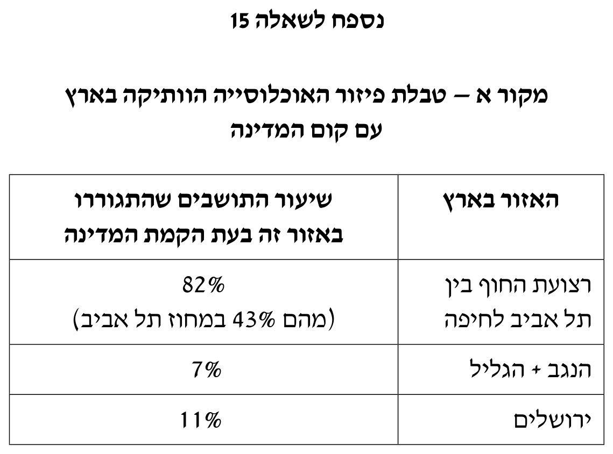</a><figcaption>נספח לשאלה 15 · לחצו על התמונה כדי להגדיל</figcaption></figure>
<figure class="bh-fig"><a href="assets/h29/h29-25s-n15-3.jpg" target="_blank" rel="noopener">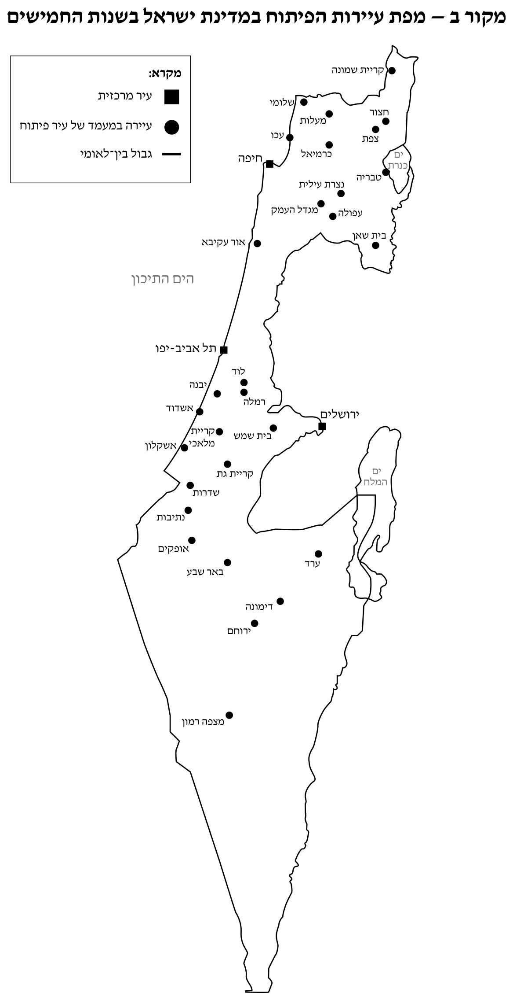</a><figcaption>נספח לשאלה 15 · לחצו על התמונה כדי להגדיל</figcaption></figure>
<div class="bh-sub"><p class="bh-subq" id="lbl-h29q-25s-15-3">הסבירו את הקושי לקדם בו בזמן את שתי המטרות שהציב בן־גוריון. בתשובתכם ציינו רכיב אחד מן הטבלה ורכיב או מסקנה העולים מן המפה.</p>
<textarea class="answer" data-id="h29q-25s-15-3" aria-labelledby="lbl-h29q-25s-15-3" rows="3" placeholder="כתבו כאן את התשובה שלכם..."></textarea></div>
<div class="bh-qkey" data-qkey="h29-25s-15" hidden></div>
</article>
<article class="bh-q" id="h29-25w-9">
<div class="bh-q-head"><span class="bh-exam">📅 בגרות חורף תשפ&quot;ה</span><span class="bh-qn">שאלה 9 בשאלון</span></div>
<h3 class="bh-qtitle">יהודי ארצות האסלאם בסוף שנות הארבעים ובתחילת שנות החמישים</h3>
<p class="bh-ctx">עם קום המדינה נהפכו רבים מיהודי ארצות האסלאם לפליטים בארצם.</p>
<div class="bh-sub"><p class="bh-subq" id="lbl-h29q-25w-9-1">הציגו גורם אחד לכך.</p>
<textarea class="answer" data-id="h29q-25w-9-1" aria-labelledby="lbl-h29q-25w-9-1" rows="3" placeholder="כתבו כאן את התשובה שלכם..."></textarea></div>
<div class="bh-sub"><p class="bh-subq" id="lbl-h29q-25w-9-2">הציגו דרך אחת שנקטה מדינת ישראל כדי לסייע לעלייתם של הפליטים היהודים מארצות האסלאם.</p>
<textarea class="answer" data-id="h29q-25w-9-2" aria-labelledby="lbl-h29q-25w-9-2" rows="3" placeholder="כתבו כאן את התשובה שלכם..."></textarea></div>
<div class="bh-sub"><p class="bh-subq" id="lbl-h29q-25w-9-3">הציגו קושי אחד בקליטתם של העולים מארצות האסלאם בחברה הישראלית הוותיקה, והסבירו כיצד התמודדה הנהגת המדינה עם קושי זה.</p>
<textarea class="answer" data-id="h29q-25w-9-3" aria-labelledby="lbl-h29q-25w-9-3" rows="3" placeholder="כתבו כאן את התשובה שלכם..."></textarea></div>
<div class="bh-qkey" data-qkey="h29-25w-9" hidden></div>
</article>
<article class="bh-q" id="h29-24s-9">
<div class="bh-q-head"><span class="bh-exam">📅 בגרות קיץ תשפ&quot;ד</span><span class="bh-qn">שאלה 9 בשאלון</span></div>
<h3 class="bh-qtitle">העלייה ההמונית ומדיניות &quot;כור ההיתוך&quot;</h3>
<p class="bh-ctx">בשנת 1950 אמר בן גוריון בכנסת:</p>
<blockquote class="bh-quote">“עלינו לקחת את העולה שהוא... מוזנח, מתנכר ומנוכר... ונקנה לו במהירות [את] הלשון, וננחיל לו... את ידיעת הארץ, ונכניס אותו למסגרת לאומית ונלמד אותו [את] עבודת האדמה... וכך נבנה עם מאוחד בלשונו, בהכרתו ובעוז רוחו&quot;.</blockquote>
<p class="bh-cite">(בתוך: צ&#x27; צמרת, &#x27;ועדת פרומקין – ועדת חקירה ממשלתית בנושא חינוך ילדי העולים בשנות המדינה הראשונות&#x27;, עיונים בתקומת ישראל, 1, (1991), עמ&#x27; 408)</p>
<div class="bh-sub"><p class="bh-subq" id="lbl-h29q-24s-9-1">על פי דברי בן גוריון בפתיח, הציגו כיצד נתפסה בעיניו דמות העולה בתקופה זו.</p>
<textarea class="answer" data-id="h29q-24s-9-1" aria-labelledby="lbl-h29q-24s-9-1" rows="3" placeholder="כתבו כאן את התשובה שלכם..."></textarea></div>
<div class="bh-sub"><p class="bh-subq" id="lbl-h29q-24s-9-2">על פי מה שלמדתם, הציגו שני הבדלים בין העולים שעלו בעלייה ההמונית לבין האוכלוסייה הקולטת.</p>
<textarea class="answer" data-id="h29q-24s-9-2" aria-labelledby="lbl-h29q-24s-9-2" rows="3" placeholder="כתבו כאן את התשובה שלכם..."></textarea></div>
<div class="bh-sub"><p class="bh-subq" id="lbl-h29q-24s-9-3">בדבריו בפתיח בן גוריון מביע את רצונו לבנות “עם מאוחד&quot;. הסבירו כיצד הוא התכוון לבצע זאת.</p>
<textarea class="answer" data-id="h29q-24s-9-3" aria-labelledby="lbl-h29q-24s-9-3" rows="3" placeholder="כתבו כאן את התשובה שלכם..."></textarea></div>
<div class="bh-sub"><p class="bh-subq" id="lbl-h29q-24s-9-4">על פי מה שלמדתם, ציינו שני מאפיינים של דמות הישראלי האידיאלי בעיני ההנהגה בתקופה זו.</p>
<textarea class="answer" data-id="h29q-24s-9-4" aria-labelledby="lbl-h29q-24s-9-4" rows="3" placeholder="כתבו כאן את התשובה שלכם..."></textarea></div>
<div class="bh-qkey" data-qkey="h29-24s-9" hidden></div>
</article>
<article class="bh-q" id="h29-24s-10">
<div class="bh-q-head"><span class="bh-exam">📅 בגרות קיץ תשפ&quot;ד</span><span class="bh-qn">שאלה 10 בשאלון</span></div>
<h3 class="bh-qtitle">העלייה מאתיופיה</h3>
<p class="bh-ctx">במסגרת תוכנית פר&quot;ח למדתם את “שיר החסידה&quot;. עיינו בשיר שבנספח לשאלה זו, וענו על השאלות שלפניכם.</p>
<figure class="bh-fig"><a href="assets/h29/h29-24s-n10-1.jpg" target="_blank" rel="noopener">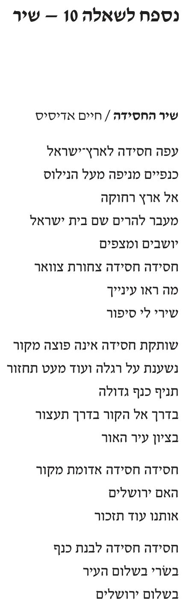</a><figcaption>נספח לשאלה 10 · לחצו על התמונה כדי להגדיל</figcaption></figure>
<div class="bh-sub"><p class="bh-subq" id="lbl-h29q-24s-10-1">ציינו והסבירו שתי דוגמאות מן השיר המבטאות את הנתק של קהילת &quot;ביתא ישראל&quot; מארץ־ישראל.</p>
<textarea class="answer" data-id="h29q-24s-10-1" aria-labelledby="lbl-h29q-24s-10-1" rows="3" placeholder="כתבו כאן את התשובה שלכם..."></textarea></div>
<div class="bh-sub"><p class="bh-subq" id="lbl-h29q-24s-10-2">הציגו פעולה אחת של מדינת ישראל שסייעה להידוק הקשר בינה ובין קהילת “ביתא ישראל&quot;.</p>
<textarea class="answer" data-id="h29q-24s-10-2" aria-labelledby="lbl-h29q-24s-10-2" rows="3" placeholder="כתבו כאן את התשובה שלכם..."></textarea></div>
<div class="bh-sub"><p class="bh-subq" id="lbl-h29q-24s-10-3">הציגו פעולה אחת של אחד ממנהיגי העדה האתיופית שלמדתם עליו בתוכנית פר&quot;ח, שתרמה להידוק הקשר בין קהילת “ביתא ישראל&quot; ובין העם היהודי במדינת ישראל. בתשובתכם ציינו את שם המנהיג.</p>
<textarea class="answer" data-id="h29q-24s-10-3" aria-labelledby="lbl-h29q-24s-10-3" rows="3" placeholder="כתבו כאן את התשובה שלכם..."></textarea></div>
<div class="bh-qkey" data-qkey="h29-24s-10" hidden></div>
</article>
<article class="bh-q" id="h29-24w-10">
<div class="bh-q-head"><span class="bh-exam">📅 בגרות חורף תשפ&quot;ד</span><span class="bh-qn">שאלה 10 בשאלון</span></div>
<h3 class="bh-qtitle">יהודי ברית המועצות</h3>
<p class="bh-opt">אם למדתם על אידה נודל, ענו על כל חלקי השאלה שלפניכם:</p>
<div class="bh-sub"><p class="bh-subq" id="lbl-h29q-24w-10-1">הסבירו באמצעות שני רכיבים מן השיר &quot;שלום לך אידה נודל&quot; שלמדתם בתוכנית פר&quot;ח, כיצד בא לידי ביטוי הקשר שמרגישה נעמי שמר לאידה נודל (סך הכול – שני הסברים). בתשובתכם ציינו את שני הרכיבים מן השיר שעליהם התבססתם.</p>
<textarea class="answer" data-id="h29q-24w-10-1" aria-labelledby="lbl-h29q-24w-10-1" rows="3" placeholder="כתבו כאן את התשובה שלכם..."></textarea></div>
<div class="bh-sub"><p class="bh-subq" id="lbl-h29q-24w-10-2">הציגו אירוע אחד מחייה של אידה נודל, שהשיר &quot;שלום לך אידה נודל&quot; מתבסס עליו.</p>
<textarea class="answer" data-id="h29q-24w-10-2" aria-labelledby="lbl-h29q-24w-10-2" rows="3" placeholder="כתבו כאן את התשובה שלכם..."></textarea></div>
<div class="bh-sub"><p class="bh-subq" id="lbl-h29q-24w-10-3">הסבירו באמצעות שני רכיבים מן השיר &quot;כחול ולבן&quot; שלמדתם בתוכנית פר&quot;ח, כיצד בא לידי ביטוי הקשר של יהודי ברית המועצות למדינת ישראל (סך הכול – שני הסברים). בתשובתכם ציינו את שני הרכיבים מן השיר שעליהם התבססתם.</p>
<textarea class="answer" data-id="h29q-24w-10-3" aria-labelledby="lbl-h29q-24w-10-3" rows="3" placeholder="כתבו כאן את התשובה שלכם..."></textarea></div>
<p class="bh-opt">אם למדתם על נתן שרנסקי, ענו על כל חלקי השאלה שלפניכם:</p>
<div class="bh-sub"><p class="bh-subq" id="lbl-h29q-24w-10-4">על פי סרטון השחרור של נתן שרנסקי שעליו למדתם בתוכנית פר&quot;ח, הסבירו כיצד בא לידי ביטוי בסרטון הקשר בין היהודים בארץ־ישראל לבין &quot;אסירי ציון&quot; בברית המועצות.</p>
<textarea class="answer" data-id="h29q-24w-10-4" aria-labelledby="lbl-h29q-24w-10-4" rows="3" placeholder="כתבו כאן את התשובה שלכם..."></textarea></div>
<div class="bh-sub"><p class="bh-subq" id="lbl-h29q-24w-10-5">הציגו שתי דוגמאות מחייו של נתן שרנסקי הנוגעות למאבקו לעלות לארץ.</p>
<textarea class="answer" data-id="h29q-24w-10-5" aria-labelledby="lbl-h29q-24w-10-5" rows="3" placeholder="כתבו כאן את התשובה שלכם..."></textarea></div>
<div class="bh-sub"><p class="bh-subq" id="lbl-h29q-24w-10-6">הסבירו באמצעות שני רכיבים מן השיר &quot;כחול ולבן&quot; שלמדתם בתוכנית פר&quot;ח, כיצד בא לידי ביטוי הקשר של יהודי ברית המועצות למדינת ישראל (סך הכול – שני הסברים). בתשובתכם ציינו את שני הרכיבים מן השיר שעליהם התבססתם.</p>
<textarea class="answer" data-id="h29q-24w-10-6" aria-labelledby="lbl-h29q-24w-10-6" rows="3" placeholder="כתבו כאן את התשובה שלכם..."></textarea></div>
<p class="bh-ctx"></p>
<div class="bh-qkey" data-qkey="h29-24w-10" hidden></div>
</article>
<article class="bh-q" id="h29-24w-15">
<div class="bh-q-head"><span class="bh-exam">📅 בגרות חורף תשפ&quot;ד</span><span class="bh-qn">שאלה 15 בשאלון</span></div>
<h3 class="bh-qtitle">העלייה הגדולה לאחר קום המדינה</h3>
<p class="bh-ctx">בנספח לשאלה 15 מוצגת כרזה שפרסם צה&quot;ל במהלך מלחמת העצמאות, ויועדה לחיילים שעלו לארץ ממדינות שונות. עיינו בכרזה וענו על שני הסעיפים א–ב.</p>
<figure class="bh-fig"><a href="assets/h29/h29-24w-n15-2.jpg" target="_blank" rel="noopener">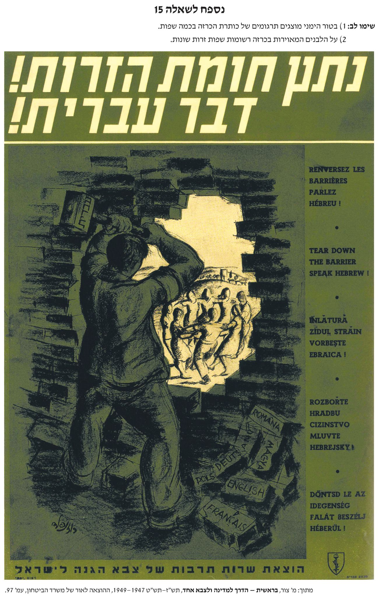</a><figcaption>נספח לשאלה 15 · לחצו על התמונה כדי להגדיל</figcaption></figure>
<div class="bh-sub"><p class="bh-subq" id="lbl-h29q-24w-15-1"><span class="bh-letter">א</span> ציינו תופעה שרווחה בקרב העולים לאחר קום המדינה, שאפשר ללמוד עליה מן הכרזה. בתשובתכם ציינו רכיב אחד שעליו התבססתם.</p>
<textarea class="answer" data-id="h29q-24w-15-1" aria-labelledby="lbl-h29q-24w-15-1" rows="3" placeholder="כתבו כאן את התשובה שלכם..."></textarea></div>
<div class="bh-sub"><p class="bh-subq" id="lbl-h29q-24w-15-2">על פי מה שלמדתם, הסבירו את החשש של מנהיגי המדינה עקב התופעה שציינתם.</p>
<textarea class="answer" data-id="h29q-24w-15-2" aria-labelledby="lbl-h29q-24w-15-2" rows="3" placeholder="כתבו כאן את התשובה שלכם..."></textarea></div>
<p class="bh-ctx"><span class="bh-letter">ב</span> עם קום המדינה, יצרה ההנהגה את דמות ה&quot;צבר&quot; האידיאלית.</p>
<div class="bh-sub"><p class="bh-subq" id="lbl-h29q-24w-15-3">על פי מה שלמדתם על דמות ה&quot;צבר&quot;, הסבירו באמצעות שני רכיבים מן הכרזה כיצד דמות זו באה לידי ביטוי (סך הכול – שני הסברים).</p>
<textarea class="answer" data-id="h29q-24w-15-3" aria-labelledby="lbl-h29q-24w-15-3" rows="3" placeholder="כתבו כאן את התשובה שלכם..."></textarea></div>
<div class="bh-sub"><p class="bh-subq" id="lbl-h29q-24w-15-4">ציינו אם אתם מזדהים עם דמות ה&quot;צבר&quot; שיצרה ההנהגה בישראל. נמקו את דעתכם על פי עולם הערכים שלכם.</p>
<textarea class="answer" data-id="h29q-24w-15-4" aria-labelledby="lbl-h29q-24w-15-4" rows="3" placeholder="כתבו כאן את התשובה שלכם..."></textarea></div>
<div class="bh-qkey" data-qkey="h29-24w-15" hidden></div>
</article>
<article class="bh-q" id="h29-23w-9">
<div class="bh-q-head"><span class="bh-exam">📅 בגרות חורף תשפ&quot;ג</span><span class="bh-qn">שאלה 9 בשאלון</span></div>
<h3 class="bh-qtitle">העלייה ההמונית</h3>
<p class="bh-ctx">לפניכם שני ציטוטים מתוך פרוטוקול של ישיבת הממשלה שנערכה ב־26 באפריל 1949 ועסקה במדיניות העלייה בשנים הראשונות של המדינה.</p>
<blockquote class="bh-quote">&quot;יש מדינה שהוקמה אך ורק לשם קליטת עלייה, ואם לא לשם כך הוקמה – היא אינה נחוצה&quot;.</blockquote>
<p class="bh-cite">(השרה גולדה מאיר, פרוטוקול ישיבת הממשלה, כ&quot;ז ניסן תש&quot;ט, 26/4/49)</p>
<blockquote class="bh-quote">&quot;...אין אנחנו מוכנים לקראת עלייה גדולה כזאת, הן מבחינה רפואית הן מבחינת [יכולות] השיכון. כעבור חודש – עלולים החיים כאן ליהפך לגיהינום...&quot;.</blockquote>
<p class="bh-cite">(השר משה שפירא, פרוטוקול ישיבת הממשלה, כ&quot;ז ניסן תש&quot;ט, 26/4/49)</p>
<div class="bh-sub"><p class="bh-subq" id="lbl-h29q-23w-9-1">על פי הציטוטים, הציגו את שתי הדעות שהובאו בישיבת הממשלה בנוגע למדיניות העלייה בשנים הראשונות של המדינה.</p>
<textarea class="answer" data-id="h29q-23w-9-1" aria-labelledby="lbl-h29q-23w-9-1" rows="3" placeholder="כתבו כאן את התשובה שלכם..."></textarea></div>
<div class="bh-sub"><p class="bh-subq" id="lbl-h29q-23w-9-2">על פי מה שלמדתם, הציגו את המדיניות שנקטה ממשלת ישראל בפועל בנוגע לגלי העליות בשנים הראשונות (1948–1951).</p>
<textarea class="answer" data-id="h29q-23w-9-2" aria-labelledby="lbl-h29q-23w-9-2" rows="3" placeholder="כתבו כאן את התשובה שלכם..."></textarea></div>
<div class="bh-sub"><p class="bh-subq" id="lbl-h29q-23w-9-3">הציגו תוצאה אחת של מדיניות זו.</p>
<textarea class="answer" data-id="h29q-23w-9-3" aria-labelledby="lbl-h29q-23w-9-3" rows="3" placeholder="כתבו כאן את התשובה שלכם..."></textarea></div>
<div class="bh-qkey" data-qkey="h29-23w-9" hidden></div>
</article>
<article class="bh-q" id="h29-23w-10">
<div class="bh-q-head"><span class="bh-exam">📅 בגרות חורף תשפ&quot;ג</span><span class="bh-qn">שאלה 10 בשאלון</span></div>
<h3 class="bh-qtitle">העלייה מברית המועצות</h3>
<div class="bh-sub"><p class="bh-subq" id="lbl-h29q-23w-10-1">ציינו שני קשיים שהיו לפעילים ציוניים בברית המועצות.</p>
<textarea class="answer" data-id="h29q-23w-10-1" aria-labelledby="lbl-h29q-23w-10-1" rows="3" placeholder="כתבו כאן את התשובה שלכם..."></textarea></div>
<div class="bh-sub"><p class="bh-subq" id="lbl-h29q-23w-10-2">בחרו באחד מאסירי ציון שלמדתם עליו – נתן שרנסקי או אידה נודל. ציינו את השם של הדמות שבחרתם.</p>
<textarea class="answer" data-id="h29q-23w-10-2" aria-labelledby="lbl-h29q-23w-10-2" rows="3" placeholder="כתבו כאן את התשובה שלכם..."></textarea></div>
<div class="bh-sub"><p class="bh-subq" id="lbl-h29q-23w-10-3">הסבירו כיצד התמודדה הדמות שבחרתם עם אחד מן הקשיים שציינתם. בתשובתכם התבססו על מידע שלמדתם בשיר או בסרטון בערכת פר&quot;ח.</p>
<textarea class="answer" data-id="h29q-23w-10-3" aria-labelledby="lbl-h29q-23w-10-3" rows="3" placeholder="כתבו כאן את התשובה שלכם..."></textarea></div>
<div class="bh-sub"><p class="bh-subq" id="lbl-h29q-23w-10-4">ציינו ערך שאתם רוצים לאמץ לחייכם מדרך ההתמודדות הזאת. נמקו את הבחירה בערך זה.</p>
<textarea class="answer" data-id="h29q-23w-10-4" aria-labelledby="lbl-h29q-23w-10-4" rows="3" placeholder="כתבו כאן את התשובה שלכם..."></textarea></div>
<div class="bh-qkey" data-qkey="h29-23w-10" hidden></div>
</article>
<article class="bh-q" id="h29-21s-10">
<div class="bh-q-head"><span class="bh-exam">📅 בגרות קיץ תשפ&quot;א</span><span class="bh-qn">שאלה 10 בשאלון</span></div>
<h3 class="bh-qtitle">עליית יהודי אתיופיה לארץ־ישראל</h3>
<p class="bh-ctx">בנספח לשאלה זו מוצג השיר &quot;המסע לארץ־ישראל&quot; מאת חיים אידיסיס. בשיר מתוארת עלייתם של יהודי אתיופיה לארץ.</p>
<figure class="bh-fig"><a href="assets/h29/h29-21s-n10-1.jpg" target="_blank" rel="noopener">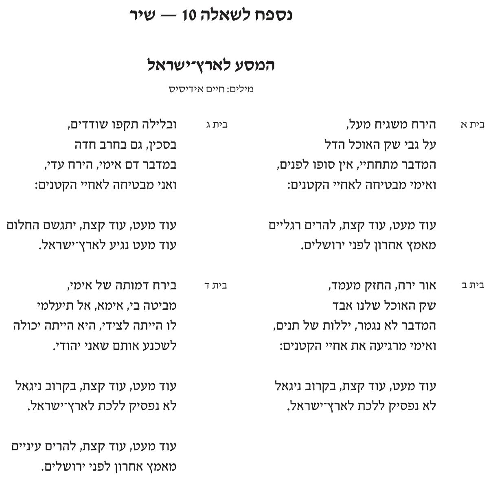</a><figcaption>נספח לשאלה 10 · לחצו על התמונה כדי להגדיל</figcaption></figure>
<div class="bh-sub"><p class="bh-subq" id="lbl-h29q-21s-10-1">הצג שני קשיים שחוו יהודי אתיופיה בדרך לארץ־ישראל שבאים לידי ביטוי בשיר.</p>
<textarea class="answer" data-id="h29q-21s-10-1" aria-labelledby="lbl-h29q-21s-10-1" rows="3" placeholder="כתבו כאן את התשובה שלכם..."></textarea></div>
<div class="bh-sub"><p class="bh-subq" id="lbl-h29q-21s-10-2">הבית הרביעי בשיר עוסק בקושי מסוג אחר. הצג קושי זה.</p>
<textarea class="answer" data-id="h29q-21s-10-2" aria-labelledby="lbl-h29q-21s-10-2" rows="3" placeholder="כתבו כאן את התשובה שלכם..."></textarea></div>
<div class="bh-sub"><p class="bh-subq" id="lbl-h29q-21s-10-3">הסבר כיצד תרם הרב עובדיה יוסף לפתרון קושי זה.</p>
<textarea class="answer" data-id="h29q-21s-10-3" aria-labelledby="lbl-h29q-21s-10-3" rows="3" placeholder="כתבו כאן את התשובה שלכם..."></textarea></div>
<div class="bh-sub"><p class="bh-subq" id="lbl-h29q-21s-10-4">ציין רגש אחד שהתעורר בך בזמן שקראת את השיר &quot;המסע לארץ־ישראל&quot;. נמק את תשובתך.</p>
<textarea class="answer" data-id="h29q-21s-10-4" aria-labelledby="lbl-h29q-21s-10-4" rows="3" placeholder="כתבו כאן את התשובה שלכם..."></textarea></div>
<div class="bh-qkey" data-qkey="h29-21s-10" hidden></div>
</article>
<article class="bh-q" id="h29-21w-10">
<div class="bh-q-head"><span class="bh-exam">📅 בגרות חורף תשפ&quot;א</span><span class="bh-qn">שאלה 10 בשאלון</span></div>
<p class="bh-ctx">לפניך שמותיהן של שלוש מדינות שהייתה מהן עלייה גדולה לארץ בשנים 1948-1954: פולין, רומניה, עירק.</p>
<div class="bh-sub"><p class="bh-subq" id="lbl-h29q-21w-10-1">בחר בשתיים מן המדינות וציין את שמותיהן. בנוגע לכל אחת מן המדינות שבחרת, הסבר גורם אחד לעלייה ממנה, הקשור לנסיבות ההיסטוריות שהיו בה (סך הכול — שני גורמים).</p>
<textarea class="answer" data-id="h29q-21w-10-1" aria-labelledby="lbl-h29q-21w-10-1" rows="3" placeholder="כתבו כאן את התשובה שלכם..."></textarea></div>
<div class="bh-sub"><p class="bh-subq" id="lbl-h29q-21w-10-2">הצג גורם נוסף לעלייה הגדולה, הקשור לנסיבות ההיסטוריות בארץ־ישראל.</p>
<textarea class="answer" data-id="h29q-21w-10-2" aria-labelledby="lbl-h29q-21w-10-2" rows="3" placeholder="כתבו כאן את התשובה שלכם..."></textarea></div>
<div class="bh-sub"><p class="bh-subq" id="lbl-h29q-21w-10-3">הסבר כיצד מדיניות &quot;כור ההיתוך&quot; שגיבשה מדינת ישראל נועדה להתמודד עם השוני בין העולים הרבים שהגיעו בשנות העלייה הגדולה.</p>
<textarea class="answer" data-id="h29q-21w-10-3" aria-labelledby="lbl-h29q-21w-10-3" rows="3" placeholder="כתבו כאן את התשובה שלכם..."></textarea></div>
<div class="bh-qkey" data-qkey="h29-21w-10" hidden></div>
</article>
<article class="bh-q" id="h29-21w-11">
<div class="bh-q-head"><span class="bh-exam">📅 בגרות חורף תשפ&quot;א</span><span class="bh-qn">שאלה 11 בשאלון</span></div>
<details class="bh-passage"><summary><span aria-hidden="true">📄</span> הקטע שעליו מבוססת השאלה · לחצו כדי לקרוא</summary><div class="bh-passage-body">
<p class="bh-ctx">לפניך שני קטעים העוסקים ביהודי ברית המועצות.</p>
<p class="bh-src-label">קטע ראשון</p>
<p class="bh-src-text">בסוף שנות השישים החלה התעוררות לאומית בקרב יהודי ברית המועצות, אשר הושפעה במידה מסוימת מן &quot;התנועה הדמוקרטית&quot; בברית המועצות. התנועה הדמוקרטית התאפיינה בביקורת של אזרחים סובייטים (אזרחים של ברית המועצות) כלפי המשטר. לדוגמה במהלך משפט שנערך בשנת 1966 נגד שני סופרים שהואשמו בתעמולה נגד השלטון, נשלחו לנשיא רוסיה ולמערכות העיתונים מכתבי מחאה של נשות העצורים. חלק מן המחאות הללו הועברו על ידי פעילי התנועה הדמוקרטית גם למדינות מחוץ לברית המועצות ולעיתונות המערבית, כדי לזכות בדעת קהל פעילה במערב. הפנייה לאישים, למוסדות, ולדעת קהל שמחוץ לברית המועצות הפכה לדרך מקובלת של הבעת מחאה נגד השלטון באותה תקופה. פעילי התנועה הדמוקרטית מחו על התערבותו של השלטון בענייני ספרות ואומנות וכן גם על אי־קיומן של זכויות האדם והאזרח. בתקופה זו גם הופצו פניות של אזרחים סובייטים, שבהן הוצגו דרישות למען קיום זכויות לאומיות־ תרבותיות של קבוצות אתניות שונות בברית המועצות. פעילים מרכזיים בתנועה הדמוקרטית יעצו לפעילים של הקבוצות האתניות השונות לפנות לאו&quot;ם ולהסתמך על מסמכים שאומצו על ידו, כגון &quot;מגילת זכויות האדם&quot;. רבים מן היהודים שהפכו לפעילי עלייה היו מקורבים לתנועה הדמוקרטית והושפעו ממנה. פרופסור מיכאל זנד, אחד מפעילי העלייה, העיד על עצמו: &quot;מילאתי בתנועה הדמוקרטית וגם בתנועת העלייה היהודית תפקיד חשוב מאוד... מצאנו בהחלט מכנה משותף&quot;. פעיל עלייה אחר העיד: &quot;למדתי כיצד להיאבק למען זכויותיי החוקיות לחיות במולדתי ההיסטורית מדמויות מרכזיות בתנועה הדמוקרטית&quot;. אפשר להניח כי אווירת המחאה הגלויה שיצרו &quot;הדמוקרטים&quot; הכשירה את הקרקע להתבטאויות של פעילי העלייה. כמו כן, הפעילים היהודים התבססו על ניסיונם של &quot;הדמוקרטים&quot; בתחום הפצת המחאות והעברתן למערב: החל משנת 1968 החלו יהודים בברית המועצות לשלוח עצומות (מכתבי מחאה) קבוצתיות. העצומות הופנו לגורמים שמחוץ לברית המועצות — לאו&quot;ם ולציבוריות היהודית בעולם. במרכז כל עצומה עמדה הדרישה העקרונית &quot;שלח את עמי&quot;. הפונים הסתמכו על מסמכים בין־לאומיים (מסמכים הנוגעים לתושבי מדינות שונות), כגון &quot;ההכרזה האוניברסלית בדבר זכויות האדם&quot; ו&quot;ההסכם הבין־לאומי בדבר ביעור כל צורות האפליה הגזעית&quot;.</p>
<p class="bh-src-text">העצומות האלה הגיעו לשיא בשנת 1969, בין השאר על רקע פעילותה של ממשלת ישראל: כך לדוגמה בסתיו 1969 ראש ממשלת ישראל גולדה מאיר הביאה לידיעת הציבור הרחב את תוכנה של עצומה ששלחו יהודים מגרוזיה (מכתב 18 המשפחות), שביקשו לאפשר להם לעלות ארצה. שגריר ישראל באו&quot;ם מסר את תוכן העצומה במסיבת עיתונאים שערך בניו יורק. לפעולות אלה היה הד גם בברית המועצות, כפי שהעידו הפעילים: &quot;קשה היה לגייס חתימות על העצומות... בינתיים [יהודים] שמעו על מכתב יהודי גרוזיה שקראה גולדה מאיר בכנסת ואזרו אומץ (העזו) לחתום...&quot;.</p>
<p class="bh-cite">(מעובד על פי ש&#x27; רדליך, העצומות של יהודי ברית המועצות כביטוי להתעוררות לאומית 1968-1970, בתוך &#x27;בחינות — עיון ומחקר בבעיות יהודי ברית המועצות ומזרח אירופה&#x27;, ירושלים-תל אביב, תשל&quot;ד, עמ&#x27; 7-22)</p>
<p class="bh-src-label">קטע שני</p>
<p class="bh-src-text">&quot;אנו, יהודי ברית המועצות, ידענו שאיננו לבד במלחמתנו, שכן יהדות העולם היא שהפנתה את עיני העולם למצוקתנו. הפגנות המחאה שלנו, מניין המפגינים המסכנים את עצמם במרכז מוסקבה, זכו לתהודה (הד ותגובה) של עצרות ומצעדים של עשרות אלפים בניו יורק, בלונדון ובפריז. צבא של סטודנטים ועקרות בית הוא שהכריע בסופו של דבר את הקג&quot;ב&quot;.</p>
<p class="bh-cite">(נ&#x27; שרנסקי, יהודי המאבק, התנועה היהודית הלאומית בברית המועצות, 1967-1989, בית התפוצות, עמ&#x27; 4-5)</p>
</div></details>
<div class="bh-sub"><p class="bh-subq" id="lbl-h29q-21w-11-1">על פי הקטע הראשון, הצג שני טיעונים של פעילים סובייטים ו/או יהודים נגד המשטר הסובייטי.</p>
<textarea class="answer" data-id="h29q-21w-11-1" aria-labelledby="lbl-h29q-21w-11-1" rows="3" placeholder="כתבו כאן את התשובה שלכם..."></textarea></div>
<div class="bh-sub"><p class="bh-subq" id="lbl-h29q-21w-11-2">על פי מה שלמדת, הסבר כיצד אחד מן הטיעונים שהצגת מתבסס על אחד הרעיונות של הנאורות או הלאומיות.</p>
<textarea class="answer" data-id="h29q-21w-11-2" aria-labelledby="lbl-h29q-21w-11-2" rows="3" placeholder="כתבו כאן את התשובה שלכם..."></textarea></div>
<div class="bh-qkey" data-qkey="h29-21w-11" hidden></div>
</article>
<article class="bh-q" id="h29-21w-12">
<div class="bh-q-head"><span class="bh-exam">📅 בגרות חורף תשפ&quot;א</span><span class="bh-qn">שאלה 12 בשאלון</span></div>
<details class="bh-passage"><summary><span aria-hidden="true">📄</span> הקטע שעליו מבוססת השאלה · לחצו כדי לקרוא</summary><div class="bh-passage-body">
<p class="bh-ctx">לפניך שני קטעים העוסקים ביהודי ברית המועצות.</p>
<p class="bh-src-label">קטע ראשון</p>
<p class="bh-src-text">בסוף שנות השישים החלה התעוררות לאומית בקרב יהודי ברית המועצות, אשר הושפעה במידה מסוימת מן &quot;התנועה הדמוקרטית&quot; בברית המועצות. התנועה הדמוקרטית התאפיינה בביקורת של אזרחים סובייטים (אזרחים של ברית המועצות) כלפי המשטר. לדוגמה במהלך משפט שנערך בשנת 1966 נגד שני סופרים שהואשמו בתעמולה נגד השלטון, נשלחו לנשיא רוסיה ולמערכות העיתונים מכתבי מחאה של נשות העצורים. חלק מן המחאות הללו הועברו על ידי פעילי התנועה הדמוקרטית גם למדינות מחוץ לברית המועצות ולעיתונות המערבית, כדי לזכות בדעת קהל פעילה במערב. הפנייה לאישים, למוסדות, ולדעת קהל שמחוץ לברית המועצות הפכה לדרך מקובלת של הבעת מחאה נגד השלטון באותה תקופה. פעילי התנועה הדמוקרטית מחו על התערבותו של השלטון בענייני ספרות ואומנות וכן גם על אי־קיומן של זכויות האדם והאזרח. בתקופה זו גם הופצו פניות של אזרחים סובייטים, שבהן הוצגו דרישות למען קיום זכויות לאומיות־ תרבותיות של קבוצות אתניות שונות בברית המועצות. פעילים מרכזיים בתנועה הדמוקרטית יעצו לפעילים של הקבוצות האתניות השונות לפנות לאו&quot;ם ולהסתמך על מסמכים שאומצו על ידו, כגון &quot;מגילת זכויות האדם&quot;. רבים מן היהודים שהפכו לפעילי עלייה היו מקורבים לתנועה הדמוקרטית והושפעו ממנה. פרופסור מיכאל זנד, אחד מפעילי העלייה, העיד על עצמו: &quot;מילאתי בתנועה הדמוקרטית וגם בתנועת העלייה היהודית תפקיד חשוב מאוד... מצאנו בהחלט מכנה משותף&quot;. פעיל עלייה אחר העיד: &quot;למדתי כיצד להיאבק למען זכויותיי החוקיות לחיות במולדתי ההיסטורית מדמויות מרכזיות בתנועה הדמוקרטית&quot;. אפשר להניח כי אווירת המחאה הגלויה שיצרו &quot;הדמוקרטים&quot; הכשירה את הקרקע להתבטאויות של פעילי העלייה. כמו כן, הפעילים היהודים התבססו על ניסיונם של &quot;הדמוקרטים&quot; בתחום הפצת המחאות והעברתן למערב: החל משנת 1968 החלו יהודים בברית המועצות לשלוח עצומות (מכתבי מחאה) קבוצתיות. העצומות הופנו לגורמים שמחוץ לברית המועצות — לאו&quot;ם ולציבוריות היהודית בעולם. במרכז כל עצומה עמדה הדרישה העקרונית &quot;שלח את עמי&quot;. הפונים הסתמכו על מסמכים בין־לאומיים (מסמכים הנוגעים לתושבי מדינות שונות), כגון &quot;ההכרזה האוניברסלית בדבר זכויות האדם&quot; ו&quot;ההסכם הבין־לאומי בדבר ביעור כל צורות האפליה הגזעית&quot;.</p>
<p class="bh-src-text">העצומות האלה הגיעו לשיא בשנת 1969, בין השאר על רקע פעילותה של ממשלת ישראל: כך לדוגמה בסתיו 1969 ראש ממשלת ישראל גולדה מאיר הביאה לידיעת הציבור הרחב את תוכנה של עצומה ששלחו יהודים מגרוזיה (מכתב 18 המשפחות), שביקשו לאפשר להם לעלות ארצה. שגריר ישראל באו&quot;ם מסר את תוכן העצומה במסיבת עיתונאים שערך בניו יורק. לפעולות אלה היה הד גם בברית המועצות, כפי שהעידו הפעילים: &quot;קשה היה לגייס חתימות על העצומות... בינתיים [יהודים] שמעו על מכתב יהודי גרוזיה שקראה גולדה מאיר בכנסת ואזרו אומץ (העזו) לחתום...&quot;.</p>
<p class="bh-cite">(מעובד על פי ש&#x27; רדליך, העצומות של יהודי ברית המועצות כביטוי להתעוררות לאומית 1968-1970, בתוך &#x27;בחינות — עיון ומחקר בבעיות יהודי ברית המועצות ומזרח אירופה&#x27;, ירושלים-תל אביב, תשל&quot;ד, עמ&#x27; 7-22)</p>
<p class="bh-src-label">קטע שני</p>
<p class="bh-src-text">&quot;אנו, יהודי ברית המועצות, ידענו שאיננו לבד במלחמתנו, שכן יהדות העולם היא שהפנתה את עיני העולם למצוקתנו. הפגנות המחאה שלנו, מניין המפגינים המסכנים את עצמם במרכז מוסקבה, זכו לתהודה (הד ותגובה) של עצרות ומצעדים של עשרות אלפים בניו יורק, בלונדון ובפריז. צבא של סטודנטים ועקרות בית הוא שהכריע בסופו של דבר את הקג&quot;ב&quot;.</p>
<p class="bh-cite">(נ&#x27; שרנסקי, יהודי המאבק, התנועה היהודית הלאומית בברית המועצות, 1967-1989, בית התפוצות, עמ&#x27; 4-5)</p>
</div></details>
<div class="bh-sub"><p class="bh-subq" id="lbl-h29q-21w-12-1">על פי הקטע הראשון, הסבר כיצד באה לידי ביטוי השפעה של התנועה הדמוקרטית על פעילי העלייה בברית המועצות. בתשובתך התייחס לשתי דוגמאות שממחישות השפעה זו.</p>
<textarea class="answer" data-id="h29q-21w-12-1" aria-labelledby="lbl-h29q-21w-12-1" rows="3" placeholder="כתבו כאן את התשובה שלכם..."></textarea></div>
<div class="bh-sub"><p class="bh-subq" id="lbl-h29q-21w-12-2">על פי מה שלמדת, הצג את &quot;מבצע חתונה&quot; (1970) שיזמו פעילי עלייה יהודים.</p>
<textarea class="answer" data-id="h29q-21w-12-2" aria-labelledby="lbl-h29q-21w-12-2" rows="3" placeholder="כתבו כאן את התשובה שלכם..."></textarea></div>
<div class="bh-sub"><p class="bh-subq" id="lbl-h29q-21w-12-3">בחר רכיב אחד מן השפה הקולנועית בקדימון (טריילר) של הסרט &quot;מבצע חתונה&quot;, והסבר מדוע רכיב זה מעורר בצופים הזדהות עם פעילי העלייה.</p>
<textarea class="answer" data-id="h29q-21w-12-3" aria-labelledby="lbl-h29q-21w-12-3" rows="3" placeholder="כתבו כאן את התשובה שלכם..."></textarea></div>
<div class="bh-qkey" data-qkey="h29-21w-12" hidden></div>
</article>
<article class="bh-q" id="h29-20s-10">
<div class="bh-q-head"><span class="bh-exam">📅 בגרות קיץ תש&quot;ף</span><span class="bh-qn">שאלה 10 בשאלון</span></div>
<p class="bh-ctx">בשיר &quot;החסידה&quot; מאת חיים אידיסיס באים לידי ביטוי הגעגועים של יהודי אתיופיה לציון.</p>
<div class="bh-sub"><p class="bh-subq" id="lbl-h29q-20s-10-1">הסבר כיצד באים לידי ביטוי געגועים אלה באמצעות שתי דוגמאות מן השיר.</p>
<textarea class="answer" data-id="h29q-20s-10-1" aria-labelledby="lbl-h29q-20s-10-1" rows="3" placeholder="כתבו כאן את התשובה שלכם..."></textarea></div>
<div class="bh-sub"><p class="bh-subq" id="lbl-h29q-20s-10-2">המשורר שואל בשיר: “האם ירושלים אותנו עוד תזכור?&quot;</p>
<textarea class="answer" data-id="h29q-20s-10-2" aria-labelledby="lbl-h29q-20s-10-2" rows="3" placeholder="כתבו כאן את התשובה שלכם..."></textarea></div>
<div class="bh-sub"><p class="bh-subq" id="lbl-h29q-20s-10-3">הצג פעולה אחת שעשתה מדינת ישראל כדי לסייע ליהודי אתיופיה לעלות לארץ.</p>
<textarea class="answer" data-id="h29q-20s-10-3" aria-labelledby="lbl-h29q-20s-10-3" rows="3" placeholder="כתבו כאן את התשובה שלכם..."></textarea></div>
<div class="bh-sub"><p class="bh-subq" id="lbl-h29q-20s-10-4">הצג פעולה אחת שעשה פרדה אקלום כדי לקדם את העלייה של יהודי אתיופיה למדינת ישראל.</p>
<textarea class="answer" data-id="h29q-20s-10-4" aria-labelledby="lbl-h29q-20s-10-4" rows="3" placeholder="כתבו כאן את התשובה שלכם..."></textarea></div>
<div class="bh-qkey" data-qkey="h29-20s-10" hidden></div>
</article>
<article class="bh-q" id="h29-19s-14">
<div class="bh-q-head"><span class="bh-exam">📅 בגרות קיץ תשע&quot;ט</span><span class="bh-qn">שאלה 14 בשאלון</span></div>
<p class="bh-ctx">בשנות השבעים, השמונים והתשעים של המאה ה־20 עלו לישראל יהודים מברית המועצות ויהודים מאתיופיה.</p>
<div class="bh-sub"><p class="bh-subq" id="lbl-h29q-19s-14-1">הצג סיבה אחת לעליית יהודי ברית המועצות למדינת ישראל. הצג סיבה אחרת לעליית יהודי אתיופיה.</p>
<textarea class="answer" data-id="h29q-19s-14-1" aria-labelledby="lbl-h29q-19s-14-1" rows="3" placeholder="כתבו כאן את התשובה שלכם..."></textarea></div>
<p class="bh-ctx">לפניך שמות של אישים שלמדת עליהם ועלו מברית המועצות ומאתיופיה: יולי אדלשטיין, יוסף מנדלביץ&#x27;, אידה נודל, נתן שרנסקי, יונה בוגאלה, הרב משה סלומון, פנינה תמנו שטה.</p>
<div class="bh-sub"><p class="bh-subq" id="lbl-h29q-19s-14-2">בחר באחד מן האישים האלה, שעשוי לדעתך להיות מקור השראה לחברה הישראלית. ציין את שמו, הצג את פועלו, והסבר מדוע הוא עשוי להיות מקור השראה.</p>
<textarea class="answer" data-id="h29q-19s-14-2" aria-labelledby="lbl-h29q-19s-14-2" rows="3" placeholder="כתבו כאן את התשובה שלכם..."></textarea></div>
<div class="bh-qkey" data-qkey="h29-19s-14" hidden></div>
</article>
<article class="bh-q" id="h29-18s-8">
<div class="bh-q-head"><span class="bh-exam">📅 בגרות קיץ תשע&quot;ח</span><span class="bh-qn">שאלה 8 בשאלון</span></div>
<h3 class="bh-qtitle">העלייה הגדולה לאחר קום המדינה</h3>
<p class="bh-ctx"><span class="bh-letter">א</span> בעשור הראשון להקמתה, עלו למדינת ישראל יהודים רבים מרחבי העולם.</p>
<div class="bh-sub"><p class="bh-subq" id="lbl-h29q-18s-8-1">הצג גורם אחד לעלייה הגדולה מארצות האסלאם, וגורם אחר לעלייה הגדולה מארצות אירופה בתקופה זו (סך הכול — שני גורמים).</p>
<textarea class="answer" data-id="h29q-18s-8-1" aria-labelledby="lbl-h29q-18s-8-1" rows="3" placeholder="כתבו כאן את התשובה שלכם..."></textarea></div>
<p class="bh-ctx"><span class="bh-letter">ב</span> בנספח לשאלה 8 מוצגת כרזה. כרזה זו פורסמה כדי לקדם את מדיניות כור ההיתוך.</p>
<figure class="bh-fig"><a href="assets/h29/h29-18s-n8-2.jpg" target="_blank" rel="noopener">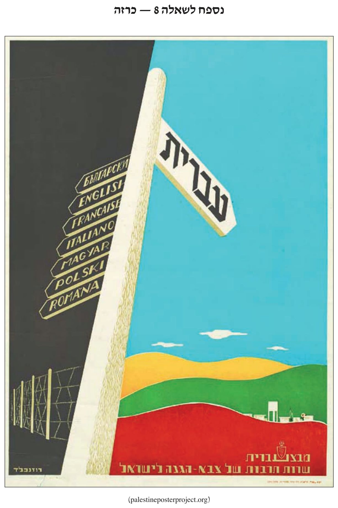</a><figcaption>נספח לשאלה 8 · לחצו על התמונה כדי להגדיל</figcaption></figure>
<div class="bh-sub"><p class="bh-subq" id="lbl-h29q-18s-8-2">הצג את מדיניות כור ההיתוך.</p>
<textarea class="answer" data-id="h29q-18s-8-2" aria-labelledby="lbl-h29q-18s-8-2" rows="3" placeholder="כתבו כאן את התשובה שלכם..."></textarea></div>
<div class="bh-sub"><p class="bh-subq" id="lbl-h29q-18s-8-3">ציין מהו המסר של הכרזה, והסבר על פי שני רכיבים מן הכרזה כיצד המסר שציינת בא לידי ביטוי בכרזה.</p>
<textarea class="answer" data-id="h29q-18s-8-3" aria-labelledby="lbl-h29q-18s-8-3" rows="3" placeholder="כתבו כאן את התשובה שלכם..."></textarea></div>
<div class="bh-qkey" data-qkey="h29-18s-8" hidden></div>
</article>
<article class="bh-q" id="h29-17s-11">
<div class="bh-q-head"><span class="bh-exam">📅 בגרות קיץ תשע&quot;ז</span><span class="bh-qn">שאלה 11 בשאלון</span></div>
<details class="bh-passage"><summary><span aria-hidden="true">📄</span> הקטע שעליו מבוססת השאלה · לחצו כדי לקרוא</summary><div class="bh-passage-body">
<p class="bh-ctx">לפניך שני קטעים העוסקים בעליית יהודי אתיופיה: קטע I — עדות, וקטע II — מחקרי.</p>
<p class="bh-src-label">קטע I</p>
<p class="bh-src-text">&quot;בכל ליל סדר, לאחר שמספרים ביציאת מצרים, נהוג אצלנו — במשפחות של עולי אתיופיה — להקשיב בשקיקה [בהתלהבות] לאחד הפרקים המפוארים בתחיית העם היהודי — יציאת יהודי אתיופיה. אל תטעו, איננו מתכוונים לתצלומים שנצרבו בתודעה שנראים בהם עולים חדשים יושבים צפופים במטוסי ג&#x27;מבו. הפרק שאנחנו מדברים עליו התחיל עוד לפני שספינות חיל הים הגיעו כדי להשתתף במבצע העלייה, ובטרם צילמו במדבריות את הדמויות עולות למסוקי חיל האוויר באישון לילה. נכון, למדינת ישראל יש חלק בעליית יהודי אתיופיה, איש אינו מתכחש לזה, אולם הדגש המרכזי שניתן למעשיהם של נציגי המדינה — הבאנו אותם, הצלנו אותם, העלינו אותם, צילמנו אותם — גרם לעולים להיראות פסיביים. ומה ש&quot;שכחו&quot; לציין בתחילת כל תיאור של העלייה מאתיופיה: &#x27;אלפים מיהודי אתיופיה צעדו לגבול סודן והמתינו שם במחנות זמניים עד להובלתם לישראל&#x27;. למעשה, התיאור הקצר הזה הוא לב לבו של הסיפור&quot;.</p>
<p class="bh-cite">(מעובד על פי עדות מתוך: http://cafe.themarker.com/post/3275391)</p>
<p class="bh-src-label">קטע II</p>
<p class="bh-src-text">חלום השיבה מגלות ממושכת לישראל היה רעיון מרכזי בחברה היהודית המסורתית באתיופיה, ולאור זאת אפשר להבין את הנכונות להתמודד עם הקשיים בדרך. יהודי אתיופיה היו מודעים לסכנות: המסלול עובר בשבילי הרים ובשטחי מדבר ומצויים בו מכשולים אנושיים וחיות טרף. יתרה מכך, הם ידעו שהיציאה מאתיופיה מנוגדת לחוק, ומי שיעשה זאת יסתכן בעונש חמור. לפיכך היהודים שהחליטו לצאת לדרך עשו צעד אמיץ מאוד [...]</p>
<p class="bh-src-text">האידאולוגים הציוניים, שעסקו בבניית ישראל החדשה (החל מהקמת המדינה), פארו את דמותו של הישראלי האידאלי בעל העוצמה ואומץ הלב [...] אך על אף שיהודי אתיופיה ראו את עצמם גיבורים — לא זכה אומץ לבם לשום הד [התייחסות] בחברה הישראלית [...] ייתכן שהדבר קשור להשפעת אמצעי התקשורת: בתקופה שבה נערך &quot;מבצע משה&quot; (1984—1985) הגיעו הבצורת והרעב באתיופיה לשיאם, ותחנות טלוויזיה מכל רחבי העולם שידרו תמונות קשות של מציאות זו. היו אלה מסרים בעלי עוצמה אדירה. לפיכך, אף על פי שיהודי אתיופיה זכו לכינוי &#x27;הציונים האחרונים&#x27;, ואף על פי שאלפים מהם הגיעו לארץ במהלך שבע השנים שלפני &quot;מבצע משה&quot;, הרי שרוב הישראלים ראו בהם פליטים הנמלטים מרעב, ולא עולים מטעמים אידאולוגיים.</p>
<p class="bh-src-text">אני סבור שגורם נוסף תרם לשלילת תואר הגבורה מיהודי אתיופיה: הישראלים נוטים לראות את עצמם &#x27;מצילי היהודים בעולם&#x27;. הגדרה זו של היחסים: הישראלי בצד ה&#x27;נותן&#x27; והעולה מאתיופיה בצד ה&#x27;מקבל&#x27;, התקבעה מנקודה זו ואילך בתודעתם של הישראלים הוותיקים.</p>
<p class="bh-cite">(מעובד על פי בן עזר, ג&#x27; [2007]. המסע: סיפור המסע של יהודי אתיופיה לישראל 1977-1985. תל אביב: מודן, עמ&#x27; 84, 155-156, 225, 234-235)</p>
</div></details>
<p class="bh-ctx">מדינת ישראל הייתה מעורבת באופן פעיל בהעלאת יהודים מאתיופיה בשנות ה־80.</p>
<div class="bh-sub"><p class="bh-subq" id="lbl-h29q-17s-11-1">על פי מה שלמדת, הצג את הסיבה למעורבות פעילה זו.</p>
<textarea class="answer" data-id="h29q-17s-11-1" aria-labelledby="lbl-h29q-17s-11-1" rows="3" placeholder="כתבו כאן את התשובה שלכם..."></textarea></div>
<div class="bh-sub"><p class="bh-subq" id="lbl-h29q-17s-11-2">על פי קטע I, הסבר מהי הבעיה, לדעת נותן העדות, בהדגשה היתרה שניתנה למעורבות זו של מדינת ישראל.</p>
<textarea class="answer" data-id="h29q-17s-11-2" aria-labelledby="lbl-h29q-17s-11-2" rows="3" placeholder="כתבו כאן את התשובה שלכם..."></textarea></div>
<div class="bh-qkey" data-qkey="h29-17s-11" hidden></div>
</article>
<article class="bh-q" id="h29-17s-12">
<div class="bh-q-head"><span class="bh-exam">📅 בגרות קיץ תשע&quot;ז</span><span class="bh-qn">שאלה 12 בשאלון</span></div>
<details class="bh-passage"><summary><span aria-hidden="true">📄</span> הקטע שעליו מבוססת השאלה · לחצו כדי לקרוא</summary><div class="bh-passage-body">
<p class="bh-ctx">לפניך שני קטעים העוסקים בעליית יהודי אתיופיה: קטע I — עדות, וקטע II — מחקרי.</p>
<p class="bh-src-label">קטע I</p>
<p class="bh-src-text">&quot;בכל ליל סדר, לאחר שמספרים ביציאת מצרים, נהוג אצלנו — במשפחות של עולי אתיופיה — להקשיב בשקיקה [בהתלהבות] לאחד הפרקים המפוארים בתחיית העם היהודי — יציאת יהודי אתיופיה. אל תטעו, איננו מתכוונים לתצלומים שנצרבו בתודעה שנראים בהם עולים חדשים יושבים צפופים במטוסי ג&#x27;מבו. הפרק שאנחנו מדברים עליו התחיל עוד לפני שספינות חיל הים הגיעו כדי להשתתף במבצע העלייה, ובטרם צילמו במדבריות את הדמויות עולות למסוקי חיל האוויר באישון לילה. נכון, למדינת ישראל יש חלק בעליית יהודי אתיופיה, איש אינו מתכחש לזה, אולם הדגש המרכזי שניתן למעשיהם של נציגי המדינה — הבאנו אותם, הצלנו אותם, העלינו אותם, צילמנו אותם — גרם לעולים להיראות פסיביים. ומה ש&quot;שכחו&quot; לציין בתחילת כל תיאור של העלייה מאתיופיה: &#x27;אלפים מיהודי אתיופיה צעדו לגבול סודן והמתינו שם במחנות זמניים עד להובלתם לישראל&#x27;. למעשה, התיאור הקצר הזה הוא לב לבו של הסיפור&quot;.</p>
<p class="bh-cite">(מעובד על פי עדות מתוך: http://cafe.themarker.com/post/3275391)</p>
<p class="bh-src-label">קטע II</p>
<p class="bh-src-text">חלום השיבה מגלות ממושכת לישראל היה רעיון מרכזי בחברה היהודית המסורתית באתיופיה, ולאור זאת אפשר להבין את הנכונות להתמודד עם הקשיים בדרך. יהודי אתיופיה היו מודעים לסכנות: המסלול עובר בשבילי הרים ובשטחי מדבר ומצויים בו מכשולים אנושיים וחיות טרף. יתרה מכך, הם ידעו שהיציאה מאתיופיה מנוגדת לחוק, ומי שיעשה זאת יסתכן בעונש חמור. לפיכך היהודים שהחליטו לצאת לדרך עשו צעד אמיץ מאוד [...]</p>
<p class="bh-src-text">האידאולוגים הציוניים, שעסקו בבניית ישראל החדשה (החל מהקמת המדינה), פארו את דמותו של הישראלי האידאלי בעל העוצמה ואומץ הלב [...] אך על אף שיהודי אתיופיה ראו את עצמם גיבורים — לא זכה אומץ לבם לשום הד [התייחסות] בחברה הישראלית [...] ייתכן שהדבר קשור להשפעת אמצעי התקשורת: בתקופה שבה נערך &quot;מבצע משה&quot; (1984—1985) הגיעו הבצורת והרעב באתיופיה לשיאם, ותחנות טלוויזיה מכל רחבי העולם שידרו תמונות קשות של מציאות זו. היו אלה מסרים בעלי עוצמה אדירה. לפיכך, אף על פי שיהודי אתיופיה זכו לכינוי &#x27;הציונים האחרונים&#x27;, ואף על פי שאלפים מהם הגיעו לארץ במהלך שבע השנים שלפני &quot;מבצע משה&quot;, הרי שרוב הישראלים ראו בהם פליטים הנמלטים מרעב, ולא עולים מטעמים אידאולוגיים.</p>
<p class="bh-src-text">אני סבור שגורם נוסף תרם לשלילת תואר הגבורה מיהודי אתיופיה: הישראלים נוטים לראות את עצמם &#x27;מצילי היהודים בעולם&#x27;. הגדרה זו של היחסים: הישראלי בצד ה&#x27;נותן&#x27; והעולה מאתיופיה בצד ה&#x27;מקבל&#x27;, התקבעה מנקודה זו ואילך בתודעתם של הישראלים הוותיקים.</p>
<p class="bh-cite">(מעובד על פי בן עזר, ג&#x27; [2007]. המסע: סיפור המסע של יהודי אתיופיה לישראל 1977-1985. תל אביב: מודן, עמ&#x27; 84, 155-156, 225, 234-235)</p>
</div></details>
<p class="bh-ctx">העלייה מאתיופיה הייתה עלייה אידאולוגית, והעולים אף כונו &quot;הציונים האחרונים&quot;.</p>
<div class="bh-sub"><p class="bh-subq" id="lbl-h29q-17s-12-1">הסבר אמירה זו על פי קטע II.</p>
<textarea class="answer" data-id="h29q-17s-12-1" aria-labelledby="lbl-h29q-17s-12-1" rows="3" placeholder="כתבו כאן את התשובה שלכם..."></textarea></div>
<div class="bh-sub"><p class="bh-subq" id="lbl-h29q-17s-12-2">הצג, על פי מה שלמדת, את ניסיון העלייה של אבא מהרי לארץ (1862).</p>
<textarea class="answer" data-id="h29q-17s-12-2" aria-labelledby="lbl-h29q-17s-12-2" rows="3" placeholder="כתבו כאן את התשובה שלכם..."></textarea></div>
<div class="bh-qkey" data-qkey="h29-17s-12" hidden></div>
</article>
<article class="bh-q" id="h29-17s-13">
<div class="bh-q-head"><span class="bh-exam">📅 בגרות קיץ תשע&quot;ז</span><span class="bh-qn">שאלה 13 בשאלון</span></div>
<details class="bh-passage"><summary><span aria-hidden="true">📄</span> הקטע שעליו מבוססת השאלה · לחצו כדי לקרוא</summary><div class="bh-passage-body">
<p class="bh-ctx">לפניך שני קטעים העוסקים בעליית יהודי אתיופיה: קטע I — עדות, וקטע II — מחקרי.</p>
<p class="bh-src-label">קטע I</p>
<p class="bh-src-text">&quot;בכל ליל סדר, לאחר שמספרים ביציאת מצרים, נהוג אצלנו — במשפחות של עולי אתיופיה — להקשיב בשקיקה [בהתלהבות] לאחד הפרקים המפוארים בתחיית העם היהודי — יציאת יהודי אתיופיה. אל תטעו, איננו מתכוונים לתצלומים שנצרבו בתודעה שנראים בהם עולים חדשים יושבים צפופים במטוסי ג&#x27;מבו. הפרק שאנחנו מדברים עליו התחיל עוד לפני שספינות חיל הים הגיעו כדי להשתתף במבצע העלייה, ובטרם צילמו במדבריות את הדמויות עולות למסוקי חיל האוויר באישון לילה. נכון, למדינת ישראל יש חלק בעליית יהודי אתיופיה, איש אינו מתכחש לזה, אולם הדגש המרכזי שניתן למעשיהם של נציגי המדינה — הבאנו אותם, הצלנו אותם, העלינו אותם, צילמנו אותם — גרם לעולים להיראות פסיביים. ומה ש&quot;שכחו&quot; לציין בתחילת כל תיאור של העלייה מאתיופיה: &#x27;אלפים מיהודי אתיופיה צעדו לגבול סודן והמתינו שם במחנות זמניים עד להובלתם לישראל&#x27;. למעשה, התיאור הקצר הזה הוא לב לבו של הסיפור&quot;.</p>
<p class="bh-cite">(מעובד על פי עדות מתוך: http://cafe.themarker.com/post/3275391)</p>
<p class="bh-src-label">קטע II</p>
<p class="bh-src-text">חלום השיבה מגלות ממושכת לישראל היה רעיון מרכזי בחברה היהודית המסורתית באתיופיה, ולאור זאת אפשר להבין את הנכונות להתמודד עם הקשיים בדרך. יהודי אתיופיה היו מודעים לסכנות: המסלול עובר בשבילי הרים ובשטחי מדבר ומצויים בו מכשולים אנושיים וחיות טרף. יתרה מכך, הם ידעו שהיציאה מאתיופיה מנוגדת לחוק, ומי שיעשה זאת יסתכן בעונש חמור. לפיכך היהודים שהחליטו לצאת לדרך עשו צעד אמיץ מאוד [...]</p>
<p class="bh-src-text">האידאולוגים הציוניים, שעסקו בבניית ישראל החדשה (החל מהקמת המדינה), פארו את דמותו של הישראלי האידאלי בעל העוצמה ואומץ הלב [...] אך על אף שיהודי אתיופיה ראו את עצמם גיבורים — לא זכה אומץ לבם לשום הד [התייחסות] בחברה הישראלית [...] ייתכן שהדבר קשור להשפעת אמצעי התקשורת: בתקופה שבה נערך &quot;מבצע משה&quot; (1984—1985) הגיעו הבצורת והרעב באתיופיה לשיאם, ותחנות טלוויזיה מכל רחבי העולם שידרו תמונות קשות של מציאות זו. היו אלה מסרים בעלי עוצמה אדירה. לפיכך, אף על פי שיהודי אתיופיה זכו לכינוי &#x27;הציונים האחרונים&#x27;, ואף על פי שאלפים מהם הגיעו לארץ במהלך שבע השנים שלפני &quot;מבצע משה&quot;, הרי שרוב הישראלים ראו בהם פליטים הנמלטים מרעב, ולא עולים מטעמים אידאולוגיים.</p>
<p class="bh-src-text">אני סבור שגורם נוסף תרם לשלילת תואר הגבורה מיהודי אתיופיה: הישראלים נוטים לראות את עצמם &#x27;מצילי היהודים בעולם&#x27;. הגדרה זו של היחסים: הישראלי בצד ה&#x27;נותן&#x27; והעולה מאתיופיה בצד ה&#x27;מקבל&#x27;, התקבעה מנקודה זו ואילך בתודעתם של הישראלים הוותיקים.</p>
<p class="bh-cite">(מעובד על פי בן עזר, ג&#x27; [2007]. המסע: סיפור המסע של יהודי אתיופיה לישראל 1977-1985. תל אביב: מודן, עמ&#x27; 84, 155-156, 225, 234-235)</p>
</div></details>
<p class="bh-ctx">בקטע II נכתב: &quot;האידאולוגים הציוניים שעסקו בבניית ישראל החדשה פארו את דמותו של הישראלי האידאלי בעל העוצמה ואומץ הלב&quot;.</p>
<div class="bh-sub"><p class="bh-subq" id="lbl-h29q-17s-13-1">על פי מה שלמדת, הצג מה הייתה מדיניות &quot;כור ההיתוך&quot;.</p>
<textarea class="answer" data-id="h29q-17s-13-1" aria-labelledby="lbl-h29q-17s-13-1" rows="3" placeholder="כתבו כאן את התשובה שלכם..."></textarea></div>
<div class="bh-sub"><p class="bh-subq" id="lbl-h29q-17s-13-2">הסבר מדוע הונהגה מדיניות זו בארץ בשנות ה־50.</p>
<textarea class="answer" data-id="h29q-17s-13-2" aria-labelledby="lbl-h29q-17s-13-2" rows="3" placeholder="כתבו כאן את התשובה שלכם..."></textarea></div>
<div class="bh-sub"><p class="bh-subq" id="lbl-h29q-17s-13-3">על פי קטע II, הסבר מדוע, לטענת המחבר, לא זכתה גבורתם של יהודי אתיופיה &quot;לשום הד בחברה הישראלית&quot;.</p>
<textarea class="answer" data-id="h29q-17s-13-3" aria-labelledby="lbl-h29q-17s-13-3" rows="3" placeholder="כתבו כאן את התשובה שלכם..."></textarea></div>
<div class="bh-qkey" data-qkey="h29-17s-13" hidden></div>
</article>
</section>
  <div class="bh-send" id="bhSend">
    <p class="bh-send-note" id="bhSendNote">סיימתם לענות בנושא הזה? שלחו את התשובות למורה.</p>
    <button class="btn primary bm-send-btn" type="button" id="sendToTeacherBtn" data-assignment="היסטוריה - שאלות בגרות" aria-controls="bmSendPanel" aria-expanded="false">📤 שלחו למורה</button>
    <p class="bm-send-last" id="bmSendLast" hidden></p>
    <div class="bm-send-panel" id="bmSendPanel" role="region" aria-label="שליחה למורה" hidden></div>
  </div>
  <div class="bh-tools toolbar">
    <button type="button" class="btn" id="printBtn">🖨 הדפסה</button>
    <button type="button" class="btn" id="clearBtn">🗑 מחיקת התשובות שלי</button>
  </div>
</main>
<footer class="credit">היסטוריה · שאלון 29281 · שאלות בגרות</footer>

<script>
/* לשוניות לפי נושא + שמירת התשובות במכשיר */
(function(){
  var KEY = 'bm-h29:';
  var keyMode = /[?&]key(=|&|$)/.test(location.search);
  var tabs = Array.prototype.slice.call(document.querySelectorAll('.bh-tab'));
  var sendBox = document.getElementById('bhSend');
  /* כפתור "שלחו למורה" עובר לסוף הנושא הפתוח, ושולח רק את התשובות שבו (assets/send-to-teacher.js) */
  function placeSend(id){
    var panel = document.getElementById(id);
    if(!sendBox || !panel) return;
    Array.prototype.forEach.call(document.querySelectorAll('.bh-panel[data-submit-scope]'), function(p){ p.removeAttribute('data-submit-scope'); });
    panel.setAttribute('data-submit-scope', '');
    panel.appendChild(sendBox);
    var tab = document.querySelector('.bh-tab[aria-controls="' + id + '"]');
    var name = '';
    if(tab){ var nm = tab.querySelector('.bh-nm'); name = nm ? nm.textContent.trim() : ''; }
    document.getElementById('sendToTeacherBtn').setAttribute('data-topic-url', 'history-29281.html#' + id);
    document.getElementById('bhSendNote').textContent = 'סיימתם לענות על השאלות בנושא "' + name + '"? שלחו את התשובות למורה.';
    document.dispatchEvent(new CustomEvent('bm-send-scope-change'));
  }
  function show(id, focus){
    placeSend(id);
    tabs.forEach(function(t){
      var on = t.getAttribute('aria-controls') === id;
      t.setAttribute('aria-selected', String(on)); t.tabIndex = on ? 0 : -1;
      document.getElementById(t.getAttribute('aria-controls')).hidden = !on;
      if(on && focus) t.focus();
    });
    try{ sessionStorage.setItem('bm-h29-tab', id); }catch(e){}
  }
  tabs.forEach(function(t, i){
    t.addEventListener('click', function(){ show(t.getAttribute('aria-controls')); });
    t.addEventListener('keydown', function(e){
      var k = e.key, j = k === 'ArrowLeft' ? i + 1 : k === 'ArrowRight' ? i - 1 : k === 'Home' ? 0 : k === 'End' ? tabs.length - 1 : -1;
      if(j < 0) return; e.preventDefault(); j = (j + tabs.length) % tabs.length; show(tabs[j].getAttribute('aria-controls'), true);
    });
  });
  var start = (location.hash || '').slice(1);
  if(!/^h-/.test(start) || !document.getElementById(start)){
    var q = start && document.getElementById(start);
    var p = q && q.closest && q.closest('.bh-panel');
    if(p) start = p.id;
    else { try{ start = sessionStorage.getItem('bm-h29-tab') || ''; }catch(e){ start = ''; } }
  }
  show(start && document.getElementById(start) ? start : tabs[0].getAttribute('aria-controls'));
  window.addEventListener('hashchange', function(){
    var h = location.hash.slice(1), el = h && document.getElementById(h);
    if(!el) return;
    if(/^h-/.test(h)) { show(h); return; }
    var pnl = el.closest && el.closest('.bh-panel');
    if(pnl){ show(pnl.id); el.scrollIntoView(); }
  });
  var fields = Array.prototype.slice.call(document.querySelectorAll('textarea.answer'));
  fields.forEach(function(f){
    if(!keyMode){ try{ var v = localStorage.getItem(KEY + f.getAttribute('data-id')); if(v) f.value = v; }catch(e){} }
    f.addEventListener('input', function(){ if(keyMode) return; try{ localStorage.setItem(KEY + f.getAttribute('data-id'), f.value); }catch(e){} });
  });
  document.getElementById('clearBtn').addEventListener('click', function(){
    if(!confirm('למחוק את כל התשובות שכתבתם בדף?')) return;
    fields.forEach(function(f){ f.value = ''; try{ localStorage.removeItem(KEY + f.getAttribute('data-id')); }catch(e){} });
  });
  document.getElementById('printBtn').addEventListener('click', function(){ window.print(); });
  /* מחוון למורה (?key=1): התשובות מן המחוון נטענות רק כאן, ומוצגות אחרי שהמחוון נפתח (assets/answer-key.js) */
  if(!keyMode) return;
  var s = document.createElement('script'); s.src = 'assets/history-29281-key.js?v=2'; document.head.appendChild(s);
  function esc(t){ return String(t).replace(/[&<>"]/g, function(c){ return {'&':'&amp;','<':'&lt;','>':'&gt;','"':'&quot;'}[c]; }); }
  /* התאמת שורה מן המחוון לסעיף בשאלה - לפי המילים המשותפות (בלי מילות ההוראה) */
  var STOP = /^(על|פי|מה|את|של|כי|אחד|אחת|שתי|שני|שלמדתם|הסבירו|הסבר|ציינו|ציין|הציגו|הצג|תארו|תאר|נמקו|נמק|כתבו|כתוב|השוו|הבחינו|זהו|בססו|הביאו|הדגימו|והסבירו|והסבר|והציגו|וציינו|או|גם|זה|זו|אשר|ב|ל|ה|ו|מ|ש|פסקה|הקטע|בקטע|מתוך|לדעתכם|לדעתך)$/;
  function words(t){
    return String(t).replace(/[֑-ׇ]/g, '').replace(/["'״׳()\[\].,:;?!–—\-/]/g, ' ').split(/\s+/).filter(function(w){ return w.length > 1 && !STOP.test(w); });
  }
  function score(line, sub){
    var a = words(line), b = words(sub);
    if(!a.length || !b.length) return 0;
    var set = {}; b.forEach(function(w){ set[w] = 1; });
    var hit = a.filter(function(w){ return set[w]; }).length;
    return hit / Math.max(Math.min(a.length, b.length), 1);
  }
  /* שורות המחוון -> HTML: שורה שמתחילה במקף או בנקודה = פריט ברשימה; שורה קצרה שנגמרת בנקודתיים = כותרת משנה */
  function linesHtml(lines){
    var html = '', open = false;
    lines.forEach(function(l){
      var t = String(l).trim(), m = t.match(/^[–•\-]\s*(.*)$/);
      if(!/[\u05D0-\u05EAA-Za-z0-9]/.test(t)) return;   /* שורות ריקות לכתיבה (_____) מקובץ המחוון */
      if(/^## /.test(t)){
        if(open){ html += '</ul>'; open = false; }
        html += '<span class="bh-kh">' + esc(t.slice(3)) + '</span>'; return;
      }
      if(m){ if(!open){ html += '<ul>'; open = true; } html += '<li>' + esc(m[1]) + '</li>'; return; }
      if(open){ html += '</ul>'; open = false; }
      html += (t.length <= 70 && /:$/.test(t)) ? '<span class="bh-kh">' + esc(t) + '</span>' : '<p>' + esc(t) + '</p>';
    });
    if(open) html += '</ul>';
    return html;
  }
  function box(lines, title, head){
    var d = document.createElement('div');
    d.className = 'bh-key';
    d.innerHTML = '<b class="bh-kt">' + title + '</b>' + (head ? '<span class="bh-kq">' + esc(head) + '</span>' : '') + linesHtml(lines);
    return d;
  }
  /* מחלקים את התשובה של השאלה לפי הסעיפים: כל כותרת במחוון (או שורה שזהה כמעט לנוסח הסעיף) פותחת קטע,
     והקטע מוצג מתחת לסעיף שהכי דומה לו. אם אי אפשר לחלק בביטחון - תיבה אחת בסוף השאלה, כמו קודם. */
  function split(lines, subs){
    var blocks = [], cur = null, last = -1;
    for(var i = 0; i < lines.length; i++){
      var l = String(lines[i]), isH = /^## /.test(l), text = isH ? l.slice(3) : l;
      var best = -1, bs = 0;
      if(!/^[–•\-]/.test(l) && text.length < 260){
        subs.forEach(function(sq, j){ if(j <= last) return; var sc = score(text, sq.textContent); if(sc > bs){ bs = sc; best = j; } });
      }
      if(best >= 0 && bs >= (isH ? 0.5 : 0.75)){
        cur = { sub:best, head:text, exact:bs >= 0.9 && (isH || text.length <= subs[best].textContent.length + 10), lines:[] };   /* שורה ארוכה מנוסח הסעיף - מציגים אותה, כי יש בה גם תוכן */
        blocks.push(cur); last = best;
      } else if(cur){
        cur.lines.push(isH ? '## ' + text : l);   /* כותרת שלא מתאימה לסעיף - נשארת כותרת משנה בתוך הקטע */
      } else {
        return null;   /* תשובה לפני הסעיף הראשון */
      }
    }
    return blocks.length ? blocks : null;
  }
  function render(){
    if(!window.H29_KEY || !document.documentElement.classList.contains('ak-on') || document.querySelector('.bh-key')) return;
    document.getElementById('bhKeyNote').hidden = false;
    Array.prototype.forEach.call(document.querySelectorAll('[data-qkey]'), function(el){
      var lines = window.H29_KEY['q:' + el.getAttribute('data-qkey')];
      if(!lines || !lines.length) return;
      var art = el.closest('.bh-q');
      var subs = Array.prototype.slice.call(art.querySelectorAll('.bh-subq'));
      Array.prototype.forEach.call(art.querySelectorAll('textarea.answer'), function(f){ f.hidden = true; });
      var blocks = subs.length ? split(lines, subs) : null;
      if(blocks){
        blocks.forEach(function(b){
          var wrap = subs[b.sub].parentNode;
          wrap.appendChild(box(b.lines.length ? b.lines : ['(אין תשובה במחוון לסעיף הזה)'], '✓ מתוך המחוון', b.exact ? '' : b.head));
        });
      } else {
        el.appendChild(box(lines, '✓ התשובות מתוך המחוון (לכל השאלה)'));
        el.hidden = false;
      }
    });
    var t = document.getElementById('bhKeyToggle');
    if(t) t.addEventListener('click', function(){
      var off = document.documentElement.classList.toggle('bh-keys-off');
      t.textContent = off ? '👁 הצגת התשובות' : '🙈 הסתרת התשובות';
      t.setAttribute('aria-pressed', String(off));
    });
  }
  s.onload = render;
  new MutationObserver(render).observe(document.documentElement, { attributes:true, attributeFilter:['class'] });
})();
</script>
<script src="assets/units-data.js"></script>
<script src="assets/bm-api.js"></script>
<script src="assets/direct-submit.js"></script>
<script src="assets/send-to-teacher.js?v=5"></script>
<script src="assets/lesson-mode.js"></script>
<script src="assets/class-dock.js"></script>
<script src="assets/answer-key.js"></script>
</body>
</html>
